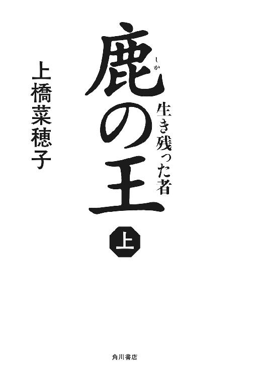

| 鹿の王01 ‐‐生き残った者‐‐ | |
| 上橋菜穂子 | |
| KADOKAWA / 角川書店 (2014) | |

鹿の王 上
─生き残った者─
上橋菜穂子

角川ｅ文庫
本作品の全部または一部を無断で複製、転載、配信、送信したり、ホームページ上に転載することを禁止します。また、本作品の内容を無断で改変、改ざん等を行うことも禁止します。
本作品購入時にご承諾いただいた規約により、有償・無償にかかわらず本作品を第三者に譲渡することはできません。
本作品を示すサムネイルなどのイメージ画像は、再ダウンロード時に予告なく変更される場合があります。
本作品は縦書きでレイアウトされています。
また、ご覧になるリーディングシステムにより、表示の差が認められることがあります。
目次
主な登場人物
ヴァン
物語の主人公。〈独角〉の頭として東乎瑠を相手に戦ったが、敗れ、アカファ岩塩鉱で奴隷となっている。
ユナ
岩塩鉱でヴァンが拾った元気のいい幼子。
トマ
オキに住む青年。怪我をして動けなかったところをヴァンに助けられる。
オゥマ
トマの父。
季耶
トマの母。東乎瑠から移住させられてオキに来た。
ホッサル
物語のもうひとりの主人公。天才的な医術師。
マコウカン
ホッサルの従者。
ミラル
ホッサルの助手。
リムエッル
ホッサルの祖父。東乎瑠の皇妃を死病から救ったことのある高名な医術師。
トマソル
ホッサルの義兄。オタワル深学院〈生類院〉の院長。
シカン
トマソルの助手。ユカタ平原の〈火馬の民〉の出身。
アカファ王
東乎瑠に征服されたアカファの王。東乎瑠に服従を誓っている。
スルミナ
アカファ王の姪で、東乎瑠の有力者・与多瑠の妻。
トゥーリム
〈アカファの生き字引〉と呼ばれるアカファ王の懐刀。
マルジ
後追い狩人の頭。
サエ
マルジの娘。跡追い狩人の中でも素晴らしい腕を持つ女性。
スオッル
〈谺主〉。ワタリガラスに魂を乗せて飛ぶ〈ヨミダの森〉に住む老人。
那多瑠
東乎瑠帝国の皇帝。皇妃の命を救ったリムエッルに信頼をよせている。
王幡侯
東乎瑠帝国アカファ領主。ホッサルの治療で命を救われたことがある。
迂多瑠
王幡侯の長男。傲慢で強引な男。
与多瑠
王幡侯の次男。アカファ王の姪・スルミナを妻にしている。
呂那
王幡領の祭司医長。
我が槍は 光る枝角
恐れを知らぬ 不羈の角
背には 我が仔
低く構えし この角は 弱き命の盾なるぞ......
── 〈光る葉〉の卵 ──
「お祖父さま！」
哀しげな声をあげて、少年が部屋にかけこんできた。
壮年の男は読みかけていた書物を机に置き、
「どうした」
と、たずねた。
少年は顔をゆがませ、息をはずませながら言った。
「〈光る葉っぱ〉が死んじゃったみたいです」
男は椅子をひいて立ち上がった。そして、少年とともに、〈光る葉っぱ〉を育てている部屋へと向かった。
中庭に張りだした大きな窓から、燦々と陽の光がはいってくるその部屋には、巨大な水槽が置かれ、澄んだ水の中に緑の藻がゆらゆらと揺れていた。
その藻の下に、灰色に変色した落ち葉のようなものが漂っている。
水槽を見、それから祖父を見上げて、少年は唇をふるわせた。
「ぼく、ちゃんと育てていたのに。お祖父さまに言われたとおり、水を替えて......」
祖父は少年の肩に手を乗せた。
「おまえのせいじゃないから、落ち着きなさい」
「でも！」
「落ち着いて、よく見てごらん。そら、その藻のところに、なにか見えないかね」
少年は眉根を寄せ、水槽にぴったり額をつけて、藻を見つめた。
「......あ！」
藻に、小さな粒が無数についている。少年は目を丸くして、祖父をふりあおいだ。
「お祖父さま、これ、卵ですか？」
祖父はうなずいた。
「そう、卵だ」
水槽を見下ろしながら、祖父は言った。
「〈光る葉っぱ〉は、卵を産むと、ほどなく死ぬ。一斉に。例外はない」
少年の目に、ふっと暗い影がきざした。
「......子どもを育てないで、死んでしまうの？」
祖父はうなずいた。
「生まれ落ちたときから、親の助けなしに己の力だけで生きていく生き物は、これだけではない。そういう生き物は、案外多いものだ」
なにか考えながら、少年はじっと水槽を見つめていた。
「でも、〈光る葉っぱ〉はなんで死んだのですか？ 卵を産んだら、急に死ぬなんて変だ。卵が殺したのですか？」
祖父は、首をふった。
「そうではない」
音もなく漂っている木の葉のようなものを眺めながら、祖父は言った。
「これの身体の中には、病の種がいたのだ」
「......え？」
「〈光る葉〉は、病の種を身に潜ませて生きる生き物なのだ」
祖父は少年のかぼそい肩に乗せた手に、かすかに力をこめた。
「生き物はみな、病の種を身に潜ませて生きている。身に抱いているそいつに負けなければ生きていられるが、負ければ死ぬ」
ため息をつくように、祖父は言った。
「ほかのすべてと、同じことだ」
第一章 生き残った者
一 嚙まれる
また、木洩れ陽の中にいる夢を見た。
目を上げれば、遠く、雪をまとった山脈が見える。故郷の谷川の、木洩れ陽にぬくもった岩の上に腰をおろして、釣り糸を垂れている夢だった。
なぜだろう。そんな夢を、汚泥にまみれた地の底で、毎夜、繰り返し見る。
あの川は美しかった。木々の枝がゆったりとはりだし、秋になれば、赤や黄に色を変えた葉が、水面を錦のように彩った。
老いて力尽き、水面に舞い降りた枯葉は、澄んだ水の底に小さな影を落としながら、いずこともなく流れていく。
いずれは、ああなる。誰もが、ああなるのだ。
水面に身を任せて流れゆく枯葉を見ながら、幼心をふと貫いた、あの天啓のような諦観の記憶ゆえに、こうして繰り返し清流を夢に見るのだろうか。
（......だとすれば）
ヴァンは顔をゆがめた。
（おれも、案外くだらない）
万力に挟まれた小枝のようにあっけなく、圧倒的な東乎瑠の兵力に押しつぶされたカシュナ河畔の戦の一部始終は、不思議なことに、まるで夢に見なかった。
兄弟同然に慈しみあっていた皆が目の前で切り裂かれ、死んでいった有様は、起きているときには生々しく思い出されるのに、なぜか夢には現れてこないのだ。
屍が累々と横たわる戦場に、襤褸切れのようになりながら一人立ち尽くしていた自分の上に降ってきた網の、油じみた埃臭い匂いも、捕らえられて奴隷となり、この地獄──アカファ岩塩鉱に連れて来られるまでの諸々も、夢に見ることはない。
ただ、時折、夢に出てくる顔がある。
故郷の山地で戦いはじめた頃、初めて殺した男の顔だ。
多くの兵の後方で、美しい馬に跨り、兵たちに甲高い怒号を発していた将校。遠目には、いかにも傲慢な東乎瑠の将に見えたが、うまく兵たちから切り離して脇から近寄り、その胸に矢を射たとき、のけぞった頭から転がり落ちた兜の下から現れたのは、思いがけぬ若い顔だった。
鎧の合わせ目から己の胸に突き刺さった矢を、茫然と見ていたその顔。
ほんとうに、これで自分は死ぬのか、と思い、そうだ、死ぬのだ、と悟り、恐怖と苦悶に歪んだ、その若い顔が、いまも目に焼きついている。
その後はもう、幾人殺したかも数えられぬ戦となり、死は、ありふれたものにすり替わって行った。
そして、いま、自分もまた、目の前に死を見ている。
死体となって投げ捨てられるまで長くても三月といわれるこの地獄で、もう二月。蟻のように、ひたすら地の底と地上とを行き来しながら、肩に食い込む岩塩の籠を運び続け、夜は地の底で、岩盤に埋め込まれた鉄杭に足枷を繫がれて眠る。その繰り返しだ。
連れて来られたばかりの頃は、鉄杭の根元を根気よく蹴り続ければ、やがては緩みが出て外れるのではないかと思っていたが、固い岩盤に深く打ち込まれている鉄杭は、蹴っても、蹴っても、びくともせず、わずかな糧しか与えられず酷使される日々に疲れ果てた身体からは、杭を蹴る気力さえ失せていった。
衰えてきた身体に促されて、自分の心が、いつのまにか、すべてを諦めるための準備を始めていたのだろうか。
（......くだらない）
無体に切り倒される木に、枯葉の諦観などあるものか。
もう若くはないとはいえ、まだ四十。この身が擦り切れ、命の最後の滴が尽きるその瞬間まで、敵の頸木を外そうともがく根性があってもよかろうに。
そう思う心の底に、生き延びることに、たいした執着も見いだせぬ空ろさがあった。すり鉢の底に落ちていくように、この命が尽きるときは、その空ろさが、わずかなりとも助けになるのかもしれない。
こんなものが、つまりはおれの人生だったのだ。
そう思うと、泣きたいような笑いたいような虚しさが、軋みながら胸の底を捩じる。
それでも、自ら死を選ぶ気はなかった。
死のうと思えば、いくらでも方法はあるだろうが、苦痛に負けて死を選ぶことは、したくなかった。
おのれの身体に残る命の火が消えていくまでは、生きねばならない。
カタ、カタと静かな音が続いている。
地の底へ、わずかな風を送る送風羽が回っている音だ。地下水が流れる力を借りて水車が回され、送風羽が回され、その羽に乗って長く連ねた風箱を通って来るたよりない風。息をつなぐ命綱。あの音が、いずれ聞こえなくなる日が来るのだろう。
つぶった目の奥に、細く澄んだ水の流れが見えた。
カタ、カタ、と、つぶやいている小さな声が聞こえる。
玩具の水車が回っている。息子に作ってやった水車だ。遠いむかし、父に作ってもらったのを思い出して作ってやった、あの水車。笹で作った水車は、ちゃぷちゃぷとかすかに水音を立てているだけだったが、息子は一生懸命、口で、本物の水車の音を真似ている。
二の腕に、息子の息を感じた。かすかな、やわらかな息......。
夏の川原の、白く乾いた石の向こう、木立の狭間に木洩れ陽が躍っている。樺の木の眩しいほどに白い幹と、風に、ちらちらとさざめきたつ繊細な緑。
息子が目を上げ、肘に触れた。木立の奥を指さしている。
（......ああ）
鹿だ。飛鹿がいる。
木々の狭間、濃い緑の影になっているその姿。もう盛りを過ぎた鹿だ。だが、なんと大きいのだろう。枝角が燃え立つ炎のように、天を突いている。
ヴァンは立ち上がり、息子の手を曳いて歩きはじめた。
陽炎のように、鹿の姿がゆらめいている。いまにも消えてしまいそうだった。
息子の小さな手を握って、ヴァンはささやきかけた。
（もしかすると、あれは......）
どこかで叫び声がして、ヴァンは、びくっと目を覚ました。
たったいま見ていた美しい光はあっという間に消え去り、暗い汚臭に満ちた現実が戻ってきた。
また、聞こえた。......かなり遠い。
この地の底には、岩塩を掘り出したあとに出来た房が蟻の巣のように幾層にも重なっているが、聞こえてきたのは、この層に繫がれている奴隷たちの声ではなかった。
彼らの声は絶えず聞こえている。
うめき、すすり泣く声から、人の声とも思えぬ獣じみた咆哮まで、昼夜を分かたず聞こえ続けているので、もはやそういう声は、声とも思われぬ雑音に変わってしまっていた。
だが、いま聞こえてきたのは、それとは明らかに違った。だからこそ、耳に届いてきたのだろう。
切迫した声だ。空ろに谺しながら、いくつも重なって響いている。
恐慌をきたして、叫び、喚いている声。はじめは外に通じている上の坑道あたりが騒がしかったが、次第に下へ、下へと騒ぎが下りてきている。
（......なんだ？）
半身を起こして眉をひそめたとき、坑道の出入り口へ通じる幹道に最も近い所に繫がれている奴隷が、鎖を引き摺って立ち上がるのが見えた。
坑道と幹道が交差している所に灯されている松明の明かりに、その男が叫びながら身を捩じる影が映った、そのとき、何かの影が黒い水のようにするっと入って来るのが見えた。
（......犬？）
揺れる松明の明かりに、毛並みが光ったように見えたが、あまりにも暗く、姿をしっかりと捉えることはできなかった。──狼に似ているが、狼より小さい。
（まさか、山犬か？）
故郷の山に多くいた、恐ろしく剽悍で残酷な山犬。あの影の身のこなしは、山犬に良く似ているが、こんなところに、なぜ、山犬が......？
入り口にいた奴隷とその影が交じり合い、何かを引き裂いたような絶叫があがった。
「......ウリヤ、キ？ オノ、ロギ？」
隣に寝ていた男も起き上がって、闇を透かし見ながら怯えた声をあげた。こちらを見て、問いかけるように何か言っているが、何を言っているのかまったくわからない。
この岩塩鉱で働かされているのは、ほとんどが東乎瑠人の死刑囚か、南から連れて来られた敗戦奴隷なので、言葉が通じる者に会ったことがなかった。アカファ出身の者はヴァンの他にはいないのだろう。
ヴァンは隣の男に肩をすくめてみせ、使えるものはないか、辺りを見回した。
自分を岩盤に繫いでいる鎖が手首に繫がっているなら使いようもあるが、足首の鉄枷ではどうしようもない。
黒い獣たちは奴隷を次々に襲いながら、こちらへ近づいてくる。
「オジャ！ オジャ！ オジャ！」
隣の男がわめきながら、追い払おうとするように手をふったが、獣は止まらなかった。
獣が男に跳びかかった瞬間、ヴァンは、繫がれていない左足で、その獣の横腹を思いっきり蹴った。
蹴り飛ばされた獣は、ギャンッと短く鳴いたが、背中から岩壁にぶつかる寸前で、身をねじって岩壁を蹴り、地面に下り立った。
信じられぬ身のこなしだった。
啞然として、ヴァンはつかのま、その獣と正面から見つめあった。
闇の中でも異様に光って見える金色の目が、なにか考えているようにこちらを見つめている。......次の瞬間、目の前に、黒い塊がいっぱいに広がった。
生暖かい風が顔を包んだ。獣の口からは、裂けた生木のような青臭い奇妙な匂いがした。
とっさに喉を守った腕に、牙が食い込んだ。
固い物に挟まれたような圧迫感がきて、すぐに牙が皮膚を食い破った激痛が腕に走った。
ヴァンはうめきながらその黒い塊の鼻面をつかみ、長い鼻梁にそって手を滑らすや、目に指を突き込んだ。
一声悲鳴を上げて、獣はヴァンの腕を離したが、潰された片目をつぶったまま、一、二歩背後によろけただけで、逃げもせず、隣の男の足を嚙み、次々に奴隷たちを襲って嚙みながら、坑道の奥へと消えて行った。
嚙まれた腕を押さえて、ヴァンは荒く息をついた。痛みはひどかったが、血はさほど出ていない。
他の奴隷たちも、それぞれ嚙まれたところを押さえながら、興奮気味に、互いに声をかけあっている。
みな、鎖で繫がれて逃げることも出来ぬ状態だから、いきなり獣に襲われた恐怖は凄まじかったが、騒ぎの割には、命に関わるような大怪我をした者はいないようだった。
「オッタク、エェゼ！ ラギ、ロギ、ゲッド、マイェ！」
罵り、うめきながら足を押さえている男を見下ろして、ヴァンは眉をひそめた。
（なんのために......）
あれは襲ってきたのだろう。
山犬も狼も、よほど飢えているか、縄張りや仔を守ろうとするときでなければ、人を襲うようなことはしないものだ。
なにかに追われて、岩塩鉱に逃げ込んだのだろうか？
怯え、恐慌をきたしていれば、反射的に嚙むということはあるだろう。だが......。
（あいつは、怯えてなどいなかった）
一瞬見つめあった金色の目。あの目には、興奮の色など欠片もなかった。むしろ、冷静にこちらを観察しているようにすら見えた。
（あれは、兵士の目だ）
淡々と任務をこなす兵士は、ああいう目をしている。そう思ってから、ヴァンは首をふった。考えても仕方がない。
傷の周りを何度も絞って血を床に落としながら、ヴァンは胸の中で舌打ちをした。
（明日の朝には、ぱんぱんに腫れるな）
それもまた、思い煩っても仕方のないことだった。
いきなり恐怖に襲われた反動だろうか、鉛でも溶かしこまれたように身体が怠くなってきた。ヴァンは鎖を身体に当たらない位置に避けて横になり、ため息をついて目をつぶった。
翌朝、粗末な朝食を運んできた奴隷女は、どこか怪我をしているような、ぎこちない仕草で薄い粥を配った。目の前に粥の椀を置いたとき、その腕に有り合わせの襤褸布を巻いているのが、ちらっと見えた。
いつもは、威圧的な足音を響かせて坑道に下りてくる奴隷監督も、かったるそうな、疲れた足取りで下りてきて、作業の開始を命じた。
四日目の朝、朝食を運んできた奴隷女の手が激しくふるえ、粥がこぼれた。薄暗い中でも、その腕や顔に発疹が出ているのが見え、ヴァンはぼんやりと、風疹にでも罹っているのか、と思った。
幼い頃、風疹を患ったときに母に飲まされた薬草のことが頭に浮かび、つい、
「ツッキ（オナモミを干して粉にした薬）があるようなら、飲んでみろ」
と、声をかけると、言葉の意味はわからずとも、なにか思いやりをかけられたと感じたのか、奴隷女は顔をあげて、かすかに微笑んだ。だが、その微笑みをつくることすら億劫そうに見えた。
七日後、隣の男が、朝になっても起きなかった。
身体をぎゅっと丸めた苦しげな姿で横たわっている。呼んでも反応がないので、そっと揺すると、もはや冷たくなっていた。
そういえば、一昨日ぐらいから、苦しそうに咳をしていた。夜中に、唸る声を聞いたような気もするが、疲れきっていて身体を起こす気になれず、横たわったままぼんやりと聞いただけだった。
起きて、さすってやればよかった、と、もはや動くことのないその背を見ながら思ったが、妙に身体が熱っぽく、怠くて、その思い遣りすら、どこか、心の遠いところで、ぽつんと浮かんだだけだった。
坑道のあちこちで、枯れた木をこするような咳が聞こえていた。
その翌朝、坑道に繫がれて眠っている男らのうち、四人が目覚めなかった。
作業をするために坑道を出ると、あちこちの坑道に遺体が転がっているのが見えた。生きて動いている奴隷たちも、鞭を持って傍らに立っている奴隷監督たちも、胸が軋むような咳をしている。
静かに病が蔓延していることを、ヴァンは、ぼんやりと感じていたが、さして気にもならなかった。
あの男らは、もう、この肩に食い込む、肌が裂け、骨が軋むような重みを背負わなくても良いのだ。自分も、ほどなくそうなるだろう。
獣に嚙まれて、八日後の夜は、木洩れ陽の夢は見なかった。──代わりに、凄まじい悪夢がやってきた。
突然、激しい頭痛とともに、歯の根が合わぬほどの悪寒に襲われた。
波のように繰り返し身体をとらえて震わせる激しい悪寒戦慄が、やがて、少しずつ静まって行くのと入れ替わりに、どんどん熱が上がりはじめた。吐く息が燃えているのではないかと思えるほどの高熱だった。
その熱にうかされながら、悪夢を見た。
木の根が生えてくる夢だ。
あの獣に嚙まれた腕の傷から、木の根が腕の中に入って来る。
わめいて腕を押さえようとするのだが、動くことができない。動かぬ腕にぎりぎりと木の根が突き入ってくる。
肩まで達すると根は枝分かれし、一本は首へ、もう一本は鎖骨の辺りから胸へと伸びて行く。そうして、じりじりと枝分かれしながら、血管に沿って全身へと広がっていく。
耐え難い痛みだった。
声なき絶叫を繰り返し、繰り返し、もはや耐えられぬと何度も思い、失神をひたすら願ったが、夢の中ではそんなことは叶うはずもなく、身体の隅々へ広がった木の根が、頭に達した、その瞬間を、ヴァンは生々しく感じることになった。
激痛を覚悟したそのとき、頭の奥の一点を何かが突き抜け、次の瞬間、痺れるように熱い快感が全身に広がった。
下腹部から両足の付け根が板のようになり、ヴァンはのけぞって震えた。
快感は長く続いた。
心ノ臓が破裂しそうなほど速く脈打っている。
苦しかった。
死が間近に迫っているのを感じたとき、目の奥に無数の光が散りはじめた。
光の粒はやがて何かに吸い寄せられるように寄り集まり、渦を巻きながら拡大していく。身の内側の壁をこすりながら、光の粒は、その壁をも粒に変えていった。
（......崩れていく）
己の身体が細かい光の粒になって崩れていく。
背の下にあるはずの岩もまた、いつのまにか光の粒になっていた。我が身に連なるすべてが光の粒になり、すべてが崩れ、混沌となって交わっていく。
消えていく身体の中で、一粒一粒の光に、ヴァンは己が映るのを見た。
めくるめく速さで、時を遡っていく。
妻の、あのちょっとおどけたような笑顔が見え、息子の、はにかんだような笑顔が見え、母と父、兄の顔が見え、故郷の家の戸が、その戸の陰から猟犬のワズが小走りに出てくるのが見え、煙の匂い、清流の光、紅く色づいた葉裏を透かして躍る木洩れ陽が見え......。
（......行くな）
ヴァンは流れ去って行こうとする何かを、必死に押しとどめ、繫ぎ留め、己の身体をもう一度寄せ集めようとした。
その思いの強さが、わずかでも力になったのだろうか。
無辺に薄く広がっていた光の粒が、やがて、ゆっくりと──気が遠くなるほどゆっくりと集まりはじめ、己の身体をもう一度編みはじめた。
二 出会い
焼けつくような喉の渇きで目が覚めた。
かすれたうめきを漏らしながら目を開けようとすると、目やにが剝がれる音がした。ひんやりとした岩壁に手の甲が触れている。
辺りが妙に明るかった。自分の腕に生えている産毛が見える。
獣に嚙まれたところを見ると、牙が食い込んだ生々しい傷跡の上には、すでに瘡蓋ができていた。
昨夜、高熱にうかされ、恐ろしい夢を見たような気がする。
（昨夜......？）
あれは、ほんとうに、昨夜だったのだろうか。
どうも時の感覚が定かに感じられない。自分がどのくらい眠っていたのか、わからないのだ。ひどく長い夢を見ていたような気もするが、空白の中に落ち込んでいたような、奇妙に頼りない感じもしていた。
（腹が減った......）
いや、腹が減るなどという生易しい感覚ではなかった。腹の内側から、とろ火で炙られているような激しい飢えが、刻一刻とひどくなってきている。小刻みに手がふるえていた。早く何か食わねば、気を失うかもしれない。
しかし、鎖に繫がれているこの状態では、自分で食べ物を探しにいくことなど出来ない。朝の粥が出てくるまでには、まだ長く待たねばならないと思うと、冷や汗が滲みでてきた。
喉も渇いている。眩暈もする。......ただ、それらさえなければ、ここしばらく感じたことがないほど、頭ははっきりしていた。
高熱を出して寝込んだ翌朝、どんどん汗が出て熱が下がり、すっきりと目覚めたあの感覚に近い。
それにしても、静かだった。
ネズミや虫が走り回る音しか聞こえない。相変わらず送風羽が回る音は聞こえているが、人が動く気配も、声も、まったく聞こえない。
（まだ、真夜中なのか）
いぶかりながら、岩壁の方を向いていた身体を反転させ、よっこらしょ、と立ち上がったとき、目に飛び込んできた光景に、ヴァンは愕然とした。
視界の果てまで、累々と死体が転がっていた。
昨夜までは生きていた斜め向かいの男も、その向こうの壁に繫がれている男も......この層にいるすべての男たちが、息絶えている。
眠っているのではないことは、一瞥しただけでわかった。
いつ燃え尽きたのか、松明は黒い炭に変わり、幹道から漏れてくるわずかな明かりしかないのに、死んでいる男らの、苦しみ悶え、ゆがんだまま息絶えた顔が、はっきりと見えた。
静寂の中で、ヴァンはふるえはじめた。
心ノ臓が激しく打っている。息苦しい。
何が起きたのか......何が起きているのか......何もかもがわからない。ただ、ここにいてはならぬ、という予感だけがあった。早く逃げろ、と何かが告げている。
飢えも、腹の底から身をせかしている。
（ここを出なくては。──一刻も早く、ここを出るのだ）
闇雲に走り出そうとしたとき、鎖が鳴って右足が激しく引き戻され、つんのめった。とっさに両手を岩床について身体を支え、ヴァンは舌打ちをした。
（くそっ）
唐突に、怒りが噴き上げてきた。
己を捕らえて離さぬものが、異様に憎かった。
ヴァンは足枷を握るや、怒りにまかせて思い切り引っ張った。ガチン、ガチンと耳障りな音をたてて、鉄杭二本に取り付けられている鉄板と螺子がきしむ。
とれるはずがないことはわかっていたが、そんなことはどうでもよかった。
燃え立つような怒りに駆られ、雄叫びを上げ、歯を食いしばり、全身の筋肉をふるわせて、ヴァンは鎖を引っ張った。
腕に、肩に、筋肉の束が盛り上がっていく。
と......太い鎖の輪が、飴のように捩じれていく感触が手に伝わってきた。見る見るうちに鎖は大きく口を開き、あっけなくちぎれ飛び、ヴァンは後ろにひっくりかえった。
乱れた寝藁の上に尻をつき、手にぶら下げた鎖を、ヴァンは呆然と見つめた。
己が引きちぎった鎖を、しばらくそうして見つめていたが、やがて、はっと我に返ると、足枷についている鎖の残骸を引き摺りながら、駆けだした。
自分の息の音を聞きながら、なだらかな上り坂になっている幹道を駆け抜け、地上へと登る天通坑へ向かった。
遥か高みに光が見える。その光を、滑車を支える頑丈な木桁が遮り、そこに結ばれた太い縄が、ゆら、ゆら、と揺れていた。
ぼこぼこと白く塩を吹いた木製の太い梯子にとりつき、ヴァンはぐんぐんとよじ登り始めた。
上の層に近づくにつれて、辺りはゆっくりと明るくなっていく。
第二層の岩盤の上に頭がでると、コッ、コツンと馬の蹄が岩を打つ音が聞こえてきた。
（......馬は、生きているのか）
ヴァンに気づいたのだろう。岩壁と木の柵の間に繫がれている馬がおっとりと、こちらを見て、鼻面を上げ、ぶるぶる、と鼻を鳴らした。
他には、動くものはなかった。
目を細めて坑道を見渡しても、息絶えて倒れている奴隷たちの姿しか見えない。
ヴァンは歯を食いしばり、上へ上へとひたすらに登っていった。
（あの獣は......）
ふと、数日前に襲ってきた獣のことが頭を過ぎった。
あれは、この梯子をどうやって下りたのだろう？ 犬だろうが狼だろうが、梯子を下りられるはずがない。ましてや、登ることなど出来はすまい。
（......いや）
あれなら、出来たかもしれない。
岩壁に叩きつけられる寸前に身をねじって岩壁を蹴り、宙を跳んで下り立った身のこなしを思えば、この狭い掘り抜き穴を、梯子と岩壁を交互に蹴りながら下り、登って行くくらいの芸当は出来ただろう。
（あれは、何だったんだ）
奴隷たちが次々に死に始めたのは、あれに嚙まれた後からだ。
いかに過酷な労働をさせられていても、ただ疲労していたというだけで、これほど大量の奴隷が、一気に死ぬようなことはあるまい。
地の底では、ふいに毒気が満ちることもあるが、毒気ならば、この掘り抜き穴に近い所に寝ていた男は助かっていただろうし、何層にも分かれて眠っていた男らが、すべて死ぬというのは考えられない。
みな、激しい咳をしていたが、あの風邪も、獣に嚙まれた直後から蔓延していったような気がする。
（......だが）
冷静に、まるで与えられた任務をこなすように、淡々と、一人ずつ嚙んで行った獣の姿を思い出し、ヴァンは唇を嚙みしめた。
（あれに嚙まれたことが死因なら、なぜ、おれは生きている......）
最後の一段に手がかかり、ヴァンは、ぐいっと身体を押し上げ、鉱山口に通じる坑道へと転がり出た。
ぽっかりと口を開けている鉱山口を見て、ヴァンはわずかに目を細めた。
西日が、壁をうす赤く染めている。
（夕暮れ......？）
朝ではないのか？ だとすれば、いったい、どのくらい眠っていたのだ？ 半日か？ それとも、もっと過ぎたのか......？
唇をぐっとひきむすび、ヴァンは坑口の外へ出た。
とたんに、黄金色の光に包まれた。
清涼な秋の夕風が頰をさすっていく。かすかに揺れる木々の葉を透かして、夕陽が静かに辺りを染めている。
人の気配がなかった。
奴隷の逃亡を防ぎ、岩塩鉱を守っている番小屋の兵士たちも、奴隷監督の男らも、まったく姿が見えない。
ただ、小さく羽音を立てて飛んでいる蠅だけが、彼らがどうなったかを告げていた。
ひんやりとした風にさすられて、ヴァンはぶるっと身震いした。
とにかく、何か食べねば。口に入るものなら、なんでもいい。
辺りを見回すと、いくつかの建物が見えた。
ここに連れて来られたときは、逃亡を防ぐために目隠しをされていたし、岩塩を運び出す間は、多くの奴隷と奴隷監督たちがひしめいていて、辺りを見る余裕などなかったから、岩塩鉱の周りがどうなっているかを見たのは、これが初めてだった。
まず目に飛び込んできたのは物見櫓だった。その脇に並んでいる長屋風の建物は、奴隷監督たちの住居だろう。
東側に並んで建っている大小二つの建物の屋根からは、いくつもの煙突が突き出ていた。奴隷の食事を作る厨房かもしれない。そばに倉庫のようなものが並んでいるから、多分、そうだろう。
どの建物の戸もしっかりと閉められている。
飢えに苛まれ、もはや、何かを用心するという気もちさえ失せていた。ヴァンは一番近い建物の戸を蹴り、身体を何度もぶつけた。内側に閂が掛かっているらしく、隙間ができても、なかなか戸は開かなかった。
それでも諦めずに何度も身体をぶつけているうちに、何かが折れる音がして、いきなり戸が開いた。
身体が泳いで、たたらを踏みながら中に入ると、脛が固い物にぶつかった。舌打ちをして、ヴァンは脛をさすった。椅子が三つ転がっている。
（これで戸を押さえていたのか）
建物の中には静寂が満ちていた。
夕暮れの光が窓から斜めに射しこみ、ゆっくりと埃が舞っている。
その淡い光の中に、女たちが倒れていた。水を飲もうとしたのか、水瓶に手を伸ばした格好で倒れている女もいる。
食事をしているときに、倒れたのだろう。部屋の中央の調理台の上には、切り分けたファム（麦のパン）が散らばり、汁物がこぼれていた。
粥を運んできた奴隷女の腕に、襤褸布が巻かれていたことを、ふと、思い出した。
（閂......扉を椅子で押さえている......）
何かに襲われることを、恐れていたのだ。
（あの獣か）
きっと、ここも、あれに襲われたのだ。皿の破片などが床の一か所に掃き寄せられている。あれは何だったのかしら、と、青ざめた顔で話しながら、掃除をしていた女たちの姿が見えるようだった。再び襲われぬよう、夜には戸に閂をかけて眠っていたのだろう。
一日、二日、三日......咳をし、風邪をひいたのかと思いながら、熱のある身体で仕事をさせられ、やがて、彼女らは倒れたのだ。
ふいに身体が鉛のように重くなった、あの奇妙な感覚を思い出しながら、ヴァンは息絶えている女たちをながめていた。
血の気のない彼女たちの頰や首には、ぽつぽつと赤黒い斑点が浮いている。彼女らを襲った熱が残していった跡なのかもしれなかった。
頭が割れるように痛かった。身体がふるえ、息をすることさえ苦しい。それでも、突然の悲惨な死を迎えた女たちの身体を、そこにないもののように扱うことはできなかった。
ヴァンはふるえる手をあわせ、目をつぶり、女たちの魂が遠き常春の地へと迎えられることを祈った。
そして、目を開けると、辺りを見回した。
さっきからずっと、濃厚な食べ物の匂いが鼻に流れこんできている。
見上げると、トウガラシやニンニクの束が天井からぶら下がっているのが目に飛び込んできた。ぐるっと輪にして、腸詰もぶら下げてある。中央の大きな調理台の上には、竈から出したまま、切り分けていない、大きな丸いファムも載っていた。
どうやらここは奴隷の食事を作る厨房ではないようだった。奴隷が口にできるのは、どろどろの麦の粥だけだ。腸詰やファムなど、久しく目にしていない。
ヴァンはまず水瓶にとびつくと、柄杓で水をすくって、喉を鳴らして飲んだ。冷たい水は信じられぬほど甘露だった。すくっては飲み、すくっては飲み、思うさま飲んだ後、調理台に載っていたファムをつかんで、大きくちぎってかぶりついた。
ファムは、四人家族の夕食に充分なほどの大きさだったが、嚙むのさえもどかしく飲みこみ、また、ちぎってはかぶりつくうちに、あっという間に腹におさまってしまった。
頭の片隅で、食べ過ぎるな、という声が聞こえていた。
長いことわずかな食事しか腹に入れていなかったのだ。いきなり食べ過ぎれば、死ぬぞ、と、冷静な声が告げていた。
しかし、手を止めることができなかった。
まるで、身体の中にぽっかりと深い穴が空いているようで、食っても、食っても、その穴が埋まらないのだ。
手を伸ばし、腸詰をぶら下げている紐を乱暴に引きちぎって、塩辛いその腸詰にかぶりついた。冷たい腸詰の白く固い脂さえ、たまらなく旨かった。久しぶりの肉の匂いが身の内に何かを燃やしはじめたようで、消えかけていた蠟燭の火が明るさを取り戻したように、全身が温かくなってきた。
一息ついて、口を手の甲で拭ったとき、ふと、何かが聞こえたような気がして、ヴァンは顔を上げ、耳を澄ました。
たしかに、何か聞こえる。──泣き声のようだった。
（......生き延びた者がいるのか）
どこだ。どこから聞こえる......？
耳を澄ませて聞くうちに、その声が聞こえてくる方角がわかってきた。
厨房から外に出ると、泣き声は少し、大きくなった。
（隣か）
いまいた建物より粗末だが、規模としては、かなり大きな建物が目の前にあった。
やはり戸は内側から何かで押さえられている。さっきより身体は楽になっていたが、切羽詰まっていない分、戸を蹴破る気力が出てこなかった。
見回すと、東側の壁の高い位置に明かり取りの窓が見えた。
ヴァンは、さっき脛にぶち当たった椅子をもって来ると、それを足場にして、明かり取りの窓から身をねじ込むようにして中に入った。
薄暗い建物の中は、隣の建物より随分と貧相だった。
だだっぴろい空間に、いくつもの竈がずらりと並んでいる。竈の上には、黒い鍋が載っていた。どうやら、ここが奴隷の食事を作っていた厨房のようだった。
そして、ここにも息絶えた女たちがいた。まだ若い娘もいる。
その足に巻きついている枷を見て、ヴァンはぐっと歯を嚙みしめた。──この娘たちも、奴隷なのだ。戦に負け、故郷から駆り集められて、ここへ連れてこられたのだろう。
奥の方の竈の灰はかきだされ、灰入れに積み上げられている。黒い鍋もほとんどが、きれいに洗って乾かされた状態だった。
ただ、手前の二つの竈だけ、まだ灰が残っている。竈に載っている黒い鍋にも、粥の残骸が入ったままだった。
岩塩鉱で働く奴隷たちの食事作りを終え、片づけをしてから、自分たちの食事を作っていたときに、倒れたのだろう。
泣き声は、くぐもってはいるが、前よりはずっと大きく聞こえている。しかし、女たちはみな床に倒れていて、息がある者はいなかった。
ただ、ひとりだけ、奥の方に、床ではなく竈を背で塞ぐようにして死んでいる女がいた。髪を覆っていた布がずれ落ち、頰に髪がかかっている。二十二、三ほどの娘だった。
背が竈の焚口から外れぬように、必死に己が身を抱えるようにして息絶えている。
熱にうかされ、妄想に襲われて、あの獣に食われぬよう、己の身体で竈の中にいる何かを守ったのだろう。
ヴァンはそっと、その女の身体を両手で抱き、竈の焚口からずらした。
とたんに、泣き声が明瞭になった。
薄暗い竈の中をのぞきこむと、つぶらな黒い瞳が、驚いたようにこちらを見た。
丸っこい小さな手にファムの欠片を持ち、頰を涙で濡らした幼い子どもが、そこにいた。
三 灰の中の光
粗朶が燃え崩れた音で、ヴァンは、はっと目をさました。
どのくらい眠っていたのだろう。
天井に近い煙だしの穴から見える空は、まだ暗い。
とても眠れるような状況ではないはずだが、腹が膨れたせいか、しておかねばならぬことを一通り終えて、腰を下ろしたとたん、異様な眠気が襲ってきたのだった。
一夜を過ごすことにした場所は、幼子を見つけた奴隷用の厨房だった。
隣の厨房は戸を壊してしまったし、ここならば、あれが襲って来ても、子どもを竈に隠してやることができる。
泣いている幼子を、とりあえず竈の中に残したまま、日のある間に周囲をぐるっと見て来たが、この建物以上に、一夜の宿に適した場所は見つからなかった。
堅固な建物だし、火も焚ける。それに、裏口が岩塩鉱の坑道に近い。
たとえ粥一杯でも、数十人分の奴隷用の粥を運ぶとなれば重労働だ。効率よく運ぶために、厨房をここに建てたのだろう。この距離ならば、いざというときは岩塩鉱に逃げ込める。あの迷路のような坑道に入り込んでしまえば、わずかなりとも逃げ延びる確率が高まるはずだ。
塩は、白い金だ。
アカファ岩塩鉱は貴重な財源だから、ここで起きた異常な事態が外に伝われば、蜂の巣をつついたような騒ぎになるだろう。役人や兵士が押し寄せてくる前に、逃げねばならない。
だが、夜の闇の中、あれがうろついているかもしれない山に入る気にはなれなかった。
ここで精製された塩は、一定量溜まると運搬人たちが受け取りにくる。受け取りが、どのくらいの日数を置いて行われるのかわからなかったが、倉庫に積まれていた塩の袋の割合から見て、明日ということはなさそうな気がした。
とはいえ、ここの仕事の仕組みがわからない以上、誰が、どんな理由で訪れて来るか、確かな予測はできない。食材を納めに来る商人もいるだろうし、仕事の監視を行っている役人なども定期的に訪れているはずだ。
そういうことを考え合わせれば、今夜は仕方がないにせよ、明日の夜明けにはここを発つべきだった。
ヴァンは奴隷監督の住居を回り、まず、鍵を探して、足枷を外した。
パカッと足枷が割れ、その重みが足首から消えると、なんともいえぬ解放感が胸を満たした。首輪を外された犬が、ぶるっと身体をふるわせたくなる気もちがよくわかった。
その足枷と鎖の残骸をまとめて岩塩鉱の縦坑に投げ捨ててから、ヴァンはまた監督の住居に戻り、当座生き延びるのに必要な金を盗んだ。
必要以上の金には手を出さなかった。逃亡奴隷は捕まっても鞭打ちの刑に処せられるだけで、死刑にはならない。使える牛や馬を殺す馬鹿はいないからだ。
しかし、強盗や、奴隷監督を殺した者などは、見せしめのために八つ裂きにされる。奴隷になっただけでも屈辱なのに、奴らの理屈で刑に処せられるなど、考えるだけで吐き気がする。奴隷監督が自分たちにしていたことを思えば、ここにある金を全部持ち去ったとしても良心の呵責など覚えはしないが、理に合わぬ罪を着せられる口実を与えたくなかった。
だから、盗んだことが目立たぬように、一か所で盗まぬよう気を配ったが、それでも日が暮れ落ちる前に、金と、奴隷であることがばれないような衣、火口箱と小刀、そして、刀を一振り手に入れることができた。
刀は東乎瑠人が好む、やや反りのあるもので、手に慣れた直刀ではなかったが、贅沢は言えない。
なによりうれしかったのは、弓矢が手に入ったことだった。手入れが行き届いている弓矢で、こちらはしっくりと手に馴染んだ。
それらの荷を持って厨房に戻ると、あの幼子はまだ、竈の中で指をしゃぶっていた。
じっとこちらを見ている、つぶらな黒い瞳を見ながら、ヴァンはしばし、途方に暮れて、しゃがんでいた。
子連れで逃げるなど狂気の沙汰だろう。だが、ここに置いて行く気にはなれなかった。
不思議な面立ちの子だった。母親は、アカファ南部のユカタ平原あたりでよく見かける、浅黒い肌をしていたが、この子の肌は母の肌よりやや明るいし、目の形にも、どこか東乎瑠人を感じさせる。この子の父がどこの誰か知る術もないが、それが示す出来事を思うだけで、胸に嫌なものがうごく。
ここに置いていけば、たとえ生き延びたとしても、この子を待っているのは、母と同じか、それよりさらに過酷な運命だ。奴隷は家畜と同じ。手間がかかると思われれば殺されるし、生かした方が利益になると思われたとしても、人としては扱われない。
「......おい」
小さく声をかけると、幼子はまばたきした。手を差し伸べると、しばらく、その手を見ていたが、ひと見知りをしないたちのようで、やがて、小さな手を差し出してきた。
抱き上げて竈から外にだしてやると、その子は自分の足でちゃんと立った。少し頼りなげに身体がゆれているが、しゃがみはしなかった。
「マゥマ」
床に横たえてやった母親の遺体に手を伸ばす子を、ヴァンは、母の胸に顔をつけられるよう支えてやった。
幼子はよく泣いた。
母親が目を覚まして抱いてくれないことが哀しいのだろう。癇癪を起こして泣き、引き離そうとすると、そっくりかえって、小さい手でヴァンを叩いたが、ヴァンは片手でその子を抱いたまま湯を沸かし、汚れた衣を脱がして、湯で身体をきれいに拭ってやった。
なぜか、その子の泣き声に苛立つことはなかった。自分がやっていることを、遠いところから眺めているような、奇妙に平坦な心地で、ヴァンは黙々とその子の世話をした。
幼子は女の子だった。
汚れ放題になっていた身体を拭ってやるうちに、ヴァンは、幼子の左足の踝のやや下に、細長く、引っかかれたような跡があることに気がついた。
（牙が掠ったような感じだな）
もう瘡蓋ができている。
ヴァンはちらっと自分の腕の傷の瘡蓋に目をやった。
「......おまえも、生き残ったわけか」
数十人もの人間が暮らしていた岩塩鉱で、たったふたりだけ生き残ったのか。──そう思うと、その不思議さが、あらためて胸を刺した。
温かいお湯で拭ってもらったのが気もち良かったのだろう、見つけてきた柔らかい布で覆って抱いてやると、幼子は、指をしゃぶりながら眠ってしまった。
自分の腕の中にすっぽりと入って眠っている子の、わずかに湿った温もりを感じていると、気もちが落ち着いてきた。
累々と遺体が転がっている部屋の中で、ここだけ灯火がともっているような、静かな心地だった。
傍らに横たわっている幼子の母の姿は、すでに薄闇に沈み、ぼんやりとした灰色の塊にしか見えない。
薄明の中では生者も死者も床も竈も等しく灰色の影にとけて、輪郭すら滲んでいる。腕に抱いた子の温もりだけが、ここに生があることを告げていた。
幼子は一、二度、ぼんやりと目を開けたり、思い出したようにちょっと泣いたりしていたが、ありあわせの布で床に作ってやった寝床に入れてやると、そのままぐっすりと眠ってしまった。
日が落ちると、冷え込みが厳しくなる。温もりを吸ってしまう岩塩鉱の中よりはましだったが、それでもかなり寒かった。
（......昨日の夜も、冷えただろう）
よく寒さに耐えて生き延びたものだ。
竈に火を入れて暖をとりながら、ヴァンは、傍らで寝息をたてている幼子をぼんやりとながめた。そうしているうちに、睡魔が襲ってきたのだった。
遠くで、細く鳥が鳴いている。
もう夜明けが近い。
ヴァンはふるえながら立ち上がって、竈の火を搔き起こした。薪を足し、火が音をたてて燃え上がると、空の鍋に水を入れて竈にかけた。湯が沸いてくると、壁に立てかけて乾かしてあった盥をもってきて、そこに湯を注いだ。
そして、纏っていた毛布と襤褸切れのような衣を脱ぐと、その衣を湯に浸して、丹念に身体をぬぐった。
長いこと洗っていなかった身体には垢がこびりついていて、あっという間に湯はひどい有様になったが、何度も湯を捨てては新たに足して、黙々と我が身を洗い続けた。
そうして、清潔になった身体に盗んできた衣をひとつひとつ纏うと、ヴァンは、襤褸布や汚れた湯を外のごみ置き場に捨てた。
朝の光が射す頃、温かい粥をつくって食べ、幼子も起こして、少し冷ました粥を匙で掬って食べさせてやった。
まだ半分寝ぼけているのか、はじめは口に入れてやろうとしても、ぺしゃぺしゃと舌で押し出してしまったが、目が覚めてくると、急に空腹に気づいたように、目を輝かせて、匙にむしゃぶりついて食べ始めた。
焦るあまりに、匙を握っているヴァンの指までしゃぶろうとしている子を見て、ヴァンは思わず喉の奥で笑い声をたてた。
「......おい、おれの指を食うんじゃない。腹をこわすぞ」
つぶやくと、幼子はびっくりしたようにヴァンを見上げ、
「まんま、おにゃげ？」
と、言った。何を言っているのか、さっぱりわからなかったが、腹がふくれてきて、機嫌が良くなってきたらしく、にこにこしている。匙を渡してやると、けっこう器用に粥をすくって食べはじめた。
ほっぺたに粥を撥ねとばしながら夢中で食べている幼子を、朝の光がぼんやりと白く照らしていた。
その産毛が光っているのを、ヴァンはただ、ぼんやりと眺めていた。
四 岩塩鉱の外へ
岩塩鉱の周囲は、物々しい鉄の柵で囲われていた。
南側に門があって、塩や生活物資が行き来する道に向かって開くようになっている。朝になれば門衛が扉を開けるのだろうが、いまは開ける者がいないまま、門扉はしっかりと閉じられていた。
門衛の小屋を探せば、鍵は見つけられるだろう。
だが、ヴァンは門を開けることはせず、柵を乗り越えることにした。奴隷の逃亡や外部からの侵入を防ぐために、柵の上に、びっしりと逆さ鋲が埋められているのは知っていたが、内側から門を開けて、逃げた者がいることを感じとらせたくなかったからだ。
捨ててあった桶を塵置き場に近い柵の下に置いて、その上に立ち、これも捨ててあったボロボロの馬用の毛布を畳んで、逆さ鋲の上を覆ってから、まずは荷を向こう側に放り、それから幼子を背負って柵を乗り越えた。
乗り越えた後、柵に手をかけて背伸びをして、馬用の毛布をはがすと、向こう側に放っておいた。運が向いていれば、桶も毛布も塵置き場から風で飛んだように見えるだろう。
（まあ、犬を放たれたら、こんなことぐらいじゃ逃げ切れまいがな）
そう思ってから、犬の鳴き声がまったくしないことに気がついた。奴隷監督がこれみよがしに何頭も連れ歩いていたのに、吠える声はもちろん、気配すらない。
（あれに、やられたのか）
犬舎に繫がれているところを襲われたのであれば、嚙み殺されていても不思議はない。
（昨日のうちに、調べておくべきだった）
だが、昨日は、犬のことなどまったく頭に浮かばなかったのだ。
（相当鈍っているな、おれは）
奴隷などに落とされて、先の希望を失った日々を過ごすうちに、いつの間にか、心の中にあった何かが磨り減ってしまっていたのだろう。かつてなら考えずとも気づいたことに、気が回らなくなってしまっている。
目の前に広がる深い森を見つめて、ヴァンは、ひとつ、ため息をついた。
母親が倒れていたところのそばに落ちていた負ぶい紐で負ぶっているせいか、幼子は泣きもせず、ちゃんと首にしがみついて、おとなしくしている。お陰で、懸念していたよりずっと楽に柵越えすることができた。
「......いい子だな」
ちょっとゆすり上げながらつぶやくと、幼子は機嫌の良い声で、
「にゃが、とんとん！」
と、言った。
母親に負ぶわれて過ごすのに慣れているのだろう。なにか、小さな声で盛んにしゃべっているその子を背負ったまま、ヴァンは荷をもって歩き始めた。
ありがたいことに、腹に充分食べ物が入っているせいか、身体が軽かった。
子どもを背負い、弓と箙と荷を片手に持って、刀を帯びていても、まるで苦にならない。
森は深く、木々はみな、遥か天に向かって伸びている。秋も深まったこの時季にも葉を落とすことのない木々が頭上を覆い、日の光を遮っていた。静かで陰鬱な森だったが、下生えは丈が低くて、道がなくとも歩くのにさほど苦労はしなかった。
これからどうするか、明確な思惑などなかった。
故郷はもはや、征服者の手に落ちている。
アカファの中でも最西端にあるトガ山地は、アカファ王国が東乎瑠帝国にゆっくりと吞まれていく、その波が、最後に到達した地だった。
強大な東乎瑠帝国に抗っても勝てる見込みなどないことは、子どもたちですらわかっていたが、辺境の小さな氏族が抵抗もせずに服従すれば、奴隷に近い扱いを受けるだろうこともまた、誰もが知っている事実だった。
しかし、逃げようにも、西には、東乎瑠よりも遥かに残酷な支配で知られるムコニア王国が立ちはだかっている。
アカファ王国は巧みに東乎瑠帝国に恭順し、すでに帝国の中で一定の地位を与えられていたから、アカファ人は帝国属州の平民としての暮らしを保障されていた。
だが、トガ山地に点在している各氏族は、アカファ語をしゃべり、ムコニアなど外敵の侵略に対しては〈アカファの民〉として戦っていても、アカファ人ではない。みな、アカファ王に恭順の意を示す代わりに、緩い自治権を許されてきた独立民であったから、アカファ王国併合の後も、トガ山地民は、東乎瑠帝国属州の平民とはみなされていなかった。
東乎瑠帝国が長い年月をかけてじっくりと進めてきたアカファ本土の属州運営が安定し、最後の仕上げとしてトガ山地の平定計画に本格的に着手したとき、アカファ王は各氏族に使者を遣わして、この段階で東乎瑠皇帝に恭順の意を示せば、東乎瑠軍の進軍を思いとどまらせて、氏族民の身の安全を保障するよう交渉できると言ってくれた。
しかし、アカファ王にできるのは「身の安全の保障」までで、属州の旧統治者という立場では、服従後の身分決定に関われるはずもなかった。
征服した土地の民族の扱いは、帝国の辺境支配に深く関わることであり、そこに、属州の旧統治者が関与することには様々な問題があったからだ。
東乎瑠帝国は、下層民を意識的に故地から引き離して、遠方の征服地へ入植させる政策をとっている。アカファ人のような平民としてではなく、下層民として東乎瑠帝国に組み込まれてしまえば、故郷から引き離され、慣れぬ異郷での過酷な暮らしを余儀なくされる。
八方塞がりの中で、ガンサ氏族の長たちが長い長い話し合いの末に選んだ道は、〈抵抗者〉を作ることだった。
徹底抗戦を叫んでいる勇猛な戦士団がいることを東乎瑠軍に見せつけ、容易く支配できる氏族ではないこと、味方にすれば使える戦士がいることを思い知らせておいてから、多少なりとも納得できる条件を提示してくれれば、東乎瑠の支配下に入り、西方を守るそなたらの尖兵となろう、と交渉する。
この土地に精通し、ムコニア王国に対する国境の防衛戦力として使える氏族だと認められれば、このまま故郷で暮らせるのではないか......。
その策の切り札、勝ち目のない戦を仕掛ける死兵の役目を引き受けたのが、〈独角〉と呼ばれる戦士たちだった。
〈独角〉は、ふつうの暮らしから逸れてしまった男たちで構成されている戦士団だ。
神々が飛鹿の姿でこの世に在った頃に生まれたという古い謂れのある組織で、〈独角〉に組み込まれた男は、何かの折には氏族の盾になって死ぬことを誓い、その代わり、氏族の掟に縛られずに生きることを許されていた。故郷で何かあって、流れてきた余所者でも、〈独角〉に志願すれば氏族の一員として受け入れてもらえた。──そういう組織があったからこそ、氏族長たちは、抵抗者を作るという策を思いついたのだろう。
トガ山地はアカファの西の国境地帯にあり、常に西からの侵略に悩まされ続けてきた。侵略者は戦だけでなく、病も連れてくる。とくにここ十数年、繰り返し疫病が流行り、小さな氏族の中には、成員の大半を失ってしまったところもあった。
戦や疫病で家族を失い、流れ流れて、ガンサ氏族に身を寄せる男らが後を絶たず、〈独角〉が、これまでにないほど多くの戦士を抱えるようになっていたこともまた、氏族長たちの策を実現可能なものにしていたのである。
〈独角〉の頭だったヴァンは、氏族長からその策を持ちかけられたとき、仲間たちと共に、笑いながらそれを受けた。
そのとき心にあったのは、妻と子が待つところへ旅立てる口実が、随分と見事に目の前に現れてくれたものだな、という思いだった。
父母も祖父母も、兄さえもすでに逝き、妻と子もこの世にいない身は、もう長いこと、ただ生きているだけの虚ろな何かに過ぎなかった。
いとしい者たちが行ったはずの〈常春の地〉は、病や災い、老いによってこの世を去った者ならば穏やかに迎え入れてくれる常世だが、生の盛りにある者が、悲嘆に暮れて自らの命を絶っても、迎え入れてはくれない。
とくに飛鹿乗りとなった者は、仲間の命を輝かせるために己の命を燃やし、善く生き切ることを誓っている。
その誓いを破り、絶望に負けた卑怯な自殺者は、いつまでも、いつまでも、白昼の道を歩き続けねばならぬという。
どこまでも続く白々とした道を、己の影を長くひいて歩き続けるというのも、どこか自分に似合っているような気もしたが、もし、ほんとうに〈常春の地〉というものがあって、妻と息子が自分を待っているのだとしたら、永久に待つ苦しみを、ふたりに与えたくなかった。
〈常春の地〉が、本当にあるのか、生者にはわかりようもない。
ただ、死ぬるなら、妻と子の方に顔を向けて死にたい。そう思っていた。
氏族長の要請を受け入れた日から、ヴァンは同じような絶望を抱えた男らを率いて、長い戦の日々に飛び込んでいった。
馬では自由が利かぬ険しいトガの山地や森に敵をおびき寄せては、山地戦で驚異的な力を発揮する飛鹿に跨り、得意の不意打ちを繰り返す......。
抵抗は二年近くにも及んだ。
深い森の木陰から、あるいは急峻な崖の上から不意に現れる〈飛鹿乗り〉の恐怖は東乎瑠軍の兵士たちの心に深く焼き付き、一時は東乎瑠軍が撤退を考え始めているという手応えを感じたことすらあった。
その抵抗はやがて実を結び、氏族長たちは、東乎瑠から有利な停戦条件を提示されるようになっていった。
交渉が調っていく中で、〈独角〉は氏族長の命に従わず、徹底抗戦を叫んで孤立していく狂信的な戦士たちを演じ、ついにはカシュナ河畔の戦で激しく戦って、その役割を充分果たして、無残に散った。
氏族長も他の男たちも、なかなか強かな男らだから、〈独角〉の死を無駄にはせず、わずかなりとも甘みが残る実を氏族に与えたことだろう。
故郷がどうなっているのか気にはなったが、戦果をあげた分、東乎瑠軍には自分を恨んでいる者もいるはずで、故郷に舞い戻れば捕まる危険が高いだろうし、氏族の人々に不利益になるようなことはしたくない。
（......もともと）
風に揺すられて、深緑の葉の間に、針の先のようにわずかな木漏れ陽が揺れている。
（あそこでは、おれは死者だった）
皮肉なものだ。そんな男が、カシュナ河畔でも、岩塩鉱でも、生き延びてしまった。
「おちゃ、とんとん？」
小さい手に耳たぶをひっぱられて、ヴァンは苦笑した。
「なんだ、腹でも減ったか？」
幼児はもちろん答えず、何が面白いのか、ヴァンの耳たぶをひっぱったり、ねじったりして遊びはじめた。
痛いわけでもないので遊ばせておいたが、その小さな指の感触が遠い記憶を呼び覚まし、胸に鋭い痛みが走った。
蘇ってこようとするものを抑えて、ヴァンは、これからの思案に気持ちを引き戻した。
（......さて、どうしたものかな）
この辺りの地理は、だいたい頭に入っている。
妻子に死なれて独りになってからは、随分長いこと、あちらこちらを放浪してまわったし、東乎瑠が攻めてくると知ったときも、仲間と共に交易商人に身を窶して、アカファの内外を調べてまわったから、どこにどんな街があるかは、おおよそわかっていた。
（とにかく、カザンに行ってみるか）
カザンは大きな交易都市だ。
かつてアカファ王国の王都だった街で、いまはアカファを治める東乎瑠の王幡侯の領都となっている。二度ほど行ったことがあるから様子がわかっているし、雑多な民が行き来している交易都市だから、最近の噂も聞けるだろう。仕事の種も転がっているかもしれない。
（このチビの養い親も、見つけなきゃな）
あそこには神殿もあり、各地から訪れる人々のために、様々な民が信仰する神が祀られている。神官ならば、親を亡くしたこの子の力になってくれるだろう。
どれも、確かな当てではなかったが、とにかく行ってみるしかない。
少し前から陽が陰ってきたな、と感じていたが、昼を少し過ぎた頃に小雨が降り始めた。
鬱蒼と繁っている木々の葉が雨を遮ってくれるので、さほど濡れはしなかったが、ヴァンはいったん負ぶい紐を解いて幼子をおろし、纏っていた頭巾付きのモク（マント）を脱いで、幼子を背負った上から纏い直した。
上にモクを被せられたのが気に入らないのか、ぐずりはじめた幼子をゆすり上げたとき、ふと、煙の匂いを感じた。
不思議だった。
うっすらと漂ってきたその匂いを嗅いだだけで、猪の肉を焼いていることも、焼いている焚火が、どの辺りで焚かれているかも、目で見ているようにわかる。
苔の生えた岩の陰の窪地で、まだ若い男が、ひとりで焚火を焚いている......そんな光景が一瞬脳裏にひらめいて消えた。
そちらを避けて獣道を探そう、と思ったとき、いきなり幼子が泣きはじめた。
「おんちゃ、にゃが！ にゃがぁぁ！」
モクを外してくれないのに苛立っているのか、両手でヴァンの首の辺りを押し、そっくり返って大声で泣いて、ゆすっても、小声で叱っても、泣き止まなかった。
驚いて鳥が飛び立ち、藪を揺らしてネズミたちが逃げ去って行くほどの大声だった。
「おいおい、なんて声で泣くんだ、おまえは」
あきれて、チビに話しかけたとき、木々の向こうから細い声が聞こえてきた。
「......か、いるのか？」
東乎瑠語ではなく、アカファ語だった。
辺境の民特有の訛りがあり、そのせいか、叫んでいる声が仲間の声に聞こえて、どきりとしたが、語尾に北部の抑揚があったので、ヴァンは気をとりなおし、無視して足を速めた。
と、その声が、すがるような調子に変わった。
「誰かいるのなら、頼む！ たすけてくれ！」
ヴァンは思わず、足を止めた。
「頼む、行かねぇでくれ！ たすけてくれ！ 足をひどく挫いちまって歩けないんだ！」
その声には必死の響きがあった。
それでも、普段であれば応じたりはしなかっただろう。
こういう森の中には追剝が多い。助けを求めるふりをしながら、のこのこと近づいてきたお人よしを殺して金品を奪う輩が、掃いて捨てるほどいる。
ただ、ぼんやりとした迷いが、ヴァンの足を止めていた。
その男がひとりであること、まだ若い男であることが、なぜか、疑いの余地がないほど、はっきりとわかる。煙の匂いを嗅いだときに脳裏に浮かんだ光景が、目で見たのと変わらぬ確かな現実に思えるのだ。
なぜ、そんな気がするのか確かめてみたかった。──この木々の向こうに、本当に苔むした岩や窪地があるのか......。
（おれも、酔狂だな）
ヴァンは、そっくり返って泣いている子を負ぶったまま腰の猟刀の鯉口を切り、いつでも抜けるようにした。
それから、藪を搔き分け、焚火の匂いのする方へ近づいて行った。
五 霧の中の飛鹿
トウヒの巨木の陰に、苔むした岩が三つあった。
その岩陰の窪地に、岩を背にして、ひとりの若者が足を投げ出した格好で座っていた。疲れきっているのか、いまにも倒れそうな青白い顔をしている。
そばに、アカファの北に住む放牧民がよく使うトナカイ荷車が置かれていたが、荷車を引くトナカイは見当たらなかった。
串に刺された肉が、焚火で炙られて、じりじりと焼けている。
纏っているのはトナカイの毛皮の衣で、いかにも北の放牧民らしい姿だったが、炎にほんのりと照らされているその顔は、奇妙に、どこの誰とも見分けがたい容貌だった。
目が細く、鼻がひくい。どことなく、東乎瑠人を思わせる顔立ちをしている。
（......混交民か？）
ヴァンは、軽い驚きを覚えて、その顔を見つめた。
アカファが東乎瑠に支配されて、もう長い。
東乎瑠がアカファに送りこんだ移住民の中には、異郷に来ても東乎瑠人としての純粋性を守ろうと、移住民だけで集落や街を築いている者もいるが、アカファの民と結婚して根付いた者も多い。とくに北の方には、そういう者が多く、ふたつの民の血を引く若い世代が育っている。この若者も、そんな混交民のひとりなのだろう。
木立を回って、ヴァンが窪地に足を踏み入れると、炎の明かりで照らされた若者の青白い顔に、あっけにとられた表情が浮かんだ。──まさか、背に幼子を背負った男が現れるとは思ってもいなかったのだろう。
ヴァンが腰の刀に手をかけているのに気づき、若者の目に怯えの色が走った。
「......こ、殺さねぇでくれ」
唇をふるわせ、後ずさりしようとしている。
頰に一本入れ墨があるところを見ると、成人ノ儀は終えているようだった。東乎瑠人を思わせる平たい顔立ちの頰に、アカファの北の民の儀式の跡を見るのは、なんともちぐはぐで奇妙だったが、そのちぐはぐさには、哀れを覚えこそすれ、さして嫌悪は感じなかった。
ヴァンは辺りを慎重に見回して、刀の柄から手を離した。
「なんで、足を挫いた」
静かな声で尋ねると、若者は瞬きをした。
その顔に、やがて、ゆっくりと血の気が戻ってきた。
「......山犬が」
つぶやいて、若者は唇を湿した。それから、途切れ途切れに事情を話しはじめた。
「カザンに毛皮を卸しに行くとこで......もう、三日も前のことだけんど......いつもの道が倒木で塞がれてたもんで、通ったことのねぇ道を通ったら、えらい遠回りで夜になっちまったんで、仕方なくここで野宿をしとったら、夜半過ぎだったかな、いきなり、黒い水みてぇに山犬の群れが現れやがって......」
慌てて荷車によじ登って中に隠れていたら、幸い山犬は周りを流れるように通り過ぎてくれたのだが、木に繫いでいた飛鹿が怯えて木の周りをぐるぐる回ってしまい、革紐が首に絡みついてしまった。
「ほどいてやろうとしてんのに、言うことを聞きやがらねぇで、ようやく外れたときには、おれを引き倒して、走って逃げやがって......」
そのとき、ひどく足を挫いてしまい、歩けなくなった。仕方なく、誰かが通りかかって、たすけてくれるのを待ちながら、野宿していたのだという。
「この辺りなら、岩塩鉱に出入りする連中が通るんじゃねぇかと思ったんだけど、三日経っても誰も通らねぇから、もうだめかと思って、すげぇこわかった......」
そう言った若者の顔には、成人ノ儀を越えているとは思えぬほど、幼い、頼りなげな表情が浮かんでいた。
ヴァンはしばらく、黙って若者を見下ろしていた。それから、踵を返して、飛鹿を繫いでいたという木の所へ歩いて行った。
背負われている幼子は、新しい状況に戸惑っているのか、それとも気が紛れて退屈が吹き飛んだせいか、さっきまでの大泣きはどこへやら、すっかり機嫌を直して、ちゃ、ちゃと舌を鳴らしている。
引き綱で削られた木肌を撫でながら、ヴァンは若者をふり返った。
「繫いでいたのは飛鹿だと言ったな。北の民はトナカイしか使わないと思っていたんだが」
若者は不審そうな目をした。
「あんた、知らねぇのかい」
ヴァンが応えずにいると、若者はため息をついた。
「あんたのとこじゃ、そうじゃないのかもしんないけど、おれんとこじゃ、一昨年の暮れ頃にお達しがあってよ、トナカイの代わりに飛鹿を増やせば減税するってんで、みんな慌ててトガ山地から飛鹿を入れ始めたんだけど、なにしろ飛鹿ってやつは、気性は荒いし、育てにくいし、扱いにくいしよう、わずかばかりの減税くらいじゃ割にあわねぇって、言ってたとこだよ。鹿だから大人しいかと思ってたが、とんでもねぇや」
ヴァンは微笑んだ。
たしかに、飛鹿は扱うのにコツがいる。トナカイしか知らぬ者では、手におえまい。
（......そういえば）
随分前、ひと山向こうのオクバ氏族の連中が、盛んに飛鹿を集めてアカファに運んでいるという噂を聞いたことがあった。
オクバも、かつてはヴァンの氏族と同じように飛鹿の遊牧をしていた連中だが、早くに東乎瑠に服従して、いまは農奴になって各地に散っている。
彼らの中で、トガ山地の麓に残されて農奴として働かされている連中が、東乎瑠軍に命じられて飛鹿をアカファに流しているという噂を聞いたときは、〈独角〉の仲間たちと笑ったものだ。おれたちが散々に悩ませているもんだから、東乎瑠の連中め、とうとう、自分たちも飛鹿に乗ろうと思うようになったか、と。
そう思っても、誰も、不安にはならなかった。──飛鹿は、馬やトナカイとはまったく違う。一年や二年で、飛鹿乗りを生み出せるはずがなかったからだ。
一時の思い付きでやってみても、どうせすぐに頓挫するだろう、と誰もが思っていたが、東乎瑠は、思っていたより真面目に飛鹿軍団の育成に取り組んでいるのかもしれない。
（案外、今頃は、うちの連中も手伝っているのかもしれんな）
そう思ったとき、ふいに、雨の音が大きくなった。
「......本降りになりやがった」
若者がつぶやき、粗朶が濡れぬよう、馬車の下に押し込んだ。そうしながら、すがるような目でヴァンを見た。
「荷車の中に雨除けがあるんだけど、おれ、立てねぇんだ......」
ヴァンは背からチビをおろし、若者にさしだした。
「こいつを抱いていてくれ」
若者は、意外に慣れた手つきで幼子を抱きとった。
ヴァンは荷車の中から小天幕用の防水布をだし、荷車と岩を使って、なんとか三人が入れるほどの雨除けを作った。
幼子を抱いている若者の脇に座り、ヴァンは自分の荷からファム（ライ麦のパン）と乾酪を取り出した。
「一緒に食うか」
声をかけると、若者は目を輝かせてうなずいた。
「ありがてぇ。おれのも荷車の籠ん中にあるんだけど、昨日からは、痛くて、まったく立てなくなっちまったもんで、先に下ろしておいた肉しか食うもんがなくてさ。おれの肉も食ってくれよ。今年はカシの実が良く実ってるんで、うまいぜ、猪」
ヴァンは微笑んだ。
「ありがたいな。......ほんとうに美味そうだ」
ヴァンは小刀でファムを切り分け、その上に乾酪を載せた。それから小刀で乾酪が載っているファムを刺して、焚火で炙り始めた。
乾酪が溶けて、ファムをつややかに覆ったやつを若者に渡してやると、若者は頭を一つ下げて受け取ったが、すぐに小さな手が下から伸びてきて、ファムをとられそうになった。
「......お、おい、おい」
若者は笑いながら、ファムをチビから遠ざけた。
「おまえにもやるから、ちっと待ってなよ」
ヴァンも笑って、チビにまず、焼いていないファムの欠片を渡した。お腹が空いていたのか、チビはそれを盛んにかじりはじめた。
「元気のいいチビだなぁ」
若者がそれを見て、眉をあげた。
「声もでかいし」
ヴァンは苦笑した。まったく、さっきの声ときたら、女の子とは思えぬ、腹に響くような泣き声だった。
篠突く雨の中、三人は寄り添いながら、火でファムと乾酪を炙って食べ、柔らかく香ばしい猪肉に、塩をふってかぶりついた。岩塩鉱から持ってきた乾酪は牛の乳から作られたもので、まずくはなかったが、ヴァンには、少しコクが足りないように思えた。
「......飛鹿は扱いにくいと言ってたが」
ヴァンは、ぽつっと言った。
「乳は出すか」
若者は、びっくりしたようにヴァンを見た。
「飛鹿の乳って、飲めるのかい？」
「飲めるさ」
ヴァンは炎を見ながら答えた。
「トナカイの乳も牛の乳より濃厚で美味いが、飛鹿の乳はもっと濃厚で、コクがある。飛鹿の乳でつくった乾酪は、ほんとうに美味いよ」
防水布をうつ雨粒の絶え間ない響きを縫って、そのとき、森の奥から、プュオォ......という声が聞こえてきた。
若者が、はっと手を止めて、雨の森に目をやった。
「なんだ、いまの。──大鹿の声じゃねぇよな」
アカファの森には、人の丈を遥かに超える巨大な鹿がいる。秋のこの時期、壮年の牡たちは見事に張った角を生やし、牝は、湿った角笛のような高い声をふり絞って牡を呼ぶ。
しかし、若者が言うように、いま聞こえてきたのは大鹿の声ではなかった。
ヴァンは、我知らずほほ笑んでいた。──それは、あまりにも懐かしい声だった。
「......きみの飛鹿は」
ヴァンは、つぶやくように言った。
「なんて名前だ」
若者は猪肉の串を回す手をとめて、けげんそうな顔で、ヴァンを見た。
「え？ ああ、跳ねっ返りだよ。牝のくせに癇が強いからさ、親父がそう名付けたんだ」
「そうか」
ヴァンは顎を撫でながら言った。
「ツピは、きみの背を鼻でつつく仕草をしたことがあったか」
若者は、益々けげんそうな顔になった。
「背中を？ うん。たまにやるよ。急に突っつくから、つんのめりそうになって困るんだよな。前にはやらなかったのに、悪い癖ばっか覚えやがってさ」
ヴァンはふっと笑った。それからしばらく無言でいたが、やがて、静かな声で言った。
「飛鹿を連れ戻したら、カザンの毛皮卸商人に、おれを紹介してくれるか」
「え......え？」
若者は面食らったような顔で、ヴァンを見た。
「カザンの毛皮卸に？ あんたを？ あんた、狩人なのかい？」
ヴァンは、濡れぬように荷車の下に押し込んである弓をちらっと目で示した。
「狩りで食える腕はあるんだが、訳ありで、故郷には戻れん。食いつなげる仕事を探しに、カザンに行くところだったんだ。毛皮卸なら、この辺りの狩り場権のことや、仕来たりのことを知っているだろうしな。だが、毛皮卸ってのは縄張りにうるさいから、身元のわからん一見の客がぶらりと入って行ったって、まともにとりあってはくれんだろ」
「まあ、そりゃ、そうだけど......」
若者は何か考えているように、ちょっとうつむいて、ヴァンから目を逸らした。
一緒に雨宿りをしている相手について、何も知らないことを思い出したのだろう。トナカイ遊牧民にとって、毛皮卸は大切な商売相手だ。下手に訳ありの人間を毛皮卸に紹介して、後で面倒が起きたらと、不安になっているのにちがいない。
悩んでいる若者を見ながら、ヴァンは微笑んでいた。──良い若者だ。ちゃんと先の思案が出来る。
ヴァンは食べ終えた肉の串を土に刺して、膝を払いながら立ち上がった。そして、荷車の下に置いてある革の引き綱を拾い上げた。
若者が、はっと顔を上げて、問いかけるような目で見た。
「ともかく飛鹿を捜しに行ってくる。チビを見ててくれるか」
「え、そりゃ、いいけど......」
ヴァンはピチッと引き綱を鳴らしながら、穏やかな声で言った。
「毛皮卸のことは、カザンへの道中の間に考えていてくれ。おれもカザンに行くつもりだったんだ。その足じゃ、ひとりでは行かれんだろうし、街の門までは一緒に行こう」
六 恋の儀式
雨除けの外に出ると、木々の葉を揺らして落ちてくる雨粒が、みるみるうちに全身を濡らした。冷たい雨だったが、さして気にはならなかった。
飛鹿は、若者が思っているよりずっと情の深い獣だ。
絆がある仲間と離れれば、すぐに心細くなる寂しがり屋でもある。背を鼻で押すのは親愛の仕草で、それをしきりにやっていたということは、ツピは、若者に懐いていたのだ。
一度懐いた飛鹿は、友を忘れない。
ここはツピにとっては故郷ではないし、飛鹿は生息していない森だ。たとえ牝でも、他の飛鹿の群れに紛れ込むということは出来まい。他の季節なら、山犬の匂いが消えれば、放っておいても若者のいる焚火まで戻ってきたはずだ。
ただ、いまは鹿にとっては恋の季節だ。
飛鹿と大鹿は良く似ている。飛鹿の牡は、大鹿の牡より小さいが、飛鹿の牝は成長すれば大鹿の牝と変わらぬ大きさになるから、大鹿の仔でも孕める。故郷では、わざと飛鹿を大鹿とつがわせて、体格のよい飛鹿を産ませることもある。
さっきの声からすると、ツピは発情した大鹿の牡たちの匂いに惹かれて発情してしまい、森をうろうろしているのだろう。
それでも、そう遠くへは行っていない。姿が見えるところまで近づけさえすれば、引き戻す手段はある。
焚火から離れ、飛鹿が繫がれていたという木の所へ行くと、ヴァンはしゃがみこんで、濡れた落ち葉をじっと眺めた。
目が慣れてくると、蹄に踏まれた落ち葉の形がぼんやりと見えてきた。さっきここに立ったときにも気づいていたのだが、飛鹿の尿の匂いもする。飛鹿は怯えると、尿を漏らしながら走る。故郷にいたときは、犬にその臭跡を追わせたものだ。
そう思いながら、ヴァンは胸の底に、小さなゆらめきを感じていた。──たとえ発情期でも、飛鹿の尿は、それほど長く匂うものではない。もう三日も前に逃げたというのに、なぜ、これほどはっきりと感じられるのだろう。
新しい匂いではないということさえわかる。それどころか、カタツムリが通った後に残る銀色の道筋を見るように、その匂いの跡が地面に点々と続いているのをはっきりと感じとれるのだ。
鼻の奥のどこか、眉間に近いあたりに堰のようなものがあるような気がした。
何かのきっかけでその堰が外れると、一気に匂いの束が頭の奥まで流れこみ、それが瞬時に視覚に置き換わる──そんな感じだった。
まだ、心のどこかにためらいがあって、鼻の奥の堰は完全に上がっていない。これをもっと上げたら、どうなるのか......。
静かに雨が降り続く灰色の森の中で、ヴァンはしばし立ち尽くし、速くなっていく鼓動を抑えようとしていた。
自分に、何かが起きている。
あの夜からの変化であることは薄々感じていたが、それが意味することを考えるのが恐ろしかった。恐ろしいのに、身体の底では、奇妙な快感が脈打っている。むずがゆいような熱が、肌に広がってくる。
薄皮が一枚、剝がれそうだ。
これが剝がれたら、蛹から抜け出た蝶が濡れた羽を思い切り広げるように、つややかな、新たな自分が顔をだすのではないか......。
そう思ったとき、鋭い声が耳の底に鳴り響いた。
──......己を、手放すな
ヴァンは思わず目を閉じ、手にしている革の引き綱を握りしめた。
（己を、手放すな）
何かが告げている。この奇妙な身体の感覚に、すべてを委ねてしまってはならない。己を譲り渡してしまってはならない、と。
（......だが）
心の底で、もうひとつ、静かな声が聞こえていた。──これも、すでに、自分なのだ、という声が。
ヴァンは目をつぶったまま深く息を吸い、それから、ゆっくりと目を開けた。
雨に濡れた木々の匂い、土の匂いが、すうっと頭に沁み渡り、凝り固まったものを静かにほぐしていく。
ヴァンは、ため息をついた。
（飛鹿を、連れ戻す）
見える匂いの跡を追って、飛鹿を連れ戻す。目の前のやるべきことをやる。そうしているうちに、嫌でも見えてくるだろう。──新しい己がどんな姿をしているのか、が。
心が落ち着いたせいだろうか、臭跡がさっきより、はっきりと見えた。
それを追って歩きはじめ、焚火の光が木立の合間に消えるほどのところまで行ったとき、桃色にぼんやりと輝く小さな水たまりが見えてきた。──大鹿の牡が放尿した跡だ。
その周囲の泥濘に、飛鹿の蹄の跡がいくつもついている。
（しょうもない娘だな。こいつに、惹かれちまったか）
少し向こうの木立の間に、鹿の気配があった。興奮した息の音、蹄が草地を打つ鈍い響きが聞こえてくる。
その音と匂いが交じり合ったとたん、ひとつの光景が目前に在るように、まざまざと脳裏に浮かんできた。
目をつぶり、ヴァンは、音と匂いが見せてくれる光景を見つめた。
大鹿の牡が二頭、向かい合っている。堂々たる壮年の牡だ。見事に張った平たい角を低く構え、息で相手を威嚇している。その向こうに、やや細身の鹿がいる。牝の飛鹿だ。鼻の孔をしっかり広げて、目の前の牡の匂いを嗅いでいる。
目を開け、ヴァンは足音を忍ばせて歩きはじめた。
ゆっくりと進み、木立の陰から顔をだすと、脳裏に浮かんだのと、ほぼ変わらぬ光景が、目の前に現れた。
大鹿の巨体が激しくぶつかりあった。
地響きがし、角と角がぶつかりあう音が、コーン、と鳴り響いた。繰り返し角をぶつけ、巨体で押しあう。
自分の命を伝える──ただそのために、巨大な牡たちが、渾身の力を振り絞ってぶつかりあっている。
片方の牡鹿の角がぐいっと押し下げられ、身体がねじれて、地面に顔を押し付けられた。それでも、その牡はあきらめずに必死に抗戦していたが、力の差は歴然としていて、超えようもなかった。
その牡が足をひきずりながら離れると、勝者は追わず、ゆっくりと敗者が消えていくのを見送った。
いつの間にか雨は止み、夕暮れの透きとおった光が、草地を金色に染めている。
その金色の光の中で始まった、勝者と飛鹿の恋の儀式を、ヴァンは静かに見つめていた。
飛鹿を連れて焚火に戻ると、若者が口をぽかんと開け、目を見開いた。
「......ツピ！──あんた、どうやって......」
ヴァンは、しきりに脇の下に鼻をすりつけてくる飛鹿を撫でてやりながら、木陰につないだ。ヴァンがピチッ、ピチッと舌を鳴らすと、飛鹿も鼻先を振りながら、似た音をたてた。
ひととおりの世話をしてやってから、ヴァンは焚火の脇に腰を下ろした。
「飛鹿は、舌の音で呼ぶと来る。それは、知っていたか？」
若者は呆然とした顔のまま、首をふった。
「いや、こいつを売りにきたオクバ族のおっさんは、名前で呼べって言ってたから、ずっとそうしてた」
「そうか。名前で呼ぶのもいいんだが、舌打ちのやり方も覚えた方がいい」
冷え切った手を焚火にかざして温めながら、ヴァンは微笑んだ。
「この跳ねっ返りさんは、来年になれば大鹿の仔を産むぞ」
「......え？」
若者の目が、いよいよ丸くなった。
「飛鹿って、大鹿とつがうんか？」
「ああ。仔を産ませるのは大変だが、巧く分娩させられれば、強い仔が生まれる」
若者は黙りこみ、しばし、ぼんやりと焚火の火を見つめていた。幼子は、その腕の中で、気もち良さそうに寝息をたてている。飛鹿が草を食む音と、粗朶がはぜる音だけが、夕暮れの森に響いていた。
やがて、若者が、長い夢から覚めたような顔で、ヴァンを見た。
「あんた、トガ山地の方の人だろ。語尾に訛りがあるもんな」
ヴァンはうなずき、あらかじめ作っておいた、ごく簡単な身の上話を口にした。
「おれはマソ族の出だ。飛鹿の放牧と狩りで食ってたんだが、南から流れてきた女に惚れちまって、妻から離縁された。ま、そういうくだらん理由で、流れてるわけだ」
マソは数家族からなるごくごく小さな氏族で、しかも険しい山奥に住んでいるので、東乎瑠帝国も、わざわざ支配のために兵士を送ることもせず放置している。毛皮や肉の交易をするときも、近隣の氏族に仲介を頼み、自分たちは山を下りることはないから、噓がばれることは、まずないだろう。
「マソって、おれ、初めて聞いたよ。そんな連中がいるんだな」
「ああ。小さいから、ここら辺りじゃ知られてないかもしれんが......気になるなら、オクバ氏族の連中に聞いてみろ。彼らなら知ってる」
若者は曖昧な顔でうなずいた。
「......そんで、この子は？」
「南から来た女の連れ子だ。女の方は、病で、あっけなく逝っちまった」
短く答えると、若者は瞬きし、それ以上聞かなかった。
焚火に目を落とし、また、何か考えていたが、やがて、若者は顔を上げて真っ直ぐにヴァンを見た。
「ツピを連れ戻してくれて、ほんとにたすかったよ。ありがとう」
ヴァンはうなずいて、それを受けた。
若者は唇を湿して、言った。
「あんたを毛皮卸に紹介するのは構わんけど、仕事を探しているなら、働き口を見つけられるかもしれん」
ヴァンが眉を上げると、若者はわずかにためらいながら言葉を継いだ。
「親父次第だけどな。連れて行っても、親父が駄目だっちゅうたら、駄目だけど、でも、おれとしちゃ、あんたが来てくれれば、たすかる......」
口から唾を飛ばして言ってから、若者は照れ笑いした。
「ごめん。おれ、焦ると、話がめちゃくちゃになるんだ。──つまり、あんたに、おれたちのところに来てもらいてぇって話なんだ。すげぇ小ちゃい氏族で、貧しいけど、あんたとこの子が食えるくらいのものは稼げるはずだよ」
若者は上気した頰を指でこすりながら言った。
「ちょっと前にひどい病が流行って、うちでも兄貴がやられて、親父は腰に持病があるし、だから、おれがひとりで毛皮と肉を卸しに行くことになったわけで......」
話すうちに気もちが固まってきたのだろう、若者の目に強い光が浮かんだ。
「税を納めたうえに、食い扶持を残すためには、どうしても飛鹿を増やさなきゃならないんだけどよ、なんでだか、仔を産まないんだよ。つがわないんだよ」
若者はちらっとツピを見た。
「あいつがほんとに仔を孕んだんなら、絶対に元気な仔を産ませたいんだ。──でも、飛鹿の分娩は誰もやったことがねぇし、大鹿との仔だと難産になるんだろ？」
ヴァンはうなずいた。
「まあ、そうだな」
「だとしたら、やっぱり、あんたがいてくれたら、ほんとにたすかるよ」
若者の目には、いつしか、懇願するような光が浮かんでいた。
「頼む。おれたちはツピを失うわけにゃいかないんだ。──親父たちは、おれが、がんばって説得するから、来てくれんかな」
そう言ってから、慌てて手を差し出してきた。
「おれは、トマだ。トマ・ユ・オキ（オキ氏族のトマ）だよ」
差し出された手を握り、ヴァンは自分の名を若者に告げた。
雨が上がった森に、夕暮れの光が幾筋も降りそそいでいる。
その光の綾織りを見ながら、ヴァンはふと、故郷の渓流の水面を流れていった落ち葉を思い出していた。
第二章 恐ろしき伝説の病
一 魔神の御稚児
なだらかな丘を登りきって頂きに出ると、ようやく、霧雨の灰色の幕の向こうに岩塩鉱が見えてきた。
動いている無数の人影が、蟻のように見える。
岩塩鉱に続く緩やかな下り坂は、岩塩の運搬がしやすいように幅が広く、土をしっかりと均して整備されていたが、雨が降っているいまはぬかるんでいた。
前を行く、王幡侯の次男与多瑠が跨っている鹿毛が足を滑らせるのを見て、ホッサルが、口の中でつぶやいた。
「......路面舗装に石灰を使うくらいの知恵もないのか」
傍らにつき従っているマコウカンは、それを聞いて苦笑した。
「帰ったら、王幡侯に進言して差し上げれば」
癇の強い黒馬を軽々と操っている大男をふり仰ぎ、ホッサルは肩をすくめてみせた。
黒い頭巾からのぞく若者の唇が青ざめているのを見て、マコウカンは眉をひそめた。
山の中は冷える。ましてや霧雨が降っている。そんな中、夜明けからずっと馬を歩かせるというのは、あまり身体が丈夫ではない若主人には、きつ過ぎる行程だろう。
やはり、お止めするべきではなかったか......。
そう思ったとき、まるでその心の声を聞いたように、ホッサルが眉をあげた。
「心配するな。私は大丈夫だ」
そして、前を向くと、脇腹に踵を当てて馬の足を速めた。マコウカンは顔をくもらせたまま、その後を追った。
ホッサルは、何事においても異例ずくめの若者だった。
古オタワル王国の始祖の血をひく〈聖なる人々〉のひとりだ、というだけでも充分に特別だが、その天賦の才は、高名な医術師である祖父のリムエッルの薫陶を受けて、ごく幼い頃から開花し、わずか十五で、千年の歴史を誇るオタワルの〈深学院〉の助教を務めるようになり、二十六歳の今は医学院の主幹を務め、東乎瑠帝国の支配階層で、その名を知らぬ者はいない。
彼の名が世に知れ渡ったのは、祖父の助手として、東乎瑠皇帝の妃を恐ろしい死病から救った一件からだが、それ以前にも彼は、瀕死の重傷を負った者や、不治と思われていた病を患った者を、数多く救っていたのだ。
マコウカンも、救われたひとりだった。
闘技場の片隅の固い石畳の床に転がされ、絶え間ない痛みを感じながら、ただ死を待っていたとき、ホッサルがやってきたのだった。
暗くなっていく視野の端に、その細い姿を見たとき、ああ、おれもとうとう死ぬのだな、と思った。──その若者が〈聖なる人々〉のひとりで、皇帝の許可を得て、賭け闘士の遺体を集めているというのは、闘技場中に知れ渡っている事実だったからだ。
しかし、マコウカンは死ななかった。誰が見ても救いようがない深手を負っていたというのに、ホッサルの奇跡の手で治療を施され、一命をとりとめたのだった。
彼の館で目覚めたときのことを、いまもはっきりと覚えている。
夜明けの、まだ青みの残る光が、窓辺の椅子に腰かけ、うつらうつらしているホッサルの横顔を淡く浮かびあがらせていた。
（一介の賭け闘士に付き添って、この人は、夜を明かしたのか......）
目を覚ましたホッサルは、マコウカンが目を開けているのをみると、かすかに笑った。
「生き延びたか。さすがはユカタ山地民だな。馬も驚く体力だ」
そして、少年のようなその細面には似つかわしくない、老成した口調で言った。
「おまえ、もともとは〈奥仕え〉の家系だそうだな。なんでそんな堅苦しい出自の者が賭け闘士になったのか、気が向いたら、そのうち聞かせてくれよ」
そのとき感じたのは、出自を知られていたことへの驚きではなく、苦い諦観だった。
〈聖なる人々〉との絆は、どこまで堕ちようと、地の果てまで逃げようと、切れることはない。彼らの臣下として生まれた者は、死なないかぎり、主人たちの目から逃れることはできないのだろう。
マコウカンの表情に何をみたのか、ホッサルの目に、ふいに冷ややかな光が浮かんだ。
「間違えるなよ。おまえが〈奥仕え〉のままだったら、私は、おまえに見向きもしなかっただろう。死にかけていても、素通りしただろう。──私は、薄暗いところに屈んでいる奴らが大嫌いなんだ」
ホッサルは、顔を近づけて囁いた。
「おまえは、どこか投げやりな闘い方をするくせに、いつも勝つんだよな。面白かったよ、おまえの試合は。──私は、遺体だけじゃなく、生きているのも集めているのだが、おまえ、私の付き人にならないか？」
奇妙な人だ、と、思った。妙な魅力のある、恐ろしい人だと。
東乎瑠人が、彼を陰で〈魔神の御稚児〉と呼び、地獄の魔神と枕を交わして、死すべき人の命を救っているのだと噂するのも、単にオタワル人への嫌悪からくる陰口というだけでなく、彼が纏っている、この奇妙な雰囲気のせいもあるのかもしれない。
彼が為すことが、あまりにも突飛過ぎて、そうとでも思わねば納得できないということもあるだろうが、マコウカンは、東乎瑠の祭司医たちが、陰でその噂を流しているのではないかと疑っていた。
祭司医たちは、ホッサルとその祖父リムエッルを恐れ、嫌っている。もともと彼らはオタワル医療そのものを異端視していたが、それが明確な敵意に発展したのは、ホッサルの名を一躍有名にした、皇妃の一件からだった。
今の皇帝、那多瑠帝は柔軟な考え方をする果断な男で、周囲の大反対を押し切って、難病に罹った妃を治療させるために、〈奇跡の医術〉を施すと名高いオタワル人医術師リムエッルと、その孫のホッサルを宮中に招いて、宮廷に大きな騒動を引き起こしたのだ。
東乎瑠には、〈医術師は神の指なり〉という言葉がある。
人の生死を司る医術は神の教えに従って行われるものであるとされていて、医術師たちはみな、東乎瑠人が信仰する清心教の祭司でもある。
宮廷の祭司医が、もはや治癒することはない、と告げた病人は、神の御手に任せるべく、安らかに逝かせるための薬を投与するのが通例であった。
しかし、那多瑠帝は、愛する妃の治療をあきらめることを拒否し、その病を治したことがあるという噂を頼りに、リムエッルとホッサルを呼び寄せたのだった。
リムエッルとホッサルは、皇帝の愛妃を見事に救った。
ふたりの水際立った医術の技と知識に皇帝は驚愕し、心酔した。是非、宮廷医となって、オタワルの優れた医術を宮廷の祭司医たちに教えるよう要請したのだが、これを知った宮廷医たちは激怒し、一時は祭司団と皇帝とが対立する騒ぎにまで発展してしまった。
結局、リムエッルとホッサルが皇帝に要職を御辞退する意向を告げ、騒動は鎮静化したが、この事件は根深い問題の種を残した。
あまりにも大きな騒動になったために、事の次第が帝国全土に知れ渡り、東乎瑠の貴族たちが、オタワル医療の素晴らしさを知ってしまったからである。
難病に罹ったとき、死を選ぶよりは助けて欲しいと思うのが人情だ。
王幡侯がホッサルを招いたように、祭司医に治療不可能を告げられたとき、オタワル人の医術師たちを密かに館に招く貴族たちが、ぽつ、ぽつ、と現れるようになった。
祭司団は無論、これを喜ばない。貴族たちが、清心教の道に外れた生き方をするようになれば国が乱れると、強い調子で批判を続けている。
清心教は、この大国を束ねる心の基盤であるから、皇帝も貴族も、その意見に正面から逆らうことは出来ず、皇妃の治療から十年近く経ついまでも、公には、オタワル人の医術は天の道を外れた異端の技とされたままであった。
もともと、東乎瑠人の心の中には、オタワル人を畏れ、忌避する感情があり、そのことも、この問題を複雑にしているのだろう。
古オタワル王国は、数千年もの長きに亘って栄えた王国であった。
かつては、岩塩鉱のあるあたりはもちろんのこと、南はユカタ平原、北はオキ地方、西はトガ山地の辺りまでを、緩やかに支配していた。
オタワル人は医術や土木技術、工芸に優れ、かつてこの地に生きた人々はみな夢のように豊かな暮らしを謳歌していたといわれている。
しかし、あるとき貴人たちの間に奇病が流行り、高貴な為政者たちばかりが早死にして、政治の根幹が揺らぎ始めた。そして、二百五十年程前に疫病が流行ると、王国はみるみるうちに衰退していった。
貴人たちが操る技が人知を超えて神々の域に近づいたために、神々の怒りを買ったのではないかと言われているが、真相は闇に包まれたままだ。
オタワルの貴人たちは、王国の衰弱を悟ると、老賢者が若者に生きる場所を残すために退くように、ごく冷静に王国の処理を始めた。
古オタワル王国最後の聖王タカルハルは、疫病の害を免れたアカファ地方の交易都市カザンに王都を移し、アカファ人の若き都主に王国の統治権を譲り渡して、多様な民族が暮らすこの地を、それぞれの自治を認めながら、ゆるやかに治めることを誓わせた。これがアカファ王国の始まりである。
そして、生き残ったオタワルの貴人たちは、険しい山々に囲まれた盆地に〈オタワル聖領〉を築き、そこに移り住んで、医術をはじめとする様々な技術を磨き、深めることに専念するようになった。
貴人階層ではないオタワル人たちも、幼い頃から聖領の深学院に学び、それぞれの才に見合った生き方を選ぶのだが、成人してから聖領に残る者は少なく、多くは広く諸国に散って、身に付けた技術や知識を活かして生きている。
深学院の正門には、〈諸国を活かし、自らも生きよ〉という言葉が掲げられているが、オタワル人は国を持たずに生きる道を選んだのである。
〈オタワル聖領〉の学問の中心地〈深学院〉から生み出された技術や工芸品は、広く異国に知れ渡り、競って買われる商品となって、アカファ王国の富を支えてきた。
オタワル人はまた、〈奥〉と呼ばれる組織をもち、蜘蛛がその巣を編むように、王国に暮らす諸民族の隅々にまで糸を広げて、あらゆる出来事を見聞きしていた。
統治権を委譲した後も、その組織は残し、知り得たことをアカファ王に伝えることによって、王国を陰から支えた。──アカファ王国が身体であるとすれば、〈オタワル聖領〉はその頭であったと言えるだろう。
東乎瑠帝国が攻めてきたとき、アカファ王が、小競り合い程度の戦をしただけであっさり降伏したのも、〈オタワル聖領〉の人々から、東乎瑠帝国の軍事力の強大さを知らされて、戦より交渉することの利を説かれたからだと言われている。
〈オタワル聖領〉の人々は、いち早く東乎瑠帝国に恭順の意を示しながら、一方で、その驚異的な技術を売り物にして、巧妙に帝国の内懐に滑り込んでいった。
医術は頑迷な祭司医の反発をかい、遅々として広まっていないが、架橋や隧道の掘り抜きなど、土木や建築の分野では、オタワルの技術者たちが重用されているし、鉱山開発、冶金などの分野でも、その高い技術が東乎瑠発展の基盤を支えるようになっている。
その実績ゆえに、オタワル人は、支配されながら敬意を払われ、畏れ忌まれながら重用されるという、奇妙な立場にあるのだった。
オタワル人の、ある意味、節操のないやり方を不快に思うアカファ人も少なくなかったが、彼らが巧みな交渉をしてくれたお陰で、アカファは戦火に焼かれることもなく、多少なりとも自治を尊重される余地を残されたことを知っていたから、ここに暮らす人々の心の中には〈聖なる人々〉に対する淡い失望感はあったとしても、忌避するような感覚はなかった。
しかし、はるか東方で興り、雲霞のようにその版図を広げてきた東乎瑠人には、古い来歴がないだけに、オタワル人が恐ろしく思えるのだろう。
東西をつなぐ街道を行き来する商人たちは、険しい山々に囲まれた盆地にひっそりと続いてきた〈オタワル聖領〉を、長らく魔境と呼び習わし、そこに暮らす人々を、人の血をすすって千年も生きていると噂してきた。
それが噂に過ぎないことは、併合の交渉が行われた頃にもわかっていたのだろうが、いまだに、東乎瑠人の心の中には、オタワル人を正体が知れぬ恐ろしげな人々と思う気持ちが根深く残っている。
とはいえ、彼らは、オタワル人が、自分たちには魔術としか思えぬほど高度な技術を有していることを知っており、それゆえにこそ、忌避する一方で、頼りにもしているのだった。
祭司団から非難されても、那多瑠帝が一貫してリムエッルに敬意を示して親しく交流し、王幡侯がホッサルを重用し続けているのは、自分が病に罹ったときに助けてくれる人が誰であるかを知っているからである。
かつて王幡侯が命を救われたとき、
──......いま、このときに、あなたがここにおられたのは......。これを神の采配と言わず、何と言おう......
と、ホッサルに言ったが、そのときの彼の表情を臣下が見たら、己の目を疑ったに違いない。傲慢、強欲で知られる王幡侯の顔に浮かんでいたのは、卑屈な追従の、おずおずとした笑みだった。
岩塩鉱の坑口が間近に見えてきたとき、風の向きが変わったのか、ふいに煙の匂いが濃くなった。
それを嗅いだとたん、ホッサルは表情をひきしめた。馬を急がせて、門のところで迎えに出た兵長と話をしている与多瑠に近づくと、後ろから声をかけた。
「与多瑠殿」
与多瑠がふり返ると、ホッサルは額にかかったほつれ髪を片手で押さえながら、
「そろそろ、口覆いをつけられた方が良いでしょう。それから、火葬をいったん止めていただけますか」
と、言った。
死体を焼いている灰が風に舞っているのに気づいて、与多瑠は慌てて懐から口覆いの布をとりだした。紐を頭の後ろで結びながら、与多瑠は、くぐもった声で問うた。
「なぜ、火葬を止めるのです？ 一刻も早く焼かねば、病が広がってしまうでしょうに」
ホッサルも口覆いをしながら、うなずいた。
「火葬をするのは構いません。おっしゃるとおり、その方が病の広がりを防げます。でも、焼かれる前の遺体を、私は見ておかねばならないのですよ。そのために、わざわざここまで出向いてきたのです」
それを聞いて、領主の息子を出迎えに出ていた兵長が、鼻に皺を寄せた。
その表情に気づくや、与多瑠は顔色を変えた。
「きさま、なんだ、その表情は！ こちらは、我が父上の命の恩人であるホッサル様だぞ！」
与多瑠が声を張り上げて怒鳴りつけると、兵長はびくっと顔をこわばらせ、慌てて詫びながら一礼すると、さっと踵を返して、盛大に煙を上げている大きな煉瓦造りの建物の方へ大股で歩いていった。
「おい！ いったん火葬をやめろ！」
その声を聞いて、台車に死体を積んで運んでいた農奴たちが、のろのろと足を止めた。
ホッサルが近づいていくと、農奴の仕事を監視していた兵士たちが、彼に気づいて目を見はり、すぐに、怯えたように目を逸らした。
中のひとりが、そっと中指を折って魔除けの印を作るのを見ると、ホッサルの目に、ぱっと皮肉な笑みがひらめいた。
ホッサルは唇に指をあてるや、何かを投げるように、その指を兵士に向けた。
指を向けられた兵士は、みるみる青ざめて、ふるえはじめた。
「......若主人」
マコウカンが窘めると、ホッサルは猫のように喉を鳴らし、頰をゆがめて笑った。
それから、すっと笑みを消すと、馬を下りて手綱をマコウカンに渡し、死体を乗せた台車の方へと歩み寄っていった。
マコウカンも馬を下り、二頭の馬をひきながら、ホッサルの後を追った。
遠巻きにしている兵士たちが、ぼそぼそと囁きあっている声が聞こえている。内容は聞き取れなかったが、どうせ、はじめてその目で〈魔神の御稚児〉を見た感想を述べ合っているのだろう。
懐から布をだし、口と鼻を覆いながら、マコウカンは辺りを見まわした。
汚れ仕事をさせるために連れてこられた罪人たちが、首に鉄の輪を嵌められたまま、怯えを頰にはりつかせて、あちこちで死体を台車に乗せている。
遠巻きにして監視している兵士たちも、落ち着かぬ表情を浮かべていた。
ホッサルは、台車の脇に無造作に並べられている死体のところへ行くと、立ち止まって、子細に眺めはじめた。
マコウカンは若主人のように死体を見る気になれず、ぐるりと辺りを見回した。
岩塩鉱は山と丘陵に四方を囲まれたすり鉢状の谷間にあり、北と西は鬱蒼とした森が山頂まで続いている。
森の前には延々と、ものものしい鉄の柵が設けられていた。物見の櫓からの死角を、柵で防御しているのだ。
比較的木々がまばらで視界が利く南と東は、道が造られている所以外、足場の悪い岩場が多く、何者かがここを襲撃しようとしても、武装して、素早く駆け下りるのは難しい。
（あの通行路が泥濘のままにされているのも）
無知のせいではなく、敵襲を防ぐためかもしれなかった。よく見れば、ここにはなかなか見事な防御策が多く施されている。
（白い金が掘り出されているところだからな）
管理を怠れば、この地の支配を許されている王幡侯が、皇帝のきつい叱責を受けることになる。
（だが......）
これほどの防御策も、今回の惨事には役に立たなかったのだ。
若主人に目を戻し、マコウカンは彼の横顔を見つめた。
ホッサルは死体を見つめている。死臭も、その無残な有様も、まるで気になっていないようだった。
その表情の、あまりの静けさに、マコウカンは、ふっと、寒気を覚えた。
「ホッサルさま？」
声をかけると、ホッサルは深い瞑想から覚めたように瞬きをした。
「......見てごらん」
彼が指差したのは、死体のふくらはぎの辺りだった。すでに土気色をしているそこには、犬に嚙まれたような跡がくっきりと残っている。
「どの死体にも、嚙まれた跡がある。全身に発疹が出た痕跡も見られる」
そう言ってから、ホッサルは小さくため息をつき、手で額をぬぐった。
その仕草を見て、初めて、マコウカンは、若主人が汗をかいていることに気づいた。この寒さの中で、ホッサルは白い額にびっしりと細かい汗を浮かべていた。
その汗を見た瞬間、痺れるような恐怖が頭皮に広がった。
岩塩鉱で働いていた人々が全滅したと聞いたとき、驚きはしたものの、さして恐怖は感じなかった。料理人が誤って、毒草か毒キノコでも食事に使ってしまったのだろう、くらいに思っていた。
しかし、この遺体には嚙み跡がある。食中毒ではない。何かに嚙まれて死んだのだ。
（この人を、こんなに動揺させるとは、いったい、なんの病だ......）
なにか、とてつもなく異常なことが起きている。
その真ん中に、いま自分はいるのだ、という思いが、突然、くっきりと胸に迫ってきて、鼓動が激しくなった。
懐から手袋をだしてはめながら、ホッサルは、マコウカンにも手袋をはめるよう促した。それから、マコウカンに荷物の中から殺虫鉱粉を出させて、目の前に並んでいる五人の遺体に噴霧するように命じた。
噴霧の白煙が充分に遺体を覆い静かに消えていくのを待って、ホッサルは、よし、というようにうなずいた。
「この遺体の衣を脱がせる。この寒さだし、これだけ噴霧してあれば大丈夫だと思うが、衣の内側にノミやダニが潜んでいるかもしれないから、刺されないように気をつけてやれ」
遺体は硬直もなく、ただ冷たく、重かった。
「......三日以上は経っているようですな」
怯えを紛らわせるようにつぶやくと、ホッサルがうなずいた。
「過酷な労働をしている者は硬直が早く起こるものだが、これだけ完全に死後硬直がないんだからな、死後四日は経っているだろう」
襤褸切れのような衣を脱がせ終えると、ホッサルはつかのま目をつぶり、それから目を開けて、遺体を舐めるように見つめはじめた。
ホッサルは口の中で何かつぶやきながら、五人の遺体の全身をくまなく見終えると、立ち上がって腰を伸ばし、大きくため息をついた。
不安げな表情を浮かべて後ろに佇んでいた与多瑠が、声をかけてきた。
「なんの病か、わかったのですか」
ホッサルはふりかえって、しばらく黙って与多瑠を見ていたが、やがて、もう一度ため息をついて、言った。
「遺体をもっと詳細に調べてからでないと、正確な病名はわかりません」
与多瑠がホッサルを見つめた。
「それでも、多分これだ、と思っておられる病があるのでしょう？」
「......」
与多瑠は、一歩ホッサルに近づき、囁くように言った。
「教えてください、その病は、なんです？」
ホッサルは遺体を見下ろして、言った。
「あくまでも、初見とこの状況からの推測ですが......黒狼熱の可能性があります」
それを聞いたとたん、マコウカンは思わず遺体から飛び離れた。
遺体から何か目に見えないものが、自分にまとわりついてくるような気がして、息をすることすら恐ろしかった。
ホッサルは目元にかすかに苦笑を浮かべて、首をふった。
「そこまで怖がるなよ、でかい図体して情けない。大丈夫だ。本当に黒狼熱なら、少なくとも、この遺体から病が移ることはない」
与多瑠は黙ってふたりのやり取りを聞いていたが、眉根を寄せてホッサルを見た。
「恥ずかしながら、私はその、ミッツアルというのを知らないのですが、危険な病なのですか？ 移ったり、広まったりする恐れのある疫病である、とか？」
ホッサルは笑みを消して与多瑠を見、うなずいた。
「ええ。私はいま、彼をからかいましたが、彼が怯えて当然の恐ろしい疫病です。貴方が、素早く火葬をなさっていたのは正解でした。それに......」
ホッサルは氷雨にしっとりと濡れている台車に目をやった。
「この寒さも幸運だった。ここ数日は、霜が降りるほどの寒さだったし、ここの人々が死んでからは、ここには火の気もなかったのでしょう？」
言われていることが、いまひとつわからぬという顔で、与多瑠はうなずいた。
「ええ、そのはずですが。衣に薄氷が張った遺体もあったと聞いています」
「ならば、大丈夫。いま、ここにある遺体から病が移ることは、まず、ないでしょう」
「......なぜ？」
「虫がたかっていないからです。黒狼熱は黒狼や山犬に嚙まれることで罹る病ですが、もっと恐ろしいのは、病んだ獣や人を嚙んだノミやダニなどが、病を運んでしまうことなのですよ」
与多瑠は青ざめた顔をして、自分の衣の袖を払った。
「大丈夫です。霜が降りるほどの寒さの中では、ノミはほとんど活動できない。もっとも、犬の身体や火の気のあるところなど、暖かいところであれば、冬でものうのうと生きられる強い奴らですが」
ホッサルは、氷雨にけぶる寒々と色のない風景を眺めた。
「ここが、この寒さの中で四日以上も隔離されていたのは、なんと幸運だったことか......」
小さくため息をつき、ホッサルは与多瑠に言った。
「それでも、遺体に触ったり、近寄ったりした人はみな着ていた衣を焼き、身体と髪を洗って、別の衣に着替えてから帰るようにすべきでしょうね」
与多瑠が目を見開いた。
「そんな......そこまで必要ですか」
ホッサルはうなずいた。
「ええ」
その目に、奇妙な光が浮かんでいるのを、マコウカンは声もなく見つめていた。その口が次に言う言葉が、わかるような気がした。
ホッサルは、静かに言った。
「この病は、かつて、六千もの人を死に至らしめた。──我が故国、古オタワル王国を滅びへと押しやったのは、この疫病なのです」
与多瑠の顔が、蠟のように白くなった。
「......薬は」
与多瑠のつぶやきに、ホッサルは首をふった。
「有効なものは、まだ見つかっておりません」
膝の力がなくなったように身体を前後にゆらしながら、与多瑠が尋ねた。
「罹った者は......必ず死ぬのですか」
ホッサルは遺体を見下ろして、答えた。
「必ず、ではありません。病素を宿している黒狼に嚙まれても死なない者もいたようです。しかし、病を発してしまえば、十人のうち八人が死に至った、と古文書に残されている。凄まじい疫病です」
いつもより青白い顔をしているものの、ホッサルの声はもう平静さを取り戻していた。
与多瑠は動揺を鎮めようと息を深く吸い、低い声で尋ねた。
「......狂犬ノ病とは違うのですか、その黒狼熱というのは」
「違います。狂犬ノ病も獣に嚙まれることで発症する病ですし、治す手立てがなく、発症すれば死に至るのは同じですが、狂犬ノ病では、これほど早く死ぬようなことはありません。嚙まれた場所にもよりますが、頭に近い場所を嚙まれた場合でも、異変が現れ始めるのは嚙まれてから十四日ぐらい経ってからです。それまでは、病に罹っていることに気づかずに暮らしている場合がほとんどなのですよ。
しかし、黒狼熱は嚙まれて数日以内に急激に症状が進行し、死に至ったと記されています。その点からも、この病ではないかと思われるのです」
「......なるほど」
「狂犬ノ病が蔓延している、というような報告はなかったのでしょう？」
与多瑠は首をふった。
「少なくとも、定期報告のときには、そのような話は出ませんでした」
ホッサルは次々に台車に載せられている死体に目をやりながら、いきなり、滔々と説明しはじめた。
「そもそも、狂犬ノ病は人から人へは感染しない。人から人へ移る病であっても、これほどの数の人々が短い時間で一斉に死んだというのは極めて異常なのですよ。
なんらかの理由で、病んだネズミが入り込んで、疫病を広めた、ということも考えられるが、少なくともこの五体についている嚙み跡はネズミのものではないし、さっきも言ったように、この寒さの中ではノミやダニもさほど活動的ではない。
この寒さ、この過酷な環境から考えれば、流感ということもありえるが、それでも、これだけの人々がすべて亡くなるというのは考えにくい。
一気に、これだけの人間が死んだとなると、まず、考えるべきは毒殺か食中毒ですがね、腹を下した痕跡はなく、毒殺特有の症状も出ていない。これについては、時が経っているので、確かなことはいえませんが。病死に見えるような毒もあるのでね。
すべての死体に嚙み傷があって、発疹の跡があるとなると......やはり黒狼熱である可能性を捨てきれない。毒殺と黒狼熱、両方を心に置いて対処すべきでしょう」
与多瑠は眉をひそめて、ささやいた。
「黒死病の可能性は？ あれはネズミから移る、と聞いたことがありますが......」
ホッサルは首をふった。
「まず、それはないでしょう。黒死病ならば、腋下や耳下、鼠蹊部などが大きく腫れあがって、潰瘍や壊死がみられることが多いですが、ここの遺体にはそれはないし、その他にも、症状が違う部分がいくつかあるので。それに、すべての遺体にみられる発疹の形も色も、黒狼熱に特徴的にみられると記述されていたものに酷似していますから」
与多瑠はうすら寒そうな顔で鼻に皺を寄せた。
「ノミからも移ると言っておられたが、遺体の腐敗した気などから移ることはないのですか。こんな風に死体のそばで話していて、私たちに移ることは、本当に......？」
ホッサルは、ふっと笑った。
「ま、大丈夫でしょう。移っているとすれば助かるまいが、たとえ移っていなくても、どうせ、いつ死ぬかわからんのが、すべての生き物の定めですし」
安心して良いのか悪いのか判断に困っている顔で、与多瑠は瞬きをした。
マコウカンが咳払いをすると、ホッサルは笑みをおさめ、与多瑠を見つめた。
「ともかく、一刻も早くしていただきたいことがあります」
「なんでしょう？」
「ここにある遺体──薄氷が張っていたと言われたものを含めて、まず三十体ほどを棺に詰めて、カザンの私の医院に送ってください。......できますか？」
王幡侯の主治医である祭司医の承諾を得られるか、という含みをもたせた問いかけだったが、与多瑠はこともなげにうなずいた。
「大丈夫です」
そして、兵士たちに聞こえぬよう、わずかに声を低めて言った。
「気を遣っていただき、ありがたいが、呂那師は、貴方の行動を妨げるようなことはなさらないでしょう。大丈夫です」
王幡領の祭司医長、呂那は、かつて王幡侯の病を見誤って、危篤に陥らせたことがある。ホッサルがその危機を救ったわけだが、ホッサルは呂那の誤診を王幡侯に告げず、彼の立場を守ろうとした。
ところが、呂那は、自分の誤診であったことを納得するや、死罪を覚悟で王幡侯の御前に出向き、自らの未熟で彼の命を危険に晒したことを陳謝したのである。
呂那はそういう男だった。
寡黙な男で、なにを考えているのか今一つ見えないところがあるが、他の多くの祭司医と違って、己の権威を守ることよりも、神の教えと真摯に向き合い、いかに生きるか、ということにのみ関心があるように見える。
王幡侯は、宮廷祭司医団の意向に左右されぬ彼の人柄をかっており、祭司医を続けるよう慰留した。呂那は長い熟考の末、祭司医として留まったのだった。
そういう経緯もあって、呂那は、王幡侯がなにかとホッサルを頼りにし、特別な計らいをすることに異を唱えることもなく、宮廷祭司医団にも詳細を告げず、それとなく守ってくれている。
彼のお陰で、ここ王幡領では、ホッサルは医術師として好きなように力をふるうことができているのだった。
「しかし、これだけの大事となると、彼も上に伝えないわけにはいかんでしょう」
ホッサルも声を低めて言ったが、与多瑠は軽くうなずきながら、
「それはもちろん。しかし、大丈夫です。呂那師はああいう御方だし、私たちも、上とのやり取りには慣れています。おやりになりたいことを存分にやってください」
と、言った。
ホッサルは表情をゆるめた。
「ありがたい。......あ、そうだ、必ず、殺虫鉱粉を念入りに遺体に噴霧してくださいよ」
「わかりました」
うなずくと、与多瑠は兵長をふり返り、部下に命じて、馬車と棺を用意して、運搬の手はずを整えるよう告げた。
敬礼して、部下の元に行きかけた兵長に、ホッサルが声をかけた。
「とにかく、なるべく冷やしたままの状態で、腐敗する前に運んで欲しい。腐敗してしまうと、病の特定が難しくなるし、薬の製造も難しくなる。......日数が経ち過ぎているので、もう難しいかもしれないが、それでも、やれるだけやってみたい」
は、と敬礼して、兵長が駆け去ると、ホッサルはマコウカンに顔を向けた。
「紙と筆を。それから、背中を貸せ」
マコウカンはため息をついて、言われた通り、荷から紙と筆と墨壺をだし、腰をかがめて、背中で文を書けるようにしてやった。
「や、広くていいな。ちと柔らかいのが難点だが」
その軽口に、マコウカンは、ホッサルの気分の高揚を感じとっていた。
好んで軽薄なふるまいをするが、実はホッサルは芯から興奮することが滅多にない。そのホッサルが、いま、身の内で火が明るく燃えているような状態になっている。
ホッサルが、医院の探究棟に常駐している助手たちへの文を書き終えた頃、馬車と棺を整えた兵長と兵士たちが戻ってきた。
書き終えた文をホッサルは与多瑠に手渡した。
「遺体と一緒に、これを私の助手に渡してください」
そう言ってから、ホッサルは、すっと、兵長に顔を向けた。
「ところで、ここの惨状に最初に気づいたのは、あなたですか」
兵長は顔をこわばらせて、首をふった。
「私ではありません。昨日の早朝、見張り任務を交代するためにここに来た兵士たちが発見し、報告してきたのであります」
「そうですか。──彼らと話せますか」
兵長は敬礼をした。
「は。ただちに連れて参ります」
連れてこられた兵士たちは、こわばった表情でホッサルの前に整列した。
中には、さっきホッサルに指で差された兵士も交じっていたが、ホッサルは、今は、からかう気分ではないようで、ごく静かな顔で彼らを見た。
「君たちに、いくつか聞きたいことがある。些細なことでもかまわない。思いつくことがあれば、なんでも口にしてくれ」
そう言ってから、ホッサルは、交代は何日おきに行われるのか、岩塩鉱と外部の交流はどうなっているかなど、答えやすい質問からはじめて、彼らの口がほぐれたところで、惨状を発見した朝の様子を尋ねた。
兵士たちとのやり取りの中から、少なくとも十四日前までは、岩塩鉱からは特に異常の報告はなかったこと、昨日の早朝にここに到着したときには、生きて動いている者は、ひとりもいなかったこと、そのときには、獣の姿は見なかったことなどがわかってきた。
「......ひとり残らず、死んでいたのだね。岩塩鉱の中に繫がれていた奴隷も含めて」
そうホッサルが確認したとき、ひとりの若い兵士の目が、かすかに揺れた。
目敏くそれに気づき、ホッサルは彼を見つめた。
「誰か、生きていた者がいたのか？」
若い兵士は唇を湿し、ちらっと兵長を見た。咳払いをして、兵長が口を開いた。
「ご報告しようと思っていたところなのですが、奴隷がひとり逃げた可能性があります」
与多瑠が顔色を変えた。
「なんだと？」
兵長は慌てて言葉を継いだ。
「可能性がある、という段階です。まだ、人数の照合が終わっていませんので、確認がとれ次第ご報告しようと思っておりました」
与多瑠はうなった。
「その、可能性がある、というのはどういうことだ」
「第三層の岩房で、一か所、奴隷の足枷を繫ぐ鎖が壊れている所があったのです。ご承知のとおり、岩塩鉱の内部では、夜間は奴隷を鎖で繫いでおくのですが、その鎖がちぎれておりました。
ただ、そこに奴隷が繫がれていたかどうかは明らかではありません。数人で引っ張ってもちぎれるような代物ではありませんが、長いこと使われてきた鎖ですから、もしかすると、使い物にならなくなった箇所で、そこには奴隷は繫がれていなかったのかもしれません」
話しているうちに落ち着いてきたのだろう、兵長は太い声で付け加えた。
「奴隷監督たちも死んでおりますので、記録に当たりながら人数を確認しないかぎり、確かなことがわからず、いま、調べさせているところです」
与多瑠はじっと兵長を見つめた。
「鎖には番号が彫ってあるはずだろう」
兵長の目がゆれた。この混乱の最中だ。奴隷ひとりのことで、番号の照合のために下まで下りる手間を惜しんでいたのだろう。目の縁が赤くなっている。
「はあ、それはそうなのですが、その記録票というのが、かなり杜撰なものでして、抜けている番号も多く......」
言いながら、自分でも言い訳がましいと思ったのだろう、残りの言葉を飲み込んで深く頭を下げた。
「申しわけございません。とにかく、記録を持って下りて、早急に照合してみます」
ホッサルは何か考えながら、ふたりのやり取りを聞いていたが、兵長が口を閉じると、与多瑠に目を向けた。
「......その、ちぎれた鎖がある場所を見たいのですが、案内していただけますか」
二 岩塩鉱の中へ
ホッサルとマコウカンが岩塩鉱の中に案内されたのは、昼食を終えた後だった。
岩塩鉱の管理者がすべて死ぬという異常事態のため、中を案内できる者を連れて来る必要があったからで、ホッサルが、それならば、まずは昼食をとりながら、とりあえずの善後策を話し合っておきましょうと、与多瑠に提案したのだった。
兵士に連れられてやってきた案内役は白髪の男だった。六十を過ぎているようだったが、歩き方はしっかりとしていて、いかにも頑健そうにみえる。
彼の容貌を見て、マコウカンは、はっとした。
（......アカファ人か）
与多瑠が案内者としてアカファ人に声をかけたことが意外に思えて、ちらっとホッサルを見たが、何を思っているのか、ホッサルは表情を変えずに、ぼんやりとその老人を見ているだけだった。
与多瑠の前に連れて来られると、老人は膝を折って、お辞儀をした。
「ああ、おまえの顔は覚えている。〈アカファの生き字引〉とお祖父様が呼んでいた男だな。たしか、トゥーリム、とか言ったか」
トゥーリムと呼ばれた男は顔を上げ、太い声で答えた。
「はい。トゥーリムでございます。お目にかかったのは、与多瑠様がまだ十二、三であられた頃だったと思いますが、まさか、覚えてくださっているとは思ってもおりませんでした。光栄でございます」
与多瑠がほほ笑んだ。
「そうだ。私がまだ成人ノ儀を終える前だったな。確かに遠い記憶だが、おまえが監督長をしていた頃は、ここは、いまよりずっと整然としていたような気がする」
トゥーリムの目の奥に、ちらっと複雑な光が動いた。
与多瑠はそれを見ても表情を変えなかった。
アカファ岩塩鉱は、もともとは、この地に暮らすアカファ人が発見し、数百年に亘って、塩を生産し、アカファ王国の財政を支えてきた場所だ。
アカファ人たちが昔ながらの形で運営していた岩塩鉱を、父の代で、強引に東乎瑠のやり方──戦争奴隷を使い捨てる方法──に変えたことが、この地の民に微妙な感情を生んでいることを知りながら、それを静かに無視している。
（......この男は、案外賢いな）
マコウカンは与多瑠を見直した。
東乎瑠帝国の西の端、領土拡張の最前線にあるこのアカファ領を任されている領主家の男子にしては、いささか線が細すぎる男に見えたが、なるほど、この男は、剛ではなく、柔を担う男なのだ。
いや、柔に見えるのは外見だけで、肝も太いのかもしれない。
（彼がひとりでアカファ王の元に出向き、礼を尽くしてアカファ王の姪御をもらいうけた、というのも、意外に事実なのかもしれぬ）
その話を伝え聞いたときは、自分が残酷な征服者ではなく、服従を誓ったアカファ王に、敬意をもって接する善き統治者であることを示したい王幡侯が、誇張して広めた話だろう、としか思っていなかったが、案外本当の話だったのかもしれない。
実際、昨夜、彼の館で見かけた妻と息子は、穏やかな、満ち足りた表情をしていたし、館も東乎瑠風の造りではあっても、王幡侯の居城などとは違って、どこかアカファ風の風通しのよい感じがあった。
それに、選帝侯の次男であるという威を過度に示すことなく、ホッサルに対しても敬語を用いて話す。
与多瑠の端整な横顔を見ながら、マコウカンは心の中でつぶやいた。
（我らにとっては、大切にした方がいい男だな）
この男ならば父そっくりの傲慢で強引な兄の迂多瑠を巧く御せるかもしれない。そうだとすれば、二つの民の間を結ぶ、大事な蝶番になりえる。
考えてみれば、この岩塩鉱での異常事態を、祭司医に知らせる前にホッサルに見せている。そのことからも、この男の実利重視の柔軟な思考と肝の太さが見てとれる。
それはアカファの人々も見抜いているのだろう、トゥーリムは、皮肉を感じさせぬ感謝の言葉を淡々と述べた。
「もったいないお言葉でございます。行き届かぬ管理ではございましたが、そのようにご記憶いただいていたのであれば、まことに光栄でございます」
与多瑠はうなずき、ホッサルに顔を向けた。
「このトゥーリムと、御面識は？」
ホッサルは微笑んだ。
「もちろん、ありますよ。医術畑にどっぷりつかっているオタワルの外れ者でも、アカファには子どもの頃から頻繁に来ていますから」
その言葉をどう思っているのか表情に出すことなく、与多瑠はうなずいた。
「そうでしょうね」
ふたりのやりとりを聞いて、マコウカンは顔をくもらせた。
（......なんだ、知らなかったのはおれだけか）
その表情に目敏く気づいて、ホッサルがにやっと笑った。
「おまえは、初対面だな。──このトゥーリムは、以前、岩塩鉱の監督長をしていた者で、ここのことならなんでも知っている、まさに生き字引だよ。案内してもらうには、彼以上の者はいない」
トゥーリムは苦笑しながら、お辞儀をした。
「お久しぶりでございます、ホッサル様。過分なお言葉、ありがとうございます。あなた様を〈アカファの宝〉の中にご案内できることを、光栄に思っております」
ホッサルはにこっと笑った。
「......ありがとう。よろしく」
＊
暗い坑道に足を踏み入れて、マコウカンは、その広大さに驚いた。
黒光りしている岩盤の天井は遥か高みにあり、前方には幅の広い坑道が、遠く闇の奥まで続いている。
その坑道の奥の方から雨樋のようなものが延びてきていて、その先端に置かれている大きな樽に、ぽちゃ、ぽちゃ、と水が流れ落ちていた。
塩がびっしりとついた樽をちらっと見て、トゥーリムが与多瑠をふり返った。
「差し出がましいことかもしれませんが、事態が落ち着くまでは、私らで塩水の管理を致しましょうか」
与多瑠はうなずいた。
「それは、こちらから頼もうと思っていた。奴隷もすぐには補給できないが、何より塩を扱える技術者が一人残らずやられてしまったのが痛い。おまえが手配してくれるなら、私から父上と兄上に巧く伝えて、それなりの手当もだそう」
トゥーリムは頭を下げた。
「わかりました。では、そのように」
ホッサルはふたりの会話には興味がない様子で、しきりに坑道を見まわしている。
岩塩鉱の内部は、思わず見とれてしまうほどに美しかった。
太い木組みが要所で坑道を支えているが、大半は剝き出しの岩壁で、黒く見えるその岩壁に松明の光があたると、玻璃の釉薬でも塗られているかのように、白い縞模様がゆらめいて浮かび上がる。
「......塩というのは不思議なもので」
トゥーリムの声が、虚ろに響いた。
「こんなふうに、玻璃のように滑らかに見えるところもあれば、まるで花が咲いたように、粒状の結晶がぼこぼこと浮き出しているところもあり、遥か底の方には、水晶か、と思えるほどに巨大な柱になっているところもあります。塩は驚くほど多様な姿で、地の底に宿っているのですよ」
彼は、松明ではなく、瓢簞のような形をした大きな玻璃の提げ灯りを持っており、安定した灯りが、玻璃を通して辺りを照らしていた。
「いい提げ灯りだね。それは岩塩鉱用の提げ灯りかな」
ホッサルが尋ねると、トゥーリムが微笑んだ。
「そうです」
うなずいて、ちらっとホッサルを見ると、付け加えた。
「入っている油はきっちり六マル（約六時間）保ちます。──むかし、岩塩採掘士たちが地の底にいる時間は、六マルだけと決まっていました。採掘士たちは、地の闇の中でも、油の減り具合を見れば、あとどれくらいで仕事を切り上げれば良いかわかったものです」
トゥーリムは背後にいる与多瑠をふり返らなかった。ふり返れば、いまの言葉は説明ではなく、批判となる。それを避けたのだろうが、トゥーリムの腹の底にある怒りは無言の響きとなって、その背から伝わっていた。
やがて、岩床に、ぽっかりと口を開けた巨大な穴が見えてきた。
「天通坑です。下の層で掘った岩塩や塩水を滑車で引き上げる穴ですよ」
柵に手を置いて穴を覗いたとたん、マコウカンは頰の辺りに鳥肌が立つのを感じた。
底が見えない。
遥か闇の底まで、ただ垂直に梯子が伸びているだけだ。
天井には滑車があり、太い縄が滑車を通ってぶら下がっているが、あるかなしかの風に、ゆら、ゆらと揺れているその縄の先すら見えなかった。
「......まさか、あの梯子を下りるのか？」
マコウカンがつぶやくと、ホッサルが笑った。
「おまえ、声が裏返っているぞ。怖いのか？」
マコウカンは、若主人を見つめた。
「怖くない者など、いますか」
ホッサルは眉を上げた。
「私はそれほどこわくない」
その口調があまりに平然としていたので、他の人々は少し眉をひそめてホッサルを見た。
「......私も喜んで下りたくはないが」
与多瑠は兵長に顔を向けた。
「命綱があったはずだな」
「はい」
兵長がうなずき、柵にひっかけてあった金具のついた革帯を一本ずつ取ると、皆に手渡した。
「下りるのは、三層まででしたな？」
そう兵長に確認し、命綱の長さを見極めると、トゥーリムは慣れた手つきで革帯を腰に巻き、帯の金具に命綱の先端の金具をカチリとはめた。
「では、私から参ります。私に続いて、梯子を下りてきてください。梯子は塩を吹いていますから滑らぬよう気をつけて」
そう言ってから、マコウカンを見た。
「木材は岩塩鉱の中では非常に長持ちします。金属はだめですがね」
トゥーリムが若者のような身軽さで梯子を下りて行く。
マコウカンはため息をついて、慎重に彼に続いたが、ホッサルは本当に怖いと思っていないらしく、淡々と梯子を下りてきた。
穴の下から、ふわっと冷たい風が吹き上げてくる。
その風は、潮の匂いがした。海の底は、こんな匂いがするのかもしれないと思わせる匂いだった。かすかに鼻を突く汚物の匂いと、なにか嗅ぎなれた匂いが混じっている。
（......馬？）
なぜ馬の匂いが、と、眉をひそめたとき、下からトゥーリムの声が聞こえてきた。
「兵長、馬は繫いだままですな？」
上の方から、兵長が答える声が降ってきた。
「繫いだままだ」
二層目に差し掛かると、確かに馬の姿が見えた。落ち着かなげに首を振りながら、こちらを見ている。
「滑車を回す荷馬ですよ。──もう一生、日の光を見ることのない、可哀そうな奴です」
穴の縁を、さっと何か白い物が動いた。敏捷な動きだった。
「猫ですよ。馬を坑道に入れると、餌を狙ってネズミが来やがるのでね」
トゥーリムが含み笑いをした。
「猫どもは、気儘にここと外を行き来している。ここで働いていた頃は、奴らのお蔭で、随分仕事の辛さが紛れたものです」
ネズミがいる、と聞いて、マコウカンは、思わずホッサルを見上げた。
「......ま、大丈夫だろう」
ホッサルの平然とした声が降ってきた。
「ここは街や集落からは、かなりの距離があるから。荷に紛れて移動しないよう、駆除は徹底すべきだが」
トゥーリムも与多瑠も会話に割り込むことなく、黙々と梯子を下りて行く。
やがて、トゥーリムの声が聞こえてきた。
「さあ、もうすぐですよ」
そして、トゥーリムの姿が消えた。
梯子から慎重に足を伸ばし、足の裏が第三層の岩床を踏むと、マコウカンは、ほっとして梯子から手を離した。
いまになって、うなじの辺りから背筋に冷たい汗が噴き出してきた。
（足の下に固い地面があるってのは、いいものだな）
地上に戻るためには、もう一度、あの梯子を登らねばならないことは、いまは考えたくなかった。
背後で、ホッサルたちが次々に岩床を踏む足音が聞こえてきた。
音の響き方からすると、この層にもかなり広大な空間があるようだったが、辺りは真っ暗で、提げ灯りをもっているトゥーリムの周りしか見えない。
「明かりは？」
声をかけると、トゥーリムがふり返った。
「壁に松明掛けがありますが、少し待ってください」
トゥーリムは、松明に火をつける前に、岩壁に立てかけてあった細長い棒を手にとった。
（煤払いの棒か？）
天井まで届きそうな長い棒の先に、ほやほやとした物がついている。トゥーリムはそれに火を点けると、ぐっと棒を立てて、坑道の天井付近を火で撫でるような仕草をした。
と、棒の先端の火が一瞬明るくなった。しばらく、そうして、天井の辺りをあちらこちら火の棒で撫でていたが、やがて、トゥーリムは、
「......大丈夫だな」
つぶやいて、棒をおろし、火を消した。
「燃気を払ったのか」
ホッサルの声に、トゥーリムはふり返った。
「そうです。この辺りの層では、燃気払いを怠ると、えらいことになるので。親父の代には数か月も坑道が燃え続けたこともあったそうで」
ホッサルは暗い天井を見上げて、言った。
「燃気は、あまり溜まっていなかったようだな」
「そうですな。あの感じだと、四、五日前に、一度払ったんじゃないですかね」
マコウカンは目を細めた。
（兵士たちも、十四日前までは異常の報告はなかったと言っていたな）
やはり、何かが起きたのは、その頃なのだろう。
トゥーリムが岩壁に掛けてあった松明に火を点けると、坑道がぼんやりと明るくなった。
浮かび上がった光景に、与多瑠が小さくうなった。
暗い岩房の中に、点々と死体が転がっている。見渡す限り、死体だらけだった。
「これだけの死体が転がっている割には、死臭が薄いな」
ホッサルが、独り言のように言った。
「岩塩鉱の深部は、大気の塩分濃度も濃いからか」
わずかの間、岩房をながめて何か考えていたが、すぐに、ホッサルは、トゥーリムに顔を向けた。
「その灯りを貸してくれるかい」
トゥーリムが手渡すと、ホッサルは岩房の中に入り、一番手前の遺体のところにしゃがんで、遺体の様子を観察しはじめた。
「......やはり、黒狼熱ですか」
与多瑠が声をかけると、ホッサルは、うなずいた。
「多分。もちろん、まだ断定はできませんが、少なくとも、さっき上で見た死体と、症状はとても良く似ていますね」
ホッサルは立ち上がり、兵長をふり返った。
「さて、それじゃ、問題の場所に連れて行っていただけますか」
兵長はうなずき、慎重に死体を避けながら、岩房の奥に向かった。
ぽつん、ぽつん、と横たわっている遺体のすべてが、足首に足枷を嵌められて、太い鎖で岩壁に打ち込まれた杭に繫がれている。
獣に襲われても、逃げることもできずに、嚙まれるしかなかったのだろう。
その絶望感を思うと胸がむかむかして、マコウカンは知らず知らず拳を握り締めていた。
「......ここです」
兵長が示した場所は、確かに一か所だけ、死体と死体の間が、歯が抜けたように、ぽっかりと空いていた。
しかも、岩盤に打ち込まれた杭から伸びている鎖が、途中でちぎれている。
それを見て、トゥーリムが言った。
「これは、人の力じゃ、ちぎれんでしょう」
ホッサルがマコウカンを見上げて、ほほ笑んだ。
「引っ張ってみろよ。馬の首さえへし折れるおまえなら、やれるかもしれないぞ」
マコウカンは若主人から灯りを借りると、しゃがんで、鎖をつぶさに観察した。
鎖を構成している鉄の輪のひとつが、へにゃりと伸びて欠けてしまっている。塩気にやられて錆が浮いているが、引っ張ってみると、重く、がっちりと固い手ごたえが返ってきた。
腰を据え、手首に鎖を巻きつけて、ぐうっと体重をかけながら力いっぱい引いてみたが、びくともしなかった。
「......おまえの力でも無理か」
マコウカンはうなずいた。
「無理ですな。馬が引けば、ちぎれるかもしれませんが」
答えながら、マコウカンは膝をつき、提げ灯りで丹念にその辺りの岩床を照らしてみた。
汚い寝藁が一面に散らばっているのを見ただけで、ここに誰か寝ていたことがわかる。
兵長をちらっと見ると、むすっとした顔でこちらを見返してきた。
彼が自分の不手際を言いつくろっていただけで、ここに奴隷が繫がれていたことは、誰の目にも一目瞭然だったが、与多瑠は、この場で彼を叱責することはせず、ただ、厳しい表情で、ちぎれた鎖を見つめていた。
「ひとりの力ではちぎれないのであれば、誰か、助けた者がいたのかもしれんな」
与多瑠の言葉に、マコウカンはうなった。
「そうかもしれません」
何が起きたのか、確かなことはわからないが、その奴隷は傷を負っているようだ。岩床の一点に血の跡がある。それを告げようとして顔を上げたとき、ホッサルと目があった。
何も言うな、と、その目が告げていた。──目敏い人だ。黒い岩床に落ちているわずかな血の跡など、よほど探索に慣れていなければ気がつかぬはずだが、どうやら若主人はとうに気づいていたらしい。
これまで見て来た嚙み傷はどれも浅くて、ぽたぽたと血が垂れるほどの傷ではなかった。ここにいた奴隷が獣に嚙まれたのだとすれば、自分で傷を絞って血を落としたのだろう。
（......だが）
嚙まれたのなら、なぜ、そいつは死ななかったのだろう。
ホッサルに目をやると、若主人は奇妙な表情をしていた。魂が抜けてしまったような、虚ろな目をしている。──恐ろしいほどに集中して、何かを考えているのだ。この滑らかな額の向こうで、いま、どんな考えが巡らされているのか、見てみたいような気がした。
兵長が懐から紙の束を出し、奴隷の出身などが書かれた一覧表と鎖の番号を照合しはじめた。薄暗い中で文字を読み取るのは難しいのだろう、隣の奴隷の鎖を確かめたりしながら、かなり長いこと考えていたが、やがて、表を上から辿っていた彼の指が止まった。
「......ガンサ氏族のヴァンという奴隷のようです」
傍らで、与多瑠が身じろぎをする気配があった。
「ガンサ氏族のヴァンだと？」
その声の調子に驚いて、兵長が顔を上げた。
「はあ」
与多瑠は、書類を指さした。
「表の後ろに備考があるだろう。どこで捕らえたか記録はないか」
兵長が慌てて、灯りに表を照らし、目をすがめて名前の後ろの文章を読みあげた。
「カシュナ河畔の乱にて捕縛となっております」
与多瑠は表を取り上げ、自分の目で確認してから、捩じ切れている鎖を見下ろして舌打ちをした。
「......よりによって」
いぶかしげな顔をした兵長に、与多瑠はうなるような声で言った。
「おまえは南方戦部隊からこちらに来たばかりで、西域の戦はよく知らんだろうが、〈独角〉という名ぐらいは耳にしたことがあるだろう」
兵長の目に、はっとした色が浮かんだ。
「はい。......そうか、ガンサというのは、あの狂戦士どもの氏族ですか」
与多瑠はうなずいた。
「カシュナ河畔で捕縛されたというのなら、間違いない。ここに繫がれていたのは〈独角〉の頭──〈欠け角のヴァン〉だ」
話についていけず、困惑しているのを感じたのだろう、与多瑠はホッサルとマコウカンに目を向けた。
「トガ山地に飛鹿を操る厄介な氏族がおりましてね。ごく小さな氏族だったのですが、平らげるまでに、ひどく手間がかかりました。〈独角〉という名をご存知ないですか」
ホッサルが口を開いた。
「聞いたことはありますね。飛鹿に跨って、神出鬼没の戦いぶりだったとか」
与多瑠は苦笑を浮かべた。
「地の利を知り尽くしたトガ山地での戦闘で、そういう戦いぶりを見せたというのなら、さして珍しいことではありませんが、〈独角〉というのは狐のように狡猾でね。
平地の森や草原に点在する我が軍の砦にまで遠征するほど図太い狂人どもで、本当に厄介な奴らでしたよ」
ちらっと鎖に目を落として、与多瑠は言った。
「その〈独角〉を率いていたのが、こいつですよ。左の枝角が欠けた兜を被っていたので、よく目立ったし、いつも先頭にいたのに、不思議と矢が当たらなかったと兵士たちが愚痴っていたのを聞いたことがあります」
ホッサルは目を細めて、その話を聞いていたが、やがて、ぽつっと言った。
「随分、その男のことを詳しく知っておられるのですね。トガ山地の小氏族の戦士長など、あなたにとっては小指に刺さった棘ぐらいの存在だったでしょうに」
与多瑠の目の底に、苦い色が浮かんで消えた。
「......良い将を二人も、こいつに殺されましたからね。悪運の強い奴で、〈独角〉が全滅したカシュナ河畔の乱でも、この男はただ一人生き残った。
累々と横たわる死体の中で、一本の枯れ木のように悄然と立っていたそうです」
その声が坑道の中を空ろに響き、男たちはつかのま口を閉じて、ひんやりとした暗さの中で、人のいない床を見つめていた。
やがて、ホッサルが、かすかに口の端を歪めてつぶやいた。
「......そして、ここでも死体の中で、ひとり生き残った」
そう言ってから、すっと口調を変えて、ホッサルは尋ねた。
「でかい奴だったのですか？ この鎖でも引きちぎれそうな」
与多瑠は首をふった。
「いや、兵士たちの話では、巨軀というより、むしろ狼を思わせるような、剽悍な男だったようですが」
ふうん、と、ホッサルはうなり、それきり口を閉じた。
男たちは、しばし沈黙して、それぞれの思いに浸りながら、死体が点々と横たわっている薄暗い坑道に佇んでいた。
やがて、ホッサルの口元にかすかな笑みが浮かび、つっと顔を上げてマコウカンを見た。
「おまえ、この奴隷を追えるか」
マコウカンは眉根を寄せた。
「無理です」
「だが、おまえは跡追いの技を持っているのだろう？」
マコウカンはため息をついた。
「確かに、父に技を伝えられてはおりますが、実際に跡追いをしたのは、もう二十年以上も前のことですし、経験も足りません。......それに」
マコウカンは辺りを見回して、言葉を継いだ。
「時間が経ち過ぎています。跡追いは生ものだと、父が良く言っていましたが、痕跡は時間と共に薄れてしまう。何日も前に逃げた奴隷の跡を追うなど、無理ですよ。兵士たちに捜させるのが一番の早道でしょう」
答えながら、なにか釈然としないものが胸をよぎった。そんなことは、若主人は先刻承知だろうに、なぜ、わざわざ聞くのか......。
マコウカンが口を閉じると、与多瑠が微笑んだ。
「いや。この件に関しては、貴方の手を借りずとも大丈夫です。こういうときは、二面法を採ることになっておりますから」
「二面法？」
ホッサルが問うと、与多瑠はうなずいた。
「ええ。集落や街には触れを出して兵士たちに捜させますが、逃げた場所からの跡追いは、練達の者にやらせます」
かすかに微笑みを浮かべたまま、与多瑠はホッサルとトゥーリムを見た。
「アカファの有能な跡追い狩人のお陰で、私たちは随分と助かっているのですよ」
トゥーリムは口を結び、暗い表情で、その言葉を聞いていた。
三 病の来歴
与多瑠の館は、アカファの旧王都カザンの郊外にあった。
館は黒瓦に白壁で、東乎瑠風の造りだったが、アカファの庭師が造園したという中庭に面した窓はいつも開け放たれていて、夕暮れの風が花の香りを運んでくる。
草原を悠々と横切る大河マハールから水を引いている水路が、ちゃぷ、ちゃぷと小さな音を立てて庭園を潤していた。
マコウカンは窓際の椅子に座り、うすい紫色に暮れていく庭をぼんやりと眺めていた。
すう、すう、と、ホッサルの寝息が聞こえてくる。さっきまでは、なんとか目を開けていたのだが、いまは椅子に沈み込むようにして眠ってしまっている。
（......無理もない）
昨日は、夜明けから岩塩鉱に行き、この館で休んでくださいという与多瑠の申し出を断って、領都カザンに持っている自分の医院まで戻り、遺体の調べにとりかかったのだ。
医院に着いたときには、すでに遺体は運び込まれていて、ホッサルの長年の助手であり、夜は寝床も共にしているミラルが、数人の補佐に手伝わせて下処理を始めていた。
〈小さき者たちの巣〉という、およそ医院らしからぬ名前のホッサルの医院は、王幡侯の厚意によって建築を許された施設で、治療院と三つの探究棟、そしてホッサルと助手たちの居住用の館から成っている。この地方に来ているときは、ホッサルはほぼ毎日、ここに籠っていた。
ホッサルは医院に着くと、すぐに遺体のある探究棟に向かおうとしたのだが、迎えに出たミラルはその肘をつかまえるや、有無を言わさずに食堂に連れて行った。
助手たちはとっくに夕餉を終えていて、食堂の中は閑散としていたが、ミラルは暖炉に火を入れて灰の脇に鍋を置き、その日の夕食の牛肉とタマネギの煮込みを冷めないようにしてくれていた。
甘い蜜入りのお茶を飲み、柔らかく煮込まれて、口の中でほろほろと崩れる肉を嚙むうちに、少しずつ頰に赤味がもどってきたホッサルを見ながら、マコウカンは、やはりミラルはこの人になくてはならぬ女だな、と思っていた。
ホッサルより三つも年上のミラルは、ぽっちゃりと小柄で、さして美人ではなかったが、時にとてつもなく気難しくなるホッサルを、姉のように気軽に、気長に、扱った。
オタワル人ではあっても平民の出身なので、〈聖なる人々〉であるホッサルとは天地ほどの身分差があるのだが、彼女は、ホッサルのためにならぬと思うときは、遠慮することなく彼を叱り、意見をする。
だから、かえって気楽なのだろう。ミラルといるとき、ホッサルは、被っている皮を脱いだように寛いだ顔になった。
しかし、昨夜はふたりとも、寛ぐ、というのからは程遠い状態にいた。
一刻も早く何かをせねば、と急かされているように、ホッサルは焦っていたし、ミラルもまた彼女らしからぬ興奮状態で、煮込みを口に運ぶ間も、ひたすらしゃべりつづけていた。
ふたりの間で飛び交っている言葉は、あまりにも難し過ぎて、マコウカンにはついていけなかったが、どうも、ふたりが、黒狼熱が再び発生したことに不安を覚えているというより、待っていたものがようやく訪れた、というような気分でいるらしいのが不思議で、馬鹿扱いをされるのを承知で、なぜ、それほど興奮しているのか、と聞いてみた。
案の定、ホッサルは、おまえに言ってもわからないよ、と辛辣な口調で突き放したが、ミラルはお茶を注ぎ足してくれながら、
「むしろ、あなたなら、良くわかるはずだわ」
と、言ってくれた。
「幽霊が恐ろしいのは、とらえどころがないからでしょう？ 幽霊に身体があって、捕まえることができるなら、きっと誰も怖がらないわ。病も同じよ。実体を摑まえることができたら、対処する方法を探ることができる」
ミラルの目は、底光りするように輝いていた。
「二百五十年もの年月を経て、ようやく黒狼熱に感染した人の遺体が手に入ったのだもの、興奮するわよ、そりゃ。ああ、もう！ 一刻も早く深学院の創薬部門の皆と計画を練って、創薬作業をはじめたい」
「創薬って......死体から薬がつくれるんですか？」
答えようとして、ミラルは困ったような顔になった。
「さすがに、あなたに、その説明をするのは難しいかな。でも、そう、ごく簡単に言えば、あのご遺体は、三種類もの薬を作りだす可能性を秘めた宝物なの」
「え！ 三種類も、ですか？」
「ええ。黒狼熱に感染して亡くなったご遺体だから、黒狼熱の病素を見つけられるかもしれないでしょう？ 病素を見つけられたら、その病素を弱めるか、殺すかして作る〈弱毒薬〉を作れるかもしれない。〈弱毒薬〉を作りだせたら、素晴らしいわ。病の発症を予防できるかもしれないのだから。
それに、黒狼熱の病素が手元にあれば、それを抑えたり殺したりする薬効がある素材を探せる。つまり、〈抗病素薬〉を作れるかもしれないのよ。
それだけじゃないわ。黒狼熱に感染した人の身体には、黒狼熱の病素に対抗しようとして、特殊なものが作られている可能性があるの。私たちはそれを〈抗病素体〉と呼んでいるのだけど、それを巧く採りだすことができれば、黒狼熱の病素に抗する力をもつ〈血漿体薬〉を作ることができるかもしれないのよ」
マコウカンは眉根を寄せた。
「しかし......あの人たちは、黒狼熱に負けて死んだわけでしょう？ つまり、あの人たちの場合は、その〈抗病素体〉とやらが、役に立たなかったんじゃないですか」
ミラルはびっくりしたように、目を見開いた。
「あら、マコウカンくん、鋭い！」
言ってから、笑いだした。
「ごめん、ごめん、いやな言い方だったわね。ゆるして」
「......べつに、いいですが」
「でもね、鋭い問いかけなのよ、それ。薬を作る上では、彼らの役に立ったかどうかより、他人の身体が作ったものだ、ということの方が問題になるのだけど、ともかく、彼らの〈抗病素体〉から作った薬は、効果が限定的になるの。ある程度の発症予防と、症状の抑制はできても、たとえば、その薬を打って生き延びた人が、また嚙まれたとして、そのときも発症を完全に防げるか、というと、それは、大丈夫とは言い切れないの。ある程度の効果はあるでしょうけどね」
ミラルの目に、茫洋とした光が浮かんだ。
「黒狼熱に罹っても死なずに治癒した人の血から〈血漿体薬〉を作れたら、今回のご遺体から作る〈血漿体薬〉より、治療効果が高いはずよ。まあ、やはり、その効果や、効果の持続期間は限定的ではあるけれど、それでも、ね」
なるほど、それで、ホッサルはあのとき、〈独角〉の頭を追えるかと聞いたわけか、と思いながら、マコウカンは、夢見る少女のような表情を浮かべているミラルをしみじみと見た。
「......でも、薬を作るにしろ、なんにしろ、触れる相手は黒狼熱ですよ。恐ろしくないんですか」
ミラルは、ぱっと笑った。
「怖いわよ、そりゃ。でも、伝説の敵──しかも、言い伝えではなくて、この手で触れられる身体を持った敵に、ようやく出会えたんだもの。わくわくするわ」
ホッサルは片頰をゆがめ、眉をあげた。
「聞いたか、マコウカン。真の勇者ってのは、こういう奴のことを言うんだよ。時々、おれより男らしいんじゃないかと思うことがある」
鼻をならしただけで、ミラルは戯言には取り合わず、さ、食べ終えたなら、取り掛かりましょう、と、再びホッサルの肘を摑んで、今度は探究棟に引っ張って行ったのだった。
その後、どんな仕事をしていたのかは知らないが、ホッサルは、どうも一睡もしなかったようだ。
今日の昼過ぎに、館へ来て欲しいという与多瑠からの言伝が届いたとき、いかにも面倒臭そうに、おまえだけ行って来いよ、と言った若主人をようやく説得して、ここまで連れてきたのだが、いま思うと、与多瑠には体調不良とでも言い訳をして、休ませた方が良かったのかもしれない。
すぐ脇にある丸い大きな食卓には、厚く切り分けられた焼き菓子と、よい香りのお茶が並べられている。
マコウカンは欠片も残さずに食べ終えていたが、ホッサルはちょっとお茶をすすっただけで、焼き菓子には手をつけていなかった。
さっきから、時折、ヒョーッと甲高い鳥の鳴き声が聞こえていたのだが、だんだんにその声が近づいてきて、やがて、窓のすぐ下から聞こえるようになった。
ホッサルが、ぴくっと身体をふるわせて目を覚まし、瞬きをした。そして、自分を起こしたのが鳥の声だと気づくと、目をこすりながら、苦笑した。
ホッサルとマコウカンはちょっと腰を浮かして、窓の下を見下ろした。
十歳ぐらいの少年がひとり、手に大きな鳥籠をぶら下げて歩いている。与多瑠の次男だった。
「緒利武さま？」
ホッサルが声をかけると、少年がはっと顔を上げ、ホッサルたちを見て、顔を赤らめた。
東乎瑠とアカファ、ふたつの民の血をひいている彼は、黒髪のせいか、昨夜ちらっと見たときには東乎瑠の血が勝っているように見えたが、こうして間近で見ると、その目や鼻梁の高さは母譲りで、アカファ王族の血を引いていることが一目でわかる。
ホッサルが微笑んで、
「なんの鳥ですか」
と、声をかけると、彼は顔を赤らめたまま、答えた。
「ミンナルです」
ほう、と、マコウカンは思わず身を乗りだした。
ミンナルは巧く仕込むと良い声で歌う鳥で、アカファでは、この鳥の歌合戦がよく催される。父がミンナルに歌を仕込んでいた姿を思いだし、マコウカンは笑顔になった。
「よいミンナルですな。でも、仕込むのが難しいでしょう」
少年は顔を赤らめたまま、うなずいた。客人に声をかけられて、緊張しているのだろう、早くこの場から去りたいと思っているのが手にとるようにわかって、マコウカンは可哀想になった。
「帰途の邪魔をして申しわけない。どうぞ、鳥舎に連れて帰ってあげてください」
と、言うと、緒利武はほっとしたように、ちょっと頭を下げて、足早に遠ざかって行った。
「......不思議な気がしますな」
マコウカンは囁いた。
「与多瑠殿にそっくりなのに、目と鼻のあたりにアカファ王の面影がある......」
ホッサルは口元を歪めた。
「おまえとしちゃ、複雑な気分なんだろうな」
その言い方にむっとして、マコウカンは若主人を見つめた。
「そうおっしゃる貴方様は、どうなのですか」
ホッサルは、あくびをした。
「おれの考えをおまえに語っていたら、夜が明ける」
マコウカンが言い返そうとしたとき、扉を叩く音が聞こえてきた。
ホッサルが応えると、扉が開いて、与多瑠が入ってきた。
背後から、酒壺と酒杯を載せた盆を持った召使いが続き、酒杯に酒を満たして食卓の上に置くと、一礼して退室していった。
与多瑠はホッサルと向かい合う形で腰を下ろすと、自分の酒杯を手にとり、ふたりにも酒杯を持つよう勧めた。
ちょっと酒杯を掲げて、酒を飲み干すと、与多瑠はホッサルの顔をまじまじと見て、
「......大丈夫ですか、お顔の色がわるいようだが」
と、言った。
ホッサルは苦笑した。
「大丈夫です。寝ていないだけで。遺体をいじくって黒狼熱に罹ったわけじゃないので、ご心配なく」
与多瑠は、ふっと微笑んだが、すぐに真顔になった。
「いかがですか、お調べの方は。なにか進展がございましたか」
「いや、いや。まだ、まだです」
ホッサルは顔の前で手をふった。
「昨日、病の特定ができるようなことを、つい言ってしまいましたが、なにしろ、記録は古文書だけですからね、まずは、他の病気の可能性も排除しなくてはならないし」
「なるほど。......そんな作業をなさっているときに、お呼びたてして申しわけなかったのですが、昨夜、早馬で父上と兄上に送った手紙の返事が届きましたもので」
御前会議に出るために、はるばる帝都に向かった王幡侯と、兄の迂多瑠が、まだ、カザンの次の宿場街にいたのが幸いだった、と、与多瑠は言った。
「父上も兄上も、事態を大変深刻に受け止めております。私は寡聞にして知りませんでしたが、父上と兄上は黒狼熱の恐ろしさを知っていたようで、これは打つ手を間違えると取り返しがつかぬことになる、ホッサル様と良く相談しながら慎重に対処するようにとのことでした」
ホッサルはうなずいた。
「私に出来ることは、なんでも致します。お父上がお許しくださるようであれば、病発生の第一報を聖領に送り、最良の対応を探りたいと思ったのですが、まずは、王幡侯のご意向をお伺いして、と思いましたので、まだ知らせておりません」
疫病の発生が知れ渡れば、領民は動揺し、敵の侵略を誘う要因ともなる。軽々に扱えぬ情報だったが、それを聞くと、与多瑠は微笑んだ。
「私としては、むしろ、全面的にオタワルの力をお借りしたいのですよ。なにしろ、我々にとっては未知の病ですから。呂那師も同じお考えで、黒狼熱に関しては、何事もまず、ホッサル殿のお考えを伺ってください、と、おっしゃっていました」
ホッサルは瞬きした。
「そうですか。それは、ありがたい」
「すでに、父上のお考えも伺っております。これだけの大事となると、さすがに宮廷祭司医団に告げぬわけにはいきませんが、そちらの方は、皇帝のご意向も伺いつつ、父上たちが巧く行うということです。私はホッサルさまのお考えにそって動き、オタワル深学院の賢者方の御知恵を乞うように、と言われております。ぜひとも、よろしくお願い致します」
ホッサルの顔に、ゆっくりと笑みが浮かんだ。
「そうですか。王幡侯は、さすがにご判断が早い」
与多瑠は苦笑した。
「そうですね。父上は、そういうところでは、まったく老いを感じさせません。私も見習わなくてはと思います」
そう言ってから、与多瑠は笑みをおさめた。
「それにしても、なぜ、突然、疫病が蘇ったのでしょうか。父上も兄上も、それを不思議がっておりました。父上の手紙によれば、過去二百年以上、黒狼熱の発生はなかったはずだ、ということですが」
ホッサルはうなずいた。
「御父上のおっしゃる通りです。正確には二百四十七年前の大流行の記録を最後に、それ以降は流行の記録がありません。それ以降も、罹った者はいるかもしれませんが、少なくとも、数十人もの人々が死んだというような記録はないのです」
与多瑠は眉をひそめた。
「......ならば、なぜ」
ホッサルは、細い指でゆっくりと顎の先をさすった。
「わかりません。調べてみれば、原因が見えてくるかもしれませんが......もともと、疫病というのは不可思議なことが多いものなのですよ。あるとき突然大流行し、多数の死者を出すのに、ふいに下火になって消える」
ホッサルは苦笑を浮かべた。
「故国の滅びの原因ですから、我がご先祖さま方も必死に調べたはずですが、未だわかっていないことも多く残されているくらいで」
与多瑠はホッサルを見つめた。
「わかっていることだけでも、お教えいただけますか。できれば、詳細に」
ホッサルは椅子に背を預けた。
「詳細に、と言われても、さほどお伝えできることはないのですが、さて、何からお話しするかな。......そう、〈オタワルの滅びの歌〉というのは、ご存知ですか」
「いえ」
「そうですか。──白き峰より、黒き影を招き寄せ......という言葉で始まる長い歌なのですが、この黒き影というのは、狼のことなのです。それも、古オタワル王国の王都の周辺では見たことがない、黒光りするような毛並みの狼で、これを、狩りを趣味とする貴人が、トガの山地で見つけて連れ帰ったのが、そもそもの始まりだったと言われています。
その最初の黒狼は、病は持っていなかったのでしょう。美しい毛並みと、怜悧な容貌が、オタワルの貴人たちの心を惹きつけ、彼らは競って黒狼を手に入れようとし始めた。
それを聞きつけて、王国中の獣商人や狩人たちが黒狼を捕まえてきては、オタワルの貴人たちに売ったのです。黒狼と犬をかけ合わせるようなこともしたようで、王都には、黒狼商という、黒狼を専門に扱う商人まで現れる熱狂ぶりだったと歴史書には書かれています」
ホッサルは食卓から酒杯をとり、一口飲んだ。
「だが、ある春、奇妙な噂が流れはじめた。黒狼商の間に、熱病が流行っている。それも、非常に恐ろしい病で、黒狼に嚙まれた者が高熱を出し、板のように両手両足を伸ばして痙攣し、発疹が皮膚に現れ、一昼夜で死んだ、という噂でした。
当時のオタワル聖王はそれを聞き、黒狼を扱うことを禁じました。
その禁止令が出た後、いったん、奇妙な熱病は終息しましたが、やがて、夏を迎える頃、再び病が蔓延しはじめたのです。──今度は、黒狼に嚙まれていない者たちが、同じような症状で、ばたばたと死んでいったのです」
与多瑠は、微動だにせずに聞いていた。
「その夏は、蒸し暑い夏だったそうです。疫病は最も貧しい人々が寄り集まって暮らす地区から蔓延しはじめ、やがて、王都全体へと広がっていきました。
深学院の医術師たちが、病んだ黒狼の血を吸ったノミやダニが、ネズミに病を移し、どんどん増えて行ったのではないか、という仮説を立てて、王都の殺虫とネズミの駆除を始めたときには、すでに数千の人々が病に斃れていたといいます」
「......それで」
与多瑠は、つぶやくように聞いた。
「どうなったのです？ どうやって、病を終息させたのですか」
ホッサルはじっと与多瑠を見つめて、言った。
「王都を捨てたのです」
「え？......あ、では、棄都の大号令というのは、そのときの？」
「ええ。そのときの逸話です。オタワルの最後の王タカルハルは、千年栄えた王都を捨てました。
当時のオタワルの王都とその周辺の主要な街は、ご存知のとおり、広大な内海の中に浮かぶ三つの島にありました。外敵を退けるにも優れていましたが、一方で、疫病があれほど致命的になってしまったのもまた、島という閉じた環境であったからだと考えられています。
しかし、閉じた環境であったことは、疫病を封じこめるためにも実に有効だったのです。
タカルハル王は、病んだ人々と、去るのを拒んだ者たちを残し、王都と対岸との間に架かる長い橋を落として、己の民を捨てたのです。──病に罹っていなかった人々を救うために」
こわばった顔で、与多瑠はホッサルを見ていた。
「戯画のような光景だったと古文書は記しています。衣を脱ぎ、すべての体毛を剃った生白きオタワル人たちが、列になって、泣きながら橋を渡って行った、と。......でも、都に取り残された人々にとっては、戯画では済まぬ、残酷な終焉だったはずです」
ホッサルは、淡々と言葉を継いだ。
「民を捨てた者は、王であってはならぬと、タカルハルは考えたのでしょう。王国の中で、不思議なほど疫病の被害が出なかった西の地──ここ、アカファ地方の交易都市カザンに王都を移し、カザンの都主だった若者に、王の冠を譲り渡したのです。
つまり、アカファ王国は、黒狼熱から生き延びるために建てられた国なのですよ」
ホッサルが口を閉じると、夕風に翻った窓布が壁をさすっていく音が聞こえた。
「......救いがあるとすれば」
ホッサルが言った。
「人から人へ移る病ではなかったということと、病に罹っている獣や虫に嚙まれたら、人でも獣でも、ごく短時間のうちに発症する病だということでしょう」
与多瑠が目を細めた。
「......なるほど。そうでなければ、病に罹っているのを知らずに動き回り、病を広げてしまいますからね」
言ってから、ふっと、首を傾げた。
「しかし、それほど恐ろしい病に罹っていたのに、なぜ、黒狼は、連れて来られる途中で死ななかったのでしょうね？」
ホッサルの目が明るくなった。
「や、すごいな」
思わず口にしてしまったらしく、苦笑いをして、ホッサルは失礼、と言った。
「慧眼ですね。おっしゃる通り、病を持っていても発病しない獣というのがいるのですよ。人の場合も、そういうことがあるようです。同じ病に罹る人もいれば罹らぬ人もいる。罹ってすぐに死ぬ人もいれば、生き延びてしまう人もいる。そこに、病というものの大切な本質のひとつが潜んでいると、私は思っているのです」
なるほど、と、つぶやいてから、与多瑠は思い出したように言った。
「生き延びた、といえば、例の逃亡奴隷のことですが、人から人へ移らないというのは確かなことでしょうか。逃げたそいつから病が広がるというようなことは考えられませんか？」
ホッサルは眉をあげた。
「ないと思いますが、まだ、絶対に確かなことは、なにひとつありませんよ。この病が本当に黒狼熱であるかどうかも、まだ確定しているわけではありませんし。
ただ、少なくとも、この状況を見た限りでは、人からは移らないと私は思います」
頰を指でかきながら、ホッサルは言った。
「遺体の状況を見ると、すべての人が、ほとんど同時と言っていいくらいに短い時間で感染し、発病して、亡くなっている。誰かがまず感染し、そこから、ひとり、また、ひとり、という風に感染していったようには見えませんでした。そういう発病の仕方であったのなら、生き残った者が、病の発生を知らせる暇もあったはずです」
与多瑠は、ゆっくりとうなずいた。
「なるほど、確かに」
「それに、この病は激烈です。岩塩鉱の状況を見れば、感染からごく短い時間で発症し、しかも、ほぼ全員が死んでいる。奴隷は身体が弱っていたでしょうから、病に身体が耐えられなかったのはわかりますが、奴隷監督もやられている。それでも、一昨日の午後から作業をしている兵士たちの中に発症している者がいないところを見ると、ノミやダニからの感染はなかったようですし、風を介して感染するとしても、ね？ その様子はないでしょう？」
与多瑠はまた、うなずいた。
「つまり、いまの段階では獣に嚙まれない限り発症しない、ということですな。──ならば、この病を広げぬためには、病をふり撒いている獣を狩るのが一番ということですか」
「まあ、そうなりますね。それと、ネズミの駆除ですね」
「ああ、そうだ、それがやっかいですな」
言いながら、与多瑠は顎をなでた。
「最近、狼か山犬かわからないが、羊を襲って困るという苦情が領民どもから頻々とあがってきていたんですが......こういう害にも繫がるとなれば、早急になんとかせねばならんな」
ホッサルは首をふった。
「狼狩りや山犬狩りをするのも、いくらかは効果があるでしょうが、そういう散漫な方法では、この病は防げないかもしれません」
与多瑠は眉をひそめた。
「なぜです？」
「その羊を襲っている狼やら山犬やらがこの病の源であるなら、牧人たちが犬に嚙まれて、ばたばた死んでいるという話が聞こえてきているはずですが、そんな話はないのでしょう？」
ああ、と、与多瑠が目を見開いた。
「なるほど、そういうことか。漫然と山犬狩りをするのではなく、この病の源になっている獣を見極めて駆除せねば意味がないというわけか」
「ええ」
与多瑠は顔をくもらせ、半ば独り言のようにつぶやいた。
「そうなると、マルジには〈欠け角のヴァン〉の追跡と、獣の見極めと駆除を、同時にやらせねばな」
「マルジ？」
ホッサルが聞き返すと、与多瑠は顔をあげてホッサルを見た。
「ご存知ですか、アカファの奴隷狩人の名前ですよ。腕のいいのが数人いるのですが、マルジというのが狩人頭で、抜群の腕をもっているのです」
「知っていますよ」
ホッサルは、ぱっと笑みを浮かべた。
「マルジか、懐かしいな。トゥーリムに行かせるなら、私もぜひ同行したい」
その気まぐれに驚いて、マコウカンは思わず、え、と声を上げてしまった。
「遺体の調べは、もういいのですか？」
マコウカンが尋ねると、ホッサルは平然とした顔で答えた。
「いまやっていることの結果がでるのは数日後だし、岩塩鉱の中の遺体は腐敗が遅いようだし、どうせ、地下の遺体を地上に上げてくる作業は、一日、二日じゃ済まないだろうし」
「しかし、眠っておられんのでしょう」
「今夜ゆっくり眠ればいいだけだろ」
「しかし、かなり寒くなってきましたし、狩人の郷となると山地でしょう」
ホッサルはぽん、とマコウカンの肩を叩いた。
「おまえは、おれの従者であって、母親じゃないぞ。ぐだぐだ余計な心配をするな」
そして、与多瑠に視線を戻すと、真顔になった。
「病に罹っても死ぬ者も生きる者もいる、と言いましたが、誰が死に、誰が生き延びるかを予見することは、まだ出来ません。──病に、国は関係ない。そして、私は医術師です。病から人を救うために生きるという誓いを立てている者です」
唐突な言葉だったが、与多瑠は、ホッサルが何を言いたいのかわかったのだろう、ゆっくりとうなずいた。
「どうぞ、トゥーリムに同行なさってください。この疫病から、この地を救ってくださる方がおられるとしたら、それは貴方だろうと、私は思っております。余計な諸々にお気を煩わせず、病を防ぐことにお力を尽くしてください」
四 伏流水
アカファは、古オタワル王国の北西に位置する。
冬が長く夏が短い寒冷の地が多く、農作物を育てるには厳しい土地だが、アカファの宝と謳われた岩塩鉱から産出される塩と、深い森と山稜に生息する獣たちから得られる良質な毛皮は、多くの商人たちをこの地に惹きつけてきた。
寒さが厳しい土地といっても南部のユカタ平原には広大な草原があり、良い馬が育つことで有名だった。ここで育てられた馬は火を思わせる赤毛で、気性が荒く、小柄だが持続力に優れていた。
剽悍なること狼のごとしと恐れられたアカファの騎馬軍団は、この〈アカファの火馬〉に支えられていたのだが、アカファ王国が東乎瑠に征服されると、〈アカファの火馬〉の種馬は東乎瑠に接収され、放牧地も没収されてしまった。
いま、南部の草原地帯は、東乎瑠からはるばる連れてこられた牧羊民たちの羊の放牧地に変わっている。与多瑠が、山犬の害に悩まされていると言っていたのは、この南部の草原地帯に移住してきた牧羊民たちのことだった。
南のユカタ平原に暮らしていた〈火馬の民〉は、マコウカンの出身氏族であるユカタ山地民の土地に身を寄せたり、隊商の馬飼いなどになった者もいたが、都市の暮らしを嫌い、北西の高地へと流れて、慣れぬ場所で細々と暮らしている者も多かった。
ただ、〈火馬の民〉で、北のオキ地方へ移り住んだ者は、ごく稀だった。
もともと、アカファ北部のオキ地方は様々な地から流れてきた遊牧民が集まる土地柄で、そういう人々はトナカイとともに移動しながら暮らしているが、山地と森が広がる地域には、トナカイを飼いながら狩りもする半牧半猟の民もいる。
こういう人々は、同じようにトナカイ放牧で暮らしてきた東乎瑠人の移住者を嫌わず、もう随分と血を交えている。頑なに東乎瑠人を恨み、憎み続けている〈火馬の民〉にとっては、オキ地方は居心地の悪い場所なのだろう。
もっとも、トナカイを飼うのは北のオキ地方だけではなく、オキより、やや南東の地域にも、トナカイ放牧と狩猟採集で暮らしている人々がいた。
与多瑠のいうアカファの奴隷狩人というのは彼らのことで、その集落へ向かうためには、森林地帯を貫く細い道を辿っていかねばならなかった。
トゥーリムは黙々と馬を進めていたが、森を抜け、見晴らしが効く広大な草原地帯に出ると、ホッサルに、ちらっと目を向けた。
「最近、マルジは、聖領にご挨拶に伺っていますか？」
マコウカンは驚いて、若主人とトゥーリムを見た。
（......なんだと？）
これから会いにいく狩人頭は、オタワル聖領に頻繁に出向いているような男なのか？
マコウカンの困惑は無視して、ホッサルはトゥーリムに応えた。
「最近は息子に任せている、と聞いた気がするな。彼自身はほとんど来ていないんじゃないか。少なくとも、私が最後に会ったのは三年ぐらい前だ」
それから、ちらっとマコウカンを見て、眉を上げた。
「〈奥仕え〉の家系に生まれたくせに、おまえ、昨日のやりとりを、まるっきりわかっていなかったのか。アカファの跡追い狩人といえば、モルファだろうが」
モルファ、と言われて、マコウカンは、はっとした。
「......そうか、その狩人たちが、〈アカファ王の網〉なのですか」
かつてアカファがアカファ王の支配下であった頃、野盗や敵の間諜などを捕らえることを代々の職務として任ぜられていた氏族がいたことは、もちろん知っていた。
驚異的な跡追いの技をもっていたがゆえに、国全体に網をかけているようだ、とまで言われ、神出鬼没で、姿を定かに見ることのできぬ狩人として恐れられていたと聞いている。
トゥーリムがため息をついた。
「〈アカファ王の網〉か。懐かしい通り名だな」
つぶやいてから、彼はマコウカンを見上げた。
「その名は、彼らの前では口にせんでくれ」
なぜ、と、聞き返しかけたとき、ホッサルが傍らから口をはさんだ。
「オタワルとアカファが東乎瑠に下って以来、彼らはもっぱら逃亡奴隷を追わされているからさ。おれたちの口から、かつての通り名なぞ聞いたら、むかつくだろう」
ホッサルの目には、皮肉な光が浮かんでいた。
「かつて彼らはアカファ王の信厚き狩人であると同時に、我らオタワルに、その技を以て仕える狩人だったんだ。おまえが仕えるのを拒んだ黴臭い聖領の〈奥〉にも、多くのモルファが働いていたものだ。与多瑠は切れ者だから、おれたちの間にそういう繫がりがあることを重々承知で、平然と、行ってこいと言っていたがな」
マコウカンはむっつりした顔になった。
（そうか、昨日のやりとりは、そういうことだったのか）
いまになって、それがわかった自分の鈍さが、恥ずかしかった。
「いまも、彼らと接触があったのですか」
ホッサルは笑った。
「当たり前だ。とくにマルジは、長男が幼い頃から難しい病を抱えていてな、お祖父さまが直接診てやって、命を支えている。そういう意味でも深いつきあいが続いているよ」
胸の底にひんやりとしたものが広がった。
オタワル聖領の〈聖なる人々〉は、かつて支配していたアカファ王国の狩人たちを、いまも密かに使っている。
（つまり......）
古い支配関係は、まだ、脈々と生きているということか。
東乎瑠帝国に征服された後も、まるで地下水脈のように脈々と息づき、地面の薄皮を一枚めくれば、その下に、地上に見えているものとはまったく別の、古い王国群の絆が、いまも張り巡らされているというわけか。
それを、与多瑠は知っている。知っていて、モルファも、オタワル人も東乎瑠のために使っている。慎重に疑い、慎重に信じながら。
（蜘蛛の巣の上に、別の蜘蛛が巣をはっているようなもんだな）
頭の中にその光景が浮かび、なんだか気分が悪くなってきた。
マコウカンの憂鬱など気にも留めずに、ホッサルとトゥーリムは、淡々とモルファ氏族の近況などを話している。
「マルジはまだ狩人頭ですがね、妻を亡くしてから、少し老いが目立つようになってきました。まだ矍鑠としておりますし、あの通りの男ですから、支配力は衰えていませんが」
「そうか。......そうだろうな。もう七十を過ぎているものな。他に使える狩人は育って来ているのかな」
「マルジの長男は、さっきおっしゃったように病を抱えておりますし、次男もね、達者でいれば立派に親父の跡を継いでいたでしょうが、あれは早死にしましたからな。三男はまあ、それなりに有能ですし、もちろん、他にも使える連中は幾人もいますが」
トゥーリムは遠くを見つめながら、静かな声で言った。
「私は、サエが一番だろうと思っております」
ホッサルは、瞬きした。
「サエ？ 女か」
「ええ。マルジの長女ですよ。もう、そろそろ三十二、三になるかな。一度嫁いだんですが、出戻ってきましてね」
トゥーリムの目元に、かすかに笑みが浮かんだ。
「穏やかな女ですから、見た目にはそんな風には見えませんが、あれの跡追いの技は、多分、全盛期のマルジにも勝るでしょう」
「ほう......」
ホッサルの目が面白そうに光った。
「そんな女がいたとは、まったく知らなかったな」
トゥーリムは苦笑した。
「モルファの男衆も面子がありますからな、実際に手柄を立てたのがサエでも、それを表に出すことはしないのですよ。ただ、私は......」
顎を軽くなでながら、トゥーリムは言った。
「以前、サエに跡追いを頼んだことがありましてね。その技を目の当たりにして、度肝を抜かれました」
トゥーリムはいったん口を閉じ、それから、ホッサルをまっすぐ見つめた。
「件の奴隷、東乎瑠の連中には渡さず、あなた様の手元に置かれたいのでしょう？」
ホッサルはちょっと眉をあげた。
「......なぜ、そう思う？」
トゥーリムは、にこりともせずに答えた。
「奴隷の寝藁に血がついていたことを、与多瑠には黙っておられたので」
ホッサルも真顔になった。しばらくそうして黙っていたが、やがて、ふっと微笑んだ。
「さすがは、アカファ王の懐刀だな」
トゥーリムは黙ってその言葉を受けていたが、マコウカンは心の中で、なるほど、そうなのか、と思っていた。この初老の男は、多分、表に見えているよりは遥かに力のある、いわば、陰の実力者なのだろう。
長いため息をつき、ホッサルは口元にかすかに笑みを浮かべた。
「件の奴隷は多分、他の奴隷と同じように獣に嚙まれたのだろう。嚙まれていながら、なぜか、生き延びている。......そう、私にとっては、どんな宝石より価値がある奴隷だよ」
トゥーリムは厳しい顔つきのまま言った。
「誰にとっても宝石、というわけではありますまい。あなたが手にしてこそ輝く原石だ」
ひとつため息をつき、トゥーリムは、青くけぶる山の連なりに目をやった。
「それにしても、神々はときに皮肉なことをなさる。〈独角〉であったのに、〈欠け角のヴァン〉はいつも死から見放されて、生きねばならぬ定めにおかれて......」
そのつぶやきを聞いて、ホッサルが片頰をゆがめた。
「そうか、〈独角〉というのは死に場所を求めている哀しい連中だったな」
トゥーリムは肩をすくめた。
「ええ。山奥に生きる蛮族にも、絶望というものはあるのでしょう。生きることより、死ぬことに熱心な、まさしく哀しい死兵です」
ふっと微苦笑を浮かべて、トゥーリムはホッサルに目を向けた。
「〈欠け角のヴァン〉には、別の通り名があったのをご存知ですか」
「いや」
トゥーリムの笑みが深くなった。
「〈頭取りのヴァン〉というんですよ」
ホッサルが眉を上げた。
「首狩りでもしていたのか？」
「いえいえ。鷹狩りのときの、あの、頭取りですよ」
「ああ......」
狩りに熟達している鷹は、獲物の頭を押さえる。背や尻の辺りを押さえようとすると反撃されたり、逃げられたりすることがあるが、頭を押さえられた獲物は逃げられないからだ。
「〈欠け角のヴァン〉は、仕掛けるとき、真っ先に敵の頭を討ち取ったのですよ。たとえ将が数百の兵士の背後に隠れていても、巧妙に回り込んで、必ず将を殺す。まず、将から殺す。そういう戦法をとった男だったのです」
ホッサルの目に光が浮かんだ。
「へぇ！ そりゃ、面白いやつだな」
トゥーリムはうなずいた。
「派手な戦いぶりというより、むしろ淡々と戦っている印象がありましたが、なんというか、男が心惹かれる男なのでしょうな、よく噂を聞きましたよ。
周辺の氏族の連中も、やつが東乎瑠軍を翻弄するたびに喝采を送っていましたがね、その分、東乎瑠の連中からは嫌われ、憎まれていた。──だから、カシュナ河畔の戦で生き残ったときも、その場で処刑せずに、わざわざ奴隷として岩塩鉱に繫いだのでしょう」
目を細め、トゥーリムは首をふった。
「逃げたのが彼であるのなら、そうやすやすとは捕まらぬでしょうな」
「だろうな。それに、こちらに敵意を抱かせたくない」
ホッサルは顔をしかめた。
「だが、そういう切れる男だと、かえって厄介だな。下手な狩人に追わせて、面倒なことにはしたくないんだが」
「そうですな。......となると、やはりサエを使うことをお勧めします。あれは心利いたる女ですから、その辺りをごく自然にこなすでしょう」
ホッサルは眉をあげて、トゥーリムを見た。老獪な男が、そこまでひとりの女に入れ込んでいるのを面白がっているのだろう、その目には、かすかに笑みが浮かんでいた。
「そうか。おまえの推挙なら、信じよう。──その女に話をつけてくれ」
五 モルファの郷
夏の頃には低く地を這うように留まり、なかなか暮れることがなかった太陽が、いまは、するすると暮れ落ちていく。
淡い紅から紫へと色を変えていく山地に近づくにつれて、ぽつり、ぽつりと、トナカイの群れが草をはむ姿が見られるようになった。夏の間は、草の多い山の中腹にいた群れは、雪に閉ざされる厳しい冬には、低地に下りてくる。
北の地は草にも木にも厳しい。トナカイが好む地衣の類は、食べつくしてしまえば、伸びてくるまでに長い時間がかかる。だから、この地の人々は、群れをゆっくりと移動させながら暮らしていかねばならない。
作物をつくることが難しいこの地は、生きるに容易い土地ではない。だからこそ、ここに生きる人々は、むかしから、生業をひとつに決めず、どれかが駄目になっても、別の生業で生き延びられるよう、いくつかの命綱を用意して生きてきたのだろう。
モルファ氏族に生まれた者は、やっと歩けるようになった頃から、〈暮れ〉と呼ばれる老いた狩人たちに連れられて山に入り、山で生きる技を教えられるのだという。そうやって連れ歩かれるなかで、狩人に向いているか牧人に向いているかを見極められていくのだ。
狩人に向いていると思われた子は〈山のモルファ〉となり、牧人に向いていると思われた子は〈草原のモルファ〉となる。これは、男女を問わず行われる振り分けだが、女の子の場合は年頃になれば、どちらかのモルファの男に嫁ぐことで、〈山〉から〈草原〉へ暮らしの場を移す者も多かった。
〈草原のモルファ〉たちはもう、夏の放牧地から、冬の放牧地に下りてきており、風除けの石積み囲いの内側に入っていくと、トゥーリムの姿に気づいた人々が、それぞれ敬愛の色を顔に浮かべて頭を下げ、ふたこと、みこと、話しかけてきた。
ホッサルとマコウカンが珍しいのだろう、子どもらは目を丸くし、ぽかんと口をあけて、見上げている。大人たちの顔にも、何事が起きたのか、という好奇と警戒の色が浮かんでいた。〈山のモルファ〉に、どんな獲物を追わせるのか、気になっているのだろう。
彼らの集落を過ぎ、山地に入ると、辺りの景色は大きく変わる。
秋を迎えて、木々はその葉を繊細な金色に変え、黄昏の光が淡く、森を輝かせていた。
ときおり、森の奥から、プオォ、プオォ、と鹿が鳴く声が響いてくる。
馬は、あるかなしかの細い道を辿り、蹄の下で、シャク、シャクと落ち葉が鳴った。
トゥーリムは道沿いの木々を慎重に見ながら馬を進めていたが、何を見つけたのか、ある場所に来ると馬をとめ、ちょっと身を乗り出すようにして、カラマツの細枝を見つめた。
それから、ふりむくと、馬を下りるよう、告げた。
「今年は、ここに居るようです」
馬を下りながら、マコウカンはトゥーリムに声をかけた。
「なにか、印があるのですか」
トゥーリムはふり返り、うなずいた。
「ええ。枝の折り方で、その年の集落の場所がわかるのですよ。──無数にある集落候補地の場所が頭に入っていなければ、印だけ見ても、意味はありませんがね」
そういうと、トゥーリムは馬の轡をとった。
「ここからは細い道になりますが、なるべく、馬や身体で藪を傷つけんよう心を配ってください。藪に跡がつくのを、モルファは嫌いますので」
マコウカンは眉根を寄せた。
「ならば、馬に乗ったままの方が良くはないか？ 馬を操りやすい」
トゥーリムの目に、苦笑がひらめいた。
「枝の印は、この先には罠があるぞ、ということも告げてくれているのですよ。騎馬の兵の胸より上に触れるよう、どこかに細糸が張られているはずです。触れれば瞬時にあの世行きですから、気を付けてくだされ」
マコウカンは口を閉じ、素直に馬を引いて歩きはじめた。
獣道のような細道をしばらく進むと、煙の匂いが漂ってきた。犬が吠える声が、いくつも重なって、鋭く響いてくる。
トゥーリムが胸元から小さな笛をひっぱりだし、ピュイイ、と吹き鳴らすと、犬の声が、徐々に静まり、やがて、ぴたっと止んだ。
「......見事なものだな」
マコウカンがつぶやくと、トゥーリムは微笑んだ。
「よく躾けられていますよ、モルファの猟犬は」
藪の生え方が巧みな目隠しになっていたのだろう、ずっと続いているように見えていた藪が、ほんの数歩進んだだけで、いきなり開けた。
トゥーリムとホッサルに続いて藪から出たマコウカンは、思わず足をとめて、目の前に広がっている風景を見つめた。
いくつもの天幕が張られているのだが、天幕が深い茶色のせいか、それとも配置が巧妙なのか、ごく滑らかに森の木々の中に溶け込み、そこに異物があるような気がしない。
猟犬たちや、人の姿もあり、天幕からは煙が上がっているのだが、それが見えていても、なぜか、そこに集落があるように思えないのだ。
トゥーリムが歩きだすと、ひとりの老女が、ゆっくりと近づいてきた。
朗らかに笑みを浮かべ、わずかに曲がった腰を折るようにして、トゥーリムに頭をさげた。
「良い御日和でございますなぁ、トゥーリムさま」
マコウカンは、びっくりして老女を見つめた。──見事なオタワル語だったからだ。
その驚きが面白かったのか、老女はマコウカンに微笑みかけ、それから、ホッサルに深々と頭をさげた。
「ようこそいらっしゃいました、聖なる地の若殿さま」
ホッサルはうなずき、微笑みながら老女に声をかけた。
「久しぶりだね、ムリョ。元気そうでなによりだ」
「ありがとうござります。お陰さまで、歯もほとんど残っております」
そう言ってから、笑みをおさめ、ムリョという老女はトゥーリムに視線を戻した。
「兄に御用でございますね？」
「ああ。火急の用があるのだ。会えるかね」
ムリョの顔が、わずかに曇った。
「ちょっと間が悪かったですねぇ。兄はいま男衆と秋熊狩りに出ておりますんですよ」
「そうか。......いつ、出たね？」
「三日前ですんで、早ければ今夜にも戻るかもしれませんけど、こればっかりはねぇ、確かなことは」
「それは、そうだな。狩りの状況次第だからな。仕方がない、ここで待たせてもらうか」
トゥーリムが顎を撫でながら思案しているのを見て、ムリョが尋ねた。
「〈暮れ〉なら数人残っておりまするが、それでは足りぬ御用ですかしら」
トゥーリムは瞬きした。
「うむ。この件はマルジと直接話しあわねばならんことでな。......ところで、サエもマルジたちと一緒に出ているのかね？」
「サエ？」
ムリョは眉を上げて笑った。
「サエならおりますよ。あれも、一応女ですから」
はっとしたように、トゥーリムも苦笑した。
「そうか。熊狩りに行ったのだったな、マルジは。──おれも、年を食ったな」
マコウカンはふたりのやり取りを聞きながら、そりゃあそうだろう、いくら腕が良くても女に熊は狩れんからな、と思っていた。
その思いが顔に出ていたのだろうか。ふいに、ムリョがマコウカンを見上げて微笑んだ。
「女は、熊を狩らないのですよ。狩れないのではなく、狩らないのです」
「......熊は土に属しているからな」
ホッサルがつぶやくと、ムリョは深くうなずいた。
訳がわからず、マコウカンが戸惑っていると、ホッサルが短く言った。
「モルファは、土に属しているものと、風に属しているものを分けている。熊も女も、共に土に属しているから、女は熊を狩らないのだ。鹿や野兎は風に属しているから、男は狩らない。──そうだな、ムリョ？」
「はい、さようでござります」
（......なんと、面倒な）
マコウカンは半ばあきれて、ふたりの話を聞いていた。
どこでも、その地なりの考え方があるものだが、この厳しい土地で、そんな面倒なことをしていたら効率が悪かろうに。
ムリョはマコウカンを見上げた。
「変な話に聞こえますかねぇ」
「いや、まあ......」
マコウカンは髭をかきながら答えた。
「それがあなた方のやり方なら、私が口を差し挟むことではないが、それでは、見逃さねばならない獲物も多かろうと思って」
ムリョの笑みが深くなった。
「私らはよく、夫婦や兄弟姉妹で狩りに行きますんで、誰かが狩ればいいことで」
「あ......」
マコウカンは苦笑した。
「そうか。女が狩りをするということが頭になかったから、それは思いつかなかった。
だが、それでも、狩れない対象があるというのは、やはり見逃さざるを得ない獲物があるということでしょう。どちらも狩れれば、もっと獲物が増えるでしょうに」
ムリョはうなずいた。
「そうですなぁ。......だから、カミガミは、私らに領分を守るよう教えたんでしょうねぇ。子どもの頃、〈暮れ〉の婆さまに良く言われたもんですよ。わしらが見逃す獲物があるから、山は生き続けておるんぞってねぇ」
マコウカンが一言もなく黙り込むと、傍らでホッサルが人の悪い笑い声を立てた。
むっとして若主人を見ると、ホッサルは涼しい顔で眉を上げてみせ、それから真顔になって、ムリョに向き直った。
「ところでムリョ、あなたの姪御に折り入って話があるのだが、マルジを通さずに話してはまずいかな」
ムリョはしばらく考えていたが、やがて首をふった。
「お急ぎとのことなので、かまわないと思いますよ。ただ、兄が帰って来ましたら、あの娘に何をお命じになったか、お話しいただきたいですけども」
「それは、もちろんだ」
「では、どうぞ。サエはあの天幕の裏におります。誰かに呼びに行かせますから、私の天幕にいらしてください。お茶を入れますんで、中でお話しください」
「ありがとう。だが、人に呼びに行かせるまでもない。私たちがサエさんを連れて、あなたの天幕に行くよ」
ホッサルの言葉に、ムリョは、それではそのように、と、うなずいた。
ムリョはちょっと手を上げ、遠巻きにしてこちらを見ている若者たちに何か合図をした。すると、若者たちは滑るような足取りで近づいてきて、馬を預かってくれた。
何も聞かず、合図ひとつで滑らかに動く。──訓練された猟犬のような若者たちだった。
ムリョが指さした天幕の裏に向かって歩いていくと、子どもらがさかんに何か言っている声が聞こえてきた。
ホッサルは何も言わなかったが、トゥーリムもマコウカンも彼の前には出ず、彼が天幕の陰で足を止めると、静かにその脇に並んだ。
天幕の裏は草地になっていて、細いせせらぎが草地と森の境目を縫うように流れている。
その小川のほとりに、ひと群れの子どもたちがいた。
子どもらが囲んでいるのは一本の大木で、がっしりとしたその枝を巧みに使って、大きな鹿が吊り下げられている。枝角のある頭は残っているが、首から下はきれいに皮を剝かれて、白い脂肪と赤身の肉が剝きだしになっていた。仕留めてすぐに内臓を抜いたのだろう、がらんと空いた体腔が赤く見えている。
「おばさん、抱えたよ！」
十歳ぐらいの男の子が鹿の腿の辺りを抱えながら、甲高い声で叫んでいる。
声は威勢が良いのだが、足元がふらついているものだから、姉らしい娘やら、仲間やらが、しっかり支えろ、足をふんばれ、おれがやろうか？ などと声をかけている。
おばさんと呼ばれた小柄な女は、子どもらが騒ぐなかで、淡々と鹿を捌いている。
熱心に手元を見つめている背の高い娘に何か教えながら、素早く猟刀を腰骨に沿って入れ、腿を支えている男の子に声をかけてから、一気に骨の継ぎ目の腱を切った。
とたんに重い腿が見事に腰から外れ、男の子は顔を真っ赤にして、腿を落とすまいとふんばった。他の子たちが駆け寄って手伝い、草地に敷いてある古皮の上に腿をそっと下ろしていく。
（......すごいな）
マコウカンは心の中でつぶやいた。
鹿の解体は何度も見ている。腿は腰骨に沿って刃を入れ、継ぎ目の腱を切れば簡単に外れるものだが、それでも、あんな風に素早く外せるものではない。
彼女の手の動きの並外れた巧みさは、ここから見ていてもはっきりとわかる。彼女の猟刀は苦もなくするりと鹿の身に入っていくので、まるで、鹿の身体が柔らかい脂肪の塊のように見える。
彼女は見られていることに気づいていて、ちらっと視線をこちらに向けたが、こちらが声をかけるでもなく、ながめているだけだとわかると、微笑んで会釈をしただけで、目の前の仕事に気もちを戻した。
子どもらはそうはいかず、盛んに目配せし、耳打ちをしながら、こちらを気にしている。その子らに時折声をかけて手伝わせながら、彼女は淡々と仕事を進めていく。
身体のすべての部分が切り分けられて、古皮の上に並べられたのを見届けて、ようやくホッサルが動いた。
「......サエ」
ホッサルと一緒に近づきながらトゥーリムが声をかけると、サエは猟刀をそばにいる背の高い娘に渡して、こちらに向き直った。
「良い御日和でございます、トゥーリムさま」
両手を膝に添えて頭を下げながら挨拶する、その声は穏やかだった。
（やさしげな人だな）
真っ直ぐに見つめられて、マコウカンは、なぜか落ち着かぬ心地になった。確かに三十を過ぎているようだが、茶色の瞳は明るく、まだ、随分と若く見える。
うなじの髪結い紐に控えめな飾りをつけているだけで、化粧っけのまるでない、落ち着いた感じの人だった。──どう見ても、凄腕の狩人には見えない。
彼女の正面に立って、ホッサルが口を開いた。
「あなたが、サエか。私は、ホッサル＝ユグラウル。あなたに頼みたいことがあって来た」
サエの目が、かすかに揺れた。
「ユグラウル家の若殿さま。お目にかかれて光栄でございます。......私に、どのような御用でしょう」
それを聞くや、ホッサルは、ぱっと笑顔になった。
「いやぁ、いいな。余計なことが一切ない。トゥーリムの信が厚いわけだ」
褒められて、サエは微笑んだが、その目にはまだ不安げな色が残っている。
口元にかすかに現れた小さな笑窪が、なぜか哀れに見えて、マコウカンは唇を固く結び、小柄な女狩人を見つめていた。
六 跡追い
サエは、ほとんど身ひとつでアカファ岩塩鉱にやってきた。
これから逃亡者を追って、どれほどの長旅になるかわからぬというのに、小さな革袋ひとつを斜め掛けにし、犬を一匹連れているだけだった。
その姿を見ながら、マコウカンは、アカファの民がよく口にする「狩人のように身軽」という言い回しを思い出していた。
相乗りをさせてもらっていたトゥーリムの馬から下りると、彼女は、出迎えた与多瑠に、深く頭を下げた。
与多瑠は興味津々といった顔つきで、目の前にいる女狩人を見つめた。
「早駆けの使者から話は聞いたよ。おまえが、マルジの娘か」
サエは顔をあげて、うなずいた。
「はい。父ともどもお世話になっております」
与多瑠は微笑んだ。
「世話になっているのは、こちらだ。──マルジはもう山犬狩りに出たようだな」
「はい。父と男衆は、この周りの森に入っております」
それを聞きながら、マコウカンは、マルジという狩人頭の不機嫌な顔を思い出していた。その老狩人は、ホッサルが話すあいだ、まったく口を利かず、ホッサルが話し終えても、うなずいただけだった。
きつい狩りの旅から帰ったばかりで疲れていた、ということもあるかもしれない。だが、それだけではない鬱屈があるような気がした。
彼は男衆を呼び、夜が明けたら長い旅に出ることを平坦な口調で告げ、疲れが顔に残っている男衆は何も聞き返すことなく、うなずくことすらせず、頭が行ってよい、という仕草をすると、黙って天幕から出て行った。
あの男らが、いま、この辺りの森にいる。
薄暗い下生えの中を音もなく進んでいく猟犬のような彼らの姿が、見えるような気がした。
「三日経ったら与多瑠さまの元にご挨拶に伺い、跡追いの状況についてお話しする、と申しておりました」
サエの言葉に与多瑠はうなずき、ちらっと、サエが連れている犬に目をおとした。
「いい犬だな。おまえの犬か」
サエは微笑み、ぴん、と耳を立てて座っている犬を見下ろした。自分のことが話題になっているのがわかっているのだろう。犬もじっと主人を見上げている。
どこかで狼の血でも混じっているのか、大柄で、剽悍な感じのする犬だった。
「はい。随分と長く、私をたすけてくれております」
「そうか。──だが、いかに鼻が利く犬でも臭跡を追うのは難しかろう。奴隷が逃げてから、もう七日は経っているからなぁ」
「そうですね。雨も降ったそうですし。......確かなことは申せませんが、それでもいくつかやれることもあるかもしれません。お任せいただけますか」
与多瑠は少し意外そうな顔になった。
与多瑠も聡い男だ。目の前にいる小柄な女の穏やかな面持ちの奥に、思いがけず固い芯があることを感じとったようだった。
「任せる。必要なものがあれば、言うがよい」
「ありがとうございます」
サエは頭を下げ、岩塩鉱の坑道口に目をやった。
「どなたか、ここでの奴隷の暮らしに詳しい方がおられるようでしたら、まず、お話を伺いたいのですが」
「ああ。ここの巡回兵だった者で、気が利く者に声をかけてある。その者に案内させよう」
少し離れた場所でふたりの会話を聞いていたホッサルが、マコウカンを見上げた。
「おまえも手伝え」
「は？」
マコウカンが驚いて聞き返すと、ホッサルは事もなげにいった。
「奴隷が見つかるまで、サエについていけ。そして、見聞きした一部始終をおれに報告しろ」
マコウカンは瞬きした。
「しかし、私はあなた様の従者です。御身のお傍を離れるわけにはいきませんが」
ホッサルは笑った。
「おれは子守りなぞいらん。黙って命じた通りにしろ。サエの邪魔をするなよ」
マコウカンはむっとした顔になったが、内心では、これは意外に役得かもしれん、と思っていた。サエという女の技がどれほどのものか、気になっていたからだ。
「......それと」
ホッサルが思いついたように、付け加えた。
「あの女に手をだすなよ」
いつもの軽口かと思ったが、ホッサルは真顔だった。
マコウカンが黙っていると、ホッサルは小さな声で言った。
「あれは寂しい女だ。──おまえのような奴には、深い落とし穴になる女だよ」
マコウカンはそれには答えず、むっつりとした顔で、サエが、呼ばれてやってきた中年の兵士と話しているのをながめていた。
サエは丹念に兵士から話を聞いていた。
この岩塩鉱で働く奴隷について、そんなことまで聞く必要があるのかと思うような些細なことまで聞いてから、ようやく、犬を坑道の入り口に残して、岩塩鉱のあの深い坑道に下りて行った。
暗い鉱山の中には、まだ、無数の遺体が横たわっている。
サエはそれらを見ると、顔をくもらせ、静かに手を合わせて祈った。合わせた手の指先が細かくふるえているのを、マコウカンは暗い面持ちで見つめていた。
やがて、顔を上げると、彼女は逃亡した奴隷が寝起きしていた場所に行き、じっと立って、その場所を見つめた。
後ろに立っている案内役の兵士が、無聊に耐えかねて、つい足を踏みかえてしまうほど長く、サエはただその場を見つめていたが、やがて、身をかがめると、膝と両手をつき、岩床に頰をつけるようにして、ごく低い位置から床の上をながめた。
それから身を起こして、足の踏み場所に気をつけながら、奥の岩壁のそばまで行き、引きちぎられている鎖を見つめた。
鎖に触れ、辺りの床を見る。──その顔が、ふと、くもった。
「......どうした？」
マコウカンが問うと、サエは顔を上げて何か言いかけたが、すぐに首をふって、小さな声で、いえ、と言った。
それから、岩壁を背にして立った。こちらを見ているが、マコウカンたちの顔には焦点があっていなかった。
（おれたちは、見えていない）
マコウカンは、心の中でつぶやいた。この人は、いまはいない何かを見ている。
よく見ると、視線が小刻みにうごいている。
彼女の目には、奴隷が逃げて行ったその動きが見えているのではないか──。そんなことはありえないだろう、と思いながら、それでも、そんな気がしてならなかった。
ひとつ息をつくと、サエは膝をかがめ、寝藁を選んで一束摑みあげ、帯に挟んだ。
「......お待たせ致しました。上に戻りましょう」
サエが坑道から出ると、言われた場所で待っていた犬が、うれしそうに立ち上がって尾をふった。
犬が近づいてくると、サエは帯に挟んだ寝藁を抜いて、その匂いを猟犬に嗅がせた。
とたん、犬の様子が変わった。鼻先から首筋が引き締まり、尾が長く水平に伸びた。
地面に鼻面をおろし、それから鼻を高く上げ、しきりに匂いを嗅ぐ仕草をしたが、はっきりとした臭跡を捉えられなかったのだろう、やがて困惑したように低く喉で鳴いた。
「......やはり、犬に追わせるのは無理だろう。雨も降ったし、大勢の人間が踏み荒らしているし」
マコウカンが言うと、サエがふり返った。
「ええ。雨に濡れていない場所に、何か残っているといいんですけど」
サエは猟犬についてくるよう合図し、鉱山の脇に立ち並んでいる建物に向かった。
（......なるほど、家の中なら匂いが洗い流されてはいないか）
それでも、もう随分日数が経っている。遺体を運びだすために、大勢の人の出入りもあっただろうし、痕跡など、まず見つかるまい。
サエは、ふと足を止めてふり返り、兵士に、
「あの扉は、兵士のどなたかが破ったんですか？」
と、尋ねた。
兵士は首をふった。
「いや、おれたちがここに着いたときは壊れていた。開いたままになるように、つっかえ棒をしたのは、おれたちだが」
「そうですか」
サエは建物の用途などを一通り聞き終わると、彼に頭を下げて礼を言い、これで充分です、お仕事に戻ってください、と告げた。
兵士が去って行くのを見送ってから、マコウカンはサエに近づき、小声で問うた。
「さっき、鎖のところで、何を見つけたのだ」
サエの目が揺れた。言おうか、どうしようか、ためらっているようだったが、やがて、小さくため息をついて、口を開いた。
「気が触れたと思われるかもしれませんが、あの鎖、〈欠け角のヴァン〉がひとりで引きちぎったのだと思います」
「......」
マコウカンを見上げて、サエは苦笑した。
「少なくとも、あそこに残っていた痕跡からは、そうとしか読めません」
マコウカンは眉根を寄せた。
「どんな痕跡があったのだ？」
サエは静かに答えた。
「彼は足枷で繫がれていることを忘れて、とっさに逃げようとしたのだと思います。だから、鎖に右足をひっぱられて、こんな風に......」
サエは右足を後ろに残し、両手を前につく仕草をしてみせた。
「つんのめって、倒れて、両手をついた跡がありました。それから」
サエはふり返って、少し腰をため、鎖を両手で引く仕草をした。
「こう足を踏ん張った足の裏でこすられ、形がずれた跡が、寝藁についていました。もし、誰かが彼を手伝って一緒に鎖を引いたのであれば、この辺りに......」
数歩後ずさって、サエは位置を示した。
「他の人間の足で寝藁が乱された痕跡があるはずですけれど、そんなものはありませんでした。残っていたのは、こうして......」
サエは尻餅をついた格好になり、それから、素早く両手両膝をついて立ち上がる仕草をしてみせた。
「ひとりの人間が尻餅をつき、慌てて起き上がって、走り出した跡だけです」
マコウカンはわずかに口を開けて、サエを見つめていた。
そんな痕跡がどこにあったのだろう。寝藁が乱れていたのは見たが、あの乱れ方の中に、そんな動きの跡が、本当に見えたのだろうか。
サエはうつむき、犬の耳にそっと触れた。
「私にはそう読めたのですが、ちがうかもしれません。──見つけ出せたら、本人に聞いてみてください」
そう言うと、サエは背を向けて、煙突がいくつも並んでいる厨房の扉に近づいて行った。
扉に近づくや、猟犬の顔つきが変わった。壊れている厚い板をしきりに嗅いでいる。
「ヴァンの匂いが残っているみたいだな」
マコウカンが声をかけると、サエは、扉を見つめたまま、うなずいた。
「身体を何度もぶつけたのでしょうね。ここで......」
猟犬の鼻をそっと押してどけ、ささくれた板にひっかかっていた何かを抜き取った。
「衣がほつれて、糸がひっかかって、抜けています」
マコウカンにその糸を渡し、サエは厨房の中に足を踏み入れた。
この中には遺体はなかった。農奴か兵士が、遺体を運ぶために横に寄せたのだろう、長い調理台が斜めに押しやられている。
サエは岩塩鉱の中でやっていたのと同じように、まずは立って、じっと全体を眺め、それから床すれすれに顔をつけて、低い位置から眺めた。
そういうことを繰り返し、調理台の脇で立ち止まったり、天井から吊り下げられている腸詰の束などを見上げたりしながら、ゆっくりと奥まで行き、裏口から外へ出た。
彼女について外に出てみると、もうひとつ、厨房らしい建物が目の前に現れた。
「こっちが奴隷用の厨房だな。──こちらは扉が破られていないな」
「ええ」
サエはうなずいた。
西日がゆるく当たっている建物の側面に回ると、なにか気になったらしく、しゃがみこんで、低い位置から地面を透かし見た。それから立ち上がって明かり取りの窓の下に行き、そこの地面をじっと見た。
何を思ったのか、ぱっと立ち上がると、さっきの厨房に戻り、ややあって、小さな椅子をひとつ手に持って戻ってきた。
片手に椅子を持ったまま、サエは地面を指さした。
「ここに手で地面を払って、均した跡があります。この椅子を置いて、その上に乗って窓から入ったんでしょう」
言いながら、椅子を裏返してマコウカンに見せた。なるほど、椅子の足に土がついている。
「椅子の足の跡を消して、椅子は戻したのでしょうね」
マコウカンは眉根を寄せた。
じっと見つめても、地面には、手で均した跡など見えない。
「ここに立って、こういう風に透かし見てください」
言われて、サエの目の高さから見ると、なるほど、かすかに、その地面だけ他の地面とは違う模様があるような気がした。しかし、そこにある、と言われて、はじめて見えてくるような、ごくわずかな違いだった。
明かり取りの窓を見上げながら、サエが言った。
「雨が降らなかったら、こんな痕跡は見えなくなっていたでしょうけれど、雨が地面を湿らせて、てのひらの跡をわずかに残してくれました」
それから、サエは、マコウカンの額の辺りに、すっと手をあげた。
「岩塩鉱の中に残っていた痕跡から考えて、背丈はこの位だと思います。力が強くて、身が軽い人ですね」
帯に挟んでいた寝藁の残りから、細い毛を抜き出し、サエはマコウカンに見せた。
「髪は黒に近い茶。ここに連れて来られて、それほど長くは経っていない髪です。荒れてはいますけれど、隣に倒れていた遺体の髪に比べても、まだ太くてしっかりとしていますから」
わずかに、その目が陰った。
「長く酷い扱いを受けていた奴隷の髪は、もっと細くて、脆いです。色も薄くなります」
マコウカンは、黙ってその低い声を聞いていた。
トゥーリムほどの男が、この女に心服し、心から信頼している訳が、いまはよくわかる。神業のような、跡追いの技量だ。
（だが......）
この女は、この仕事に向いていない。──その思いが、胸の底に広がった。
サエは小さくため息をつくと、髪をマコウカンの手に渡して、くるりと踵を返し、奴隷用の厨房に入っていった。
奴隷用の厨房は、がらんと広く、斜めに射し込んでいる日の光に、ゆっくりと埃が舞っている。
遺体を片づけた兵士たちのものだろう。床には、いくつもの足跡がついていたが、サエは、そのひとつひとつをじっくりと見始めた。
猟犬も盛んに匂いを嗅いでいる。どうやら、ヴァンは間違いなくここに居たようだった。
秋の陽が傾き、厨房の中に薄暮の気配が漂い始めた頃、サエはひとつの竈の中を覗き、そのまま、そこで動かなくなった。
「何かあったのか」
マコウカンが尋ねると、サエは身じろぎをし、黙って立ち上がった。
薄青い闇の中で、目鼻も判然としなくなったその姿は、どことなく亡霊じみて見えた。
「彼は、ここで一夜を過ごしたようです」
つぶやいて、サエは竈の前の床を見下ろした。
「湯あみもしたようですね。床に盥の跡が残っています。ここで働いていた女たちの湯あみの跡かもしれませんけど、他の竈の前には盥の跡はないので、女たちは別の場所で湯あみをしていたのだと思います。とすれば、彼が、ここから出て行く前に身体を洗って......」
その言葉に被さるように、外から人が呼ぶ声が聞こえてきた。
「おれたちを呼んでいるようだな」
マコウカンが言うと、サエもうなずいて、戸口の方へ歩きだした。
空の底にはまだ日の名残りの明るみが残っているが、天はすでに夜の色に変わっている。松明をもった兵士が、背の高い一人の男を案内してやってくるのが見えた。
男はモルファだった。
滑るような足取りで近づいてくると、挨拶もなしに、サエに言った。
「頭がお呼びだ。......森で痕跡を見つけた」
七 雪に消える
はるか下を、ゆったりとうねりながら流れている河の音が、風とともに崖を這い上がってくる。
右側は切り立った崖、左側は広大な盆地の底まで下る急な斜面、馬車が一台やっと通れるほどの細い崖道をトナカイに乗って辿りながら、マコウカンは何度目かのため息をついた。
「......まさか、こんな所まで来る羽目になるとは思っていなかったな」
この地方は冬が早い。
初雪はまだだが、いったん降り出してしまえば、この崖道は雪に埋もれて、通ることはできなくなるだろう。
いまでも霜が降りて溶けた路面がぬかるみ、滑りやすくなっている。馬ではなくトナカイで行きましょう、とサエが言った意味が今はよくわかる。
アカファの大トナカイは体格が良く、大柄なマコウカンが乗っても、びくともせずに運んでくれる。
それに、トナカイというのはさすがに極寒の地に生きる獣で、その蹄は馬とはまったく違う。体重をかけるたびにぐっと広がって、やわらかい雪の上でも歩けるし、蹄の縁は鋭く、氷の上でも滑らずに歩くことができる。アカファのトナカイでなければ、この時季、この道を行くことはできなかっただろう。
とはいえ、いかにトナカイが悪路に適していても、凍えるような風が吹き上げてくる崖道が、こう長く続くと、いつ足を滑らせて谷に落ちるかと気が気ではない。
マコウカンのぼやきを聞いて、サエがふり返り、笑顔を見せた。
「もうすぐですよ。日暮れ前には盆地に下りられるでしょうし、集落も見つかるでしょう」
「そう願いたいよ。今夜は雪になるような気がする」
サエも天を見て、うなずいた。
広大な谷の向こうには、低い山地が見渡すかぎり連なっている。
雪を頂いたその山稜の連なりは、うす黄色の帯のような空を背にして淡く輝き、その上に灰色の天が広がっている。
天は、灰色の裏に白い光を秘めているように、鈍く膨らんで見えていた。
「......判断を誤ったかな。これほど遠いと知っていたら、春まで待ったのだがな」
雪が降る前に帰って来られると思って出発に賛成したのだが、こんな道では、たとえ逃亡奴隷を見つけられたとしても、帰路が閉ざされてしまう。
遠く広がる壮大な風景を眺めながら、サエが言った。
「雪が降っても、野宿はできますよ」
マコウカンは顔をしかめた。
「冗談じゃない。雪の中での野宿なんぞ、御免こうむる。──もう引き返そう」
サエがふり返って、笑った。
「そんな、子どもみたいなこと、おっしゃらないでください。いまから引き返しても、どうせ雪の中での野宿だって、わかっておられるでしょうに。大丈夫ですよ。集落さえ見つかれば、春まで泊めてもらえますから」
こんな僻地で冬籠りなど冗談じゃない、と言いたかったが、マコウカンは口を閉じた。
探索は水物ですよ。春まで待てば状況が変わってしまうかもしれません。いますぐオキの谷間を探索してみましょう、というサエの提案に賛成した自分にも責任はある。──まさかサエが、ここでの冬籠りを念頭に置いていたとは知らなかったが。
（これだから狩人や遊牧民は苦手なんだ）
マコウカンは胸の中でため息をついた。
移動が当たり前の暮らしをしている連中だから、どこで夜を過ごすことになっても気にしない。
（くそっ、熱い風呂に入りたいな）
熱い風呂にゆっくりつかり、美味い飯を食べて、厚い壁と屋根に守られた家の中の柔らかい寝台で眠る──それこそが人間の暮らしというものではないか。
吹きつけてくる風に雪の匂いを嗅ぎながら、マコウカンは深々とため息をついた。
オキ地方に、逃亡奴隷が逃げ込んだ可能性があることを突き止めたのは、トゥーリムだったが、それは、サエが見出した手掛かりのお陰で辿れた糸だった。
サエの父親が率いる狩人衆が森で見つけたのは焚火の跡で、サエはそこから、荷車をもった誰かと、逃亡奴隷が出会った痕跡を読み取ったのだ。
サエの猟犬も御手柄で、これだけ日数が経っているというのに、焚火のそばの地面にその臭跡を見つけて、そこに間違いなく件の奴隷がいたことを知らせてくれたのだった。
焚火の周辺の痕跡を丹念に調べたサエは、奴隷と出会った男は、歩けないほどの怪我をしているようです、と言った。雨に濡れた地面は、誰かが足を踏ん張って、誰かを抱え上げて荷車に乗せた足跡を残してくれていたのだ。
サエはまた、残っていた蹄の跡から、荷車を曳いているのが馬やトナカイではなく飛鹿であることも見抜いた。
飛鹿を飼う民といえば西のトガ山地辺りの者がすぐに頭に浮かぶが、最近は東乎瑠帝国の西域政策で、この周辺でも盛んに飼われ始めている。
とはいえ飛鹿は扱いにくいので、農民や商人が飛鹿を馬やトナカイの代わりに使っているとは考えにくく、北の遊牧民が毛皮などを街に売りに行く途中に、ここで焚火をしたというのが、もっともあり得そうな線だった。
サエは荷車の轍を辿り、彼らがカザンに向かったことを突き止めたが、カザンは、この辺りでは最大の交易都市で、さすがのサエも、日に何百と荷馬車が行き来する街の通りで痕跡を追うことはできなかった。
そこで、街での探索は、トゥーリムに任せたのだった。
トゥーリムに事情を伝えてから、逃亡奴隷の行方がわかるまで、三日もかからなかったことに、マコウカンは肌寒い思いを味わった。
カザンの街の商人組合に声をかけて、飛鹿の荷車で毛皮を売りに来た者の中に、怪我をしている男がいるかどうか探らせたのだそうだが、その命は、この雑多な民が暮らす巨大な街の中にあっという間に広がり、すぐにいくつもの情報が上がってきた。
アカファの上層民はまだ、かつての自国の民を隅々まで掌握している。それをまざまざと見せつける素早さだった。
飛鹿の荷車で毛皮を売りに来た男は幾人もいたが、歩けないほどの怪我をしていたのは、トマという若者だけだった。
体格の良い男が彼を支えていたという毛皮商の話を聞いて、トゥーリムは、その男こそ件の逃亡奴隷だろうと見当をつけ、サエに知らせてきた。
「その男は四十がらみで、黒に近い茶色の髪をしていたそうだ。容貌も状況も、おまえの話に、ぴたりと合う。その男は、トマの氏族に厄介になって働くことになると思うから、今後もよろしく頼むと言っていたそうだ」
トゥーリムは微笑みながらそう言ってから、顔をわずかに曇らせた。
「ただ、トマという男の故郷の正確な位置はわからんのだ。トマってのは、よくある名前だし、オキの民だそうだが、オキというのは広大な盆地や低い山地とその谷間の全体を呼ぶ地名だ。あそこには遊牧民の集落なぞ、いくつも散らばっているからな」
春になるまで待って捜した方がいいだろう、というトゥーリムの言葉に、サエは首をふった。そして、捜すのであれば、早い方がいい、と言ったのだった。
灰色の雲の中に、小さな白い点として鈍く光っていた太陽が、いつの間にか、雲の下に姿を現していた。
その金色の光が幾筋も広大な盆地に降りそそいでいる。
日はまだ高いが、暮れはじめれば、あっという間に山の端に消えてしまうものだ。その後は、塗り込めたような夜がやってくる。
幸いなことに崖道は下り坂になり、少しずつ盆地に近づいていた。
河沿いの草原のあちらこちらで、家畜の群れを追いながら進んでいる男らの姿が、ぽつり、ぽつりと見えていて、そのことが、少し気もちを明るくしていた。
（集落が見つかるのが先か、日が暮れるのが先か、際どいところだな）
そう思ったとき、マコウカンは、前を行くサエが、ふっと何かに気づいたように、手綱を引いてトナカイを止めるのを見た。
「なんだ？」
声をかけたとき、マコウカンもそれに気づいた。──なにか、感じる。崖に面している右側の肌に、いつしか鳥肌がたっていた。
見上げた崖の上で、何かが動いた。
生い茂る藪をかき分けて、何か黒いものが顔をだしたのだ。
（山犬か？）
いや、犬にしては大きい。狼かもしれない。
一頭に気づくと、すぐに、いくつもの黒い獣の頭があちこちの藪に潜んで、こちらを見下ろしているのが見えてきた。黄色い瞳が、じっとこちらを見つめている。
ひんやりとした恐怖が鳩尾を貫いた。
マコウカンはさっと腰の剣の柄に手をやり、鯉口を切って、抜き放った。
それが合図だったかのように、黒い影がいくつも躍り上がったかと思うと、信じられぬ身のこなしで崖を駆け下りて、一直線にこちらに迫ってきた。
ギャン、と一頭が悲鳴を上げて跳ね上がった。
はっと見ると、いつの間にかサエはトナカイから下りて、短弓を構え、矢を放っていた。
凄まじい連射だった。
箙から矢を抜く手が弦に矢筈を当てたと思ったときには、黒い獣がドンッ、と矢に貫かれて跳ね上がる。
矢は次々に飛び、そのたびに獣が跳ね上がり、崖道にぶつかり、谷底へ転げ落ちて行く。
長く見ている暇はなかった。
生臭い匂いが顔に当たったとき、マコウカンは下から剣を振り上げ、獣を斬り飛ばしていた。その重みが腕から消え、弧を描いて谷底に落ちて行くのを見る間もなく、別の獣が迫ってきた。
貫いてしまうと、剣を抜く手間がかかる。飛んでくる石を撥ね飛ばすような要領で、マコウカンはひたすら左右に剣を振り、獣を斬り飛ばした。
汗が目に入る。跨っているトナカイが怯えて、よろよろと動くので腰が定まらない。
ほんの一瞬、集中力が途切れた......そこを突いて、獣が喉頸に迫ってきた。剣を振る暇がなかった。嚙まれるのを覚悟で、腕で喉をかばった瞬間、ギュと呻いて、獣が横に撥ね飛ばされた。
サエが、こちらに弓を向けていた。──たすけてくれたのだ、と、思ったとき、こちらを向いたために隙ができたサエの身体に、獣が跳びかかった。
獣にのしかかられて、サエがよろめき、崖道から足を踏み外すのが見えた。
「サエ！」
叫んでトナカイから飛び下り、サエに手を伸ばそうとしたが、間に合うはずもなかった。
乾いた藪に身体をぶつけて転がりながら、サエは土煙をあげて落ちて行く。途中で、獣がサエの身体から撥ね飛ばされて離れたのが小さく見えた。
やがて、遠く水しぶきが上がり、一瞬、白い点のようなものが水面に出たが、すぐに水流に飲まれて消えてしまった。
「サエー！」
マコウカンは崖道から身を乗り出し、声を嗄らして叫んだ。
自分の声が風にさらわれて消えると、圧倒的な静けさが辺りを覆った。──サエを襲ったのが、群れの最後の一頭だったのだろう。生きて動く獣の姿はもう、なかった。
荒く息をつき、汗まみれの顔で辺りを見回し、それからまた崖下を見下ろしたとき、白い綿のようなものが瞼に触れた。
（......雪）
ため息をつくような音のない音とともに降り始めた雪が、灰色の天から舞い落ちてくる。
呆然と谷底を見つめ、それから立ち上がると、マコウカンは痺れたようになっている頭を振って、己を取り戻そうとした。
（呆けている場合じゃない）
崖道の上には、矢に貫かれた獣が点々と転がっている。まだ、苦しげに動いているものもいた。
犬より大きいが、狼よりはやや小さいように見えるその獣を見つめ、それから、藪に手綱を引っかけて、逃げられずにいるトナカイに目をやった。怯えきって、ぶるぶる身体をふるわせている。
サエのトナカイはとうにどこかへ駆け去ってしまったのだろう、まったく姿が見えなかった。
マコウカンはなだめるように声をかけながら自分のトナカイに近づき、手綱をとった。握り慣れた革の感触が、わずかに普段の感覚を取り戻させてくれたような気がした。
マコウカンは衣の裾で剣を拭って鞘に納めると、剣帯を外して肩から斜め掛けにした。それからトナカイに跨り、ぐっと下腹に力をこめると、嫌がるトナカイを無理やり歩かせて崖の斜面を下り始めた。
危険なことは覚悟の上だった。こんな所で、いまトナカイを失えば、どのみち命はない。馬を操る技には自信がある。曳いて下りるよりも、乗りながら操った方がましだろう。
いったん下り始めると、トナカイはしっかりと足元を確かめながら見事に斜面を下り始めた。長く恐ろしい下りだったが、最前より崖道が下っていて、斜面がゆるやかだったこともあって、なんとか怪我をすることもなく河岸に下り立つことができた。
雪が、後から後から舞い落ちてくる。
「サエー！」
マコウカンは不安を顔に貼りつかせて、喉が嗄れるまで叫び、河に沿ってトナカイを歩かせながらサエの姿を捜し続けたが、降りしきる雪に視界が阻まれ、サエを見つけることはできなかった。
ケン、ケン、と、河下の方で犬が吠える声が聞こえたような気がしたが、そちらを透かし見ても、ただ、舞い飛ぶ雪が見えるだけだった。
まだ日は暮れていないが、鈍い光をはらんだ白い幕が見渡す限り大地を覆っている。
吹きつける風の音が、荒涼とした大地にびょうびょうと響き渡りはじめていた。
第三章 トナカイの郷で
一 冬支度
昼過ぎまでは良い天気だったのに、日が暮れると風が強まり、横殴りの雪が身を打つようになった。
息をつめて丘を登りきったとたん、眼下に、息を飲むほど青くなめらかな大地が広がる。
その青い闇の中に、星が落ちているかのように、ぽつ、ぽつと灯りが見えた。
ほっと息をつき、ヴァンは足を止めて、引いてきた橇の曳綱を肩から外した。
トマの兄のものだったというトナカイの毛皮の外套は、ヴァンには少し小さいが、それでも暖かく身を包んでくれていた。長靴も手袋も縫い目がきちんとしているお陰で雪に濡れても水が染み込むことはなかったが、この極寒の地では、長いこと外にいると、それだけで身体が芯から凍えてしまう。
家の灯を見ながら、ヴァンは血の巡りを良くしようと、両手を何度もはたきあわせた。
ユナは機嫌よくしているだろうか。
いささか音痴の気があるマンヤ婆さんが手仕事をしながら鼻歌を歌うものだから、最近はチビさん、ちょっと機嫌が良いと、まったく同じ妙な調子で鼻歌をうたう。お陰ですっかりあの鼻歌が耳についてしまった。
天幕に帰れば、チビはぱっと満面に笑みを浮かべ、まだ、おぼつかない足取りでトタトタと駈けてきて、「おちゃん！」と飛びつくだろう。
ユナ（鮎）と名付けた幼子は、砂地が雨を吸い込むように言葉を覚えているのだが、なぜか、ヴァンのことを「おんちゃん（お父さん）」とは呼べず、「おちゃん」と呼ぶ。おちゃん、という、その言い方が可笑しいので、ヴァンは敢えてそのままにさせていた。
橇に載せた猪は、もう、カチンカチンに凍っている。
日のあるうちに皮を剝いで肉を捌いておいて良かった。かかっていた罠が遠かったし、見つけたのが昼下がりだったから、内臓を抜いて洗っただけで、後はそのまま持ち帰ろうかとも思ったのだが、風に雪の匂いがしていたので、その場で処理をすることにしたのだ。
帰りは遅くなってしまったが、この状態なら、炉囲いの石の上にしばらく置けば切り分けられる。今夜の夕飯は腹から温まる猪鍋だ。
トマの故郷、オキで暮らすようになってから、早いもので、もう二朔月が過ぎようとしていた。
岩塩鉱の森で出会ったトマと交易都市カザンに行き、毛皮を売って食糧や生活必需品を手に入れたのが秋の終わり。岩塩鉱で盗んだ金で荷車をひかせるトナカイを買って、トマと一緒に旅をし、この郷にたどり着いたのは、そろそろ雪がちらつきはじめる季節だった。
トマが向かったのは、アカファの最北、オキ地方の盆地だったが、トマによれば、ここは冬の宿りで、夏の間は、山向こうのもっと海辺に近い草原や山地にいるのだそうだ。
この辺りは盆地に流れ込む河沿いの、ゆるやかな谷間になっていて、盆地の底よりは少し暖かい。山が雪雲を遮ってくれるので、積雪も少ない。厳寒の季節でも、トナカイたちは蹄でちょっと雪を搔けば好物のトナカイゴケを見つけられるから、毎年雪が降り始める前に、ここへトナカイの群れを追いながらやってくるのだと、トマは道々話してくれた。
トナカイが好む地衣の類のトナカイゴケは生長が遅い。食べつくしてしまえば、その後は数年、生えそろわない。だから、この辺りの民は冬の宿り場を毎年変える。今年の宿り場に、次に戻ってくるのは、数年先になるのだという。
その話を聞きながら、なるほど、トナカイ飼いにはトナカイ飼いならではの苦労があるものだな、と、ヴァンは思っていた。
飛鹿も、あまり長くひとところに留めておくと、辺りの草や葉を食い尽くしてしまうから、季節ごとに放す場所を変えるが、飛鹿が好む木の芽や草は伸びるのが早いので、トナカイ飼いのように、毎年暮らす地域を変えることまではせずに済む。
馬や牛の放牧しか知らぬ東乎瑠の連中には、飛鹿もトナカイも同じようなものに見えるのかもしれないが、実際はまったく違う獣なのだ。トナカイ飼いが、そうそう容易く飛鹿を育てられるはずがない。トマが、自分に手助けを頼もうと思い立った気もちもわかる。
しかし、仲間内の目というものはあろうし、東乎瑠の移住民と婚姻の絆を結んだ人々であれば、なおさら、仲間の目を気にして、揉め事の種が入ってくることを嫌うはずだ。
ろくに身元も知らぬ余所者を連れて帰って、父や叔父たちに何と言われるか不安だったのだろう、トマは帰る道すがら、あんたを受け入れるかどうかは親父次第だと繰り返し念を押したが、それは最初から覚悟の上だった。
トマの父に拒まれるなら、そのときはそのとき。
たとえ長く住むことは許されなくても、子連れの者を厳冬の野に追うような情け知らずなまねはしないだろうから、この冬だけでも厄介になって、春が来るまでに身の振り方を考えようと思いながら、長い道のりを旅してきたのだった。
ようやく辿り着いた冬の宿りは、風除けの石積みの内側に、わずか三つの天幕が据えられているだけの、ごく小さな居住地だった。
迎えてくれたトマの父母と祖母は、突然訪れた逞しい客人に驚いたのだろう、出迎えの言葉すら口に出せぬ様子で、しばし呆然と立ち尽くしていた。
思ったとおり、トマの母は東乎瑠人だったが、嫁して長いせいか、まったく違和感なく北の放牧民に溶け込んでいる。
トマの父のオゥマはかなりの高齢だった。もしかすると、最初の妻子を亡くして、トマの母を後妻にもらったのかもしれない。
彼は、こわばった顔でヴァンを見ていたが、息子が事情を話し始めると、口をはさむことなく嚙みしめるように話を聞き、やがて、息子が話し終えると、ゆっくりとうなずいて、手を差し出してくれた。
そして、息子を助けてくれたことに丁寧な礼を述べ、あんたを〈移入者〉（氏族の出自ではないが、仲間として認められた者）と認めるかどうかは氏族長の判断次第だが、ここに住んで働いてくれるなら、天幕も当座の食物もなんとかするから、どうぞ長く居てくれと、言ってくれたのだった。
朴訥とした話し方だったが、皺だらけの厚ぼったい、乾いたその手にこもっていた力が、胸に沁みた。
胡散臭い余所者が突然やってきたというのに、あれこれ詮索することもせずに歓迎してくれた訳はすぐにわかった。──トマの一族は、二つの家族が、わずか十五頭のトナカイにすがって暮らしている、ごくごく貧しい一族だったのだ。
この辺りの人々の暮らし方では、一家族が生き延びるには、最低二十頭はトナカイが必要だ。二家族いて、十五頭では、まず暮らしていけない。その上、壮年の男はヨキというトマの叔父だけで、若い者もトマしかいない。
以前は男手もあったし、小さな子どももいたのだが、四年前、雪崩で二家族の天幕が押しつぶされるという恐ろしい災いに襲われた上に、一昨年には流行病で、ヨキの息子と、トマの兄が死んでしまったのだ、と、トマの父は淡々とした口調で話してくれた。
ヨキの娘は嫁に行っていて、孫もいるのだが、嫁いだ家族は遠い北西の森の向こうにいるし、そちらも貧しくて、なかなか会うこともできないのだという。
いよいよとなれば、氏族の集まりがあったときに窮状を話して、他の一族に加えてもらうという道はあった。
困ったときは相身互いだ。縁の近い一族もあるし、いざとなれば嫌な顔をせずに迎えてくれるだろうが、やはり肩身が狭い思いをせねばならない。女たちも慣れぬ家族に気をつかって、老人たちの世話をせねばならない。できることなら昔からの身内で暮らしたいのだ、と彼は言った。
彼は敢えて語らなかったが、妻が東乎瑠の移住民であることも、他の一族に頼りたくない理由のひとつなのかもしれない。
トマの母の季耶は、やはり、東乎瑠の辺境部から移住させられてきた移住民だった。
まだ少女の頃にこの土地にやってきたのだが、慣れぬ土地で家族はつぎつぎに病や怪我で命を落とし、どうしようもなくなっていたところを、オゥマの家族に救われたのだという。彼女の家族もまた、東乎瑠の北部でトナカイ放牧をして暮らしてきた民だったから、放牧の民同士、助け合ううちに気心も知れて、季耶がオゥマと添うたのは、自然な流れだった。
彼女の家族は近くに住んでいて、いまも互いに助け合ってはいるのだが、向こうも楽な暮らしではないのだという。
こんなぎりぎりの暮らしの中でも、トナカイの頭数だけ税はとられる。移住民の血を引いている者は税が軽いのだが、その免除が受けられるのはトマとその母だけだから、それだけではさして大きな助けにはならなかった。
だから、オゥマはトナカイを売って、税を軽減される飛鹿を飼うという思い切った決断をしたわけだが、慣れぬ飛鹿の放牧は巧く行かず、彼らは、つらい選択の瀬戸際に追いつめられていたのだった。
トマが毛皮を売った金で買ってきた穀物や干し果物、芋や豆の袋が荷車に積まれているのを見たときは、彼らはふるえる手で荷を撫でながら、ぽろぽろと涙を流した。──それらは、まさに命の糧だった。
そして、飛鹿に詳しいという逞しい壮年の働き手の到来は、これからも、なんとか、他の一族に頼らずに自分たちの暮らしを支えていけるかもしれぬという、かすかな希望の光を、彼らの心に灯したようだった。
余所者の自分を見つめる、彼らの目に浮かんでいた輝きが胸を打った。
必要とされていると思えば、応えたいと思う気もちが湧いてくるものだ。冬はすぐそこに迫っている。老人や幼子らを無事に冬越しさせるためには、ぐずぐずしている暇はなかった。
挫いた足が治っていないトマは、まだ外仕事ができないので、猟刀砥ぎや罠作りなどをさせておき、ヴァンはまず薪作りにとりかかった。
一冬を越すために必要な薪を、森から切り出して来て割り、積み上げて乾燥させるのは大変な仕事で、ヨキたちが随分前からとりかかってはいたようだが、それでもまだ、まったく足りていなかったからだ。
それが済むと、ヴァンはオゥマとトマの叔父のヨキを手伝って、トナカイと飛鹿のための冬囲いを直した。
この辺りの民は、ふだんはトナカイの囲いなどつくらない。
仔を繫いでおけば親は離れていかないし、トナカイは群れで動く生き物なので、牝が集落から離れなければ、囲いなどなくとも、群れは遠くに逃げたりはしないからだ。
ただ、冬だけは別だった。森の狼が飢えるこの時季、トナカイは彼らにとって絶好の獲物になってしまう。頑丈で、狼が跳びこせぬ冬囲いが、どうしても必要になってくるのだ。
ヴァンたちが囲いを作っているのを、首に木切れをぶら下げた猟犬たちが、どこか不満げな顔で、じっと見ていた。
大きな耳と俊敏な足をもつ彼らは、獲物を追う友としては最高の連中だが、何しろ狩りをするために仕込まれているので、まだ幼いトナカイの仔を襲わないとも限らない。
だから、天幕のそばにいるときは、首に木切れをぶら下げて、囲いの戸が開いていても、ひっかかって入れないようにしておくのだ、と、オゥマは言った。
噴き出てくる汗をぬぐい、囲い用の丸太の先を尖らせるのに疲れてくると、彼は、
「おい、誰か、ひとっぱしり森に行って、黒い兄弟（狼）の首にも木切れを掛けてこいや」などと、大声で言ったが、聞き飽きた冗談のようで、そばで手伝っている妻でさえ、苦笑を浮かべるだけだった。
冬支度は、囲い作りだけではない。山に入って罠を仕掛けて、猪や鹿、山鳥などを狩り、魚を獲って、燻製や腸詰を作り、冬を越すための食糧を貯めねばならない。
この辺りの民は優れた狩人だが、ヴァンもまた、生まれながらの狩人だった。
慣れぬ地の森でも、ヴァンは毎日、何某かの獲物を持ち帰った。オゥマは、はじめてヴァンが持ち帰ってきた獲物を見たとき、やわらかい笑顔になった。
「あんたは、いい狩りをするなぁ」
獲物を無駄に苦しめぬ仕留め方をする──そのヴァンの気もちと腕をオゥマは、ちゃんとわかる男だった。
トマが買ってきた食糧と、ヴァンが加わったために大きく増えた狩りの獲物で、この冬はなんとか越せそうだという目途がついてくると、皆の顔は目に見えて明るくなっていった。
しかし、この冬は越せても、問題はその先だ。
もともと、この郷の暮らしを支えていたのはトナカイだが、その数はあまりに少なく、かつかつの暮らしなのに、春になれば徴税人がやってくる。徴税人に、飛鹿の繁殖に成功していることを見せられねば、税を軽減してもらえない。
先の不安が頭に浮かぶのだろう。女たちは時折、ため息をついていたが、それでも夜明けから日が暮れるまで、家事をしながら、この季節に採れる果実を天日に干し、肉を燻製にし、冬に備えて身を粉にして働きつづけていた。
共に暮らし、共に働けば、気心も知れてくるものだ。
ヴァンが訳有りの男であるということは郷の誰もが察していただろうが、オゥマもヨキも女たちも詮索はしなかった。下手に問いただしたりすれば、ヴァンがここから去ってしまうのではないかと、恐れていたのかもしれない。
ともかくも、温かく受け入れてもらえたことがありがたかった。
たった一人の逃亡奴隷を手間と経費をかけて捜すとも思えなかったが、それでも逃亡奴隷である事実は消えない。いつ、どんなことで、ここを去ることになるかわからぬからこそ、ここにいられる間に、わずかなりとも恩返しをしておきたかった。
（おれが出来る一番の手助けは......）
やはり、飛鹿を育てることだろう。そう思ったとき、つうっと胸が熱くなり、ヴァンは思わず苦笑した。
どんな状況にあっても、飛鹿に触れられると思うと、血が温もる。自分が根っからの飛鹿乗りなのだと悟るのは、こんなときだった。
二 モホキ
冬支度が一段落すると、ヴァンは飛鹿の世話にとりかかった。
はじめて、ここの飛鹿を目にしたときは、そのとんでもない有様に、言葉をなくして立ち尽くしてしまったものだ。──なんと、柵の中に何本も杭を立て、飛鹿が一頭ずつ繫がれていたのだ。
ここまで機嫌よく荷車を曳いてきてくれたツピも、ヨキが手綱をもったとたん暴れはじめ、杭に繫がれると苛立って、しきりに杭に身体をぶつけた。
「こいつらは、とんでもねぇ高さまで跳ねやがるからな」
ヴァンの表情を見て、トマの叔父のヨキが嚙み煙草の唾を地に吐き捨てながら言った。
「柵をいっくら高くしたって飛び越えやがるから、ああやって繫いでんだ。繫いでるもんで、餌もおれたちがやらなきゃなんねぇし、よく食いやがるし、えらい手間だぜ、まったく」
ヴァンは眉根を寄せたまま、ヨキに尋ねた。
「飛鹿を売った連中は、モホキのことは教えなかったのか」
ヨキは眉根を寄せた。
「モホキ？ なんだ、そりゃ。そんなもんのことは言わなかったな」
それを聞いて胸に広がったのは、うら哀しい思いだった。
飛鹿を売りに来たオクバの連中が、モホキを知らぬはずがない。
モホキは古木にとりついている地衣の類で、なぜか、飛鹿はこれをとても嫌がる。モホキを採って来て、干して縄のように綯ったものを柵の四方に結び付けるだけで、飛鹿は決して柵に近づこうとしない。
モホキがあるから、飛鹿を囲っておけるのだ。
あれがなければ、柵など飛び越えてしまうし、あまり高い柵の中に押し込めてしまうと、勝気で縛られるのを極度に嫌う飛鹿は、気鬱のせいで病んでしまう。
もともと、飛鹿は放牧するもので、囲って飼うものではない。
その辺りは、トナカイの飼い方と良く似ていて、狼の害が多い時季の夜間に囲いに入れることはあっても、それ以外は森で好きなように暮らさせておくものだ。
飛鹿は、他の鹿とは随分習性が違う。
群れはあるのだが、母仔以外は、どの範囲が同じ群れなのかわからぬことがあるほど、ばらばらに広がっていることもある。
そんな風に独立不羈の気性が強い鹿だが、寂しがり屋のところもあって、不思議なほどに忠誠心も強い。仔のうちに絆をつくると、生涯忘れることなく、口笛ひとつで寄ってきてくれる。
季節ごとに移動はするが、彼らは必ず通る道というのをつくる習性があるので、森の要所要所にモホキを生やしておけば、群れを巧みに管理することができた。
氏族の子どもらは幼い頃から親に連れられて森に入り、飛鹿の日々の明け暮れを見て育つ。大人たちが、当歳の若鹿の中から、これはと思う鹿を選びだして絆を作っていく、その見分け方も馴らし方も、自然に目にして育っていく。
トガ山地に暮らす人々は、遥か昔から、そうやって飛鹿と共に生きてきたのだった。
飛鹿を売りに来たオクバ氏族が、飛鹿を飼うために絶対に必要なモホキのことを、敢えて教えなかったのだとすれば、東乎瑠の命令に従うふりをしながら、繁殖に失敗するよう願っていたとしか思えない。
オクバ氏族の気もちはよくわかる。
わかるが、その小細工で辛い目にあうのは、東乎瑠の軍人ではない。大金を払いながら、繁殖に失敗して重税と負債を負う、このオキの人々だ。東乎瑠の軍人にしてみれば、飛鹿の繁殖など、うまく行けば儲けもの、というくらいの事業に過ぎまい。
しかし、すでにトナカイを減らして、飛鹿の繁殖に未来を賭けてしまったオキの人々は、失敗すれば、貧苦のどん底に落ちてしまう。
（だが、成功すれば......）
東乎瑠の兵士たちが、飛鹿に跨っている姿を思い浮かべた瞬間、虫唾が走り、ヴァンは顔をゆがめた。
それだけは、なんとしても許せない。
（......板挟みだな）
ヴァンはため息をついた。
どちらを採っても痛みがあるなら、痛みが少ない方を選ぶしかない。オクバ氏族も、多分、そう思って、オキの民の苦難には目をつぶったのだろう。
だが、苦しむのは、オキの民だけではない。
飛鹿の、この哀れな姿を見て、オクバの連中は何も思わなかったのだろうか。かつては、ヴァンの氏族と同じように、飛鹿乗りとして名を馳せた、あのオクバの男らが。
何も思わなかったはずがない。彼らもまた、苦しかったはずだ。
ヴァンはつかのま、目をつぶった。
瞼の裏に飛鹿が見えた。角を高く上げ、風のように駆ける飛鹿の、不羈の姿が......。
目を開け、首を垂れている飛鹿を見つめながら、ヴァンは思った。
（おれは、飛鹿を捨てられぬ）
むかし、父が言っていた。どう言い繕おうと、おれたちは飛鹿を自分たちの都合で使っているのだと。それを決して忘れるな。勇壮な歌で己の心を鼓舞しながら、その裏で、飛鹿よ、すまんなぁ、と許しを請うている情けない者──それが飛鹿乗りなのだ、と。
大酒吞みだったが、良い親父だった。己が己に噓をつく、そのことの意味を思いつづけることの出来る人だった。
ヴァンは、飛鹿を見ながら心の中でつぶやいた。
（人の都合で使ってきたのだ）
ならば、譲るべきは、彼らではなく、自分だろう。
（東乎瑠兵が、おまえたちに跨る姿を見ることが嫌だというのは、おれの苦痛に過ぎぬ。
おれは己の意志で故郷を出たが、おまえたちは、引き摺られてここへ連れて来られたのだからな）
戦、服従、重税、苦しむ民と、搾りあげる国。そういうことは、みな、こちらの事情だ。それはあまりにも複雑で、飛鹿を犠牲にしたくらいでは、わずかな変化も望めはしない。
そう思ったとき、揺れていた心が、ゆっくりと定まった。
（おれに出来ることがあるとすれば）
いま、目の前にいる者の苦痛を、和らげることだけだ。──飛鹿たちと、ここで暮らす人々の苦痛を。
冬支度をひと通り終えた日、ヴァンは長い棒の先に刃をつけた間に合わせの長柄鎌を作り、籠を背負って、モホキを探しに森に入った。
南側の、陽当たりのよい森は落葉樹が多く、木々は思い切りよく葉を落とし、せいせいと明るかった。
その乾いた明るさの中を、落ち葉を踏みながら歩いていると、ふと、幼い頃の心細さが、胸に蘇ってきた。
仲間たちとモホキを探しに森に入り、気がつくと、仲間と離ればなれになってしまっていたときの、あの、すん、と胸の底が冷たくなるような感覚......。
声を上げて呼べば、誰かが応えてくれるはずだと思いながら、怯えていることが恥ずかしくて、やせ我慢をしていたあの気もちが、なぜか、ありありと思い出せた。
多分、見知らぬ森にいるせいなのだろう。
掌のように知っていた故郷の森と、この森は違う顔をしている。
それでも、ちらちらと揺れる葉むらを透かして、ふいに顔にあたる木洩れ陽や、落ち葉から立ち上ってくるかすかに埃臭い匂いは、肌に染み込み、いま、自分が生きていることを感じさせてくれた。
鳥が鳴いている。赤い尾羽のコットリの、細く高い秋の歌だ。
金色にきらめく繊細な木洩れ陽を顔に受け、すっと伸びた白い幹に手をあてて、ぼんやりと、コットリの囀りを聞いていた若き日の妻の姿が目に浮かび、ヴァンは足を止めて、その寂しい歌に耳を傾けた。
あの日、妻はなめらかな明るい色の頰をしていた。まだ、自分の腹に子が宿っていることも知らず、どんな日々を辿って行くのかも知らぬ、朗らかな喜びに満ちていた。
ヴァンは我知らず目をつぶって、白い光の中に立ち尽くした。
人も、日々も、すべては過ぎゆき、留めようもない。
秋の光の透明さが、おのが身さえ白く晒していくようだった。
ふと、藪がざわめく音がして、ヴァンは、はっと目を開けた。
鹿と、つかのま目が合った。
まだ若い鹿だ。好奇心いっぱいに闖入者を覗き見していたのだろうが、目が合ってしまったものだから、大慌てで身を翻して駆け去って行く。藪を搔き分けていく音の騒々しさに、ヴァンは思わず苦笑した。
若い鹿は、騒々しい。──その煩さが、羨ましかった。
ヴァンは肩に負った籠を揺すり上げ、ふたたび歩きはじめた。日が傾いてくると、モホキは見えにくくなる。ぼんやりしている暇はない。
慣れぬ森でも、日の当たり方や木々の生え方がわかってくると、どこにどんな草木が生えていそうか、だいたい見当がつくものだ。
モホキは古木にとりつき、霧を吸って千年も生きるという。もう少し北側の森の深い懐まで入っていかねばならない。
勘に従って歩くうちに、覚えのある匂いを鼻の奥に感じて、ヴァンは顔を上げた。
湿ってけぶる木々の合間、枝の重なりの向こうに白い巨木の梢がちらりと見えた。いかにもモホキがとり付いていそうな古木だった。
だが、あの木までは、まだ、かなりの距離がある。なぜ、こんなところからモホキの匂いを感じるのだろう。
（......またか）
ここしばらく忘れていた感覚が、むずむずと鼻の奥で身を起こしはじめているのを感じて、ヴァンは眉をひそめた。
なにがきっかけになるのかわからないが、なにかに刺激されると、あの、とてつもなく鋭い嗅覚が目をさますらしい。
嗅ぎなれたモホキの少し青臭いような匂いが、いやに鼻につく。
これまでは、なんとも思わなかったのに、ここから嗅いでいるだけでも胸が騒ぐような、奇妙な感覚に襲われた。
とてつもなく臭い、と思う一方で、妙に心惹かれる。まるで、ふたつの、相反する生き物が身体の中で感覚の取り合いをしているようで、落ち着かない。
これから、あれに近づいて行って、刈り取って籠に入れて持ち帰るのかと思うと、ぞっとしたが、やらないわけにもいかない。
ヴァンは仕方なく鼻と口を右手で覆い、鳥肌がたってしまった腕を左手でさすりながら、モホキが着生している古木に近づいて行った。
丈の高い古木の枝から、薄黄色の毛のようなものが、幾重にも垂れ下がっている。まるで、没落し、老い疲れた貴人の細い腕から、ぼろぼろに裂けた薄衣が垂れ下がっているようだった。
これまでは、なんとも思わなかったその姿が、いまは、ひどく異様なものに見える。
触りたい、という衝動と、触れるなど、とんでもない。今すぐに背を向けて、この場から離れたいという衝動が、同時にこみあげてきて、腹がこわばり、足の筋肉がふるえはじめた。
自分の身を捉えている訳のわからぬ衝動に、強烈な違和感を覚えて、ヴァンはぐっと目をつぶり、息を整えようとした。
混乱し、波立っている身体を、冷静になろうとする心が無理やり抑えつけて、わずかに衝動の波が静まったとき、まるで光が走るように、ある考えが脳裏に閃いた。
（これか。──こんな風に感じるから、飛鹿はモホキを避けるのか）
そうだとしても、自分は、飛鹿ではない。
なぜ、飛鹿ではない自分に、そんな感覚が宿ってしまったのか。
（おれの身体が、おれの知らぬものになっている......）
胸の底から恐怖が這い上がってきて、ヴァンは歯を食いしばった。食いしばった歯の間から息を吸い、恐怖を──見知らぬ我が身を──意志の力で無理やりねじ伏せて、目を開け、敢えて正面から、挑むようにモホキをにらみつけた。
（......おれは、おれだ）
目の前に垂れ下がっているこれはモホキで、飛鹿乗りである自分にとっては有益なものだ。自分はこれを刈り、待っている人々のもとに持ち帰る。
（背をしっかりと立てろ）
そう自分を叱ると、固く大きな物を飲み下したように、恐怖と衝動が狭い喉をぐりぐりと広げながら下っていき......唐突に、ふっと楽になった。
身体から力が抜けたとたん、冷や汗がふきだしてきた。ヴァンは大きく息を吸って、長柄鎌を持ち直し、モホキを刈る作業にとりかかった。
幼い頃から数え切れぬほどやってきた作業だから、考えなくとも手は動く。黙々とこなすうちに、いつもの自分の感覚が身体に戻ってきた。──しかし、自分の身体の底に、あの、別の自分が潜んでいて、目覚めるときをじっと窺っている気配は消えていかなかった。
集落に戻ったのは、もう日が暮れはじめた頃だったが、ヴァンは一息入れることもなく、飛鹿を入れている柵の改良にとりかかった。
モホキは干してから縄のように綯って使うものだが、その手間さえ惜しかった。──飛鹿を一刻も早く頸木から解き放ってやりたかったからだ。彼らが杭に繫がれているのを見るだけで、いらいらと落ち着かぬ気分になる。
オゥマたちは手を出さず、遠巻きにして佇み、ヴァンがすることを見守っていた。
モホキを柵の要所要所に巻き付けた後、ヴァンが薪雑把を左手に、斧を右手にもって、柵の中に入っていき、しきりに角をふりたてて威嚇している大きな牡の飛鹿の方へ歩いて行くと、彼らは不安げな顔になった。
ヴァンが舌で短い音を鳴らしながら、斧を振り下ろして杭の縄を叩き切るや、飛鹿は、ぱっと跳ね上がり、後足立ちになって高く上半身を反らして、一気にヴァンに角を振り下ろそうとした。
見守っているオゥマたちが息を飲んだ瞬間、ヴァンが薪雑把で、ポン、と飛鹿の顎を、下から、つっかえ棒でもするように打ち上げた。
とたんに飛鹿の身体が伸び、糸が切れたような唐突さで、地響きを立てて地面に倒れた。
なにが起きたのかわからず、オゥマたちがどよめくうちに、飛鹿はぴくん、と胴をふるわせて足で宙を搔き、起き上がると、頭をひとつふった。
そして、ふいに、自分が自由になっていることに気づいたかのように走り始めたが、柵に近づくことはなく、ぐるぐると柵の中を走った。
その牡鹿が落ち着くまで、ヴァンは静かに佇んで、見守っていた。
やがて、牡鹿が走るのをやめて立ち止まり、草を食べ始めると、ヴァンは別の杭に近づいて、同じ手順で次々に飛鹿を解き放って行った。
そうやって他の飛鹿が落ち着いてから、最後に孕んでいるツピのそばにいき、気を高ぶらせている彼女を、舌を鳴らしながら宥めてやって、静かに杭から放してやった。
解き放たれたのが、よほど嬉しかったのだろう。
ツピはしばらく仔鹿のように上下に飛び跳ねていたが、やがて、ヴァンの背をちょん、と一突きし、脇腹に鼻先をこすりつけてから、好みの草が生えている方へ歩いていった。
草地に長く伸びていた影が、もう薄闇に紛れている。
ヴァンは柵の外へ出ると、額から滴り落ちてくる汗をぬぐった。
オゥマが歩み寄ってきて、声をかけてきた。
「あんた、大丈夫かね」
ヴァンは汗をぬぐいながら、うなずいた。
正直なところ、身体の芯がきしむほどに疲れていたが、それは作業のせいというより、モホキの匂いや、飛鹿の苛立ちをもろに身に受けていたためらしかった。柵の外に出て、それらから離れたとたん、一気に何かがゆるみ、汗が噴き出てきたのだ。
もはや目鼻もぼんやりとしか見えぬ薄闇の中だったが、オゥマの目に、強い感情が浮かんでいるのは、よく見えた。
「......オスマリ、アナマノゥ」
神々よ、ありがとう。
オゥマの口から漏れたのは、古い感謝の言葉だった。少し抑揚が違うが、ヴァンの故郷の人々も、同じような言葉で神々に感謝をしたものだ。
自分がここへ訪れたことを、彼らは心から喜んでくれている。
ヴァンは、そっと暖かい毛布で肩を包まれたような、静かな安堵をおぼえた。
三 ユナ
ヴァンが連れてきた幼子は、あっという間に、ここの家族に溶け込んでしまった。
久しく幼い子はいなかったからと、女たちは大喜びで世話をしてくれた。
ありがたいことに幼子もあまり人見知りをしない性質で、いつの間にやら、生まれたときからここにいたような顔で、トマの母である季耶の膝で遊ぶようになっていた。
トマの祖母のマンヤから、この子はなんて名だね、と尋ねられて、とっさにユナ（鮎）と答えたときは、名前を呼ばれても、きょとんとして答えない幼子を見て、さて困ったなと思ったものだが、いまでは回らぬ舌で自分のことをユナちゃ、と呼んでいる。
妙な縁で助けてきた子だが、この子が自分を見て、ぱっと満面の笑みを浮かべると、ヴァンは静かだが、深い喜びを感じた。
竈の中にいたこの子と出会ったのは、本当に幸運だったのだ、と、夜、炉辺に座ってユナを膝に乗せるたびに思う。
早朝からの長い狩りを終えて、日没後の青さの中を天幕へと戻っていくとき、心地よい疲れが身体をつつむ。なだらかな丘の麓にある天幕に帰っていくことが、いつしか、安らぎに思えるようになっていた。
天幕の前で橇を止め、積んでいた猪の肉を下ろして担ぎ上げると、ヴァンは一声かけて天幕の戸布を持ち上げた。
炉辺で遊んでいたユナが、顔を輝かせて、ぱっと立ち上がった。
「おちゃん！ おちゃん、かってきたぁ！」
駆けだそうとして、トマの母の季耶が鞣していた毛皮に足をひっかけ、あっと手をだす暇もなく、スッテーンと転び、つぎの瞬間、うわぁあん、と、凄まじい声で泣きだした。
「ああ、ああ、この子はもう」
季耶が慌てて抱き上げて、あやしても、泣きやまない。
ヴァンは苦笑して、担いできた肉を天幕の縁の寒いところに下ろしてから、季耶からユナを受けとって、ぐうん、と、その身体を持ち上げた。
びくっと目をまん丸くしたユナは、ぐうん、と振られて持ち上げられるたびに、きゃっきゃっと笑い声を立てた。
「いま泣いたと思ったら、もう笑って。この子はまったく、せわしないことぉ」
炉辺で縫い物をしているマンヤが笑い、その隣で縄を綯っていたトマも笑みを浮かべた。
「でかい猪だなぁ、重かったろう」
鉈を持って肉を切り分けに行ったオゥマが、肉塊をふたつ持って戻ってきて、炉辺に座りながら言った。
「でかい奴は、けっこう足跡もあるが、若い猪の足跡が少ないな」
ユナを下ろしながらヴァンが言うと、オゥマがうなずいた。
「ここんとこ、そんな感じだな。おれも気になっとった」
猟刀を研ぎながら、トマが顔を上げた。
「黒い兄弟（狼）が多くなったからじゃねぇかって、前にヨキ叔父さんが言ってたな」
「そら、当たっとるだろうな。それにしても、なんであんなに増えたかのう。いまはトナカイも飛鹿も数が少ないから、なんとか囲いにいれておけるが、春になって仔が産まれたら、夜も眠れんようになるぞ」
ヴァンはトマから研ぎあがった猟刀を受け取って、炉の火で軽く炙ってから、凍った肉を食べやすいように切り分けはじめた。
その作業をしながら、
「あなたらは、〈兄弟送りの儀式〉はしませんか」
と、尋ねると、オゥマが驚いたような顔になった。
「ほう、トガ山地の方でも、やるんかね」
ヴァンはうなずいた。
狼は、他の獣とは違う。もとを辿れば、人と狼は同じ神親から生まれ、仲間とともに狩りをして暮らすように生まれついた獣だ。
それに、狼は人よりずっと神親に近い。黄泉の境目を駆けて、するりと深い闇へと入っていける、畏怖すべき、聖なる獣だ。だから、人は彼らを敬わねばならない。決して、罰当たりな農民たちがするように、狼、などと呼び捨てにしてはならない。
かつて、トガの山には黒い毛並みを光らせた美しい狼がいたそうだが、恐ろしい病を運んだということで多くが殺され、いまはもう、ほとんどその姿を見ることはない。
代わりに山犬が我が物顔に跋扈しているが、トガ山地には灰色の背の狼もいて、その狼たちのお陰で、わずかなりとも山犬が増え過ぎるのを抑えられているのだと古老たちは言っていた。
もちろん、狼は飛鹿を襲う。それは困るが、それでも、獲物を殺すように殺してはならない。火か、大声かで、兄弟に自分たちが困っていることを知らせて説得し、狩りをあきらめてもらわねばならない。
そうやって丁重に扱っても、兄弟たちが増え過ぎて、こちらの願いを聞いてくれなくなったときに、はじめて、人の側も心を決めて、儀式を行うことになる。──それが〈兄弟送りの儀式〉だった。
オゥマは、炉の火を見ながら、顎をなでた。
「そうだな。こう兄弟が増えてくると、それも考えねばならん時期かもしれん。ほかんとこでも、同じような状態だとしたら、次の月の〈氏族ノ会〉で、その話が出るだろう」
それがきっかけになって、話題は近隣の氏族のあれこれに移っていった。
やがて、話が途切れはじめた頃、うまそうな匂いが漂ってきた。
小さめの塊に切り分けて串に刺し、炉の火をぐるりと囲むように灰に突き刺してある猪肉の串焼きから、ぽた、ぽたと脂が滴って、じゅうっと香ばしい匂いが立ち上ってくる。
灰に脂が落ちて、ぱっと小さな明るい火が立つたびに、ユナは手を叩いて、きゃ、きゃ、と笑った。
トマの母の季耶が、それを見て笑った。
「炉の神さまが、よろこんでおられるねぇ。ぱち、ぱちって息を吹いておられる」
「おいち、ってうの？」
「そうだよぅ。炉の神さまは、猪の脂が大好きなのさ」
季耶が、ぐつぐつ音を立てて煮えている鍋の蓋をあけると、ふわっと湯気が立ち上って、やわらかく煮えた猪肉と青菜の匂いがひろがった。
「青菜も、そろそろおしまいだね。味わってお食べ」
お汁をすくってよそい分けながら、季耶が言った。
この青菜は雪の下で育てると、とても甘くなる。河畔に暮らす農民たちが、そうやって育てて売りに来る青菜を、季耶はいく度か買い求めていたが、これから雪が深くなっていけば、もう農民たちも来られないだろう。
これからは、秋のあいだに採り貯めておいた木の実や、雪の下に埋めておくと長く持つ根菜などが頼りで、少しずつ大切に食べねばならない。
猪肉はよく煮えていて、口に入れると、嚙むまでもなく、ほろりとくずれ、濃厚な旨味が舌にひろがった。
季耶が作る猪鍋はとても美味いのだが、食べ慣れている鍋の味とはどこか違った。
多分、山葱が入っていないからなのだろう。
妻はいつも、猪鍋には山葱を入れていた。山葱は生のまま、ピリッとした辛みを味わうのもいいが、猪鍋に入れて、コトコト煮込むと、やわらかく脂を吸って甘くなる。その甘みと香りと、かすかな辛みが懐かしかった。
それに、小麦粉を練って香ばしく焼いたパウ（パン）。残った汁にパウを浸して食べる、あの美味い......。
この辺りは寒過ぎて小麦は作れないのだろう。女たちが焼くのは黒麦の粉を練って作る酸味の強いパウだけだ。
それでも、オゥマたちは、それをありがたそうに食べている。
「むかしは、こういうもんは食えなかったよ」
と、オゥマがしみじみ言ったことがある。
「季耶が焼いてくれたときは、びっくりしたもんだ。こんな美味いもんがあるんだなぁと、思ってなぁ」
季耶はわずかに微笑んで夫の言葉を聞いていたが、オゥマが、
「黒麦にしろ、オギ豆にしろ、この寒い土地でも作れるってのは、ほんとに、すげぇよな。いいもんを持って来てくれて、おれたちはほんとに東乎瑠の移住民に感謝してるけどよ、聞いた話では、南の草原じゃ、えらく腹をたてた連中もいるらしいな。馬が狂うようなもんを植えやがって、と、難癖つけて、移住民を襲った連中もいたそうだ」
と言うと、小さくため息をついた。
その事件は、ヴァンも知っていた。
南のユカタ平原は、もともと火馬を育てる民が暮らすところだったのだが、東乎瑠に支配されてからは、その平原に多くの羊が放たれ、豆や黒麦の畑が作られるようになっている。
もう随分と前のことだが、その黒麦を食べた火馬が相次いで死んだので、激怒した〈火馬の民〉が移住民の村を焼き討ちにし、東乎瑠軍が出張る騒ぎにまで発展したことがあった。
事件そのものは焼き討ちに加わった〈火馬の民〉が東乎瑠軍に処刑されて収まったが、それをきっかけに、〈火馬の民〉はユカタ平原から放逐され、故郷を持たぬ民となったのだという。
「......麦のことをよく知らなかったのかしらねぇ、その、火馬を飼っていた人らは」
夫が口を閉じると、季耶がぽつと言った。
「黒麦には毒穂がつきやすいから」
黒麦には、確かに毒の穂が生えることがある。だが、〈火馬の民〉が暮らすアカファの大平原にも、アカファ麦という麦があって、彼らはそれを食べて暮らしていたはずだ。
（アカファ麦には、毒穂がつかんのかな）
そうなのかもしれない。
おまえらは毒をもってきた、と〈火馬の民〉は移住民に怒鳴ったというが、このオキ地方では、移住民は美味い食べ物を持って来てくれたと感謝されている。
故郷のトガの連中なら、どう思っただろうな、と、黒いパウを食べるたびにヴァンは思う。
「住んでるところが違えば、生えるもんも、獣の種類も違うからなぁ」
オゥマが汁をすすりながら言った。
「東乎瑠の連中は乳を飲まんそうな。な、おまえ、そう言ってたよな？」
夫に話しかけられて、季耶はおっとりと笑った。
「あんた、はじめ、信じてくれなかったねぇ」
オゥマはぐりっと目を剝いた。
「そりゃそうだろうが、なぁ？ 乳を飲まんやつがこの世にいるなんて、信じられんだろうがよ、ふつう。奴らは馬も牛も飼ってるのに、なんで飲まんかなぁ」
季耶は苦笑した。
「生粋の東乎瑠人は清心教徒で、穢れたもんは口に入れなさらんからねぇ。清心教では、人は母の乳を飲むもんで、獣の乳など飲んだら獣になるっていうんだそうで。街暮らしの人たちや南の方の農民らも清心教を信じとらすし。
でも、私らは東乎瑠っていっても、だんだんにあの人らが広がって来て、領内に入れられただけで、清心教徒でもないから。私らは、むかしっからトナカイのお乳で育ってきたし、そういう人らは、他にもいるんじゃないかね」
ふたりの話を聞きながら、ヴァンはユナを見ていた。
まだ、母の味を覚えぬうちにここへ来たユナにとっては、季耶の料理の味が、故郷の味になるのだろう。
ユナは一人前にお椀をもたせてもらって、口のまわりをぺたぺたに光らせながら、おいしそうに食べている。
ちょっと前までは、熱いお汁をいきなり飲んで、あちぃ、あちぃと大騒ぎをしたものだが、いまは、ちゃんと吹いて冷ましながら、少しずつお汁を口に運んでいる。
小さな口をとがらせて、ふう、ふう、と息を吹きかけているユナを見て、ヴァンは思わず微笑んだ。
「そんなに吹かんでも、もう、冷めただろう」
声をかけると、ユナは、ぷいぷいと首をふって、
「ちぁうもん、まぁ、あちぃんもん」
と、言った。
近頃は、よく口答えもする。そういう時期なのだ。
この子は、何歳なのだろうな、と、ヴァンは時折、胸の中で思う。
我が子を育てたときのことや、親族の子らのことを思い出しながら推し測ってみるのだが、正確な年は知りようもない。多分、一つ半か、そろそろ二つか、そのくらいだろう。
ここへ来るまでの間は、母を思い出して泣くこともあった。とくに夜、寝かしつけようとすると、よく泣いた。
しかし、いまはもう、そんなこともなくなって、夜はヴァンの懐にくっつくようにして、すうすう眠っている。
この子は、母の顔を覚えていないだろう。──そう思うと、この子を竈に入れて背で庇っていた、あの若い母が哀れだった。
少し大きくなって、様々なことがわかる年になったら、話してやらねばならない。話してやれることは、さしてないが......。
（それでも、おまえの母が、どんなにおまえのことを慈しんでいたかは、話してやれる）
夢中で煮込み汁を食べているユナをながめながら、ヴァンはそんなことを思っていた。
四 初夏の森で
冬は長く暗く、いつまでも続くように思えたが、やがて、ふと、頰に当たる陽射しの色が違うことに気づく頃、吹雪は間遠になっていき、雪が融けて、露が光る枝に固い新芽の蕾が見えるようになった。
北の地の春は、子どものようだ。
長い我慢から解き放たれると、とたんに、明るくはしゃぎはじめる。
雪が消えたあとの黒く濡れた土には、一面に緑の草が生え、色とりどりの花を咲かせていく。森の木々も一斉に若葉を萌やし、花をつけていく。
春が子どもなら、初夏は年頃の娘だ。
爽やかな淡い香りをまとっていた少女が、いつの間にか、胸騒ぎを感じさせるほどに濃い若葉の香りを放つようになる。
そして、その初夏の訪れとともに、森のあちこちで獣たちの出産と子育てがはじまる。
＊
「......ほんとうに、見つけられるの？」
トマがささやいた。
「ああ」
ヴァンは微笑んだ。
「だいたい、産む場所は決まっているものだ」
＊
春が訪れたとき、ヴァンはオゥマたちに飛鹿を森に放すよう伝えた。
慣れていない飛鹿を放してしまったら、二度と集められないのではないかとオゥマたちは心配したが、ヴァンは、森に放すことこそ最も大切なことなのだと、彼らを説得した。
飛鹿は馬や牛のように囲って飼う生き物ではない。
そういうところはトナカイに似ているが、飛鹿はトナカイよりも奔放で、束縛されることをなにより嫌う。
彼らは囲う家畜ではなく、馴らして絆をつくる獣で、そこに、飛鹿を飼う秘訣があった。
飛鹿は、森や山を移動しながら暮らしている。
鹿という生き物は、雪が深い土地では、驚くほど遠くまで移動することもあるものだが、飛鹿は他の鹿よりも雑多なものを食べられるせいか、それほど行動範囲は広くない。
ヴァンが生まれたトガ山地では、氏族の男たちは、幼いときから父親や兄にくっついて森や山を巡り、自分たちの飛鹿の群れを見守るので、彼らがいつ、どんなときに、どこにいるか、掌を知るように覚えていく。
野生のまま成熟した飛鹿は、人には馴れない。
しかし、生まれたときから人の匂いに慣らし、巧みに絆をつくっていくと、その絆は一生涯消えることはなかった。
飛鹿は他の鹿とは違い、一度に二頭の仔を産む。
母鹿から離して馴らす仔は、乳を多く吸う、身体の大きな方と決まっていた。
むせ返るような青葉の匂いの中で、若い母鹿の出産を見守りながら、
「......柔い仔は母に、強い仔は我に」
と、歌うような口調で言った父の言葉を、ヴァンはいまも思い出すことができる。
牡でも牝でも騎乗用に馴らすことはできるが、牡は交尾期になると制御できなくなるので、去勢をせねばならないし、強い仔をすべて奪ってしまえば、次の世代が弱くなるので、群れの状態を慎重に見極めて、仔をとる数を決めねばならない。
牡鹿は春先に角を落とすものだが、飛鹿の牡の場合は、去勢をすると、なぜか角を落とさなくなる。身体つきも微妙に変わり、やや筋力は落ちるが、精力を交尾に使わないためか、持久力が増して従順になるから、騎乗しやすくなる。
騎乗用の飛鹿というのは、そういう育て方をするものなのだとオゥマたちに話すと、オゥマたちはあきれて首をふった。
「なんとまあ、手間のかかるやり方だのう」
オゥマはため息をつきながら言った。
「トナカイの方が、ずっと楽だし、役に立つぞ」
それは、確かにその通りかもしれない。
トナカイは乳も毛皮も肉も骨も、すべてを使うことができるし、乗って旅をすることも、荷を曳かせることもできる。
飛鹿も乳は美味いし、増えすぎたときは牡を間引いて食べることもあったが、トガ山地の氏族にとって、飛鹿は生活の糧ではなく、あくまでも騎乗するための大切な仲間だった。
トガ山地はここより南で、土地も肥えていて、谷間では麦や芋を作ることができる。
森は豊かで狩りの獲物に困ることもなく、薬草も多く採れるので、峠を越えて行き来する人々との交易も盛んだ。
オキ地方の人々がトナカイに頼って暮らしているのと、トガ山地の人々が飛鹿を大切にするのとは、随分意味が違うのだった。
それがわかってくるにつれて、オゥマたちが飛鹿を見る目も変わった。
「つまり、なんだな」
オゥマは、柵から放たれて気持ちよさそうに森に消えていく飛鹿を見ながら、苦笑した。
「東乎瑠の連中は、まるっきりわかってねぇんだな」
ヴァンは、それを聞いて、笑いながらうなずいた。
オゥマの言う通り、東乎瑠の上層部は大きな勘違いをしたまま、飛鹿の繁殖をさせようとしているのだろう。
軍馬の繁殖と同じような感覚でいるのだろうが、飛鹿は軍馬とはまったく違う。
牡鹿は繁殖期になると、人の言うことなど聞かなくなるから、騎乗用に馴らす牡は若いうちに選別して去勢しておかねばならない。繁殖させながら、騎乗用の飛鹿を育てるには、長い年月がかかるのだ。
「......あんたが手助けしてくれりゃ、増やすことは、増やせそうだが、増やしたところで、東乎瑠の武人たちに供出しても、何の役にも立たねぇってこったな」
そう言ったオゥマの目には、懸念の色が浮かんでいた。
東乎瑠人が、それに気づいたとき、飛鹿を繁殖させることができれば税を軽減するという制度も修正されてしまうだろう。
それまで、一年か、二年か。......彼らがそのことに気づくまでに、飛鹿の繁殖で節約できた金で、トナカイを買い戻す算段をすべきだと、オゥマは考えはじめたようだった。
それは、正しい判断だと思いながらも、そうなったとき無用になった飛鹿はどうなるのかということが気になった。
もうひとつ、密かに懸念していることもある。──育てた者としか絆を結べないと知れば、東乎瑠は、オキの若者たちを飛鹿乗りとして徴兵することを考えるのではなかろうか。
辺境の民でつくる、辺境の防衛線というのは、いかにも、東乎瑠の軍人たちが考えそうなことだ。
しかし、その懸念を、ヴァンはまだ、オゥマに話していなかった。話せば、オゥマは悩むだろう。貧困と徴兵、どちらを採るかで、ひどく苦しむはずだ。まだ、繁殖すらしていない段階で、そんな先の苦労まで背負い込ませたくなかった。
トナカイと飛鹿の頭数の按配を考えながら、やりくりをしていく方法もあるはずだ。
（先のことは、ゆっくり考えるとして、まずは、無事に仔を産ませなきゃな）
孕んでいるツピが、この異郷の森で無事に仔を産んで、この秋には他の牝鹿たちと共に、また仔を孕めるように見守ってやらねばならない。
それが出来てはじめて、オゥマたちも、先の算段を実現できるのだから。
しかし、初夏が近づく頃、トナカイと飛鹿を一緒に飼うことの難しさが、もうひとつ明らかになってきた。──トナカイの群れを夏の放牧地へ移動させる時期と、飛鹿の出産の時期とが、重なってしまうのだ。
「去年は、孕んでる牝鹿がいなかったからよ、縄つけて、引っ張って行ったんだがなぁ」
と、オゥマが言ったが、飛鹿の本来の営みに合わぬ、そういう無理も、繁殖がうまく行かなかった原因のひとつなのだろう。
とはいえ、アブや蚊が増えてくるこの時季、トナカイたちを、草が少ないこの冬の放牧地に置いておくわけにはいかない。トナカイは雑食で、ネズミや虫も食べるのだが、それでも夏の間は、海からの風が蚊やアブを吹き飛ばしてくれる夏の放牧地に向かわなければならなかった。
数日の間、みんなで頭を寄せ合って話し合った結果、近隣の連中と連携してみたらどうだろう、というトマの案に、オゥマが膝を打って賛成し、オゥマの連れ合いの季耶の親族など、東乎瑠の移住民に声をかけることになった。
季耶の親族も飛鹿の繁殖で苦労していたから、飛鹿の扱いに詳しい男が住み着いたという話を季耶から聞いて、前々から会ってみたいと言っていたのだ。
季耶が声をかけると、弟一家だけでなく、他の親族連中も、すぐに話に乗って来た。
集まって話し合った結果、季耶の甥っ子にあたる三人の若者たちは、トマやヴァンと共にこの地に残って飛鹿の育て方を学び、その他の者たちは、ふたつの集団のトナカイの群れを連れて夏の放牧地へと移動するという方法で、この夏を過ごしてみることになったのだった。
季耶が、ユナの世話をするためにここに残る、と言ってくれたのが、ヴァンにはありがたかった。
当たり前のことだが、季耶の甥っ子たちはいかにも東乎瑠人という顔をしている。
彼らの、どこか表情の読めぬ平坦な顔を見ると、反射的に血腥い戦場で向き合った敵兵の顔を思いだし、胸に何かがつかえたような嫌悪感を覚えずにはいられなかったからだ。
未野、智陀、茂来という三人の甥っ子たちの方も、初対面の男に対して緊張が拭えないのか、毎日連れだって森に入っていても黙りこくったままで、笑みも見せなかった。
そんな、ぎこちない関係を変えてくれたのは、ユナだった。
ある朝、ヴァンが若者らと出かける支度をしていたとき、突然、ユナが天幕に駆け込んできた。
顔をあげた季耶の甥っ子たちが、ぷうっと吹きだした。
何事かとふり返って、ヴァンも思わず破顔し、声を上げて笑いだした。──ユナが、とんでもない顔をしていたからだ。
身体の半分ほどもあろうかという大きな籠に、季耶と摘んできたらしい木苺やモチョという、つややかな赤い小さな実を積み上げて、一生懸命抱えている。
それはいいのだが、なるべくたくさん運びたい、食べたい、と欲張ったのだろう。
口いっぱいにモチョをほおばって、頰がリスのようにぷんぷくりんにふくらみ、口を閉じることができずにいる。さらには、ご丁寧にも片方の鼻の孔にまでモチョを入れていた。
本人は苦しいらしく、うう、うう、と、目を白黒させているのだが、ヴァンも若者らも、笑い転げてしまって、なかなか助けてやることができなかった。
口を閉じられないと、嚙んで飲み込むことは出来ないものだ。笑って笑って、息をきらしながら、ヴァンがユナの顔をつかんで、指で実をほじくりだしてやると、ユナはようやく、ふええ、と大きく息をついた。
その拍子に、鼻から、ぽん、と赤い実が飛びだし、ヴァンも若者たちも、またのけぞって大笑いした。
「わらぁないにょ！」
ユナは涙を流して怒ったが、みなは笑い過ぎて涙がとまらぬ状態だった。
後から戻ってきた季耶が、その様子を見て、おっとりと笑顔になった。
季耶がユナを抱き上げ、ほれほれ、怒るんじゃないよ、と、涙をふいてやっても、ユナはしばらく、ぷんぷんと怒りつづけていた。
少し後になって、
「ヴァンさんでもあんな風に大笑いするんだなぁって、未野たち、びっくりしてたよ」
と、トマが言ったので、ヴァンは驚いた。
「なんでだ」
トマは苦笑した。
「なんでって、ヴァンさん、ぱっと見、おっかねぇもん。おれも最初に見たときは、殺されるかと思った」
そう言われて、はじめて、ヴァンは、そうか、未野たちはおれのことを恐れていたのか、と気がついた。
（おれも、鈍いな）
怖いから、虚勢を張るために、無表情で黙りこくっていたのだろう。
そう思ったとき、ふと、むかし鍛えた若い戦士たちの顔が心に浮かんできた。みな、あんな風に、怖いことなんぞ何もない、という顔をして、むっつりと黙り込んでいたものだ。
東乎瑠の若者の顔に、故郷の若者の顔が重なったことが、不思議だった。
時はすべてを変えていく。
異郷の森の中を、異郷の若者たちを連れて歩いていることの違和感さえも、おぼえなくなる日が訪れるのだろう。
ツピの腹がいよいよ大きくなり、出産が近づく頃には、甥っ子たちもトマに負けぬほど多弁になって、盛んに、ヴァンに質問をするようになっていた。
五 夏の光
「......足を止めろ」
ヴァンがささやくと、トマが、はっと足を止めた。その背後で、季耶の甥っ子たちも足を止め、緊張した顔でヴァンを見上げた。
ヴァンはわずかに腰をかがめて、トウヒの大木の向こう、苔むした岩陰の茂みを指差した。木洩れ陽が降りそそぐ、その白い光の中に、蚊やアブが群れてとんでいる。
岩陰で、ぴくぴくと茶色の耳がうごいて、寄ってくる蚊を払っているのが見えた。
「見えるか」
ささやくと、トマたちが首を伸ばして茂みを見やり、やがて、あ、と目を見開いた。
「......あれ、ツピ？」
「そうだ。もうすぐ生まれるぞ」
ツピは落ち着かぬようすで、同じところで回ったり、地面の匂いを嗅いだりしていたが、やがて、横になったり、立ち上がったりするようになった。
「見てみろ」
ささやいて、ヴァンはそうっと、若者たちに場所を譲った。
ツピの足の間から、黒い枝のようなものが見えている。
「......足？」
トマがささやいた。
「前足だ。すぐ、頭も出て来るぞ」
黒く濡れた細い両足に挟まれて、ぬっと頭が出てきた......と、見る間に、ぬるりと全身が出て、どさっと草むらに落ちた。
「生まれたっ」
甥っ子のひとりが、興奮して、ちょっと笑い声をたてた。
その気配を感じたのか、ツピがこちらに顔を回したので、若者たちは慌てて、凍りついたように動きをとめた。
息を殺していると、ツピはつっと立ち上がり、さっきと同じように、ひとところを落ち着きなく回りはじめたが、やがて立ち止まって、もう一頭の仔を産み落とした。
そして、産んだばかりの仔どもたちに向き直り、その濡れた身体を盛んに舐めはじめた。
丹念に舐めてもらった仔どもらは、ほどなく立ち上がろうともがきはじめた。生まれたばかりだというのに、もう、自分でお乳のところまで辿り着こうとしている。
いまにもポキンと折れてしまいそうな細い足で懸命に立って、ふらふら身体を揺らしながら、乳を探している。
「......がんばれ」
トマがささやいた。
「がんばれ......がんばれ......もうちょっと下だ......」
甥っ子たちも、拳を握ってささやいた。
やがて、先に生まれた方の仔鹿の鼻先が乳を探り当てて、吸いつくのが見えた。少し遅れて、もう一頭も無事に乳に吸いついた。
生まれて初めての乳を夢中で飲んでいる我が子の耳を、愛おしそうにツピが舐めはじめた。
「偉いやつだ」
ヴァンは微笑みながら、つぶやいた。
「ひとりで、大鹿の仔を産みやがった」
丈夫な牝鹿だ。こいつなら、まだ何頭も、元気な仔を産んでくれるだろう。
大仕事を成し遂げたばかりだというのに、平然とした顔で仔を舐めている牝鹿を見ながら、ヴァンは、何かが静かに胸の底に満ちてくるのを感じていた。
ああして仔を産み、やがて、死ぬ。その営みの当たり前さが、透明な波のように身体の底にひろがっていった。
どこかで、鳥が鳴いた。風が梢を揺らし、木洩れ陽が母仔の上に白い光を躍らせていた。
陽射しがくっきりと夏の強さに変わる頃、甲高い声を響かせて、たくさんの鳥たちが天を渡ってくるようになった。
暖かい南で冬を越し、この北の地で夏を過ごす渡り鳥たちだった。
猪の足跡を追って湖畔を歩いていると、ふいに、高く鐘を叩くような鳴き声が聞こえてきて、ヴァンは目を上げた。
天をすべるように飛んできた鳥たちが、次々に湖に降り立って行く。白い翼の裏に赤い筋があって、羽ばたくと火が打ち走るように見えた。
（......火打鴨か）
故郷では、秋によく見られる渡り鳥だった。
火打鴨が多く渡って来る年は、飛鹿が好むアッシミが豊かに森を覆うと言われていたから、この鳥を見かけると、なんとなく明るい気もちになる。
（ここでは、こんなに早く渡ってくるのか）
初夏にここまで来て、夏はここで過ごし、秋の訪れを感じると南へ旅立つのだろう。そして、南の越冬地へと向かう道すがら、ヴァンの故郷のトガ山地で羽を休める......。
（おれは、ここで、なんとか生きているぞ）
その小さな背に乗せて、故郷の山河に伝えてくれ。
やがて、故郷へと渡って行く鳥を見ながら、ヴァンは心の中で、つぶやいた。
初夏から夏へと移り変わって行く森の中で、仔鹿たちは、すくすくと育っていった。
ヴァンは毎日、若者たちを連れて森に入り、狩りをしながら、飛鹿の暮らしについて細々としたことを教えていった。
ある日、ヴァンが罠を仕掛けていると、母仔がいる藪を見に行ったトマが、顔色を変えて戻ってきて、仔鹿たちがいなくなった、と告げた。
「狐にでも、やられちゃったかな」
後から戻ってきた甥っ子たちも、不安げな顔で、ツピは群れの牝たちと一緒に草を食んでいるけれど、仔鹿たちはどこにもいない、と言った。
ヴァンは手を止めずに罠を仕掛け、作業を終えてから、立ち上がった。
「ついて来い」
歩きはじめると、若者たちは、慌てて後についてきた。
群れが好んでたむろしている森の草地に行くと、彼らが言ったとおり、ツピは仔どもらを連れずに、草を食んでいる。
ヴァンは飛鹿たちの散らばり具合を見てとると、彼らを脅かさぬよう風下に回り、木陰に腰を下ろした。
「おまえたちも座れ。長く待つことになるぞ」
若者たちはいぶかしげにヴァンを見たが、言われた通りに腰を下ろした。
ヴァンは懐から蚊よけの草を取りだし、皆に分けてやった。若者たちも口を利かず、草を絞って、その青臭い汁を顔や首筋に塗った。
狩りも放牧も、気長に待つことの多い仕事だ。若者たちは、待つのには慣れていた。
かなり長いこと、飛鹿たちはあちこち移動しながら草を食んだり、後足で立ち上がって、柔らかい若葉を食べたりしていたが、そのうちに、ツピが群れから離れた。
それを見て、ヴァンは立ち上がった。
若者たちに、そっとついてくるよう合図をし、距離を充分に置いて、ツピの後を追った。
ツピは木々の間を歩き、地面に横たわっている苔むした倒木に近づいて行った。
「......！」
トマが、息を飲んだ。
倒木の陰から、小さな姿が現れたのだ。おぼつかない足取りで、一生懸命、母鹿に近づいて行く。そして、岩陰から、もう一頭飛びだしてきた。
仔鹿たちは大喜びで母の腹の下にもぐりこみ、盛んに乳を飲みはじめた。
茫然と、その光景を見つめている若者たちに、ヴァンは言った。
「仔鹿はまだ草は食えん。だが、母鹿の方は、たっぷり草を食って、良い乳を出さなきゃならん。だから、ああやって、仔鹿を倒木の陰や岩陰に隠しておくんだ」
辺りを見回して、ヴァンは微笑んだ。
「この時期はな、あっちこっちにチビどもが潜んでいるもんだ。息をひそめてな」
そう言ってから、ヴァンは笑みをおさめた。
「おまえたちなら、あのチビどものうち、どっちを育てる？」
トマと甥っ子たちは顔を見合わせて、しばらくためらっていたが、やがて、未野が口を開いた。
「......おれなら、先に生まれた方を育てます」
ヴァンは、他の三人を見た。
「同じ意見か？」
トマと茂来はうなずいたが、智陀は口ごもりながら、
「おれは、後の方がでかくなりそうな気がします」
と、言った。
「なぜ、そう思う？」
智陀は、みるみる赤くなった。
末っ子のこの若者は内気で、兄たちの後ろについているのが気楽なたちだ。思わず兄たちと違うことを言ってしまったことに戸惑っているのだろう、なかなか声がでない。
ヴァンは静かに待っていた。
やがて、智陀が、掠れ声で言った。
「......歩き方が、速かったから」
その答えに、ヴァンは微笑んだ。
「おまえ、良く見てたなぁ」
ヴァンは、仔鹿たちを示しながら言った。
「足の開き方を見てみろ。後に生まれた仔の方が、わずかに狭いだろう。広く足を広げて、釣り合いをとらんでも、しっかり立っている」
若者らは、しばらくじっと仔鹿たちを見つめていたが、やがて、ぱらぱらとうなずいた。
「早く足腰が揺れなくなるってことは、飲んだ乳がしっかり身体を作っている証拠だ。母親の乳にしょっちゅう吸い付いていても、身体が育つのが遅い奴は、実は乳を充分に吸えていないんだ」
若者たちは真剣な顔で聞いていた。
「あのチビどもは、どちらも、なかなか良い体つきをしている。狐や狼にやられなけりゃ、先に生まれた方も、立派に育つだろう。だが、男を乗せてもびくともせずに走るのは、後に生まれた奴だ。あいつは、良い飛鹿になるぞ」
ヴァンは若者らに微笑んだ。
「飛鹿と絆をつくるには、この時期が一番大切だ。母仔が離れているときを狙って、仔に近づいて、少しずつおれたちの匂いに慣らしていくんだ」
若者らは、抑えきれぬ興奮に目を輝かせて、うなずいた。とくに智陀は、うれしそうに顔全体を輝かせていた。
夜になると、ヴァンは炉辺で、ぽつ、ぽつ、と、飛鹿にまつわる様々な昔話や、経験から学んだ騎乗のこつなどを若者たちに話して聞かせた。
とろとろと燃える火に照らされている若者らの顔を見ていると、ふっと、息子が生きていたら、こんな顔をして、自分の話を聞いていたのだろうか、という思いが胸を過ぎることがあった。
胡坐をかいている腿にかかっているユナの重みと温もりを感じ、その寝息を聞きながら、あっけなく逝ってしまった我が子のことを思った。
ユナはもう随分と重くなり、頰はつややかに赤い。──息子にも、こんな風に生きていた日があったのだ。
長く生きられる命と、長くこの世にいられぬ命。いったい何が違うのだろう。
なにをしたわけでもない幼い息子が、なぜ、あれほどあっけなく逝かねばならなかったのか。病はなぜ、あの子と妻を選んだのか......。
それを思う度に、この世の理不尽に、息苦しいほどの怒りを覚える。
息子を思うたびに生々しく蘇る、この胸を抉るような怒りと哀しみは、死ぬまで癒えることはないだろう。腸の奥に空洞があるような、この虚しさも。
ユナは心底かわいい。
けれど、この子を育てることで、我が子を失った哀しみが癒えることはない。
トマたちを飛鹿乗りに育てることで、かつての生き甲斐が戻って来るわけでもない。
それでも、いまのこの日々にも、透明な秋の陽射しの中にいるような安らぎはあった。
いつのまにか、仮初めの暮らしをしているという感覚が薄れてきている。自分が、ここでの暮らしに根を下ろしつつあることを、ヴァンはぼんやりと感じていた。
しかし、背の後ろには、影があった。
光を浴びた木立の下に現れる影のように、暖かい陽射しの中にいれば、尚更、暗さを増すひんやりとした影が、いつも、背の後ろに長くのびていた。
六 金色の木洩れ陽
初夏から夏へ、そして、秋へと、北の森の季節は足早に移って行く。
渡り鳥の群れが天空を渡りはじめ、木々の葉が金色に輝く頃、牡鹿たちは枝角の先を磨きあげて、破れ笛のような突拍子もない鳴き声を轟かせて牝を誘う。
やがて、大地に霜が降り、トナカイを連れたオゥマたちが戻って来る頃には、若者たちはヴァンを父親のように慕い、ヴァンもまた、彼らと離れがたくなっていた。
しかし、トナカイが戻ってくれば、また、冬の支度に勤しむ日々が始まる。
名残を惜しみながら、季耶の甥っ子たちは、自分たちの家族とともに集落へ戻っていった。
その秋、四頭の飛鹿が仔を孕んだ。
季耶の甥っ子たちからも、三頭が孕んだようだ、という便りが届き、みな心から喜んだ。
徴税人が訪れる時期になると、ヴァンはユナを連れて一日中森で過ごしたが、やってきた徴税人は、ようやく飛鹿が孕んだことに気を良くして帰って行き、この集落の住人がふたり増えていることには気づかなかった。
無事に税が減免されたので、今年は、その分を冬の蓄えに回すことが出来た。ヴァンが狩りに加わった分、売り物の毛皮の量も大幅に増えた。
今年は季耶の甥っ子たちがカザンに行くと言ってくれたので、オゥマは喜んで彼らに毛皮や干し肉を渡し、彼らが穀物や衣類を山のように積んで戻ってくると、ふたつの集落の連中が集まって、大宴会をひらいて思う存分飲み食いを楽しんだ。
季耶の一族が自分の郷に帰って行くと、オゥマが上機嫌でヴァンを見上げた。
「これもみんな、あんたのお陰だ」
オゥマがヴァンの肩を叩くと、季耶の足元にいたユナが、
「あんちゃのおかげぢゃ」
と、ヴァンの足を叩いたので、みんな吹きだして笑った。
昨年の冬支度は、様々な暗い思いを抱えてのつらい作業だったが、今年は、来春を楽しみに思いながらの作業だったから、自然に笑みもこぼれ、夏の間のそれぞれの笑い話に花が咲いた。
後に、ヴァンは、良くこの一年のことを思い出した。
季耶に連れられて森に入ったユナが、モチョの実を口いっぱいにほおばって戻ってきた、あの初夏の朝のことや、トマと甥っ子たちと過ごした夏、飛鹿たちの愛の儀式を見守った秋、大宴会を開き、様々な話に笑いこけて過ごした晩秋の長い夜を。
この年は、暖かい灯火のように、長く胸の底に輝きつづける思い出となった。
翌年の春は雨が多く、鬱陶しい日が続いたが、初夏になると良く晴れて、孕んでいた飛鹿たちはみな、無事に元気な仔を産んだ。
トマは随分飛鹿の扱いに慣れてきて、ツピが去年産んだ仔に、巧く跨って森を走れるまでになっていた。
季耶の甥っ子たちが、仔が生まれたと知らせてきて、なんとか、こっちに来て、馴らすのを助けてくれないか、と頼んできたので、ヴァンは智陀たちの集落に出向き、しばらく寝泊まりして絆づくりを手伝ってやった。
その年に生まれた仔は、みな、なかなかしっかりした身体をしていた。
初めのうちは、甥っ子たちよりヴァンに懐いてしまい、甥っ子たちは不安そうだったが、根気よく馴らすうちに、次第に彼らにも親しみを示すようになった。
夢中で絆を作っている彼らに、なにか困ったことがあったら呼ぶように言って、ヴァンはトマの元に戻った。
試行錯誤しながらでも自分たちだけでやってみると、人に頼っていたときには見えなかったものが見えてくるものだ。彼らなら、そういう風に自分の力で伸びていく。そう思えたからだった。
前の年と同じように、オゥマたちは季耶の親族と助け合いながら、トナカイの群れを連れて夏の放牧地に出かけて行ったが、秋風が吹き始めると、早々に戻ってきた。
「黄金蜘蛛たちが、巣を高くかけとる。今年の冬はきついぞ」
帰ってくるなりオゥマはそういって、秋の供犠の支度をはじめた。
昨年は、まだトナカイの数が少なくて、供犠を捧げることもできなかったが、今年はたくさん仔が生まれて、弱い仔も混じっていたから、オゥマは昨年できなかった分の供犠も神々に捧げるつもりのようだった。
神々に申しわけないので、病んでいる仔は供犠には使わないが、一応は健康でも、ああ、この仔は厳しい冬を越せないな、と思われた仔を間引けば群れの負担も減るし、冬の食糧も増える。
故郷でも、供犠は毎年やっていたが、オゥマが祭祀の支度を始めると、ヴァンは集落を離れて森に入った。
弱い仔を間引くのを、見るのがつらかった。
狩りをする気にもなれず、集落にほど近い窪地に腰を下ろして、ヴァンはただ、色づいたカラマツの、せいせいと明るい光を浴びていた。
この辺りは故郷の生家の裏手の森によく似ている。そのせいだろうか、ここにくると、いつも気もちが安らいだ。
目をつぶり、金色の光の底にいると、淡い水の底にいるような心地になった。
その水の底は、どこか遠いところにつながっていて、静かに泳いでいけば、妻と子のいるところまで行けるような気がした。
つ、と、針で突いたように、哀しみの粒が盛り上がり、胸の底に広がった。
深く息をすったとき、声が聞こえた。
「......おちゃん！」
驚いて目を開けると、木々の間を駆けて来る小さな人影が見えた。
足取りはまだ、どこか頼りなかったが、木の根にひっかかりもせずに駆けてくる。
いつの間にか、ユナが幼子から子どもに成りつつあることに気づいて、ヴァンはしばし、声をかけずに、その姿を見つめていた。
枯葉を踏みながら駆けてきたユナは、ヴァンを見つけると、ぱっと満面の笑みを浮かべた。
「おちゃん、見ぃつけた！」
抱きついてきたユナを、よいしょ、と抱え上げると、ユナが鼻と鼻をひっつけてきた。
仔犬のように冷たい鼻先だった。
「なんで、ここにいるのがわかったんだ」
たずねると、ユナは、いひっ、と笑った。
「わかうんだもん。ちゃって、見えうんだもん。あんねぇ、おばちゃんとねぇ、おじちゃんがねぇ、トナカイしゃんに、さわっちゃめっていったからねぇ、ユナちゃ、おちゃんのとこに、きたんだよ」
ヴァンは苦笑した。どうやら、供犠の支度で忙しくしている季耶たちにかまってもらえなくて、寂しくなって、ここへ来たのだろう。
この子は勘が良い子で、時折、こんな風に、集落からは見えないところにいるヴァンのもとへ、駆けて来ることがあった。冷静に考えてみれば、随分不思議なことなのだが、そういうこともあるのかもしれぬ、という気がしている。
飛鹿の仔が、離れたところにいる母を見つけるような、目に見えぬ何かが、この子と自分の間にはあるのかもしれなかった。
腕の中にいる子の温もりと、日向の匂いが、胸の底にゆっくりと広がっていく。ふいに、愛おしさがこみ上げてきて、すこし力をこめて抱きしめると、ユナも小さな手で、ぎゅっと抱きしめてくれた。
この子が育っていくすべてを見守りたい。やがて、この子は少女になり、娘になり、母になる。そのすべてを見届けたい......そんな思いが湧きあがってきて、ヴァンはうろたえた。
思ってはいけないことを、思ってしまったようで、怖かった。
供犠を捧げても、今年は、トナカイが充分に残った。
競りにかけて、数頭売れば、充分な食い物を買うことができる。旧王都のそばのトナカイ市場に行くのは久しぶりだが、行けば、馴染みの連中にも会えて、世間でどんなことが起きているか、そんな話も聞けるだろうよと、支度を整える間、オゥマはずっと上機嫌だった。
今回はトマも付いて行くことになった。売るトナカイがあることがうれしくてたまらないようで、出かけて行くトマの顔も明るく輝いていた。
秋の透明な陽射しの中、トナカイの背に乗って旅立って行く男らに、ユナは一生懸命手をふった。自分の背丈では彼らの姿が見えなくなると、ヴァンに抱っこをせがみ、肩に乗せてもらって、いつまでも手をふっていた。
第四章 黒狼熱
一 御前狩り
うす青い天に、さっと刷毛ではいたような雲が浮かんでいる。
秋の陽射しは淡く澄んで、草原にしつらえられた大天幕を白く浮かび上がらせていた。
わずかに風があり、大天幕の両脇に高く掲げられている東乎瑠帝国の蒼竜旗と、アカファ王の天馬の旗がゆるやかになびいている。
アカファ王が東乎瑠の王幡侯を招いて行う〈御前鷹ノ儀〉は、事前に細かい仕込みを必要とする狩りで、十年前に始められた当初は、アカファ王家に仕える鷹匠がその技を披露する場だったが、やがて、東乎瑠の鷹匠たちが加わって、それぞれの技を競う機会に変わっていった。
横に長い大天幕は正面が大きく開いていて、中にいる人々は野営用の椅子に腰を下ろし、寛ぎながら、目の前の草原で繰り広げられる鷹狩りの始まりを待っている。
「......眠っちゃいけませんよ」
マコウカンがささやくと、ホッサルは眠そうな顔で、ふん、と鼻を鳴らした。
その顎の辺りが、秋の光にやわらかく照らされている。
「鷹狩りは、待ち時間が長いんだよな」
草原に点々と鷹匠の姿が見えた。
赤い頭帯を巻いているのがアカファ、青い頭帯を巻いているのが東乎瑠の鷹匠で、それぞれ、己の鷹を拳に据えて静かに立っている。
時折、風に乗って犬が吠える声が渡ってくると、くっと身構えるような仕草をする鷹もいたが、大方はただ静かに集中して、勢子と鷹狩り犬が追い立ててくるのを待っていた。
「待つのが苦手な者は、狩人に向きませんよ」
マコウカンが言ったとき、静かに歩いてきたアカファ王家の家令が、ホッサルの背後に膝をついて一礼した。
「ホッサル＝ユグラウル様、大変恐縮でございますが、そろそろ、あちらの御席にお移りいただき、ご軽食を召し上がっていただきたい、とのことでございます」
誰が、と、敢えて言わないのがアカファ流で、アカファ王が相手に敬意を表していることを暗に伝えている。
ホッサルはうなずいて、立ち上がった。
内心は面倒だと思っているのかもしれないが、ホッサルは、身分の高い者たちの前では、ごく冷静にふるまう。マコウカンたちに見せるような、やんちゃな一面を見せることはない。
もともとホッサルの席はアカファ側の貴賓席に設けられていたのだが、王たちと顔を合わせねばならぬ席に座っているのが気づまりだったのだろう、軽食が出るまでの間は、こちらの角度から見ていたい、などと適当な言い訳をして、この席に逃げていたのだ。
上座に近づくと、与多瑠が微笑み、会釈を送ってきた。ホッサルも会釈を返して、案内された席についた。マコウカンはその背後の、従者の椅子に座った。
祭司医の呂那師は、ホッサルと目が合うと、ゆっくりと会釈をした。相変わらず、水のように静かな表情をしている。
マコウカンは、彼に会うたびに、祭司医というのは、やはり、医術師というよりは、神に仕える求道者なのだな、と思う。
しかし、末席に座っている若い弟子たちの方は、ホッサルのことが気になって仕方がないらしく、ちら、ちらと視線を送ってくる。
彼らの表情を見て、以前ホッサルが、若い祭司医の中には、オタワルの医術に興味がある連中もいるらしいな、そういう連中と気軽に話ができればいいのだが、と言っていたのを思いだした。
（なるほど、本当に興味がある連中もいるのだな）
そう思いながら、マコウカンは、ふっと、いや、あの連中も単に、魔神の御稚児に興味があるだけかもしれん、と思いつき、内心で苦笑した。
長い食卓には、すでに軽食が並べられていたが、アカファ王と王幡侯は、わずかに顔を寄せて、なにか話しこんでおり、軽食には目を向けていなかった。ホッサルが来たことにも気づかずに、真剣な表情で囁きあっている。
秋風が吹いてくると、食卓に置かれた香料入りの酒の甘い香りがすうっと漂ってきた。
アカファ王の一族が座っている西側には、ラパテ（乾酪に木の実を刻み込んだもの）や、砂糖漬けの果物をラチュ（発酵乳）で和えたものなどが並んでいるが、東乎瑠の王幡侯の一族が腰を下ろしている側に並んでいるのは黄金色に揚げて砂糖をふりかけた揚餅などで、乳を使った食材は一切置かれていない。
ホッサルが席につくと、隣の席の女性が微笑んで、ラパテを勧めた。アカファ風にまとめた髪を、東乎瑠風の簪で留めている。与多瑠に嫁いだアカファ王の姪のスルミナだった。
「ありがとうございます」
ホッサルは愛想よく会釈を返して、スルミナからラパテの小皿を受け取り、すぐにひとつ口に入れた。とたんに、ほう、という表情になった。
「これは珍しい味ですね。濃厚で、コクがある」
スルミナが嬉しそうな顔になった。
「ええ、トナカイの乳の乾酪でつくったオキラプタです。私が好きなもので、出回る頃になると、乳母に頼んで取り寄せておきますの」
マコウカンはかすかに眉をひそめた。
オキ、という地名を耳にしたとたん、あの吹雪と、谷に落ちて消えていったサエの姿が頭に浮かんだからだ。
春になってから、随分と手を尽くして捜したが、結局彼女も、逃亡した奴隷も見つけることはできなかった。
（あの盆地から来たのか。この乾酪は）
トナカイの群れを追って暮らす人々がいるという、あの北の地......。
「トナカイの乳でつくると、こんな味になるのですか」
「ええ。ちょっと味わいが違いますでしょう？ オタワルの方々は、トナカイの乳の乾酪などは召し上がりませんの？」
「食べませんねえ。聖領はアカファよりは南ですから、オキ地方からの商人はほとんどやって来ませんしね」
ホッサルはそう言ってから、少し声を低めてささやいた。
「しかし、与多瑠殿は嫌がるのではありませんか？ 乳でつくった料理は」
スルミナは苦笑した。
「夫は絶対口にしませんわ。私が獣の乳を口にしているのを見るのも嫌でしょうから、夫が見ているところでは食べないようにしているのです。でも......」
ちらっと目を悪戯っぽく光らせて、スルミナは付け加えた。
「夫に隠れて、息子たちと一緒に食べたりしていますの。息子たちも、夫の前ではラパテなど口に出来ない、という顔をしていますけど、実は大好きなのですよ。とくに、やわらかいトナカイのラチュ（発酵乳）が大好物で......私に似たのでしょうね」
ホッサルは、ふふっと笑った。
「それは、素晴らしいな。発酵乳は身体にいいのですよ。ぜひ、与多瑠殿に見つからぬように、召し上がってください」
スルミナは眉を上げて微笑みながら、うなずいた。
「アカファ人はラパテやラチュなしでは生きられませんわ。でも、近年では牛や羊の乳で作る物ばかりになって、トナカイの乳のラパテなどは、あまり見かけなくなってしまいましたでしょう？ 私の場合は、乳母の親族がトナカイ市場につてがあるので、時期になるととっておいてもらっているのですけれど、そうでもしなければ手に入らないのですもの」
ため息をつくように、スルミナは言った。
「私の息子たちはトナカイの乳の方を好みますけれど、兄の子らはみな、牛の乳のラパテの方が美味しいと言って、食べないのですって」
ふたりの会話を聞きながら、マコウカンは、そういえば、久しくオキラプタを食べていないな、と思った。
マコウカンにとっては、幼い頃から食べなれたラパテは火馬の乳で作ったものだったから、スルミナのようにトナカイの乳のオキラプタがなくては生きられないというほど好きなわけではないのだが、たしかに最近は、アカファの酒場でオキラプタをとんと見かけなくなったな、と思ったのだった。
かつて、アカファで乳製品といえば、トナカイか火馬の乳で作られたものばかりだった。
だが、東乎瑠が送り込んできた移住民たちの多くは、羊や牛を連れてこの地にやってきたから、彼らがきてからは、アカファの市場には羊や牛の乳で作った食べ物が溢れ、大量に手に入る、安価な、そうした乳製品の方が、いつの間にか好まれるようになってきたのだ。
それに、東乎瑠軍は近年、トナカイよりも飛鹿を飼育させる政策を進めているというから、その影響でトナカイが減っているのかもしれない。
西のムコニア王国を脅威と位置づけている東乎瑠軍は、山地戦に威力を発揮する飛鹿の数を増やしたいのだろう。
アカファ王と王幡侯は、相変わらず話し込んでいる。
アカファ人と東乎瑠人、容貌はまるで異なるのだが、ふたりは奇妙なほど良く似た体形をしている。大柄だが、崩れた感じのない、がっちりとした体軀の老人たちだ。
（両方とも、現役の猟犬だからな）
マコウカンは心の中でつぶやいた。
（まだまだ、息子たちに席を譲る気はないんだろう）
最近、王幡侯は兵力の増強に力を入れている。
聞こえてくる密かな噂では、東乎瑠帝国の皇帝は西に版図を広げることに、さほど積極的というわけでもないらしいのだが、国境を接しているムコニア王国の動向を常に警戒している王幡侯は、国境を守るだけでなく、押し広げる力があることを示すべきだと、皇帝に進言を繰り返しているのだという。
皇帝は、しかし、なかなか西域に兵力増強のための助成をしない。南の国境での戦が激しさを増しているので、その余裕がないのだろう。まだ起こってもいない戦より、いま起こっている戦を優先するのは当然だが、王幡侯にしてみれば苛立たしいことだろう。
以前、兵力増強の話題が出たとき、
「ムコニア王国は、本当にこちらに野心があるんでしょうかね」
と、ホッサルに聞いてみたことがある。
彼は、さして関心もなさそうな顔で、
「野心はあるだろうな」
と、言った。
「ムコニアにしてみれば、東進の妨げになっているのはトガ山地だ。越えられないほどの山じゃないが、山越えすれば兵は疲れるし、何より兵糧や補給物資を運ぶのが難儀だからな。アカファを占領できれば、東乎瑠攻略の拠点に使える」
「しかし、トガ山地が妨げになっているのは東乎瑠にとっても同じでしょう。あの山地を境界にして、お互いに手を出さなければ、双方にとって楽なんじゃないですかね」
そう言うと、ホッサルは笑った。
「おまえはつくづく、野心のない男だな」
それから真顔になって、言った。
「国と国との関係ってのは、油断した者が不利になる。トガ山地があることで安堵した方が負ける。王幡侯もムコニア王も、それを肌身で知っているから、ふたつの大国がある限り、アカファは軍事的に大切な領土なのさ」
そのとき、ミラルがお茶をつぎながら口を挟んだ。
「生き物は食う方が強い、ってね。......でも、食われた物も消えはしないのにね」
ホッサルがにやっと笑った。
「お、出たな、オタワル人気質が」
ふたりの会話の意味がわからず、マコウカンが眉根を寄せると、ミラルは、お茶を差し出しながら、教えてくれた。
「オタワル人は、この世に勝ち負けはないと思っているのよ。食われるのであれば、巧く食われればよい。食われた物が、食った者の身体となるのだから」
言いながら、照れ臭くなったのか、ミラルは苦笑した。
「〈諸国を活かし、自らも生きよ〉って言葉があるけど、私たちは何百年も、そういう風に生きてきたわけ」
わずかに揺れている茶の表面を見ながら、なるほどな、と、マコウカンは思った。
それは、まさしくオタワル人気質だ。王国という身体が滅びても、別の王国の体内に入り込んで生き延びる。よほどの才覚と覚悟がなければ難しい生き方だろうが、オタワル人はそうやって、したたかに生きてきたのだ。
ミラルは自分の茶碗にも茶を注ぎながら、つぶやいた。
「他者を生かすことで、自分も生きる。他者を幸せにすることで、自分も幸せになる」
それは、祈りのように聞こえた。
犬の吠える声が、段々に近くなってきた。
鷹匠の待つ場所へ、巧妙に獲物を追いたててくる鷹狩り犬たちの声だ。
草原の中程に立っている赤い頭帯の男が、ちらっとこちらを見て、会釈をした。そろそろ狩りが始まるので、見逃さぬように、という合図だった。
天幕の中の空気が、すっと引き締まり、静かな期待と興奮が皆の顔に浮かんだ。話しこんでいたアカファ王と王幡侯も、口を閉じて、視線を草原に向けた。
「......落ち着いているな、マザイ殿は」
ホッサルが言った。
「いく度も、褒賞を得ておられる方ですからね。犬の声と鷹の気配で、獲物の大体の位置が摑めるのでしょうな」
アカファでは、鷹狩りは貴人の嗜みとされていて、王族の男子は幼い頃から鷹の飼い方を教えられる。いま、こちらに合図をしたマザイは、アカファ王の甥で、王族の中でも一、二を争う技能の持ち主だった。
その傍らに、ふたりの少年が立っている。ひとりはマザイの長男のイザムで、もうひとりは与多瑠の息子の緒利武だ。
遠目にも、青ざめ、緊張していることがうかがえる、そのほっそりとした少年を眺めながら、マコウカンは目を細めた。
（......そうか、緒利武さまは、マザイさまの甥御にあたるわけか）
与多瑠の妻のスルミナはマザイの妹だから、あそこに立っている少年たちは従兄弟同士なのだ。
その関係性がわかっても、侵略された国の王族と、侵略者の息子が寄り添って立っている姿を目にすると、腹に、なにか落ち着かぬものが動く。
まだ成人していない緒利武は競技に参加しているわけではない。ただ、技を学ぶために、優れた鷹匠である伯父のそばに立たせてもらっているのだろうが、それにしても、父や配下の武人たちが見ている前で、自分の息子を、東乎瑠の陣営ではなく、アカファの陣営に立たせている与多瑠が、マコウカンには面憎く思えた。
アカファの王族と歓談している与多瑠とは対照的に、兄の迂多瑠の方は、東乎瑠陣営の青い頭帯を誇らしげに巻いて、草原に立っている。腕に据えている鷹は、この辺りではあまり見かけない青みがかった羽色をしていた。
昨年の御前狩りでマザイに負けたことが、よほど悔しかったのだろう。こうして天幕の中から見ていても、彼の気迫が感じられる。
犬の声がどんどん近づいてくる。
草原の縁を囲む灌木の林と藪の、どこから獲物が飛び出してくるかを見定めて、鷹匠らの姿勢が変わった......そのとき、不意に彼らが背を向けた側の藪が鳴って、黒い影が次々に飛びだしてきた。
つかのま、マコウカンは、鷹狩り犬がそちらから戻ってきたのだと思った。
王族たちも、そう思ったのだろう、わずかに眉をひそめただけで、黒い犬たちが、背後から鷹匠たちに迫って行くのを黙って見ている。
かすかな不審が驚愕に変わったのは、黒い犬たちが鷹匠に近づいても止まる気配を見せず、一気に襲いかかるのを見てからだった。
二 黒い犬たちの襲来
誰かが、短く叫んだ。
鷹を庇いながらふり返った鷹匠たちに、狼に似た犬たちが跳びかかっていく。剝き出しになった牙が光り、涎が糸のように口から流れている。
一番手前にいた東乎瑠の鷹匠の手から鷹が、怯えたように鳴きながら舞い上がった。彼は必死に喉を庇ったが、押し倒されてしまった。
別の犬が迂多瑠に襲いかかったが、幾多の戦場を経てきた古強者の迂多瑠は、慌てた様子も見せず、まず鷹を飛ばし、腰から猟刀を抜いて、犬と向かい合った。
マザイが少年たちを背後に庇ったのが、ちらっと見えたが、その姿はすぐに、犬たちに囲まれて見えなくなった。
秋の穏やかな光に満ちていた草原は、あっという間に、獣と人が入り乱れ、もつれ、叫ぶ、阿鼻叫喚の舞台に変わった。
アカファ王が甥の名を呼ぶ声と、与多瑠が息子の名を呼ぶ声とが重なった。スルミナが悲鳴のような声で、緒利武！ 緒利武！ と、叫んでいる。
彼らが立ち上がって天幕を出ようとするのを近衛兵たちが押さえ、アカファ、東乎瑠双方の兵士たちが、鷹匠と少年たちを助けるために天幕から飛びだして行ったが、さらに数頭の犬たちが藪から飛びだし、今度は一直線に天幕に向かって来るのを見ると、蹈鞴を踏んで立ち止まった。
与多瑠が腕を振って怒鳴った。
「おまえたちは緒利武をたすけよ！ ここはよい！ ここはこちらで守る！」
アカファ王も顔を赤くして怒鳴っている。
「マザイをたすけよ！ 早く行け！」
怒号が交叉する中で、マコウカンは短剣を抜き放ち、ホッサルを背後に庇った。
椅子と食卓を押し倒して黒い犬たちが跳びこんで来た。
皿が割れる音と、怒号と悲鳴が交叉した。
狭い天幕の中で逃げ惑う奥方たちと、庇おうとする男らがもつれあっていて、兵士たちが剣を振るえずにいる、その隙間をすりぬけて、犬たちが人々に襲いかかっていく。
一頭がスルミナに襲いかかった。
マコウカンは身を乗りだして短剣で犬を払おうとしたが、間にあった椅子が邪魔で、わずかに手が届かなかった。
とっさに顔をかばったスルミナの腕に犬が嚙みついた。
スルミナを背後からホッサルが抱きかかえて、犬から引き離すのと同時に、椅子を蹴倒したマコウカンが、短剣で犬の顔を薙いだ。
犬は驚くべき身のこなしで短剣の切っ先を避けたが、浅く鼻をかすった感覚があった。
ひるんで飛び退いた犬を追おうと、足を踏み出そうとした瞬間、背後からホッサルの声が聞こえた。
「後ろ！」
別の一頭が後ろから迫って来るのを目ではなく肌で感じて、マコウカンはとっさに短剣を逆手に持ち替えるや、背後に手を振り抜いて犬の顔を横様に薙ぎ払った。手ごたえはなかったが、犬は後退した。
そのとき、ふいに、犬たちが止まった。
何かを聞いているように、じっと耳を澄ましていたが、やがて、嚙みたそうな表情でこちらを見ながらも、目に見えぬ引き綱にでも引かれているような不自然な仕草で、天幕から駆け去って行った。
犬たちが去った天幕の床には、割れた皿と、食べ物が散乱し、怯え、震えて泣きわめいている女たちがしゃがみこんでいる。
腕や足を嚙まれた男たちは、魂を抜かれたような表情で立ち尽くし、嚙まれた傷を押さえていた。
ホッサルは床に転がっている酒壺を持ち上げると、振ってみて、まだ中身が残っていることを確かめ、震えているスルミナの手を摑むや、傷口を絞りながら、酒でその傷を洗い始めた。
丁寧に傷を洗いながら、ホッサルはマコウカンに声をかけた。
「......嚙まれたか」
マコウカンは、荒く息を吐きながらホッサルをふり返った。
「はい？」
「嚙まれたか、と、聞いたんだ」
マコウカンは、ああ、と、つぶやき、自分の手を見た。短剣も、短剣を持っている手にも血がついていたが、痛みはない。
「いえ、嚙まれていません」
「確かか？」
「ええ」
ホッサルはほっとしたように息を吐いた。
「そのまま動くな。何かに触るなよ」
そう言ってから、ホッサルは茫然としている人々に向かって、良く通る声で呼びかけた。
「嚙まれた方、手を挙げてください！」
ぱらぱらと手が挙がった。座り込んでいる東乎瑠人の奥方の脇で、代わりに手を挙げている男もいる。
アカファ王と王幡侯、与多瑠は無事のようだったが、数人の男女が手を挙げていた。
呂那が真っ直ぐにホッサルを見つめた。
「傷を洗うべきと思うが」
ホッサルはうなずいた。
「同感です。まず、とにかく傷口から血を絞り出してください」
呂那はうなずくや、落ち着いた声で弟子たちに指示をはじめた。ホッサルは人々に顔を向けて言った。
「嚙まれていない方は、酒を拾い集めるのを手伝ってください！」
ホッサルは天幕の脇にいる従者たちにも声をかけた。
「手分けして、出来るだけ多くの水を持って来てくれ！ 水でも酒でも樽ごとあるだけ持って来い！ 石鹼もあれば持って来い！ とにかく急げ！」
従者たちが飛びだしていくと、人々が息を吹き返したように動きはじめた。呂那と弟子たちは、すでに、嚙まれた人々のもとへ行き、傷の手当てをしている。
与多瑠が青ざめた顔で妻のもとへ駆け寄ってきた。
「嚙まれたのか？」
傷を洗ってもらいながら、スルミナはうなずいた。全身が小刻みにふるえている。
「......私は大丈夫です。でも、あなた、緒利武は？」
与多瑠は、気遣わしげに天幕の外を見やる妻の肩を慰めるようにつかみ、
「見て来る。そなたはここにおれ」
と、言うや、天幕の外に飛び出して行った。
「私も手伝いたいのですが」
マコウカンが声をかけると、腰をかがめて治療をしているホッサルは、ふり返りもせずに怒鳴った。
「動くな！ おまえの手には犬の血がついているだろう！ 口や傷口に絶対につかないように気をつけていろ！」
ホッサルは従者たちを手伝わせて、犬に嚙まれた人々の傷を酒で洗っている。しつこいくらい長く洗い、水が届くと、水でも洗った。
さほど深い傷を負った人はいなかったが、女たちの中には動揺が収まらず、悲鳴のような声をあげて泣いている者がいて、騒然とした状態が長く続いた。
アカファ王と王幡侯は、さすがに素早く動揺から立ち直り、すぐに、それぞれ兵士たちに被害の状況を確認して対処するよう指示を与えはじめた。
「ホッサル殿！」
アカファ王がホッサルに呼びかけた。
「傷を洗うだけなら、他の者にも出来る。外の者たちも診てやってくだされ」
ホッサルはうなずき、外に飛び出して行った。
その日、黒い犬たちに嚙まれた者の中には、マザイとその長男のイザム、そして、迂多瑠と緒利武がいた。
＊
騒動の翌朝、ホッサルは迂多瑠の傷の具合を診るために、王幡侯の居城を訪れた。
嚙まれた人すべての状態を診てまわらねばならないので、朝食もそこそこに医院を出てきたのだ。
王幡侯はホッサルの到来を待ちわびていたらしく、城の門衛に来意を告げると、すぐに、奥の間へ通された。
奥仕えの者たちが、ホッサルの来訪を伝えながら、人の背丈の二倍ほどもある大きな引き戸を開けると、中に居た者たちが、一斉に顔を上げてホッサルを見た。
「おお、待っておったぞ、さ、こちらへ」
王幡侯に手招きされて、迂多瑠の座っている上座へ近づくと、迂多瑠の脈をみていた呂那が、脇に寄って場所をあけてくれた。
「......よろしいのですか」
つぶやくと、呂那は静かな表情で、ただ、はい、とだけ答えた。
「では」
一礼して膝をつき、ホッサルは迂多瑠の腕をとった。
迂多瑠は腕を嚙まれていたが、傷はさほど深いものではなく、当て布をとってみると、ほとんど腫れてもいなかった。
「わざわざ診るほどの傷でもあるまい」
迂多瑠はさっさと袖を下ろしながら、不機嫌な声で言った。
「こんなものは怪我のうちにも入らぬ」
召使いが熱い茶を盆に載せて入って来て、ホッサルの前に置いた。
「ともかく、一服されよ」
茶を勧めながら、王幡侯はホッサルに問いかけた。
「昨日は、きちんと話ができなかったが、なにか、狂犬ノ病を防ぐ薬のことを言っておられたな」
ホッサルはうなずき、ちらっと呂那を見た。
「はい。万が一のこともございますので、〈弱毒薬〉を打っておくことをお勧め致しました。狂犬ノ病の病素の毒を弱めたものを用いて作ったもので、身体が病素に打ち勝つよう、助ける薬です」
「......その、弱毒薬を飲めば、狂犬ノ病を免れると？」
王幡侯に問われ、ホッサルは首をふった。
「飲むのではなく、射し針で薬を注入するのです。日を置いて、数回打つ必要がございます」
針を刺す、と聞いて、王幡侯は眉をひそめた。
脇で腕をさすりながら聞いていた迂多瑠は、唸るように言った。
「そんなことは、おれはさせぬぞ」
ホッサルを睨みつけている目の底に、隠しきれぬ不信の色がゆらめいている。
「弱めてあるとはいえ、毒は毒だろう」
なにか言いかけて、ホッサルは口を閉じ、それから、ゆっくりと言った。
「ごく簡単にいえば、そうです。新しい治療法ですので、まだ、試した例が少なく、危険がないとは申しません。しかし、ご存知のとおり、狂犬ノ病は、いったん発症してしまえば、もう打つ手はありません。必ず死にます。私が生みだしたこの方法で、これまで、十二人ほどが発症せずに済みました」
迂多瑠が鼻を鳴らし、何か言いかけて、喉に絡んだ痰を払うように咳をすると、目の前に置かれている湯吞を持ち上げて茶を飲んだ。
それから、わずかに掠れた声で言った。
「発症しなかった、ということは、罹っていなかった、ということかもしれぬだろう」
「いえ。その者たちを嚙んだ犬は狂犬ノ病で死にました」
迂多瑠は唇の端をねじまげ、首をふった。
「そなたは、異教の徒ゆえ知らぬだろうが、天ノ教えを忠実に守って暮らしている者は、たとえ、犬に嚙まれようとも、狂犬ノ病などには罹らぬ。なぜなら、狂犬ノ病とは獣の魂に穢された者が罹る病だからだ。
獣の乳などを口にする者の中には罹る者も多かろうが、東乎瑠では、獣に近い暮らしをしている辺境民や下層民しか罹らぬ病であることは、誰もが知っていることだ。そうだろう、呂那師？」
呂那は目を上げた。
「そのように言われております。しかし、天ノ教えを忠実に守ることは、なかなかに難しきことでござりまするゆえ、貴人でも、狂犬ノ病に罹ることは皆無ではなかろうと存じまする」
むっとしたように、迂多瑠は眉根を寄せた。
「それは、どういう意味だ。我らは獣の乳なぞ飲まず、身を慎んでいる。穢れるはずがあるまい」
呂那は表情をうごかさずに、淡々と応えた。
「穢れというものは、意図せずとも身に移ることのあるものでござりまする。病に罹ってはじめて、穢されたことに気づく、ということもございましょう」
迂多瑠の目に苛立たしげな色が浮かんだ。
「何が言いたいのだ、そなたは。暗に、この異教徒に毒を打たせよ、と勧めておるのか？」
呂那は首をふった。
「いいえ」
つっと、強い光がその目に浮かんだ。
「己が命を惜しんで、獣の血を人の身に入れ、自らの身を穢すというのは、天の道を著しく踏み外した行為でございます」
ホッサルは、どきっとして呂那を見つめた。彼が、これほどきつい物言いをするのを聞くのは、初めてだった。
呂那はホッサルには目を向けず、ただ迂多瑠を真っ直ぐに見据えていた。
「狂犬ノ病は治療の術のない病でござりまするゆえ、発病したときには、天命である、と悟るのが人の道であろうと存じまする」
迂多瑠は鼻白んだ顔になって、口を結んだ。
ホッサルは黙って、そのやり取りを聞いていたが、やがて、迂多瑠を見つめて口を開いた。
「私は可能性をお伝えしたのです。どうお考えになり、どういう行動を選ばれるかは、貴方様次第です」
王幡侯は、どちらとも決めかねる顔で長男とホッサルを見ていたが、迂多瑠が首から下げている清心ノ札にすっと触れると、小さくうなずいた。
そのふたりのやりとりを見て、ホッサルはかすかに眉根を寄せたが、やがて、かすかに頭を下げて言った。
「おふたりの、ご判断のままに」
そして、顔を上げ、王幡侯をまっすぐに見つめた。
「もうひとつ懸念していることがあるのですが、申し上げてよろしいですか」
王幡侯はすっと表情をあらためた。──なにを言われるか予期していたのだろう、低い声で、短く応えた。
「黒狼熱のことか」
「はい。岩塩鉱の一件がございます。たとえ杞憂に終わるとしても、山犬に嚙まれたとなると、そのことを用心しておかねばなりません」
迂多瑠は表情を変えなかった。ただ、その顎のあたりが、わずかにこわばっている。
王幡侯は細い目に、きつい光を浮かべて、ホッサルを見つめた。
「用心する、と言っても、具体的に何をすべきとお考えか」
ホッサルは落ち着いた声で答えた。
「いま為すべきことは、ふたつございます。ひとつは、病素を宿している山犬への対応。もうひとつは、罹患したかもしれぬ方々に対する対応です。
以前もお伝え致しましたが、山犬の処置は、ただ探して殺せばよい、というものではございません。黒狼熱であれば、その身についているダニやノミから人に移ることもございますので、方策を充分に練ったうえで、慎重に行わねばなりません」
王幡侯はうなずいた。
「それは承知しておる。岩塩鉱の一件の折に、オタワル聖領から助言を受けたが、今回も、あのように進めればよいな？」
「はい。ぜひ、お願い致します」
「うむ。それとな、呂那師とも話しておったのだが、黒狼熱はこの地の病ゆえ、我らは詳細を知らぬ。病について良く知るそなたの手がどうしても必要になる。万が一、あの犬どもが黒狼熱に罹っていたとしたら、治せる薬などはできているのか？」
額が白い。王幡侯の目の奥には、隠しきれぬ不安の色があった。
「残念ながら、治せる薬ができている、と、この場で申し上げることはできません」
王幡侯を見つめて、ホッサルは言った。
「しかし、岩塩鉱の一件のお陰で、私たちは黒狼熱の病素を手に入れることができましたので、それを用いて、多くの熟達した創薬部門の製薬師たちが総力を挙げて、薬づくりに取り組んできました。
製薬師は三組に分かれておりまして、一組は、狂犬ノ病の薬と同じような〈弱毒薬〉、すなわち、毒を弱めた黒狼熱の病素を用いて、その病素に抗し得る力を人の身体に与える薬を作ろうと試みております。
もう一組は地衣類など、病素の活動を抑える力をもった素材を用いて〈抗病素薬〉を作っております。
そして、三組目は、感染者の身体が作っていた、病と闘う成分を精製した〈血漿体薬〉の製造を試みました。
〈血漿体薬〉は量が少ないので、多くの感染者が出た場合は不足してしまいますが、ともかく、この三つをうまく合わせて用いることで、大きな効果があげられるのではないかと期待しているところです。
いくつか見込みのありそうな薬も出来つつありますが、薬の開発というのは、とてつもなく時間が掛かるものですし、その見込みがありそうな薬さえ、ネズミに効果があったというだけで、まだ、一度も実際の患者で試したことはございません」
広間が静まり返った。誰も、声を発しなかった。
迂多瑠は平然とした風を装っているが、王幡侯の左脇に控えている与多瑠は、はっきりと青ざめていた。
与多瑠が、ゆっくりと手で顔を拭った。
「それでは......、いまは、打つ手はない、と......」
ホッサルは与多瑠を見、静かな声で言った。
「病というのは不思議なもので、同じ病素が身体に入ったのに、死ぬ者もいれば、死なぬ者もいる、ということがございます。
黒狼熱の場合、病に冒された黒狼に嚙まれたオタワル人は、多くの者が発病して死んだのに、なぜか、アカファやオキ、トガ山地などの辺境の地に暮らしていた者たちは、発病することなく生き延びた、と言われています。嚙まれてから発症するまでの期間が非常に短いので、狂犬ノ病の場合のように、嚙まれたら即座に〈弱毒薬〉を体内に入れるべきだと思います。その方法ならば、かつてのアカファ人のように、黒狼熱を病んだ犬に嚙まれても、発症を免れるかもしれません」
ぱっと、与多瑠の目に光が浮かんだ。
「そういえば、岩塩鉱の一件でも、生き延びたのは、〈欠け角のヴァン〉だったな。奴はトガ山地民だ......！」
迂多瑠が鼻を鳴らし、苦々しげに笑った。
「元から獣に近い連中には、獣の毒は毒にもならんか。良かったな。おまえの嫁は心配いらんだろう」
与多瑠は顔をこわばらせたが、何も言わず、兄の方を見ることもなかった。
王幡侯が、きつい目で長男を見た。迂多瑠は眉を上げ、深く息を吸って、二、三度咳をしてから、口を閉じた。
「......失礼ですが」
ホッサルが、迂多瑠に声をかけた。
「先ほどから、咳き込んでおられますが、喉を見せていただいてもよろしいか」
迂多瑠は嫌な顔をして、払うように手をふった。
「風邪をひいているだけだ。騒ぐほどのことではない」
ホッサルはじっと迂多瑠の顔を見つめて、言った。
「狂犬ノ病も、黒狼熱も、ともに、最初は風邪に似た症状がでることがございます。
狂犬ノ病は、喉や頭に近いところを嚙まれたのでなければ、これほど早く発症することは、まず、ありませんが、先ほども申しましたように、黒狼熱の潜伏期間は狂犬ノ病より遥かに短いようです。くれぐれも、風邪と思って油断をすることなく、発疹が現れるようなことがあれば、すぐに、私にお知らせください」
迂多瑠は鼻を鳴らした。
「知らせて、どうなる。そなたでも、打つ手はないのだろうが」
とたん、パァン！ と、高い音がして、広間にいた者すべてが、びくっと背筋を伸ばした。
腿を掌で叩き、その音を立てた王幡侯が、長男を見据えて、厳しい声で怒鳴った。
「迂多瑠、態度を改めよ。二度は言わぬぞ」
迂多瑠の表情が変わった。
傲慢な笑みを浮かべていたその目に、かすかに恐れの色が浮かんで、消えた。
「......は」
迂多瑠は父に頭を下げてから、大きな目で、じろっとホッサルを見据えて、
「浅い言葉を申した。許せ」
と、言った。
ホッサルは首をふった。
「こちらも、言葉を選ばずにお話ししましたこと、お許しください」
そう言ってから、ホッサルは王幡侯に目を向けた。
「迂多瑠殿が発症することがないよう、心から祈っております。ただ、黒狼熱は移る病です。万が一、発症者が出た場合、その方々の治療はもちろんのこと、病を広げることがないよう、素早く手を打たねばなりません。事が事でございますゆえ、厳しいことも申し上げるかもしれませんが、ご容赦くださりますよう」
王幡侯はうなずいた。
「黒狼熱を広げぬことが何より大事。そなたの申すことにはきちんと耳を傾けるゆえ、何でも申されよ」
ホッサルは、ほっとした表情になって、頭を下げた。
「ありがとうございます」
「......ただし」
王幡侯は底光りする目でホッサルを見据えて、言葉を継いだ。
「慎重に行わねばならぬこともある。何をするにも、まず私に話を通してから為されるよう」
ホッサルは王幡侯の視線を受けとめて、うなずいた。
「承りました」
三 ふたつの医術
ホッサルとマコウカンが王幡侯の広間から退室し、廊下を歩きはじめたとき、背後で扉が開く音がして、与多瑠が小走りに追ってきた。
そばに来ると、与多瑠は小声で言った。
「狂犬ノ病の〈弱毒薬〉のことですが」
「はい」
「万が一、黒狼熱に罹っていた場合、打つと、身体に毒になりますか？」
ホッサルは首をふった。
「それはないと思います。〈弱毒薬〉というのは、身体の中にいる兵士に敵の顔を覚えさせ、その敵だけを攻撃する力を与えるような薬なので」
与多瑠が、眉をひそめた。
「身体の中に、兵士のようなものが、いると？」
ホッサルは微笑んだ。
「もちろん、あくまでも譬えですよ。人の姿をしているわけではありません。ただ、役割として、城を守る兵士のように、私たちの身体を守ってくれているものが、私たちの身体の中にいるわけです。わかりやすいのは......そうだな、たとえば切り傷ですが、汚い傷だと膿むことがありますね」
「ええ」
「あの膿は、私たちの身体の中にいる、その目に見えぬ小さな兵士が、傷口から入り込んだ病素を食ってしまって、死んだ死骸なのです。
兵士たちは病素と相討ちになって死に、膿になるわけですが、身体の中にいる兵士たちの方が多くて、強ければ、傷はやがて瘡蓋になり、それが剝がれると、あたらしい、つるっとした皮膚になって治るのです」
与多瑠の目が大きくなった。
「ああ......そうか、治る、ということは、身体の中にいる、まあ、その兵士とおっしゃっているようなものが、病素と戦って勝った、ということなのですな」
「そう！ そうなのですよ」
大きくうなずいて、ホッサルは言葉を継いだ。
「そういう兵士は、ひと種類ではありません。城を守る兵士たちにも、物見の兵や、弓兵や工兵がいるように、様々な役割を負った兵士たちが、私たちの身体の中にはいるのです。
そして、病素もまた、それが毒であるか、毒でないか、すぐにわかるような姿をしているわけではありません。
初対面の者が、自分にとって敵であるかどうかは、見分けにくいものでしょう？ だから、初めて身体に入る病素の場合、そいつが敵なのだと教えて、その敵に対処できる武器を持たせて、戦わせねばならないわけです」
与多瑠が、うなった。
「なるほど、つまり、弱毒化というのは、痛めつけて、暴れる力をなくした敵の顔を見せて、こいつが敵だぞ、と、兵士に覚えさせる、というわけですか」
「そうです」
ホッサルは目を輝かせて、うなずいた。
「古くから、一度罹った病には二度と罹らないことがあることは知られていたのですが、その理由を解明し、〈弱毒薬〉を予め体内に入れるという手法を考えついたのは、私の祖父の、リムエッルでした」
与多瑠が眉を上げた。
「あの、リムエッルさまが......」
「ええ」
ホッサルは、にやっと笑った。
「それを、実際に、人の身体に入れられる薬に仕上げたのが、私です」
その笑みは、すぐに、照れた苦笑に変わった。
「ま、ともかく、そういう仕組みの治療法なので、兵士は顔を覚えた病素しか叩きません。ただ、自分以外のものの中で作ったものを、身体に入れて戦の準備をさせるわけですから、身体にはそれなりの負担になります」
与多瑠は、瞬きをした。
「それでも、狂犬ノ病であった場合、それを打てば命が助かる可能性が高まるのでしょう？ ならば、ぜひ、スルミナと緒利武には、打っていただきたい」
ホッサルは即答せず、与多瑠の目を見つめた。
「身体への負担というのは、予測するのが難しいもので、人によっては、望まぬ反応が激烈に出る場合があります。その場合は、頭に重い障害が残る可能性も、なくはないのです」
与多瑠がたじろぐのを見て、ホッサルは言葉を継いだ。
「もっとも、それほど可能性が高いわけではありません。これまで打った十二人には出ませんでしたから。ただ、何しろ試した数があまりにも少な過ぎるので、危険がないとは言えないのです」
与多瑠は顔をこわばらせて、ホッサルを見つめていた。
「しかし、それを打たずに、狂犬ノ病を発した場合は、たすける手立てはない......？」
「私の信念としては、絶対、という言葉は使いたくないのですが、残念ながら、そうです。いまの私は、まだその手立てをもちません」
息を吐いて、与多瑠はひとつ首をふり、心を決めた目になった。
「ならば、打ってください。たとえ、不自由な身体になろうとも、命がたすかるのならば、その方が大切だ」
ホッサルは与多瑠を見つめた。
「良いのですね、犬の病素から作った薬を御子息のお身体に入れて」
「......ああ」
与多瑠が顔を歪めた。視線が揺れたのを見て、ホッサルは顔をくもらせた。
（これほど理知的な男でも、なお、獣の病素を入れれば身が穢れると恐れるのか......）
与多瑠でさえためらうのであれば、他の東乎瑠人たちに接種をするのは、とてつもなく難しいだろう。
やがて、与多瑠はつめていた息を吐き、苦い笑みを浮かべた。
「妻と息子が自ら願ったことではなく、私が願ったのだということを、神はご存知でしょう。彼女らの身を穢した咎は私が負います。打ってください」
「わかりました。では、今日の午後にも、準備を整えて、お館に伺います」
ホッサルはそう言ってから、ちょっと表情をやわらげた。
「私が貴方の立場であれば、同じ判断をしたと思います」
ホッサルが言外に込めた思いを感じとったように、与多瑠も、少し表情をゆるめた。
それから、ふと思いついたように、与多瑠はホッサルに問いかけた。
「先ほどおっしゃっていたが、その方法を、黒狼熱に使える可能性があるわけですな？」
ホッサルは目を輝かせて、深くうなずいた。
「まさしく。同じような方法が使えれば、助けられる確率が格段に上がります。
嚙まれた人に打つ、というだけでなく、たとえば、山犬に触れる可能性が高い人々などに予め打てる薬を作ることができれば、黒狼熱が大流行することを防ぐ最大の手立てになるはずなのです」
与多瑠は眉を上げた。
「嚙まれていない人にも、ですか」
「ええ。つまり、東乎瑠の方々を、アカファの民と同じように、病に罹りにくい状態にすることができれば」
「ああ......」
与多瑠の目に明るい光が浮かんだ。
「なるほど、それは、確かに最善の方法だ。それができれば、黒狼熱など恐れる必要もなくなる」
ホッサルはちょっと苦笑した。
「まあ、〈弱毒薬〉の製造を懸命に進めてはいますが、それを人の身体に打てるようにするのは大変難しくて、一朝一夕にできるものではありませんし、たとえそれができたとしても、人によっては激烈な副反応がでるかもしれない。長い時間をかけ、慎重に試行錯誤を繰り返さねばならないのです」
与多瑠は、ふうっと息を吐いた。
「なるほど。容易なことではありませんな。......とはいえ、手をこまねいているわけにもいかぬ」
「ええ」
「とにかく、いまは嚙まれた者たちの治療をしていただかなくては。よろしくお願い致します」
「はい。全力を尽くします」
ホッサルがうなずくと、与多瑠はすっと頭を下げた。
彼が踵を返し、奥の間に向かって歩きはじめたとき、奥の間の扉が引きあけられて、呂那が出てきた。
与多瑠はわずかに、ばつの悪そうな表情になったが、呂那は相変わらず、まったく表情を変えなかった。
会釈をし、傍らを通り過ぎようとした呂那を、ホッサルは思わず呼びとめた。
「呂那師」
呂那は立ち止まった。
黙って次の言葉を待っている呂那を見て、ホッサルはつかのま、呼び止めてしまったことを後悔した。
余計なことを聞けば、自分たちの間に保たれている均衡を崩すことになるかもしれない。だが、聞いてみるなら、いましかない、という気もしていた。
「私の理解が浅いのかもしれませんが、清心教医術で、病んだ人を治療せず、神に任せるのは、治療をする術がないときだけだと思っておりました」
呂那はわずかに目を細めたが、うなずきもせず、ただ聞いている。
「狂犬ノ病の場合は、発症を防ぐ術があります。それでも、その医療を人に施して命を救うことを否定されるのでしょうか」
呂那は黙ったままだった。
答えないつもりか、と思ったとき、その唇が動いた。
「はい、否定致しまする」
ホッサルは眉をひそめ、次の言葉を待った。
また、かなり長い間を置いて、呂那は口を開いた。
「神は、この世を、いま在る形に創られた。人は人、犬は犬、虫は虫として。異なる姿、異なる生き方を与えられたのは、そうすべき意味があったからでござりましょう。
この境界を越えてしまえば、神が定めなかった混沌が生じまする。それは、人として為してはならぬことでござりまする」
ホッサルはわずかに口を開けたまま、呂那を見つめた。
（そう、か......そういう風に考えているのか）
だが、そんなことより、人の命の方が大切だろう。
ホッサルはきつい口調で問うた。
「だから、救える命も見捨てると？ 医術師である貴方が、救える命を、救うな、と、おっしゃるのですか」
呂那はまったく表情を変えぬまま、静かに答えた。
「私共が救いたいと願っておりますのは、命ではございません」
「......え？」
「私共が救いたいと願っておりますのは、魂でござりまする」
まるで力みのない、淡々とした口調で、彼は言った。
「命あるものはみな、いずれ必ず死にまする。大切なのは、与えられた命をいかに生きるかであって、長短ではござりませぬ。穢れた身で長らえるより、清らかな生を心安らかに全うできるよう、私共祭司医は微力を尽くしているのでござりまする」
ホッサルは茫然と、呂那を見ていた。
地面が揺れているような気がした。
──......祭司医とは、話ができん
祖父のリムエッルがよく口にするその言葉の意味が、はじめて、実感としてわかった。
これでは宙を押しているのと同じだ。互いの接点を見つけられなければ、押すべき場所も見つけられない。
長いこと祭司医と関わり、様々、面倒な経験もしてきた。だが、それらはみな、自分たちの権威を守ろうとする祭司医たちとの、いわば政治的な摩擦だったし、治療について語り合う機会などまったくなかったから、清心教医術がこんな考えの上に成り立っているとは知らなかった。
（これは、大変だ）
いま、目の前にあるのは、政治的な厄介事とは違う。
（オタワル医術と、清心教医術は、根っこから、すれ違っている）
ふいに、寒気がした。腹の底から、ひんやりとした不安が這い上がってきて、胸が苦しくなった。──彼らは決して予防のための接種を許さないだろう。
（黒狼熱が再び現れたこのときに、予防の道を閉ざされたら）
東乎瑠人には免疫のない病だ。膨大な人々の命を奪う大流行が、再び起こってしまうかもしれない。
苛立ちと不安を努めて押し殺しながら、ホッサルは口を開いた。
「......では、このたびの一件で傷ついた人々の治療はどうされる？ 天の意に任せて、何もしてはならぬと？」
呂那は、意外なことを聞いた、というように、やや表情を動かした。
「私は、そのようなことは申しておりませぬが」
「......」
「私が天意に反すると申し上げたのは、獣の血を身体に入れる治療のことでござりまする。それ以外の方法で、なにか良い術をお持ちであれば、ぜひとも治療をなさってください。
私共は黒狼熱には不慣れゆえ、治療の術を持ちませんが、私共でお力になれるようなことがござれば、お声をおかけいただければお手伝いさせていただきまする」
それだけ言うと、呂那は静かに頭を下げ、踵を返して去って行った。
唇を結んで、その後ろ姿を見つめているホッサルに、マコウカンが、そっと声をかけた。
「次は、アカファ王のところですな」
ホッサルは瞬きした。
「うん？......ああ」
ホッサルは首をふった。
「いや、まず、東乎瑠の鷹匠の傷を診てからだ」
「え？ マザイさまの方を先に診なくて良いのですか？」
ホッサルは玄関に向かって歩きはじめた。
「犬に嚙まれた場合、まず考えねばならんのは狂犬ノ病と、敗血症、破傷風だ。どれも防ぎ難いが、やるべき最初の処置はしてある。
さっきも話したが、狂犬ノ病は多くの場合、すぐには発症しない。一月後に発症する場合もあるし、数年後に発症した例さえある。どのくらいの時間が経ってから発症するかを言い当てることは出来ないが、頭に近い傷ほど、早く発症するようだ」
「ああ、なるほど。だから、東乎瑠の鷹匠を先に見舞うわけですか。彼は顎の下辺りを牙でかすられていましたな」
ホッサルはうなずいたが、心ここにあらずという顔でつぶやいた。
「その次は、アカファ王の館か」
マコウカンは眉をひそめた。
「なにか、ご懸念があるのですか？」
ホッサルはちらっとマコウカンを横目で見たが、何も言わなかった。
珍しく軽口もたたかず、暗い顔つきで歩いて行く若主人の脇を歩きながら、マコウカンは重苦しいものが胸の底につかえているような気分を感じていた。
四 アカファ王の館で
アカファ王が暮らしている館は、アカファの旧王都カザンの郊外にある。
かつての居城を王幡侯に明け渡した後、王が移り住んだその館は、美しい森に囲まれた広大な邸宅で、同じ敷地の中に、いくつもの王族の館が点在していた。
秋の光が射しこむ居間にホッサルを迎え入れたアカファ王は、王幡侯とは対照的に、鷹揚な表情を浮かべて、ホッサルを丁重にもてなした。
「この時刻に、すでに王幡侯のところを回って来られたとなると、ご朝食もまだでしょう。そう思って、用意させましたので、まずは召し上がってください」
部屋に入ったときから良い匂いがしていたが、食卓の上には豪華な朝食が整えられていて、料理から立ち上る湯気が、陽射しに白くゆらめいている。
発酵させた小麦の練り粉の薄焼きに、たっぷりと香ばしいラク（バター）を塗り、砂糖と蜜をふりかけたものや、卵の料理などが並べられ、玻璃の器に白いラチュ（発酵乳）を盛って、果実を刻みいれたものまで添えられていた。
「お心遣いはありがたいのですが、あまり時間がありませんので、まず、マザイ殿とイザムくんの傷を診たいのですが」
アカファ王は、ゆるやかに手をふった。
「ご到着の知らせと同時に呼びにやりましたから、いま、来ますよ。待っておられる間に、召し上がってください」
オタワルの貴人であるホッサルと、アカファ王の関係は微妙で、互いに、曖昧な敬語をつかう。部屋の隅に佇んでふたりの会話を聞きながら、マコウカンは、この微妙で曖昧な言葉遣いが、オタワルとアカファの関係を見事に象徴しているな、と思っていた。
（......それにしても、良い匂いだな）
そう思ったとたん、腹が鳴った。
ホッサルがふり返り、あきれたように眉を上げた。
「こんなときに、悠長に腹なんぞ鳴らすな」
アカファ王が、は、は、と笑った。
「腹が減っていると、警護の役目に支障がでる。従者にも、立って食べられるような軽食を持って来させましょう」
小さな鐘を鳴らして召使いを呼びつけ、朝食の追加を命じている王を見ながら、ホッサルは、なにか考えているように、わずかに目を細めていたが、王がふり返ると、その表情を消した。
ホッサルに、食卓につくように勧めながら、王は、さて、と、言った。
「迂多瑠殿の具合は、どうでした」
ホッサルは目を細めた。
「医術師として、個々の患者の病状を他者に伝えることはできませんが、今回の件に関する王幡侯のご判断は、だいたい予想していた通りでしたね」
そういって、ホッサルは王幡侯が治療について述べたことなどを説明しはじめた。
それを聞きながら、マコウカンは、そうか、と、心の中でつぶやいていた。
（あちらの状況を王に伝えるために、先にあちらを診たのか）
王幡侯も、それは察していたのだろう。
（面倒なことだな）
この、ひとつの土地に、三つの勢力が混在して、互いに腹の探り合いをやっているのだと思うと、ため息をつきたくなる。
（ま、老猟犬二匹は、そういうことが生き甲斐なんだろうが）
アカファ王は一通り状況を聞き終えると、様子を見て、必要であれば狂犬ノ病を防ぐための〈弱毒薬〉をマザイたちに打つことをあっさりと承知した。
「私の方から、お願いしようと思っていたところです。アカファの者には、すべて、打ってください」
そう言って、アカファ王はため息をついた。
「あれは、恐ろしい病ですからな。子どもの頃、一度見たことがありますよ。同じ死ぬにしても、あんな死に方だけは嫌だ、と、骨身に沁みて思ったものです」
ラチュをすくって食べながら、ホッサルは王を見た。
「そうですね。狂犬ノ病は本当に恐ろしいです。でも、なんとか発症を防ぐ手立てが見えはじめていますし、あれはダニなどでは移りませんから、一気に広がることは、まず、ありません。私たちとって、いま、最も恐ろしいのは、黒狼熱の方でしょう」
アカファ王は表情をあらためた。
「そう、まさしく。......古き、因縁の病が、また姿を現しましたな」
ため息をつき、アカファ王は窓から外を見やった。
「アカファの神々が、なにかを我らに告げておられるのでしょう。御声を、過たずに聞き取らねば」
ホッサルは匙を置いた。
そして、王を見つめ、静かに言った。
「病は、目に見えぬ病素が引き起こすものです。あきれるほど多種多様な病素があり、人の身体もまた、あきれるほど様々な反応をし......。いまだ、わからぬことだらけですが、いずれ必ず、隅々まで顕わになるときが来るはずです」
ホッサルに視線を戻し、王は微笑んだ。
「オタワルの貴人方は、よくそうおっしゃいますな。病は神々や悪霊とは関係ない、と」
ホッサルはうなずいた。
「ええ。少なくとも、人の手が届くところにある何かであると、私たちは考えております」
王はゆっくりと首をふった。
「私は、そうは思いません。どこまで手を伸ばそうとも、届かないところがある。それらは、神々と悪霊の領域で、私たちはそのような、なにか途方もなく大いなるものに包まれているのだと、私は日々感じています」
ホッサルは、かすかに微笑した。
「奇妙に聞こえるかもしれませんが、私も、そう思っております。私たちは、なにか途方もなく大いなるものに包まれている、と」
王は白い眉を上げた。
「ほう？」
ホッサルは言葉を継いだ。
「しかし、私は、その途方もなく大いなるものの前で、立ち尽くす気はありません。そのすべてを〈神々の領域〉と名付けて納得し、触れずに目をつぶる気もちにはなれないのです。
私は歩みつづけ、手を伸ばして探りつづけます。......命が尽きる、そのときまで」
そして、ふいに笑みを消した。
「私は、多分、臆病なのでしょう。その、大いなるものが、恐ろしくてならないのですよ。私たちの手の向こう側にある領域は、途方もなく広く、常に変化しています。
休むことなく打ち寄せてくる大いなる海の波打ち際で、我ら卑小な生き物が波に飲まれずに生き延びるためには、絶えず、真剣にその波と向かい合っていなくてはならない」
ホッサルは強い光を秘めた目で、王を見つめた。
「あるときまで無害であったものが、ふいに、敵に変わることもある。──病とは、そういうもので、決して侮ってはならぬ相手だと私は思っております」
アカファ王が、すっと目を細めた。
彼が口を開こうとしたとき、扉の外で鈴が鳴った。
王は瞬きをし、それから、扉の外に向かって、入るよう、声をかけた。
扉が開くと、マザイが息子を連れて入ってきた。
緒利武より二つ年上のイザムは、すでに父と同じくらいの背丈があったが、まだ華奢で、足首に巻かれている包帯が痛々しく見えた。
「あ、お食事の最中でございましたか」
マザイが、申しわけないという顔をして、退こうとするのを、ホッサルは笑ってとどめ、窓辺へ来るよう招いた。
「昨日は、貴方の技が見られなくて残念でしたよ。そのために、退屈な待ち時間を我慢していたのに」
軽い調子でいいながら、ホッサルは椅子に座らせたマザイの腕の包帯をとった。
マコウカンが治療箱を開けて、ホッサルに差しだすと、ホッサルは、まず自分の手を清めてから、慣れた手つきでマザイの傷を消毒し、詳細に傷の具合を診た。
「犬に嚙まれた傷にしては、きれいに治ってきていますね」
薬を塗り、新しい包帯を巻き終えると、ホッサルは金属の平たい舌押さえを手にとった。
「ちょっと口を開けて、喉を見せてください」
窓から射しこむ光で喉の奥を見、両耳の下を指でさわってから、上衣を脱がせて、胸に、片側が漏斗のような形になった木の筒を当て、じっくりと音を聴いた。
ひとつうなずくと、ホッサルは微笑んだ。
「いまのところ、気になる症状はでていないようです」
マザイの顔が目に見えてゆるんだ。アカファ王は、食卓についたまま、ゆったりと微笑んでいる。
「じゃ、次は君だ。こちらに座って」
ホッサルがイザムに声をかけると、イザムはやや緊張した面持ちで、父がどいた後の椅子に腰を下ろした。
マコウカンが膝をついて、イザムの足首に巻かれている包帯を丁寧にほどいている間、ホッサルは気楽な口調で、傷は痛んだかい？ と問いかけていた。
「......ちょっと、痛かったです」
聞き取りにくい、掠れた小声で、彼は答えた。
足首の傷を見ながら、ホッサルは目を細めて、傷の周囲を静かに押し、それから股の付け根に触れた。
「ここも、痛むかい？」
イザムはうなずいた。
「......ちょっと」
ホッサルは少年の顔を日の光の方へ向けた。
その目を見、口を開かせて、喉の奥を見たホッサルの顔には、もはや笑みは浮かんでいなかった。
胸の音を聴き終えると、ホッサルは言った。
「衣を着ていいよ」
上衣を着ている少年を見つめて、ホッサルは何か考えていたが、やがて、立ち上がって、マザイと王に向き直った。
「重篤な症状はでていませんが、少し気になることがございます。あくまでも念のための処置ですが、医院にお預かりして、しばらく様子を見守りたいのですが」
マザイと王の顔がこわばった。
「気になること、というのは？」
「傷の周囲に、かなりの腫れがみられますし、鼠蹊部と耳の下にも腫れが感じられます。喉も赤い。これらは、病素が身体に入ったという徴です」
ふたりが青ざめるのを見て、ホッサルは落ち着かせるように、微笑んだ。
「当たり前ですよ、犬に嚙まれたのですから。マザイ殿だって、病素は身体に入っているのです。今後、腫れが広がったり、喉が赤くなったりし始めたら、マザイ殿も医院に来ていただきます。
ただ、イザムくんの場合はね、すでに反応が強く出ているので、念のために様子を見守りたいのですよ。今回の場合は慎重を期すべきですから」
そう言ってから、ホッサルは、椅子に座って茫然としている少年の肩に手を置いた。
「従者に、数日外泊するから、と言って、支度をしてもらっておいで。でも、言い方に気をつけろよ。大袈裟に言うと、父上や祖父上のように、真っ青になっちゃうからな」
少年は、わずかに表情をゆるめて、うなずいた。
彼が、皆に一礼して部屋を出て行くと、ホッサルはアカファ王に向き直った。
「ひとつ、お願いしたいことがあるのですが」
アカファ王は何か考えながら、少年が出て行った扉の方をぼんやりと見ていたが、瞬きをして、ホッサルに視線を向けた。
「......はい？」
「ジカルの森に、狩猟用の館がありますね」
王は眉をひそめた。
「ええ」
「あそこを、しばらくお貸し願えないでしょうか。臨時の施療院をつくりたいのです」
王の目に、ぽつん、と光が浮かんだ。
「黒狼熱に罹った者を隔離する施療院、ですか」
ホッサルはうなずいた。
「ジカルの森なら、このお館からも、カザンの街からも、王幡侯の城からも、適度に離れ、適度に近いので、以前から、あそこを借り受けられないものかと考えてはいたのです。
患者が出てからでは遅いので、いま、お願いしたいのですが」
王は深くため息をついた。
「わかりました。お貸ししましょう。すぐに匠を派遣して、施療院として使えるように整えさせます」
そう言ってから、ホッサルを見、低い声でたずねた。
「イザムは、狂犬ノ病に罹っているのですか」
ホッサルは、じっと王を見つめた。
「いまの段階では、それはわかりません。嚙まれたのは足首ですから、これほど早く狂犬ノ病を発症する、ということは、まずないと思います。いま、イザムくんに見られる症状は、犬に嚙まれたことに限らず、深い傷を負ったときには、多く見られる症状です。......ただ」
ホッサルは、静かに言葉を継いだ。
「打てる手は、すべて打っておきたいのです。私は臆病者ですから」
五 発症
「それじゃ、一か所に患者を集められるのね？」
ホッサルから状況を聞くや、ミラルはほっとした表情になった。
「よかった。ここじゃ、他の患者もいるから、どうしようと思っていたのよ」
唇を歪め、ホッサルは窓の外を見た。
「だが、おれたちは同時に二か所にはいられないからな。とてつもなく忙しくなるぞ」
ホッサルは、事件の直後にオタワル聖領に鳩を飛ばして、事態を詳細に知らせており、深学院長からは、折り返し、医術師や看護師たちを直ちに派遣する旨の鳩便が届いていた。
しかし、彼らが聖領からやって来るのを待っているわけにはいかず、ホッサルは、自分の弟子たちに綿密な指示を与えて、ここまでする必要があるのか、と思われるほど執拗に、嚙まれた人々の診察と寝起きから食事に至るまで管理をさせていた。
弟子たちも医術に精通してはいるが、すべてを弟子に任せておくわけにはいかない。
〈小さき者たちの巣〉での通常の治療に加えて、街から離れた館での治療を行うとなれば、ホッサルとミラルの負担が増えるのは目に見えている。
それでも、ミラルが言うように、たとえ人から人への感染の可能性は低くても、黒狼熱が伝染病である以上、その疑いのある患者を一か所に隔離して、集中的に治療できる場が出来たのは、ありがたいことではあった。
「......ね」
ミラルがためらいながら、声をかけてきた。
「うん？」
「呂那師の弟子に、手伝ってもらったらどうかしら」
ホッサルは顔をくもらせた。その表情を見て、ミラルは努めて静かな口調で言った。
「ある意味、良い機会だと思うの。私たちの治療法を見てもらえば......」
ホッサルは苦い顔をして首をふりかけ、ふと、目を細めた。
長い間、ホッサルは何も言わずに考えていたが、やがて、目をあげてミラルを見た。
「危険な賭けだが、やってみるか」
ミラルはわずかに緊張した顔でうなずいた。
呂那師はホッサルの申し出を淡々と受け、真那という弟子を施療院に派遣してくれた。
祭司医が使う治療道具を布袋に包んでぶら提げてやってきた真那は、ひょろりと背の高い、やや猫背の若者だった。
随分と若く、一見頼りなく見えたが、治療の手順などを説明し始めると、慣れぬ治療法であるにも拘わらず、あっという間に要点をつかんで、理解した。呂那師は弟子の中でも、とくに優れた若者を送ってくれたようだった。
＊
王幡侯は、呂那師の弟子がホッサルのもとで治療を手伝うことになったと聞くや、大変によろこび、犬に嚙まれた東乎瑠人たちをジカルの森の館に移すことを快諾し、様々な費用に加えて、多額の治療費まで送ってきてくれた。
事件から三日目の昼までに、ほとんどの患者たちが館に移ってきたが、王幡侯の長男の迂多瑠は父を説得したようで、断固として館には移らなかった。
館に集められた患者はみな、発熱と身体のだるさを訴えていた。だが、それは、犬の嚙み傷のような汚れた傷の場合は、起こっておかしくない症状だった。
彼らに、通常は起きることのない症状が出始めたのは、御前狩りから六日目の朝だった。
＊
「......ホッサル殿」
真那がホッサルの部屋に駆けこんで来た。
昨夜から小雨が降っており、中庭を横切って駆けてきた彼は、濡れそぼった髪をかきあげながら、青い顔でホッサルに告げた。
「鷹匠に、発疹が出ました」
ホッサルの顔が、さっとひきしまった。
彼は、ちらっとミラルに目をやって、扉に向かって歩き始めた。ミラルは何も聞かずに、すぐさま棚から木箱を取り出して、ホッサルの後に続いた。
「持ちましょう」
マコウカンが木箱を持とうとすると、ミラルは首をふった。
「大丈夫。軽いから。持ち方があるし」
口調はしっかりしていたが、顔が青ざめている。
自分が知らぬところで、ホッサルとミラルは何かを予期し、備えていたのだと、その顔を見て、マコウカンは知った。
「おまえは、そこの袋を持ってきてくれ」
ホッサルに言われて、マコウカンは布袋を持ち、ふたりの後に続いた。
それが、眠る間もない日々の始まりだった。
はじめは喉の痛みや倦怠感など風邪に似た症状しか出ないが、いったん発疹が出た後は、症状が激烈に進む。──それが黒狼熱の特徴だった。
早朝に発疹が出た鷹匠は、夕刻には高熱を発し、身体が鉛のように重い、という言葉を発した後、昏睡状態に陥り、懸命の治療の甲斐もなく、やがて、全身を反り返らせる激しい痙攣を起こして、夜半に息を引き取った。
ミラルがその顔を白布で覆うと、部屋の片隅から見守っていた鷹匠の妻と娘たちが、互いの身体を抱くようにして泣き崩れた。
伝染病でさえなかったら、傍らで手をとりながら、最期を看取れただろうに、近寄ることすらできない彼女らが哀れだった。
ミラルは深くため息をつき、目を閉じて頭を垂れた。
長いことそうしていたが、やがて、目を開けると、鷹匠の妻子に静かに声をかけ、お悔やみを言い、遺体を清めたら呼ぶから、それまで少し他の部屋で休んでいて欲しいと告げて、彼女らを部屋の外に連れだした。
真那が一緒に出てきた。
廊下に出ると、彼は、そっと鷹匠の妻子に近づいて声をかけた。
「祭司医の真那でございまする」
鷹匠の妻子は、はっと顔を上げ、すがるような目で真那を見つめた。その視線を包むように受けとめて、真那は穏やかな声で言った。
「苦しい最期であられましたが、天の神はあの苦しみを見ておられました。いま、神はその御手に御夫君を抱き、よく頑張った、よく生きた、と御認めになって、天上での安らぎへと導いておられます」
微塵の揺らぎもない言い方だった。それを聞くや、妻子の目に涙が盛り上がった。
真那は静かな声で続けた。
「おつらいでしょう。しかし、頑張って、よく生きてください。神は見ておられます。神に与えられた、この地上でのいっときの生、見事に生き遂げれば、やがて、天上にて、御夫君と、いま一度抱き合うときが訪れます。それまでの辛抱です。どうか、よく生きてください」
妻子が声をあげて泣きはじめた。その泣き声は、しかし、さっきまでとは違う、どこか、解き放たれたような、ほっとしたものを感じさせる泣き方だった。
ミラルが茫然と、その様子をながめている。
マコウカンは、わずかに腰をかがめて妻子を慰めている真那を見ながら、
（祭司医は、やはり、医術師というよりは、神に仕える者なのだな）
と、思った。
人の力では及ばぬところへ来たときは、祭司医の方が、人を救えるのかもしれない。そんな思いが、ふと心によぎった。
何を思っているのか、ミラルも複雑な表情で真那たちを見つめている。彼女もまた、同じような気もちでいるのかもしれなかった。
妻子への対応を済ませて、真那とともに戻って来ると、ミラルは、まだ鷹匠の遺体を見おろしているホッサルの脇に立った。
「......破傷風だった可能性はないと思う？」
布越しの声はくぐもっていて、聞き取りづらかった。
ホッサルは黙って首をふった。
「そうね。光や音を嫌うこともなかったし、痙攣の過程が違ったものね」
つぶやいて、ミラルは、遠慮して部屋の隅に佇んでいる真那の視線を感じながら、寝台の脇に置いてある注射器にそっと触れた。
「効かなかったわね。培養した〈黒狼病素〉には反応があったから、期待していたのだけど」
部屋の隅から、小さな声が聞こえた。
「〈黒狼病素〉？」
ミラルはふり返って、真那に、近くに来るよう手招きをした。
背の高い若者がそばに来ると、ミラルは静かに言った。
「私たちは、病を引き起こすのは、ごくごく小さな生き物だと考えているの。それを〈病素〉と呼んでいるんです」
真那が眉をあげた。
「生き物？ 病を起こしているのが？」
ホッサルが疲れた声で言った。
「あとで、見せてやるよ」
ぎょっとしたように、真那が目を見開いた。
「え？ 病因を、見ることができると？ それほど大きなものであれば......」
ホッサルは首をふった。
「大きくはない。ふつうの状態では見えないし、黒狼熱の病素は見ることはできないが、他の病の病素なら、見ることができるものもあるから」
「いったい、どうやって......？」
「わるいな、いま、君にそれを説明する気力はない」
深くため息をついて、ホッサルはミラルを見た。
「ともかく、あの犬たちが〈黒狼病素〉を宿していた可能性は高そうだな」
ミラルはうなずいた。
「発疹が出る前に、他の患者たちに薬を二種類とも打ってみる？ 私、一刻も早く打つべきだと思うのよ。黒狼熱は症状が激烈に進行するから。......正直、もう遅すぎるのかもしれない。嚙まれた直後に打っていたら、違う結果になったかも」
ホッサルは注射器に触れながら、うなずきかけ、ふっと目を細めた。しばらくそうして、なにか考えていたが、やがて、首をふった。
「〈弱毒薬〉の方はともかく、〈血漿体薬〉を打つのは、東乎瑠人だけにしておこう」
ふたりの会話を聞きながら、マコウカンは心の中で首を傾げた。
（アカファ人には打たない、ということか？......なぜだ？）
真那も不審に思ったのだろう、なぜ、アカファ人には打たないのですか、と聞いている。
それに対してミラルが丁寧に答え、真那は納得したようだったが、後ろで聞いていたマコウカンには、何が何やらさっぱりわからなかった。
（おれにもわかる言葉で話してくれんもんかな）
と、内心思ったが、いまホッサルに声をかけたら怒鳴られるのが目に見えていたので、結局何も尋ねなかった。
一夜明けると、他の東乎瑠人たちにも一斉に発疹が出た。
発疹が出る前に打っておいた薬剤の効果があったのか、彼女らは次の日までは意識を保っていたが、やがて、ひとり、また、ひとりと昏睡状態に陥り、痙攣し、懸命の手当てのかいもなく、逝ってしまった。
この時点で、犬に嚙まれた東乎瑠人で生き残っているのは、迂多瑠と緒利武ふたりだけとなったが、アカファ人にはまだ、ひとりも発疹は出ていなかった。
ホッサルは二日間、ほとんど眠っておらず、傍から見てもはっきりわかるほど疲労の色が濃くなってきた。
「......ホッサル師」
わずかな暇をみつけて、立ったまま昼食をとっているホッサルに、真那がおずおずと声をかけた。
「これを、飲んでいただけませんか」
差し出された湯吞を見て、ホッサルは眉根を寄せた。
「なんだい、これは」
「六種類の薬草を煎じたものです。過労のときに良く効く生薬でござりまする。師は先刻ご存知の薬かもしれませんが、ご存知ないようでしたら、ぜひお試しください」
言ってから、真那はわずかに気恥ずかしげな顔になった。
「ここ数日、私がこれまで知らなかった多くの治療法を見せていただきました。その御礼でござりまする」
ホッサルは眉根を寄せたまま湯吞を持ち上げ、ほんのりと温かい飲み物の匂いを嗅いだ。
「......嗅いだことのない匂いだ」
ホッサルは一気に飲み干し、顔をしかめた。
「苦かったですか？」
「いや」
ホッサルは首をふった。
「思っていたより、ずっと飲みやすかった」
それを聞くや、真那はほっと表情をゆるめた。
「良かった。それならば、きっと効きます。飲みやすいということは、身体が欲している標でござりまするゆえ」
ホッサルは礼を言って、ふたたび治療に戻ったが、日が暮れる頃、ふと、不思議に身体が温かいことに気がついた。疲れてはいたが、昼前までのように、全身に鉛が入ったような感じではない。
夕食のときに、真那にそれを告げて礼を言うと、真那は心底うれしそうな顔になった。
「それはようございました。清心教医術は、人が、日々の暮らしを健やかに過ごせるような薬を煎じることを最上の技としておりまする。お疲れが少しでもとれたなら、うれしいです」
ホッサルはしみじみと真那を見つめ、それから、ちらっとミラルを見、また真那に視線を戻した。
「......そうか」
その声には、なにか、深い感慨がこもっていた。
「我々の医術は、多くの部分で違うが......同じことを願うこともあるんだな。当たり前だが」
そして、ふっと微笑んだ。
「差し支えなければ、あの薬湯の処方を教えてくれよ。ミラルにも飲ませてやりたい」
真那はうれしそうにうなずいた。
「もちろんでござりまする。処方を書いてお渡し致しましょう。ミラルさまは女人でござりまするし、御見立てしたところ、身体に合う薬が違います。すぐに一服煎じて差し上げまする」
ミラルが微笑み、心から、ありがとう、と言うと、真那は頰を上気させてうつむいた。
部屋の隅に立って、そのやりとりを見ていたマコウカンは、こみあげてきた笑みを、唇を結んでこらえた。
（清心教の祭司医は、妻を娶らないんだったかな）
そんなこともなかろうが、この若者はまだ、随分と純情なようだ。ミラルに話しかけられて、うれしそうに、しかし、舌をもつれさせながら応えている真那を見ながら、マコウカンは久しぶりに、ほのぼのとした心地になっていた。
六 病との苦闘
鷹狩りから九日目の昼。
正門の呼び鈴が鳴り、ほどなくして玄関の辺りが騒がしくなった。
ホッサルが青白い顔を上げるのと、王幡侯の使者が扉を乱暴に開けて駆けこんで来たのが、ほぼ同時だった。
「至急、城においでくだされ」
それ以外のことは何も言わず、使者は有無を言わさずに、異様な形相でホッサルを急き立てた。
（迂多瑠に発疹がでたか）
胸の中でつぶやきながら、ホッサルは、館に残って治療を続けるミラルの代わりにマコウカンに治療道具を持たせて、馬車に乗り込んだ。
城に着いたときには、迂多瑠はすでに昏睡に陥っていた。
だだっ広い寝間の真ん中の、大きな布団に横たわっている迂多瑠の周りに、呂那と弟子たちが座っている。
広間の窓には布がおろされ、夕暮れのような薄明かりの中に、かすかに香の煙が漂っていた。何度か嗅いだことがある匂いだった。
（......瞑魂香）
祭司医が、もはや治療の術がない者に、痛みをなくす薬を飲ませて眠らせ、安らかに逝かせるときに焚く香だった。
王幡侯と与多瑠が、少し離れた場所で、横たわっている迂多瑠を見つめている。
王幡侯は目をあげ、ホッサルを見るや、掠れた声で言った。
「......発疹がでたことを、隠しておったのだ」
ぽつ、ぽつ、と、王幡侯はつづけた。
「昨夜から青い顔をしていたが、昼食の席で、いきなり倒れた。息が楽になるよう襟を解いてやって、そのとき、知った。発疹が出ていることを......」
王幡侯の目の縁は赤かった。
皺の深いその目尻に、わずかに光るものが滲んでくるのを見て、ホッサルは思わず目を逸らした。──王幡侯が、父親の顔をしている。そんなものは見たくなかった。
迂多瑠に目をやり、その胸がゆっくりと上下しているのを見たとき、ふと、頭にある考えが過ぎった。
（まだ、痙攣は起きていないのか。ならば......）
その思いを読んだかのように、与多瑠が声をかけてきた。
「打つ手が、ございますか」
ホッサルは顔を上げて、与多瑠を見た。
「薬を打てば、あるいは。しかし、これまでのところ、薬を打っても、一昼夜命を保つのが精一杯でございました」
与多瑠は唇を結び、父を見た。
「父上」
歯を食いしばったのだろう。王幡侯の顎の肉がもりあがった。
呂那を見、横たわっている長男を見、やがて、王幡侯は絞り出すように言った。
「......倒れたとき、オタワルの薬で身を穢させないでくれ、と、迂多瑠は言った。効くのなら、迂多瑠の思いを無にしても打て、と言うが......」
その目に涙が滲んだ。
「たった一昼夜、命を延ばすために、我が子の最後の願いを無視して、その身を穢すわけにはいかぬ。......神が、見ておられる」
王幡侯は目をつむり、長いこと、厚い唇をふるわせていたが、ふいに目を開けるや、うなるように息子に呼びかけた。
「生きよ、迂多瑠！ 病などに、打ち負かされるでないぞ」
その声はしかし、迂多瑠には届いていなかった。
昏睡と痙攣という、もはや見慣れた過程を辿り、夜半に、迂多瑠は息を引き取った。
わずか数日前には、ふてぶてしい顔をして弟を嬲っていた男──戦場で陣頭に立ち、采配を振ってきた豪胆な男が、まるで葉が茎から離れるようにあっけなくこの世を去るのを、ホッサルは、どこか腹に据わらぬ奇妙な思いを抱えたまま、見守った。
＊
王幡家の総領息子たる兄の死という御家の一大事に見舞われ、父のもとを離れることができなくなった与多瑠は、焦燥感を滲ませた顔で、ホッサルを自分の執務ノ間に招き入れるや、早口で問うた。
「......スルミナと緒利武には、発疹は出ていないのですね？」
「はい、私が館を出た時点では、まだ、出ておりませんでした」
与多瑠は、ホッサルの手首を握った。
「いまの時点でまだ発疹が出ていないということを、どう思われますか？ たすかる見込みが高いのでしょうか？」
ホッサルは与多瑠を見つめた。
「この先、どうなるか、いまはまだ何も言えません。しかし、頑健なお身体をしておられた迂多瑠殿よりも長く、発疹が出ていないということは、それだけ、お二人がこの病に対して強い体質を持っておられるのだと思います」
ホッサルは、左手首を握っている与多瑠の手に自分の右手を重ね、少し顔を近づけてささやいた。
「......アカファ人には、まだ、ひとりも発疹は出ていません」
与多瑠の目が光った。
ふたりは、長く黙って、互いの顔を見つめていた。
やがて、ホッサルは、そっと手を放しながら、ささやいた。
「覚悟はしていてください。──しかし、希望はあります」
与多瑠はホッサルから離れ、両手で自分の顔を覆った。
「......緒利武」
手の間から漏れた声は悲痛で、半分しかアカファの血を引いていない我が子を思う哀しみと苛立ちに満ちていた。
しかし、次に発疹が出たのは、緒利武ではなかった。
＊
ジカルの森の館に帰り着き、一息つく暇もなく、ホッサルは真那に呼ばれた。
「......ミラルさまが、すぐいらして欲しいと」
ホッサルは眉をひそめた。
「緒利武か」
真那は首をふった。
「いえ、イザム殿です」
ホッサルの顔が歪んだ。唇をぎゅっと結び、ホッサルは、足早にイザムが寝かされている部屋へ向かった。
朝の光が大きな窓から射し込み、寝台に横たわっているイザムの胸から下を、やわらかく浮かび上がらせている。
ホッサルが入っていくと、ミラルがふり返った。目の下に隈ができている。顔色がひどく悪かった。
足早に寝台に近づき、ホッサルはミラルの脇に立った。
イザムはまだ意識はあったが、朦朧としているようだった。目が空ろで、ゆら、ゆらと、焦点を定めずに揺れている。
少年の汗ばんだ細い首に、ぽつ、ぽつと発疹が出ていた。
「......さっき熱があがって」
ミラルが小声で言った。
ホッサルはうなずき、そっと、ミラルの肘にふれた。
「おれが代わる。君は少し休め」
口を開きかけて、閉じ、ミラルは小さくうなずいた。かすかに足を引き摺りながら部屋を出て行く彼女の肩は落ち、身体全体がひとまわり縮んだように見えた。
「真那くん、申しわけないが......」
ホッサルが言いかけると、真那は、すっとうなずき、
「ミラルさまのために煎じておいた薬湯がございます。温めて、召し上がっていただきます。昂ぶった心を鎮める薬草も入っておりまするゆえ、ぐっすり眠れると思います」
ホッサルは真那に、深く頭を下げた。真那は驚いたような顔をしたが、すぐに深いお辞儀を返し、ミラルの後を追って部屋を出て行った。
彼らが出て行くや、ホッサルは寝台に横たわる少年に向き直った。
「イザムくん、聞こえるか？」
ホッサルが耳元で呼びかけても、少年は反応しなかった。
こうなってから、どんな過程を辿るのかは、もうわかっている。
マコウカンは、若主人の背後に立ち尽くし、まだ子どもの顔をしているイザムの、どこか、この世ならぬところを見ているような、そのまなざしから、目を逸らした。
その日の午後、イザムは震えはじめた。急激に熱が上がってきたのだ。
ホッサルは背を丸めて、必死に少年に呼びかけていた。
「しっかりしろ！ 負けるんじゃないぞ！ 眠るな！ 眠るな！」
呪文のように繰り返しながら、ホッサルは己の額を叩いた。膝が揺れている。もう三日間、ほとんど眠っていないのだ。
（......限界だ）
マコウカンが近寄り、肩に触れると、ホッサルは、ぱっとその手を叩いた。
「触れるな！」
「しかし」
「黙っていろ！」
マコウカンは、ホッサルの傍らにいる真那に目をやった。
「あの薬湯は？」
真那は苦しそうに首をふった。
「すでに飲んでおられます。これ以上は......」
ホッサルが顔をあげて、押し殺した声で怒鳴った。
「黙れと言っているだろう！ いまは、私のことなんぞ、どうでもいいんだ！」
その声に、扉が開く音が重なった。
ふり返って、ホッサルは目を見開いた。茫然とした表情で、入ってきた人物を見つめている。
「......お祖父さま」
薄茶色の衣に身をつつんだ初老の男は、静かに入って来て、ホッサルの傍らに立った。
彼に続いて入ってきたミラルが、ちょっとホッサルにうなずき、少し離れた所に佇んだ。真那の薬湯を飲んで、深く眠れたのだろう、その顔には生気が戻ってきていた。
（お祖父さま？ すると、この方がリムエッルさまか）
東乎瑠帝国皇帝の皇妃を救った高名な医術師であり、ホッサルの祖父であり、育ての親でもあるリムエッル＝ユグラウル。生きながらすでに伝説となっている人を、いま、この目で見ていると思うと、マコウカンはとてつもなく不思議な心地になった。
リムエッルは長身だった。ゆるやかになびく半白の髪に縁どられた面長の顔は穏やかだったが、目にはきつい光がある。
リムエッルは、ちらっと真那を見て、興味深げな表情になったが、すぐにホッサルとイザムに視線を戻した。
小声でホッサルを促し、イザムの状態を聞き終えると、彼は手を伸ばして、そっとイザムの瞼を開け、ホッサルから受け取った蠟燭の灯りを動かしながら、その瞳孔を調べた。
ひと通り診終えると、彼は低い声で言った。
「まだ痙攣を起こしていないのだな」
ホッサルはうなずいた。
「はい」
「ならば、コカルを打ってみよう」
意外な言葉だったのだろう。
ホッサルは、えっ、と、祖父を見上げた。
「コカル、ですか？」
あっ......、と、ミラルが小さく声を上げたので、ホッサルは彼女をふり返った。
「なんだ？」
ミラルはふたりに近づき、おずおずとリムエッルを見上げた。
「もしかすると、〈スーラの狂犬〉のときの、あの治療法を......？」
それを聞くや、ホッサルの目に光が点った。
自分の額を指で押さえ、ホッサルはぐっと眉根を寄せた。
「しかし、あのとき使ったのは、コカルではなく、ボッサだろう」
「ええ。でも、ボッサよりも、コカルの方が即効性で、強いわ」
「だが、あれは......」
迷っているホッサルの肩を、リムエッルがぐっと摑んだ。
「痙攣が起きる前でなければ、意味がない」
ホッサルは深く息を吸うと、ミラルにうなずいてみせた。
コカルという薬を用意するつもりなのだろう、踵を返したミラルを追って、マコウカンも部屋を出た。
「お手伝いします」
「......あ、ありがとう。たのむわ」
閉じかけた戸を押さえて、真那も廊下にでてきた。
「一緒に行ってよろしいでしょうか」
「ええ、どうぞ」
いつしか日が傾き、回廊には長く影が伸びている。
その縞模様の中を早足で薬倉に向かいながら、真那がミラルに尋ねた。
「コカルというのは、危ない薬なのですか」
ミラルはちらっと真那を見た。
「人には、あまり使わないわ。猛獣を眠らせるときに使うことが多い薬なの」
真那は眉を上げた。
「獣を眠らせる薬？」
「ええ。呼吸に影響を与えず、すみやかに眠らせることができるから、ありがたい薬だけれど、強い薬だから昏睡から覚めない可能性もあるの」
「えっ！ そんな薬をなぜ？」
ミラルはちょっと柱に手を触れて角を曲がりながら、言った。
「数年前に、リムエッルさまは、狂犬ノ病を発症した少女を救っておられるのよ。これまで、ただ一例の奇跡的な成功例なの。そのときお使いになったのはボッサで、コカルと同じように昏睡させる薬だったわ。
詳しいことを知りたければ後でお教えするけれど、要は、昏睡させて、頭から伝わる命令を遮断し、痙攣を抑えたのよ」
ミラルはちょっと息をついてから、説明をつづけた。
「これまでの患者たちはみな、痙攣のせいで呼吸が出来なくなって死んだわ。頭を眠らせて痙攣を抑えておいて、身体に病毒と闘う時間を与えるおつもりなのだと思う」
ぐっと唇を結んだミラルの横顔は青ざめてはいたが、その目には強い光があった。子を守る母のような、激しい気迫がその横顔に溢れていた。
コカルを処方されたイザムは、あっという間に昏睡に陥った。
呼吸が浅くなったが、途切れることはなかった。それを見届けると、リムエッルはホッサルをふり返った。
「新薬はすべて打ったのか？」
「はい。しかし、他の患者たちの場合、一昼夜ほど反応を抑えることができただけで、結局、命を救う役にはたちませんでした」
リムエッルは目を細め、
「量はどうだ。まだ、あるか」
「抗病素薬はミラルたちが根気よく作ってくれていましたから、充分にあります」
リムエッルはちらっとミラルを見、微笑んだ。そして、ホッサルに視線を移すと、
「ならば、これからも、この子に打ち続けろ」
ホッサルはつかのま視線を揺らしたが、すぐに、強くうなずいた。
「わかりました」
三人の背後に佇んでいる真那は、そのやりとりを興奮した面持ちで聞いていた。
ミラルから教えてもらっていたお陰で、マコウカンにも、彼らが何をしようとしているのか、なんとなくわかった。
頭を眠らせて痙攣を抑えている間に、身体に薬を入れて、病毒と闘う力を与えようとしているのだろう。
ほっそりとした少年の身体が、その過酷な闘いを勝ち抜けるのか、先の見えない賭けだったが、これまでの過程とは違う道筋へイザムを導けたということだけで、ホッサルもミラルも、見違えるほど生気を取り戻していた。
深夜になってもイザムは痙攣を起こさなかった。
リムエッルに治療を任せることができたホッサルとミラルは、その夜、久しぶりに、自分たちの寝台で、思うさま熟睡することができたのだった。
七 新薬
翌日の昼になっても、イザムはまだ命を保っていた。
ホッサルが真那を連れて病室に入ると、リムエッルがイザムの寝台の傍らに座って、脈をとっていた。
昼下がりの光が、彼の横顔を白く浮かび上がらせている。長旅をしてきた上に、一昼夜寝ていないはずなのに、その横顔には疲れの色はなかった。
（六十を過ぎておられるのに、頑健そのものだな、お祖父さまは）
医術の手ほどきはもちろんのこと、早くに逝った父の代わりに様々なことを教えてくれたこの人を、ホッサルは言葉に尽くせぬほど大切に思っていたが、正面から見つめられると、いつも、胸の奥にうっすらと緊張を覚える。
ホッサルが傍らに立っても、脈をとりおえるまで、リムエッルは目を上げなかった。
やがて、そっと少年の腕を毛布の下に戻すと、顔をあげてホッサルを見た。
「血圧は少し下がっていて、脈も遅いが、安定している」
ホッサルはうなずいた。
「ありがとうございます。私が代わりますので、どうか、少しお休みください」
リムエッルは立ち上がり、うん、と背をそらした。
「そうさせてもらおう。だが、変化があったら即座に起こしてくれ。余計な気を遣わずにな」
「はい」
リムエッルが出て行くと、部屋の中に、白い静寂が満ちた。
イザムは、わずかに口を開けて眠っている。その青白い額を見ながら、ホッサルは胸の中でつぶやいた。
（......この額の向こうで、いま、なにが起きているんだろうな）
青白いが、滑らかな皮膚。その皮膚の下には薄い脂肪、骨、そして、脳がある。その脳の中で、どのような動きが生じて、人はものを思い、痛みを感じ、身を震わせるのか。
幼い頃、祖父が人の身体の内側の仕組みについて話してくれるたびに、人の身体が透けていき、その内側にあるものが動く様が見えるような、不思議な錯覚にとらわれた。
大人になったいまも、時折、そんな幻影が見えることがある。
意識のない状態でも、命を支えるためにひたすら動き続ける身体。──思い、考える自己とは別の生き物であるかのように、自分が眠っている間も、ひたすら動き続ける組織......。
深い眠りについているこの少年の意思とは関係なく、彼の身体はいま、命を繫ぎとめるための必死の闘いを繰り広げている。
身体とは何か。生命とは何か。人の身体を見るたびに、それを思わずにはいられない。
ホッサルは、少し乱れている毛布をそっと直し、ため息をついた。
そして、部屋の隅に立っているマコウカンをふり返った。
「お茶を持ってきてくれないか」
「はい」
「真那の分もな」
マコウカンがうなずくと、真那は慌てたように手をふった。
「いえ、そんな......」
「お気になさらず。さしたる手間ではありませんから」
マコウカンが笑って、扉に手をかけたとき、部屋の外から、誰かが、ためらいがちに扉を叩いた。
扉を開けると、廊下に、マザイが立っていた。
目が充血してうるんでいる。熱があるように見えた。
「マザイさま！」
マコウカンが思わず声をあげると、マザイは気遣わしげな顔で部屋の中を覗き込んだ。
「......イザムは、どんな状態ですか」
ホッサルが立ち上がって、声をかけた。
「どうぞ、中へ」
マザイは部屋に入ってくると、寝台に歩み寄って、眠っている息子を見おろした。
「薬で眠らせていますが、容態は安定しています」
ホッサルが言うと、こわばっていたマザイの顔が、ほっとやわらいだ。
「そ、そうですか......」
それ以上、なにも言えぬ様子で、寝台の頭板に手を当てて息子の顔を見つめている。その横顔は赤らんで見えた。
「熱があるようですね」
マザイはふり向き、うなずいた。
「少し前から、喉が痛くなってきました」
ちらっと寝台の脇の施療台に置いてある注射器に視線を落としてから、ホッサルを見た。
「ミラル師に、私にも新薬を打ってください、と、お願いしたのですが......」
「だめだと言ったでしょう」
「ええ」
乾いた唇を舌で湿しながら、マザイは肩で息をしている。
「なぜですか」
ホッサルはマザイを椅子に座らせた。そして、脈を診ながら言った。
「この薬は、激烈な過敏反応を起こすかもしれないのです」
「過敏反応？」
「ええ。呼吸が出来なくなって、下手をすると命の危険さえあるのです」
マザイは眉根を寄せた。
「しかし、イザムには、打っておられるのですよね」
ホッサルは瞬きした。
「ええ。イザムくんは、身体の方が負けているのが明らかだから、打ったのです」
マザイは、しばらく黙っていたが、やがて、押し出すように言った。
「私はいま、熱を出しているし、身体がきついです。これは、病毒素に、身体が負けはじめている、ということでは、ないですか」
ホッサルは即答せず、しばらく、マザイを見つめていた。
熱い息をつきながら、マザイは問うた。
「その、過敏反応というのは、必ず出るものなのですか？」
「いや、必ずではありません」
「出たら、必ず死ぬのですか？」
「危険はありますが、たすけられる可能性もあります。ただ、過敏反応以外にも、身体に悪影響を与える可能性は様々あって......」
「しかし、必ず死ぬ、というわけじゃないのでしょう？ 黒狼熱で死ぬ方が、可能性としては高いのではないですか？」
ホッサルは黙っていたが、マザイは、すがるような目でホッサルを見、かすれ声で言った。
「どうか、打ってください。私は黒狼熱の犬に、嚙まれて、もう身体がきつい。薬を、打たなくても、死ぬ可能性は高いでしょう。......私は、まだ死ぬわけにはいかないのです。妻や子を残して逝くわけにはいかないのです。少しでも、生き残る可能性が高い方に、賭けます」
唇を結んで、ホッサルはじっと考えていた。長いことそうしていたが、やがて、ひとつ、ため息をつくと、マコウカンに目をやった。
「ミラルに言ってくれ。過敏反応治療の用意をして、ここに来るように」
やがて、ミラルがやってくると、ホッサルは事情を話して、準備を整えた。
真那が、慣れぬ手つきで、言われた通りに治療道具を並べている間に、ホッサルはマザイに、注意すべきことを説明した。
「血が下がるような感じがしたり、喉がつまって息が出来ない感じになったら、すぐに教えてください。過敏反応が出る場合は、だいたい、五ムル（分）から十ムルぐらいで反応がでるものですが、早い場合は数ミン（秒）で出る場合もありますから、気分が悪いな、と思ったら遠慮なく言ってください」
マザイは不安そうにホッサルを見た。
「いまも、喉は痛いですが、そういうのとは、違う感じですか」
「ええ。息苦しい感じになったら教えてください」
マザイはうなずいた。
ホッサルは、慣れた手つきでマザイの腕に注射を打った。
「この綿で、打たれたところを押さえていてください。気分はどうですか？」
マザイは唾を吞みこんだ。
「......とくに、なにも変わった感じはないです。喉は痛いですが」
時間が経つのが、ひどく遅く感じた。
マコウカンはホッサルに言われて、真那と共に寝台をひとつ、部屋に運び込み、マザイが息子と一緒にいられるように整えた。
寝台に身を横たえると、マザイはほっとしたように目をつぶった。身体がきついのだろう。熱で肌があからんでいる。
ミラルは、マザイとイザムが脱水症状を起こさぬよう気を配り、ホッサルかミラル、あるいは弟子の誰かが必ずこの部屋にいるようにしていたが、数刻経っても、マザイに過敏反応がでることはなかった。
その日の夕刻、与多瑠の息子の緒利武と、その母スルミナに、発熱の症状が現れた。
八 過敏反応
ホッサルたちが病室を訪れたとき、緒利武は寝台に横たわっていたが、スルミナの方は隣の寝台に座り、我が子の手をさすっていた。
緒利武は赤い顔をしていたが、発疹は出ておらず、目にもまだ光があった。
「喉が痛いかい？」
ホッサルが尋ねると、緒利武はうなずいた。
「よし、ちょっと口を開けてごらん」
ホッサルが喉を見、両方の耳下を触り、脈をとっている間に、ミラルが、同じような順序でスルミナの症状を診た。
「スルミナさまの方は、今朝とほとんど変わっていませんね。喉の赤味が少し増しているくらいです」
ミラルの言葉を聞きながら、スルミナは気遣わしげに息子とホッサルを見ていた。
「緒利武は大丈夫なのでしょうか」
ホッサルはうなずいた。
「まだ発疹は出ていませんし、他の人たちに比べれば、おふたりはとても症状が軽い。まだ油断はできませんが、希望は充分にあると思います」
ほっとした顔になって、スルミナは吐息をついた。
「......イザムと、兄は？」
ふたりの状態を、ホッサルがわかりやすい言葉で伝えるのを、マコウカンは背後に佇んで聞いていた。
いつもは気まぐれな口を利くくせに、病んでいる人や、家族の病を心配している人に対しては、驚くほど細やかに気を遣う。こういう姿を見ていると、やはりこの人は根っからの医術師なのだな、と思う。
スルミナは何か考えながらホッサルの話を聞いていたが、マザイに血漿体薬を打った、と聞いたとたん、目を輝かせた。
「打っていただけたんですか！ 良かった！ ミラルさんが駄目だとおっしゃるから、私はてっきり、私たちには打つ手がないのだと思っておりました」
ミラルが困ったような顔で口を開きかけたのを制して、ホッサルはマザイにしたのと同じように、スルミナに危険の可能性を話して聞かせた。
スルミナはうなずきながら聞いていたが、その表情からは、薬を打ってもらうことしか頭にないことが透けてみえていた。
ホッサルが口を閉じるや、スルミナは身を乗りだして、
「お話は、わかりましたわ。危険があるかもしれない、ということも」
と、言った。
「それでもかまいません。私たちにもぜひ、そのお薬を打ってください。このまま、息子の身体が病に勝つのか負けるのか不安に怯え続けるなんて、私には耐えられません」
早口で、彼女は言いつのった。
「ずっと祈っていたのに、緒利武にも熱が出てしまって......私も......もう、どうにかなりそうなんです。怖くて、怖くて」
ホッサルはスルミナの白い手に、自分の手を重ねて、ゆっくりと押さえた。
「落ち着いてください。母親であるあなたが、そんな姿を緒利武くんに見せてはいけない」
スルミナは、はっと口を閉じた。
「緒利武くんにはまだ発疹も出ていません。このまま助かる可能性も充分にあるのです。
黒狼熱の血漿体薬は、まだ、人に打って安全であるかどうか、確かめられていない薬です。
不安だからといって薬を打ち、過敏反応を起こしてしまう危険を、いま冒すのは、勧められません」
スルミナはホッサルを見つめて、しばらく荒い息を整えようとしていたが、やがて、目をつぶり、深くため息をつくと、目を開けた。
「......では、まず、私に打ってください。私はこの子の母です。この子は私から生まれたのです。血を分けた息子です。私に打って大丈夫であれば、新薬をこの子に使っても、大丈夫だとわかるんじゃありません？」
ホッサルは眉根を寄せた。
「そうとも言い切れないのですよ。確かに、薬に対する過敏の体質は母子で似ることがあるようですが......」
「兄には、その危険な反応は出ていないのでしょう？ 私と兄は兄妹ですもの、その、体質とやらが、似ている可能性もあるんじゃありません？」
不安に追いつめられている者の必死さだろうか、スルミナはどんどん言葉を重ねていく。
その、ものに憑かれたような表情を見ながら、マコウカンは、医術とはまるで関係のない、かすかな懸念を覚えていた。
（新薬をスルミナと緒利武だけに打たないと、面倒な問題につながるかもしれんな）
アカファ王にとってスルミナは姪であり、緒利武も自分の血を引く子孫のひとりだ。そして、もちろん、王幡侯にとっては、緒利武は孫。
この微妙な血縁関係にあるふたりに、他の人々とは違う治療を施した、と、知れれば、どんな憶測が広がるか、知れたものではない。
真那が詳細を見ているから、呂那には、きちんと理由を説明してくれるだろうが、医術の心得のない官僚や武人たちは勝手な憶測をするだろう。
（どっちに転んでも危ない病なんだから、みんなに同じ治療をしておけば、面倒なことにはならないだろうがな）
ホッサルもそのくらいのことは頭に置いているだろうが、それで治療の判断を変えることはなかろう。
医術の判断は、人と命のことのみを考えてくだすものだというのが、ホッサルの信条で、そういう面では、おそろしく頑固だった。
「マコウカン」
ふいに名を呼ばれて、マコウカンは瞬きした。
「はい」
「サッコルに、マザイさんの容態を聞いてきてくれ。過敏反応以外にも気になる反応がでていないか、忘れずに聞いてこい」
「承知いたしました」
マコウカンは部屋を出て、マザイとイザムの病室に向かった。いまは、ホッサルの代わりに、高弟のサッコルが診ているはずだった。
マザイの病室の扉を叩き、中に入ってみると、リムエッルがマザイの寝台の脇に座って、サッコルと会話をかわしていた。
「お話し中、失礼致します」
そっと声をかけると、リムエッルは顔を上げてマコウカンを見た。
「どうした」
ホッサルに頼まれたことを告げ、事情を話すと、リムエッルは何か考えながら聞いていたが、聞き終えるや、すっと立ち上がった。
「私が一緒に行こう。その病室に案内してくれ」
＊
「......お祖父さま」
リムエッルがマコウカンに伴われて病室に入ると、ホッサルは椅子から立ち上がった。
孫にうなずいてから、リムエッルはスルミナに微笑みかけた。
「どうです、具合は」
高名なリムエッルに問いかけられて、スルミナは緊張にふるえながら、自分の状態を話しはじめた。
リムエッルはうなずきながら聞いていたが、聞き終えると、ホッサルに顔を向けた。
「スルミナさんは新薬を試したいと望んでおられるそうだな」
「はい」
「そうか。──危険性をきちんとご理解いただいた上で、そう望んでおられるのであれば、私は打つべきだと思うが、どうだ」
ホッサルは眉をひそめて、リムエッルを見つめた。
ふたりは、しばし黙って見つめあっていた。
「もちろん、様々、考えておかねばならぬ問題はある。......スルミナさん」
リムエッルは、スルミナをふり返った。
「あなたは王幡侯の次男の嫁であり、緒利武くんは大切な孫。後々、余計な問題が起きぬように、まずは私が与多瑠殿に便りを書き、承諾を得てからにしたいのだが、それでよいかね」
スルミナは、すぐにうなずいた。
「はい、よろしくお願い致します」
病室を出たリムエッルを追って、ホッサルは廊下に出た。
「お祖父さま」
ホッサルは、押し殺した声でささやいた。
「ふたりを、実験台にするおつもりですか」
リムエッルはふりかえり、孫を見た。
「体内で病毒素はどんどん増えていく。薬は早期に打つほど効果がある。あのふたりは、どうやら免疫を持っているようだが、熱は高くなりつつある。このまま他の者たちと同じような過程を辿る可能性もある。......まあ、賭けであることは確かだが、どちらに賭けるかとなれば、対処法がある程度わかっている過敏反応を抑える方に賭けた方が分はいいだろう」
ホッサルは顔を歪めた。
「また、そんな、素人をはぐらかすようなことを」
目に強い光を浮かべて、ホッサルは言った。
「お祖父さまは、むしろ、どんな反応が出るか、見たいのでしょう？」
リムエッルは孫を見つめ、静かな声で答えた。
「わかっているなら、聞く必要もなかろうに」
ホッサルは唇を結び、きつい表情で祖父を見つめていたが、やがて、大きく息を吐きだした。
「......ちくしょう」
舌打ちをし、ホッサルは言った。
「ひどい方だ、相変わらず。──だが、おれも似たようなもんだ」
かすかに微笑んで、リムエッルは孫に背を向けた。
＊
与多瑠から、ぜひ、新薬を打って欲しいとの返答を得るや、リムエッルは、過敏反応がでたときの用意を整えて、スルミナと緒利武の病室に戻ってきた。
自分から打ってくれ、と望んだにもかかわらず、いざ、注射器を目にすると、スルミナは顔をこわばらせた。
緒利武の方は、いまにも泣きだしそうな顔をしている。
「さあ、さあ、そんな顔をしないで」
リムエッルは朗らかな顔でふたりを見おろし、緒利武に言った。
「見た目は恐ろしいが、思ったほど痛いものではないのは知っているだろう？ 痛いのは、いち、に、さん、と数える位の、ほんの短い間だけだ。東乎瑠の猛将と、アカファ王の血を引く君が、そんなわずかな時間、耐えられないわけがない。そうだろう？」
そう言われれば、武人の子としては怯えた顔など見せられない。緒利武は、まだ幼さの残る顔をひきしめながら、小さくうなずいた。
「うん。さすがは、武人。幼くとも性根が違う」
明るい顔で褒めてから、リムエッルはスルミナに視線をむけた。
「新薬はまず、緒利武くんに打ちます。緒利武くんの方が、熱が高い。打つなら早めに打つべきですからな。彼が落ち着いたら、その後で、あなたに打ちます。よろしいですな？」
スルミナは青ざめた顔で、リムエッルを見上げた。
「......あの、過、なんとか反応というのが起きたら......？」
ホッサルが、すっと手をあげた。
「たすける用意をして、私たちがここにいます。心配し過ぎないで。ここまできたら、もう肩の力を抜いて、どんと来い！ というぐらいの気もちでいてください」
リムエッルは慎重に液量を量って新薬を注射器に吸い上げ、空気を抜いてから、ふるえている緒利武の細い腕をつかんだ。
薬液を染み込ませた綿でその皮膚をぬぐうと、慣れた手つきで薬を注射した。
緒利武は痛みに顔を歪めたが、リムエッルが注射針を抜き、
「さ、終わりだ。思ったほどじゃなかっただろう？」
と、言うと、大きく息を吐きだして、ふるえながら、うなずいた。
新薬を打っても、緒利武に過敏反応はでなかった。マザイのときよりも薬液を注入した部分が腫れたが、しばらく経っても、それ以上重い反応はでなかった。
しかし、スルミナは違った。
新薬を打たれて、ほんのわずかの後に、スルミナの顔色が変わった。
「......口の中が」
かすれ声で言った後、スルミナは青ざめて喉を押さえた。
汗が吹きだし、頰の脇を伝っていく。
くっ、くっと、引きつけるような音をたてて口をぱくぱくさせている。息を吸えないのだ。
傍で見ていたマコウカンは、その、あまりにも激烈な反応に恐怖を覚えたが、ホッサルとミラルは、とくに慌てた様子もなく、滑らかに連係した動きで対処を始めた。
ホッサルがスルミナの額を片手でおさえ、顎の下に指を当てて持ち上げて気道を確保するや、ミラルが何かの液が入った噴霧器を口に差し入れて、喉に薬液を噴霧した。
その間に、リムエッルが注射器をもち、スルミナの腕を消毒して、薬液を注射した。
母の急変に怯えている緒利武に、ホッサルが声をかけた。
「これはね、ある臓器から分泌されるものを使った薬で、とても良く効く薬だから大丈夫。......ほら、もう、落ち着いてきたぞ。良かったな、お母さんには、こいつがちゃんと効いた」
臓器から分泌されたものを使った、と聞いて、真那の顔がこわばった。それに気づき、ホッサルとリムエッルは、ちらっと視線を交わしたが、彼に声をかけることはしなかった。
ホッサルの言葉に噓はなく、スルミナは、ほどなくして呼吸をとりもどした。
その迅速で劇的な効果の現れ方を、真那は複雑な表情で見つめていた。
青ざめ、気絶しかけているスルミナに、ホッサルは淡々と治療を施していく。
「大丈夫ですよ。もう大丈夫。命に関わるようなことはありませんから、落ち着いて、ゆっくり息をしてくださいね」
ミラルは手を動かしながら、しきりにスルミナに優しく語りかけている。
「つらかったですね、びっくりしたでしょう、でも、もう大丈夫。血圧が下がったから、目の前が暗くなって胸も苦しいと思いますけど、すぐに良くなってきますよ」
スルミナの状態は、やがて落ち着いた。
ぐったりと目をつぶったスルミナの、細く白い手首をとって、ミラルが脈診をしはじめたとき、扉を叩く音がして、弟子のひとりが入ってきた。
「......申しわけありません、サッコルさんが、来ていただきたいと」
ホッサルがふりむいて、うなずいた。
「わかった。すぐ行く」
リムエッルとミラルにスルミナと緒利武を任せて、ホッサルは立ち上がり、弟子に続いて部屋を出た。
廊下に出ると、ホッサルは弟子に声をかけた。
「容態が変わったのか。どちらだ？」
「マザイさまです。喉から腹にかけて発疹が出ました」
ホッサルは眉をひそめた。
病室に入ると、高弟のサッコルが場所を譲った。
「いましがた、急激に出てきました。意識も混濁しているようです」
ホッサルは発疹を見、耳下に触れ、瞼を持ち上げて目を見た。
「あの発疹とは違うように見えますが」
サッコルが言うと、ホッサルはうなずいた。
「違うな。これは薬疹だろう。新薬の過敏反応が出た可能性が高いな」
首に触れて脈をみながら、ホッサルはわずかに目を細めた。
「問題は、意識の混濁の方だな」
マザイはその夜、痙攣を起こした。
しかし、その痙攣は、他の患者たちほどひどいものではなく、ごく短い時間で治まって、命に関わるようなことはなかった。
翌朝には、マザイに続いて、緒利武も、スルミナも意識の混濁状態に陥り、痙攣を起こしたが、やはり、重篤なものではなかった。
混濁と痙攣を経て、落ち着くと、今度は長い眠りにおちた。
半日ほども眠った後に、彼らはみな、どこか遠いところに行って来たような、茫然とした表情を目に浮かべて目を覚ました。
「よかったね、もう大丈夫。よくがんばったね」
ミラルは喜びを隠せず、明るい声をかけながら、生き延びた少年の肩をさすった。
少年は面映ゆそうな顔で、ミラルをちらっと見た。なにか言いたげに目をゆらしているが、なかなか言葉が口から出て来ない。
「変な夢でも見た？」
ミラルが助け船をだすと、緒利武はうなずき、かすれ声で言った。
「......すごく、変な夢をみた」
「どんな夢？」
緒利武はまばたきをし、何か言いかけたが、やめた。そして、小さな声でつぶやくように言った。
「......忘れちゃった」
＊
治療が一段落すると、真那もまた、呂那の元へ戻って行った。
ホッサルが見せてやるよ、と言ったにもかかわらず、彼は、病を引き起こす、目に見えぬ小さな生き物を、その目で見ようとはしなかった。
ホッサルは驚いて、
「なぜだ？ 見ればきっと、病に対する認識が決定的に変わるぞ」
と、言ったが、真那はゆっくりと首をふった。
「変わらぬ、と思います。それゆえ、見る必要を感じないのでござりまする」
言葉を探しながら、真那は言った。
「清心教医術では、病の元を問うことは、さして大切なこととは考えません。診るべきことは、すべて、病んだ者の身体に現れているからです。
身体を診れば、身体にとって何が問題となっているのかが、わかります。小さな生き物が身に入って、病が生じるとおっしゃいましたが、それもまた、つまりは、身に入った穢れに他なりません。身に入った穢れが同じでも、人によって病の現れ方には違いがござりまする。大切なのは、穢れの種類の同定ではなく、その穢れによって、人に現れた障りを取り除くことなのでございます」
真那は、微笑んだ。
「となれば、診るべきは身体。病んだ人と向き合い、その人が良く生きられるようお手伝いをする。私は、その道を究めたいと思っておりまする」
そう言って、深く頭を下げ、真那は、自分の師の元へ帰って行った。
お茶を飲みながら、黙って一部始終を見ていたリムエッルは、彼が部屋を出て行くと、大きなため息をついた。
「......惜しいな」
ホッサルは椅子を引き、祖父に向かい合って腰を下ろした。
「でっかい玉の中にいるみたいなもんですね、清心教医術の祭司医ってのは。どこを通っても、神の教えという絶対の理屈の中をぐるぐる回ってしまう」
リムエッルがうなずいた。
「究極の答えが、はなから在るわけだからな」
ミラルが、ためらいがちに口をはさんだ。
「でも......、正直に言うと、私、心を惹かれてしまいました」
リムエッルがミラルを見つめ、微笑んだ。
「そうか。それも、わからんでもない。──だが」
ふいに、リムエッルの目に硬質な光が宿った。
「忘れるなよ。たとえ、この世の外側は全き玉だとしても、我々が生きている内側には混沌があるのだ、ということを。その混沌の野をひとつひとつ掘り返して見て、考えて、はじめて、新たな一歩を踏みだせるのだ。
祭司医は人が病で死ぬことを、はなからあきらめてしまっている。清心教が持ち出す神の道理というのは、そのあきらめを、患者と身内に納得させ、自らの無力を納得するために生み出した究極の理屈だ」
リムエッルは、さっと両手を広げ、宙を摑む仕草をした。
「我らは、あきらめない。決して。──そして、患者にもあきらめさせぬ。決して。
病は、患者ひとりの問題とは限らない。感染症の場合は、あきらめて治療を拒んだ者がいることで、他の人々に病を広げてしまう可能性があるのだからな」
ホッサルはいささか面食らって、茫然と祖父を見ていた。
語っていることは、聞き慣れた、いかにも祖父らしい言葉だったが、こんな風に大袈裟な身振りで、滔々と語る祖父を見るのは、はじめてだったからだ。
ホッサルの表情に気づいたのだろう。リムエッルは、ふりあげていた両手をおろしたが、その目のきつい光は、消えなかった。
「真那をここに招き、治療を手伝わせたのは、実に良いことだったよ、ホッサル。これからも、うまく機会を見つけて、どんどんやりなさい」
リムエッルは唇の端をゆがめた。
「いまさら言うまでもないことだが、清心教医術は我らの手足を縛っている鎖だ。
祭司医たちをこちら側にとりこむことが出来れば、鎖は切れる。解放されれば、オタワルの医術は飛躍的に伸びていける。
潤沢な財源と人材。そして、貴賤を問わず、東乎瑠人たちに、我らの知識を広げていくことができれば、すべてが大きく変わるだろう」
ホッサルはかすかに眉をひそめて、祖父を見ていた。
いつも冷静な祖父が、その身の内側に、こんな鬱屈した思いを抱えていたのかと思うと、なぜか、哀しくなった。
幼い頃から見慣れているはずの祖父の顔が、いまは見知らぬ人の顔のように見えた。窓から射し込んでいる透明な秋の陽射しが、その顔を白く、浮かび上がらせていた。
九 アカファの呪い
白装束の人々が、白木の棺を担いでいく。
清心教の教えを堅く守る東乎瑠の武将たちにとって、葬儀は白き天へと昇華する儀式であり、儀式の最中、泣き声をたてることはゆるされない。
白い天幕、翻る白い弔旗、墓まで一直線に作られた白砂の道。
真昼のまばゆい光の中を、白い行列が進んでいく。
迂多瑠の葬儀は、アカファの人々には、一種異様な光景に見えた。
弔問に訪れたホッサルは、葬儀の後、王幡侯に呼ばれた。
侍従に導かれて城の奥まったところにある執務ノ間に向かい、扉を開けて、ホッサルは、はっとした。──アカファ王が、王幡侯と向かい合って座っていたからだ。
墨痕も鮮やかに天ノ教えを記した掛け軸を背にして、上座に座っている王幡侯の左に与多瑠、部屋の両脇に四人の重臣たちが無言で座っている。
アカファ王は王幡侯に向かい合う形で座り、その背後に三人の側近が控えている。側近の中にはトゥーリムもいた。
王幡侯の顔には、これまで見たことがないほど威圧的な表情が浮かんでいた。対するアカファ王は静かな顔で、彼を見つめている。
ホッサルがトゥーリムの隣の席に腰を下ろすと、王幡侯はホッサルに視線を向けた。
「ホッサル殿、この度は我が孫の命を救ってくださったことに心より礼を申す」
ホッサルは頭を下げた。
「もったいないお言葉、ありがとうございます」
王幡侯はうなずきもせず、じっとホッサルを見つめていた。
「率直に聞くが」
平坦な声で、王幡侯は言った。
「アカファ人は黒狼熱では死なぬ、というのは本当か」
部屋の最も下座、西の隅に正座しているマコウカンは、喉のあたりを絞め付けられるような気分になった。
（......きたな）
いま、カザンの街で盛んに囁かれている噂──黒狼熱の復活は、領土を蹂躙された〈アカファの呪い〉だという──が、王幡侯の耳に届くのは時間の問題だと思っていた。
こういう噂はよく流れるものだが、長子を失った王幡侯にしてみれば、見過ごしにはできぬ噂だろう。
老獪な男の顔が異様に高ぶっている。──それが、恐ろしく思えた。
「ふたつ、申し上げます」
かかっている圧力を感じているのか、いないのか、ホッサルの口調はこの場に似合わぬ、平静なものだった。
「まずは、こたびの病が黒狼熱であるかどうかは、まだわからない、ということ」
部屋の中にざわめきが起きたが、ホッサルは無視して言葉を継いだ。
「ふたつめは、アカファ人ならば必ずたすかる、とは、言いきれないということです」
とたん、部屋の中が静まり返った。
「ご存知のとおり、黒狼熱は二百五十年も前の記録を最後に途絶えた病です。今回の病は、確かに、記録にある症状と似ていますが、だからといって、以前の病と同じものかどうか、確定はできません。
また、巷のくだらない噂のように、アカファ人だけはたすかるかといえば、そんなこともわかりません。
たしかに、今回、この病で亡くなった方は、ほとんどが東乎瑠人でしたが、アカファ人であるイザムくんの病状は、東乎瑠人の血を引いている緒利武さまの症状より遥かに重いものでした。あのとき、我が祖父リムエッル師が果断な治療を試みなかったら、イザムくんは亡くなっていました。──つまり、アカファ人でも死ぬ可能性はあるのです」
静まり返った部屋の中に、櫓時計の音だけが、ゴッ、ゴッと鈍く聞こえていた。
やがて、王幡侯が咳払いをした。
「......なるほど。良くわかった」
痰が喉にからまった声で言い、また咳払いをすると、王幡侯は言った。
「つまり、貴方は、あの病が〈アカファの呪い〉だとは考えていないのだな」
とたんに、ホッサルが苦笑を浮かべた。
「そんなことは、まったく考えていません」
そう言ってから、ホッサルは笑みを消した。
「むしろ、私は、アカファ人なら大丈夫だ、というようなくだらん噂が流れることで、病を運んでいる犬に対する警戒心が薄れて、今後、アカファ人の間に病が広がってしまうことを恐れています。
病というのは、罹る人が増えれば、病態が変わっていく可能性があります。いまは犬に嚙まれた人だけが罹っていますが、あれが黒狼熱と同じ性質の病であるなら、やがて、暖かい季節になってダニや蚊が増えれば、病んだ犬や人の血を吸った虫たちが媒介して、一気に病が大流行する可能性もある。その方が、よっぽど憂慮すべき問題ですよ」
王幡侯は、何か考えながら、じっとホッサルを見つめていた。
「......なるほど」
王幡侯はうなずいた。
「そちらの対策は早急にせねばならぬが、もうひとつ、せねばならぬ対策がある」
王幡侯はアカファ王に視線を移し、ひたっと見据えた。
「あの天幕に飛びこんで来た犬。私には猟犬に見えたが、貴公はどう思われる？」
人々の目が、アカファ王に集まった。
アカファ王は一拍置いて、うなずいた。
「私にも、そのように見えました。むろん、一瞬のことでしたから、確かにそうとは言い切れませんが」
王幡侯は光る目でアカファ王を見つめている。
「猟犬であれば、飼い主がいる。飼い主がいるのなら、あれは、意図的な襲撃であった、ということになる」
「......」
「言わずもがなのことではあるが、私はすでに、あの襲撃の背後を探るよう命を下し、この件の解決に携わる兵を増強した。迂多瑠を殺し、〈アカファの呪い〉などという噂を流して、東乎瑠の治世を乱そうと試みる輩がいるのであれば、徹底的にこれを調べ、関わったすべての者を我が前に引きだし、斬首にするまで手を止めぬ」
目の縁が赤く、額には血管が浮き上がっている。──凄まじい形相だった。
「ご承知あれ、アカファの旧領主よ」
アカファ王は表情を変えなかった。
しばらく、何も言わずに王幡侯を見つめていたが、やがて、静かな声で言った。
「承りました。──私の方でも探り、犯人が判明した暁には貴殿に差し出しましょう。ホッサル殿のご懸念を聞けば、いまは政治的な駆け引きをしている場合ではないように思います。我らアカファ人の命もかかっているのですからな。......それに」
真っ直ぐに王幡侯を見つめ、念を押すように言った。
「西のムコニアの動きのこともございます」
王幡侯の目の奥に、小さな色が動いた。
それを見ながら、アカファ王は言葉を継いだ。
「私たちにとっては、東乎瑠人はすでに長年の身内。対して、ムコニアは数百年にわたって、アカファを脅かし続けてきた憎き仇敵。ムコニアの蛮族どもに、この地を蹂躙させることだけは、なんとしても防がねばなりません。そのためにも、疫病の流行など決して起こしてはならない」
この地の現領主と旧領主は、じっと互いを見つめた。
ふたりの老獪な君主の頭の中で、どのような考えが蠢いているのか知る由もなかったが、マコウカンは息をしづらいような圧迫感を覚えていた。
沈黙が長くつづき、緊張感が耐え難くなってきたとき、ふいに、ホッサルの声が広間に響いた。
「疫病の流行を防ぐ手立て、ですが」
重臣たちが、ぎょっとしたようにホッサルを見た。
評定の場で、王幡侯から声をかけられたわけでもないのに、勝手に発言をした無礼が信じられないのだろう。まじまじとホッサルを見つめている。
王幡侯も、さすがに、むっとした顔になったが、ひとつ息を吸うと、
「......なにか」
と、問うた。
ホッサルは平然とした顔で、言葉を継いだ。
「カザンの街などの人口集中地域で、どのような対策をすべきかを、この秋から冬の間に、ぜひとも考えておかねばなりません」
「それは、そのとおりだ」
王幡侯はうなずいた。
「呂那師と、貴方との間で充分に話し合ってもらいたい。その上で、案が出てきたら、その都度、検討しよう。──だが」
ふと思いついたように、王幡侯は顔をしかめた。
「ダニや蚊などが媒介するとなれば、完全に防ぐのは難しかろう。貴方が作った例の新薬、あれを改良することは出来ぬのか」
ホッサルは、うなずいた。
「それは、出来る出来ないにかかわらず、やらねばならぬことです。
今回の経過を見ても、〈弱毒薬〉と〈抗病素薬〉を出来るだけ早くから集中的に打ち続けるのが、最も効果的でしたが......」
ちらっと呂那を見てから、ホッサルは王幡侯に視線をもどした。
「それらの薬を東乎瑠の方々に打ってもよいか、という問題が、まず、ございます」
王幡侯が頰をこわばらせた。
ホッサルは王幡侯を真っ直ぐに見つめて、続けた。
「アカファ人でも耐性がない者は黒狼熱で死ぬわけですが、やがて、弱毒薬の改良が進めば、そういう人々は救うことができるでしょう。
しかし、東乎瑠人には打てない、となれば、この病、東乎瑠の方々にのみ死をもたらす、つまり、東乎瑠人だけが恐れねばならぬ疫病になる可能性がございます」
広間がざわめいた。
治療ができるのに、それを拒んだから死ぬ、となれば、それは東乎瑠側の問題となる。
病がある土地に来て、自らの神に従順であるゆえに、その病で死ぬ──そんな事実が世間に知られていけば、多くの者が、そこに天の采配をみるだろう。
これぞまさしく、〈アカファの呪い〉──しかも、アカファ人を責めることのできぬ、東乎瑠人の自業自得、自縄自縛の呪いとなる。
王幡侯は青ざめ、眉間に深い皺をよせていた。呂那は表情を変えず、ただ、じっと正面を見て座っている。
やがて、王幡侯は、かすれ声で言った。
「......それは、軽々に決めてよいことではないゆえ、呂那師ともよく話し合ってからのこととする」
ホッサルは静かにうなずいたが、そこを落としどころとして退きはしなかった。
「東乎瑠の方々のご判断は、もちろん、皆さまのお気持ち次第です。しかし、病は待ってくれません。私は、救える命を救うために、効く薬を作り出さねばなりません。
ご子息の命を奪ったあの病で、これ以上、命を落とす者が出ぬよう、薬を作ることはお許しいただけますか」
王幡侯は瞬きした。しばらく、何か考えていたが、やがて、しっかりとした声で答えた。
「それは、当然のこと。力を尽くして、薬を改良せよ」
ホッサルは、ほっとしたように微笑んだ。
「ありがとうございます。実は、以前御許可をいただいて、患者の方々の血を少し採らせていただいたのも、薬の改良のためなのです。ただ、全員に新薬を打ってしまいましたので、薬を打たずに生き延びられた人がいたのかどうか、知ることができませんでした」
誰にも口を挟む隙を与えず、ホッサルはしゃべりつづけた。
「今回、最も早く激烈に重症に陥ったのは顎に近いところを嚙まれた東乎瑠の鷹匠でした。逆に、最もこの病に耐性があったのはスルミナさまで、次がマザイさんと緒利武さまだったように見受けられます。
この差がどこから生じるのか。──〈アカファの呪い〉などという、くだらん政治的な流言とは関係なく、病に耐性がある人々と、ない人々の差を生みだしている原因を探ることができれば、有効な予防策を打ち出せる可能性があるのですが。
とくに、かつて黒狼が多く住んでいた辺境地域の人々に、なぜ、これまで病が出なかったのか、その理由がわかれば」
一気にそう言ってから、ホッサルは顔を曇らせた。
「しかし、難しいでしょうな。このアカファ全土、辺境部も含めて津々浦々まで、この病に罹って助かった人々がいるのかどうかを調べて、その背景を含めた詳細な資料を集めるというのは、まず無理でしょうから。遊牧民の実態など、調べる方法もないでしょうし、時間が掛かり過ぎますしね」
ホッサルが口を閉じたとき、与多瑠が口を開いた。
「出来るかもしれません」
え？ と、ホッサルが、与多瑠に顔を向けた。
与多瑠は、落ち着いた声で言った。
「我らは綿密な税務管理をしております。オキ盆地やトガ山地などの辺境部の遊牧民についても、班に分けて把握し、どこに何人、何歳の者がいるか、正確に調べ上げています」
ふっと表情をゆるめ、
「もちろん、例の〈欠け角のヴァン〉をまだ見つけられずにいるように、調べのときに森に隠れてやり過ごしている者たちも数人ぐらいはいるでしょうが、おっしゃるような調査であれば、逃亡者を捜すわけでもないのですから、かなりの精度で資料を集めることが出来ると思いますよ」
ホッサルは口を開けて与多瑠を見ていたが、やがて、ぱしっと膝を打った。
「それは、すばらしい！ やはり東乎瑠の方々は、やることが徹底している」
その、あまりにもあけっぴろげな言い方に、人々の顔に失笑が浮かんだ。王幡侯も顔をゆがめている。
「遊牧民と暮らしている移住民の資料が、とくに欲しかったのですよ！ ほら、辺境には多いでしょう、辺境民と結婚している移住民が。ああいう人々の間で、この病がどうなっているのかを知ることができれば、実に重要な資料を得ることができるかもしれません。......それに」
ホッサルは与多瑠と王幡侯、そして、アカファ王に目をやりながら、言った。
「そういう調査をすれば、すべてがはっきりと見えてくるでしょう。病に耐性があるのが、どんな人々であるのかが。
緒利武さまが、イザムくんより耐性があったように、意外に、東乎瑠の移住民の中にも、耐性がある人がいるかもしれません。それが明確になれば、いま流れているくだらん噂など、雨に降られた焚火のように消えてしまいますよ」
（......そうなれば良いが）
と、マコウカンは胸の中で思った。
水をかけられて消えた焚火は、長く嫌な匂いを残すものだ。ふっと、その鼻を突く匂いを嗅いだような気がして、マコウカンはうつむいた。
第五章 〈裏返し〉
一 噂
その年の冬は早く訪れ、オゥマの予見通り、去年より厳しい冬となった。
晩秋の頃から雪が多く降り、初冬になると、数日とおかずに吹雪くようになった。
季耶は胸に抱えていることを顔にはださぬたちだったから、いつものように淡々と仕事をしていたが、時折、ぼんやりと雪空をみあげていることがあった。
そんな季耶の思いが届いたのか、やがて、オゥマたちは、吹雪と吹雪の合間を縫って無事に帰ってきた。
男らが帰って来た夜は、久しぶりに天幕の中に笑い声が響いた。
トナカイがまあまあの値で売れたので、オゥマは必要な食糧の他に塩漬けの鮭や砂糖漬けの果実などを土産に買ってきていた。
鮭は脂がのっていて、炙って食べると、塩のついた皮目の脂がとてつもなく旨かった。
トナカイの競り市は春と晩秋の二回開かれるのだが、その時期になると、旧王都のカザンのそばにある大きな選別場に、各地から多くの牧畜民が集まってくる。
行商人たちも集まってくるので、トナカイの選別と売り買いが終わった夜には、大宴会になるのだという。
楽しい夕食を終えて、季耶とマンヤ婆さんが、残った鮭を外の貯蔵倉にしまうために天幕の外へ出て行くと、それを待っていたかのように、オゥマがヴァンの袖をひいた。
そして、ヴァンの膝の間に座って眠っているユナを起こさないよう、小さな声で囁いた。
「トナカイ市場で、嫌な噂を聞いた」
「嫌な噂？」
「ああ。疫病が流行っているらしい」
それを聞いて、トマが口を挟んだ。
「疫病じゃねぇよ。人から人へは移らないって言っていたもの」
オゥマは息子を見て、苛立たしげに舌打ちをした。
「どう呼ぶかなんぞ大したことじゃねぇ。人から移らんでも、犬に流行っていて、そいつに嚙まれたら死ぬっていうなら、流行病だろうが」
「......そりゃ、そうだけど」
ふたりのやりとりを聞きながら、ヴァンは胸に不安がうごめくのを感じていた。
「狂犬ノ病ですか」
そう言うと、オゥマが眉根を寄せた。その顔を見てヴァンは驚いた。目の底に深い怯えの色があったからだ。
「ちがう」
オゥマは膝をさすりながら言った。
「......黒狼熱だってよ」
ヴァンは眉をひそめた。
「黒狼熱？」
オゥマはじっと、ヴァンを見つめた。
「あんたは、よく知っとろう。もともとは、あんたの故郷辺りの病だっていうじゃねぇか」
ヴァンは苦笑した。
「うちの方には、そんな病はないですよ。......確かに、古オタワル王国を滅ぼしたという病んだ黒狼は、おれの故郷の山地から連れて行かれたそうだが、その頃だって、トガの山の民で、そんな病で死んだ者はいなかったと、古老たちは言ってたもんです。
それに、ずうっと昔に、アカファの兵士たちが総出で大掛かりな山狩りをして殺し尽くしたのだそうで、もう黒狼はほとんど残っていません。むしろ、こっちの方が多くいるのではないですか」
オゥマは指で頰をかいた。
「ああ、たんといたし、いまでもちらほら見かけるが、こっちでも、やつらに嚙まれて、病に罹って死んだなんて話は、聞いたこたぁねぇなぁ」
オゥマはため息をついた。
「そこが嫌なとこだ。ただ病が流行ってるってだけでも嫌なことだが、もっと嫌なのは......」
言いさして、オゥマは黙ってしまった。
そんな父をじっと見ていたトマが、ヴァンを見て、つぶやくように言った。
「みんなが言うにはね、その病はただの病じゃなくて、〈アカファの呪い〉なんだって」
トマは顔を歪めた。
「東乎瑠人だけが死んでいるんだって。そいつに嚙まれても、アカファやオキの民は死なねぇのに、東乎瑠人や移住民は死ぬんだって」
「馬鹿な」
ヴァンは吐き捨てるように言った。
「古オタワル王国を滅ぼした恐ろしい病なのに、アカファ人は罹らなかったっていう故事があるから、そういう話が出て来るんだろうが」
ヴァンはふたりを見つめた。
「人は、自分が思いたいことに飛びつくもんだ。東乎瑠への恨みが生んだ噂だろう」
オゥマが首をふった。
「おれも最初はそう思った。実際、その話を盛んにしとった連中と、それで大喧嘩になってよ、こいつが止めてくれなかったら、おれは、鉈の背でそいつの頭をかち割るとこだった」
トマが父親を見ながら苦笑を浮かべたが、その唇は血の気がなかった。
オゥマは、こわばった顔で瞬きをした。
「......だけど、ほんとうのことなんだとよ。三十年来の付き合いがある連中も、いくつも話を聞かせてくれたよ。どれも、ほんとのことだとしか思えん話だった」
トマがヴァンに顔を向けた。
「もう、随分死んでるらしいよ。南のユカタ平原の移住民の集落じゃ、かなり前から、犬に嚙まれて死んだ人が出てるんだって。オキ盆地の南の縁でも、移住民がやられたって。
その恐ろしい神々の猟犬たちは、段々にアカファの旧王都に近づいていて、秋にはとんでもないことが起きたらしいんだ」
トマは、アカファ王と王幡侯の御前鷹狩りで起きた悲劇について、唾をとばしながら語った。
「あの迂多瑠さまも、その病で死んだんだって。突然現れた黒い犬に嚙まれて、身体じゅうに発疹ができて亡くなったんだって。
東乎瑠の貴婦人方なんかも亡くなったのに、同じ犬に嚙まれたアカファ王の御親族は平気だったんだって」
暗い目をして、トマは言った。
「これだけそろえば、疑いたくても疑えないよ。アカファの神々が、アカファの地を穢した東乎瑠人を、ひとり、また、ひとりと殺しているんだ。そして、アカファはまた、アカファ人の国になるんだ......」
「ばからしい」
オゥマが吐き捨てるように言った。
「そんなのはなぁ、ヴァンが言うように都合の良いこじつけだ。アカファの王族だって、腕だか足だかが、動かなくなった方がいるそうじゃねぇか」
「うん。それは、おれも聞いた。王さまの甥御さまの息子だったかな。歩けなくなったって」
「それだけじゃねぇぞ。東乎瑠の王幡侯の孫だって生き延びたそうじゃねぇか」
トマは苦笑した。
「緒利武さまのこと？......いや、だからさ、それこそが神意の証拠だって、みんな言ってたんだよ。あの方は半分アカファの血が入ってたから助かったんだって」
ため息をつきながら、トマは言った。
「アカファ人を見下していた迂多瑠さまはあっけなく死んだのに、アカファ王の姪御さまを妻に迎えた与多瑠さまの御長男は生き延びた。この意味がわからない奴なんて、いないだろ」
ふっと、もうひとつ思い出した、という顔で、トマはヴァンを見た。
「ほら、前にアカファ岩塩鉱で、一夜にして奴隷がみんな死んだことがあったでしょう。ちょうど、ヴァンさんに会った頃......」
「......」
「いま思えば、あれが始まりだったんだろうって、みんな言ってたよ。
アカファ岩塩鉱は神々がアカファの民に授けた聖地だったのに、東乎瑠が奴隷を使う地獄に変えて、穢しちまったから、神々の猟犬は、まず、あそこから襲ったんだろうって」
トマは自分の身体を抱くようにして、ささやいた。
「おれがあの夜、森で見たあの群れ......山犬だと思ったけどよ、もしかしたら、あれが神々の猟犬だったのかも。したら、おれは、なんで見逃してもらえたのかな。おれは半分......」
オゥマが手を伸ばして、息子の後ろ頭を叩いた。
「くだらんことを言うな！ おまえはオキの民だろうが。真っ当に生きている者に、なんで神々が罰を下すか！」
その声に驚いてユナが目を覚まし、きょときょとと辺りを見まわして、べそをかき始めた。ヴァンはユナを揺すり上げ、抱きしめた。
「泣くな、泣くな。大丈夫だ」
揺すられながら、ユナはしばらく甘え泣きをしていたが、よほど眠かったらしく、すぐにまた眠ってしまった。
そのひと騒動で、何かが途切れたのだろう。オゥマもトマも少し落ち着いたようだった。
ユナが眠ると、オゥマは小さくため息をついた。
「季耶には言わんでくれな」
ヴァンはオゥマを見た。
「しかし、いずれ伝わるでしょう」
オゥマはうなずいた。
「春になればな。......冬の間だけでも、くだらんことで悩ませたくねぇ」
そのとき、季耶たちが戻ってきた。
ひんやりとした夜風の匂いをまとって彼女らが入って来ると、天幕の中はまた、いつもの夜の落ち着きを取り戻した。
温かいユナの重みを腿に感じながら、ヴァンは背に、肌寒さを覚えていた。
（あの獣......）
岩塩鉱の闇の中で光っていたあの目は、確かに妙な光り方をしていた。まるで、己がやっていることをわかっているような。命じられた任務をこなしている兵士のような。
それでも、あの獣を遣わしたのが神々だ、という噂を信じる気にはなれなかった。
人は、自分が思いたいように出来事をこじつけるものだ。
故郷でも、病が流行るたびに様々な噂が流れた。
咳が長く続く病が流行ったときは、神が宿っておられる木の根に唾を吐いた者がいたからだと囁かれ、腹下しをする者が次々に現れたときは、川を穢した者がいるのだと、川清めの儀式が行われたりした。
子どもの頃は、大人たちが言うことを信じていたが、いまは、そういう話を聞くたびに怒りが胸に動く。
息子の明るい目が思い出され、無邪気な笑い声が耳の底で聞こえた。
（あの子には......）
病に罹らねばならぬ、なんの理由もなかった。
呪いを受けるべき者が、この世にいるとするなら、それは、神々のご意志を、自分の思いたいように語る輩の方だろう。
だが、そのような人々でさえ、いや、もっと凄まじく残酷な罪深い人々でさえ、天寿を全うして幸せに逝くこともある。
生と死は、人の思惑の中で語れるようなものではない。
ちろちろと燃える炎をみながら、ヴァンは膝の中で眠っているユナの温もりを腿に感じていた。
二 変化
大天幕の中には床も壁もトナカイの毛皮で囲われた寝間があって、その中では火を焚かずとも人の温もりだけで暖かく、凍えることはなかったが、天幕を揺らす風の音のせいで眠りが浅いのか、吹雪の夜は一晩にいくつも夢を見た。
ある夜、ヴァンは妙に生々しい夢を見た。
藪の中にしゃがんで、風の音を聞いている夢だ。
夜空を吹きすさぶ風が頭上の梢をざぅわざぅわと波打たせているが、木々の太い幹と藪が風を吸いこんでくれているのか、藪の中は意外なほどに静かだった。
ときおり氷のように冷たい風が身をさすり、雪の粒が肌を打つ。そんな中で、ただ、じっとしゃがんで、吹雪が行き過ぎるのを待っていた。
ふと、何かを感じて、ヴァンは耳を澄ませた。
遠くに、黒々とした何かがいる。ちらちら影が動くのを音と匂いで感じる。......いくつもいくつも、やって来る。ひそやかに、ひたひたと近づいてくる。
（......山犬だ）
喉と腹の肌がひんやりと縮んだ。──あれに見つかれば、牙が食い込むであろう場所に鳥肌が立っている。
その一方で、なぜか、奇妙な興奮も感じていた。あとちょっとで、獲物が、弓の射程に入る......そう思っているときの、あの、ぞくぞくするような期待感がこみあげてくる。
自分が、なにか自分ではないものへと変わって行くような、肌がむずむずする感じが恐ろしくて、立ち上がって逃げようとした、その瞬間、腹の下で、ひきつけたような泣き声があがって、ヴァンは夢から弾きだされた。
ユナが腹に潜り込むようにしてしがみつき、ぶるぶるふるえている。怖がっている、というより、異様に興奮してふるえているようだった。
「おちゃん！ おちゃん！」
眠っているオゥマたちを起こさぬよう小声で宥めながら、ユナの小さな体を抱きしめてゆすった。
「だいじょうぶだ。だいじょうぶ」
しかし、ユナは泣き止むどころか、身を絞るようにして反り返った。
押さえる間もなく、その口から獣のような唸り声が吹き上がった。
オゥマたちが身を起こす気配がして、
「どうした」
と、しわがれた声が聞こえてきた。
これまでも夜泣きをすることはあったが、この声には異様な響きがあったから、オゥマも気にしたのだろう。
「夢を見たようです」
言いながら、ユナを抱きしめて背をさすってやったが、ユナは一向に泣き止まなかった。大声はあげなくなったが、ふるえは、なかなか治まらない。
小さい手でヴァンの襟にぎゅっとしがみつき、ひっぱるようにして、何か言っている。赤子に戻ってしまったかのように、まわらぬ舌で、一生懸命何かを伝えようとしている。
「......おちゃん、おちゃん......あんね......くろいのがね......」
しかし、聞き取れるような言葉は、それ以上、その口からでてこなかった。
ヴァンは、思わずユナを見つめた。
寝間の外の炉の灯りが、息抜きに開けてある穴からごくわずかに漏れている。
それでも、ほぼ暗闇に近い中だ。顔など見えないはずなのに、なぜかユナの顔が見えた。とくに目の辺りが浮かび上がって見える。
涙でぐしょぐしょの目が、興奮をたたえて、こちらを見上げている。
（まさか......）
同じ夢を見たのか。
あの藪の中で感じていた、ひたひたと近づいてくる黒い獣の気配を、この子も感じていたというのか。
そう思ったとき、何かを聞いた気がして、はっと耳を澄ました。
聞き間違いではない。もう一度、ピャッ、という鋭い声が耳の奥を貫いて、消えた。
（警戒音だ）
飛鹿が警戒音を発している。
笛の音にも似た甲高く短い音が、すぐに、地の底から何かが這い上がるような、ゲ、ゲ、グルグウウ、という威圧の声に変わった。
鳥肌が立つような響きだった。
それを聞いたとたん眉間の辺りに鋭い痛みが走り、いきなり、辺りのすべてが変わった。
ユナの匂い、自分の匂い、オゥマたちの匂いがどっと鼻腔に押し寄せ、ありとあらゆる音が耳を聾さんばかりに響き、すべてがひと塊になって襲いかかってきた。
どおん、どおん、と、太鼓のような音が天地を揺らしている。
それが自分の心ノ臓の音だということに気づくまでに、かなりかかった。
恐怖と興奮が、波のように全身を追い立てる。腕の中にいる幼子が自分とひとつながりになって、その同じ波に揺さぶられていることが、はっきりと感じ取れた。
ヴァンはユナを抱いて立ち上がった。
あの黒い獣が来る。
足音はまだ、ここに向いてはいない。トナカイと飛鹿の囲いの方を向いている。恐慌を来したトナカイや飛鹿たちが地響きを立てて逃げ惑っているのが、目で見ているように感じられた。
繫がれた猟犬たちが吠えている。狂ったように、甲高い声で吠え続けている。
トマにユナを押しつけ、ヴァンは手早く外套に身を包み、手袋をはめると、鉈を持って、オゥマをふり返った。
なぜか、言葉がでない。
やっとの思いで、ヴァンはうなるように喉から言葉を絞り出した。
「黒い......襲っている」
オゥマが戸惑って、問い返してきた。
「黒い兄弟か？」
それにはもう、応えることができなかった。
目の前の風景がゆがみ、言葉や思いが遠のいていく。
考えている自分が身体の奥に縮んでいき、動いている手足と、それを見ている自分が分裂していく。自分が天幕の戸布を撥ねあげながら外に出て行くのを、内側にいるもうひとりの自分が見ていた。
いつの間にか、風は弱まっていた。
吹雪の雲も薄れて、走って行く天空の雲に半月が現れては消え、その度に、青い雪の大地に無数の影が躍る。
辺りが異様に明るい。
鼻から頭へと突き上げてくる匂いと、雪を踏んで走る無数の音、森の端から黒い水のように走りくる影たちのすべてが、くっきりと脳裏に像を結び、襲ってくるものが次にどこに来るか、その位置が光の軌道を描いて見える。
なにかに突き動かされるように、ヴァンは走りはじめた。
信じられぬほど身体が軽い。飛ぶように雪原が背後に消えていく。
囲いの外に黒い獣が群れていた。
群れは、なにかを避けるように、少し遠回りに囲いに近づいていく。
その動きの意味が、ヴァンには、考えずともわかった。モホキだ。やつらも、あの匂いに心を乱されるらしい。
いつしか、目で見ている風景と、様々な匂いで彩られた空間が微妙に溶け合っていた。その匂いの風景の中を、黒い獣たちが走っていく。
いくつもの影が唸りながら囲いを取り巻き、怯えた飛鹿たちが反対側の囲いの柵に集まっている。
そこに向かって忍び寄っている、別の影があった。
唸っている獣は威嚇して獲物を一か所に寄せる勢子なのだ。狩りをする獣は、飛鹿の背後に近づき、すでに身を低くして跳躍の体勢に入っている。
あいつは柵を越える。
実際に動く前に、跳び越えて行く軌跡が見えた。
生き残ろうとしている飛鹿の群れの鼓動が、いつしか自分の鼓動に重なっていた。
群れを背にして狼に立ち向かう牡鹿のように、低く頭を伏せて、ヴァンは横から獣に襲いかかった。
獣が気づき、ふり返った。
その目を見た瞬間、奇妙なことが起きた。──自分が、ふたつに分かれたのだ。
飛鹿たちの恐怖の波に呼応して、群れを守るために闘わねば、と思っている自分。
その内側にもうひとり、獣たちの匂いを慕わしく感じている自分がいる。
獣が動きを止めた。
獣たちが一斉に動きを止めて、こちらを見つめている。彼らを束ねている熱く脈打つ命の糸が自分にも繫がり、共に脈打っている。
いつしか、辺りのすべてが光の流れに変わっていた。
無数の光の筋がいっときも留まることなく無数の方向へと流れている。ある筋は絡まり、ある筋は脈打ちながら。
天と地のすべてが、速さの異なる流れとなってはためいている。
森の木々は緑色の光の流れに姿を変え、地の底から天へと光を放散させている。その光の流れと、鬱蒼と暗い樅の木立が、重なって見えた。
真正面に立っている、猪ほどもある大きな雄が、ひたっとこちらを見つめた。
目が合った瞬間、ぐらり、と視界が揺れ、気がつくと、四肢を広げて、のしかかるように立っている大きな男が目の前にいた。
ぎょっとしてその男を見上げ、ヴァンは、後ずさりした。
（これは......おれか？）
そう思ったとたん、魂がするっと自分に戻り、また、剽悍な雄犬の姿が見えるようになった。
行こうと思えば、どの山犬にも行ける。この脈打つ糸を伝って。
（こいつらは、おれだ）
いま、この光の糸を引けば、おれたちは動く......そう感じた瞬間、遠くから風のようなものが吹いてきて、馬の手綱を引くように、光の糸を引いた。
光の糸の束は、森の端の樅の巨木に向かって伸びている。
そこに、何かがいた。──その何かが、光の糸を束ねて握り、強引に、ヴァンから光の糸を奪いとった。
ぷつっと獣たちとの繫がりが断たれ、唐突に辺りが静まり返った。
向き合っている獣の目が、つっと凶悪な光を宿した。
冷水を浴びせられたように鳥肌がたった。
剽悍な雄が牙を剝き、宙に跳ね上がった。
ヴァンは、ぐっと頭を低く下げ、枝角をぶつけるように、牙を剝き出したその鼻面を鉈の背で打った。
固い手応えとともに、ギャンッという悲鳴を上げて、雄は地面に叩きつけられ、毬のように弾んだ。
そいつが一回転して起き上がるあいだに、他の獣たちが襲ってきた。ヴァンは鉈を投げ捨て、拳を固く握るや、左右から襲いかかって来るそいつらを殴り飛ばした。
拳が当たる瞬間、ぐっと腕を引かれるような感覚があって、思い切り振り抜くことができなかった。それでも殴られた獣たちは宙に撥ね飛ばされ、地面に叩きつけられて、転がっていく。
と、耳の奥で高い音を聞いたような気がした。
獣たちも一斉に動きをとめて、森の端へ顔を向け、耳を澄ます仕草をしている。次の瞬間、彼らは、ぱっと踵を返して駆けだした。
彼らが向かっていく先に目をやって、ヴァンは、どきっとした。
獣たちは天幕へ向かっている。──天幕の入り口には、松明を掲げて、こちらの様子をうかがっているオゥマとトマの姿があった。
逃げろ、と叫びたかった。だが、言葉が口から出てこない。
と、天幕の中から小さな影がまろびでてきた。......ユナだ。季耶が中腰でその後を追って出て来る。
ヴァンは叫んだ。しかし、喉から出たのは、吠え声だった。
＊
手に持っている松明を掲げて、トマはトナカイ囲いの方を見ていた。
ぼんやりと影がうごめいているような気がしたが、辺りは塗りこめたような闇で、どこにヴァンがいるのかさえわからない。
ただ、囲いの手前で、いくつか動く影が見えたような気がした。
「松明があると、逆に見えないね。囲いまで行ってみようか」
そうだな、と父が応えたとき、天幕の中から母の声が聞こえてきた。
「あ、これ、これ！ 出ていっちゃだめよ」
ふり返ると、天幕の布を持ち上げて、ユナがちょこまかと走りでてきた。
ユナは真っ直ぐに、トナカイ囲いの方へ駆けて行こうとしている。中腰で出てきた母が、すんでのところでユナをつかまえたとき、何かが吠えているような異様な声が、遠くから聞こえてきた。
はっとして声がした方をふり返ると、いくつもの黒いものが、ぐんぐん迫って来るのが、ぼんやりと見え、カシャカシャと雪原を蹴る足音が聞こえた。
「父さん！」
指さす間もなく、松明の明かりにその姿が浮かび上がった。
黒い毛並み、金色の目、そして、剝きだしになった牙が、炎の明かりにきらめいた瞬間、先頭の獣が宙に跳ね上がり、一直線に父を襲った。
父はあわてて松明をふった。しかし、獣は宙で頭をふって松明をかわし、父の腕にがっぷりと嚙みついた。
トマはわめきながら、父の腕に嚙みついている獣を松明で打った。
火の粉が、ぱっと宙に舞い上がる。ギャン、と悲鳴をあげて、その獣は父の腕を放し、雪の上に転がった。
ふり返ると、母が、背を丸めてユナを抱え込んだのが見えた。駆けてきた獣が、その背に近寄っていく。
叫びながら駆け寄ろうとしたが、脇腹にドン、と重い物が当たって息がつまった。地面に突き倒され、腹を抱えてうめきながら目を開けると、目の前に獣の口があった。生臭い息がむっと顔をつつんだ。
（嚙まれる！）
思わず目をぎゅっとつぶって身体を硬くした瞬間、鈍い音とともに、いきなり身体が軽くなった。
驚いて目をあけると、ヴァンがいた。
トマは目を見開いて、その姿を見つめた。
つかのま、ヴァンの姿が異様に輝いてみえた。目はらんらんと光り、その全身から炎がふきあがっているようだった。
跳びかかってきた獣を殴り飛ばすや、ヴァンは滑らかな動きで身体を回転させ、母の背におおいかぶさろうとしていた獣の首をぐいっとつかみ、あっさりともぎ離して、軽々と宙へ放り投げた。
群れを守る牡鹿のように、ヴァンは頭を低く下げ、襲い来る獣たちを蹴り、殴り、投げ飛ばしていく。
剽悍な獣たちの動きが鈍く見えるほど、ヴァンの動きは速かった。牙をかすらせることすらできず、獣たちは蹴り飛ばされ、殴り飛ばされ、遠くへ投げられていく。
トマはもはや、ヴァンの動きを目で追えなくなっていた。
ただ、飛びかかっていく獣たちが、つぎつぎに弾かれ、宙に飛んでいるように見えた。
そのとき、何か、音のない音が響いたような気がした。
と、獣たちが止まった。
ヴァンが顔をしかめたのと、獣たちが動きを止めたのが、ほぼ同時だった。
獣たちは戸惑ったように森の方を見、そして、耳を伏せると、糸にひかれるように一斉に踵を返して、森へ向かって駆けだした。
「......あ！」
母の声がした。
ふり返ると、母の腕の下からユナがもがき出て、駆けだしたのが見えた。
子どもの動きとは思えぬ、物凄い速さだった。
雪原に落ちている松明の明かりに、獣たちを追って駆けて行くユナの姿が浮かび上がり、すぐに闇に溶けて消えてしまった。
トマが啞然として声も出せずにいる、そのわずかな間に、ヴァンが身を翻し、ユナの後を追った。
夜の闇に溶ける寸前に見たその後ろ姿は、人というより獣に見えた。
＊
小さな光が揺れている。
目の前を走って行くユナの姿が、ぼんやりと光って見えているのだ。
ユナの光は、獣たちとつながっていた。自分もまた、彼らとつながっている。ヴァンは息をしていることすら忘れて、ひたすらに駆けた。
追って来た仔犬を待つように、獣たちがわずかに足をゆるめるのが見えた。ユナの姿が獣たちの群れに溶け込んでいく。
自分も、その群れに溶け込みたかった。
身体の中で生暖かく息づく命が、群れへ溶け込みたくて、うずいている。
黒い獣たちと一緒に、光の束をもつ者に曳かれて、ただひたすらに駆けていくのは心地よかった。
耳元で風が鳴る。雪の匂いが身を包む。光が揺れている。
森の木々がぐんぐん近づいてくる。雪に埋もれた下生えの清冽な匂いがした。
いつしかユナに心がつながり、ふうっと地面が近くなった。
すべてが、ゆるやかだ。
鼻先にふれて、ゆすられた草はゆっくりと身をもどし、眠りを覚まされて草むらから跳び上がった雪跳虫が、静かに翅を羽ばたかせながら向こうの草むらへと下りて行く。その翅の筋ひとつひとつ、伸びた細い脚の先までがくっきりと見える。
森に駆けこむと、木々の匂いが濃厚になった。
ふっと強烈な匂いが鼻に届き、その瞬間、目の奥から脳天へと真っ白い光が貫いた。
枝から垂れ下がり、あるいは木の根元に張りついている苔や地衣の類から漂ってくる匂いだ。それらの匂いが、チリチリと千の鈴が鳴るような音をたてて押し寄せてくる。
その中で、ひときわ鮮烈な匂いを放っているのはアッシミだった。大木の根にびっしりと張りつく、美しい緑色をしたこの地衣が、えもいわれぬ複雑な香りを発している。
その匂いを嗅いだとたん、身の奥にふるえが走った。──身体の奥にいるものたちが二手に分かれて、弾きあい、組みあって、しずかに収まる。それが波のように繰り返される。
獣たちの足がゆるみ、ユナの足どりもゆるやかになった。みな戸惑ったように、首をふっている。
ヴァンも足をとめた。
アッシミの匂いが、うち寄せる波のように身に沁みこみ、身の奥にいるものたちの衝動を、ゆっくりと鎮めていく。
あと少しで、静かになる。......そう感じた瞬間、眉間に痛みが走った。
光の束が、また引っ張られたのだ。
獣たちが顔をあげ、ぶるぶるっと身をふるわせて、ふたたび走りだし、ユナも、ついて行こうとした。
すんでのところで、ヴァンは、ぱっと手を伸ばし、ユナをすくいあげた。
腕の中でユナがもがいた。仔犬のようにうなり、顔をふり、腕と足をばたばたさせたが、ヴァンはぎゅっと抱きしめて放さなかった。
獣たちが駆けていく。
その後ろ姿をみていると、母に置いていかれたような寂しさが胸にひろがった。
いっしょに行きたかった。彼らとともに、どこまでも。
胸にふれているユナも同じ衝動にとらわれているのだろう。赤ん坊にもどったように泣いている。
それでも、ヴァンは腕をゆるめなかった。──アッシミの匂いが、身の奥にいるものたちを鎮めるにつれて、これまで馴染んできた自分の感覚が戻ってきたからだ。
（行ってはいけない）
ぽつん、と、その言葉が頭に浮かんだ。
（行かせては、いけない）
ユナの、日向の匂いのする髪に顔をうずめ、ヴァンはしっかりと、その幼い身体を抱きしめた。
三 ワタリガラス
翌日は、雲ひとつない快晴となった。
地には一面の雪が輝き、目を眩ませる。
その清冽な白い雪原を穢して、ひとつだけ残っていた黒い骸を、オゥマたちは暗い表情で見下ろしていた。ヴァンに投げ飛ばされて、杭にぶつかって背骨が折れたのだろう。雪の上に四肢を投げだしたまま、すでに硬く凍りついている。
死んでいるせいだろうか。その身体をみても、昨夜のような一体感はおぼえなかった。
オゥマは、ヴァンから少し離れて立っていた。
昨夜のことが、悪夢のように纏わりついているのだろう。今朝は、これまでとは打って変わった硬い表情でヴァンを直視できずにいる。
オゥマの気もちは良くわかる。自分でも、昨夜の自分が、いまここにいる自分と同じものとは思えないのだ。傍から見れば、獣のように山犬と闘っていた自分の姿は、途方もなく異様なものに見えただろう。
それに、昨夜の動揺が抜けていないようだ。分厚い袖のおかげで獣の牙は肌まで届いていなかったが、それでも、いきなり襲われて嚙まれた恐怖は、まだ、オゥマの心を生々しくゆらしているようだった。
「......こいつは、黒い兄弟じゃねぇな」
鼻に皺を寄せて骸を見ていたトマの叔父のヨキが、ぼそっとつぶやいた。
その声を聞いて、それまで、まともに骸を見ていなかったオゥマが、はじめて骸を見下ろした。顔をしかめて、いかにも嫌そうに骸を見ていたが、やがて、目を凝らして子細に骸を見始めた。
そうするうちに、その顔から、ゆっくりと強張りが消えていき、代わりに、戸惑いの色が浮かんだ。
「そう、だな。......こいつは、黒い兄弟じゃねぇな」
眉根を寄せて、オゥマがつぶやいた。
地に横たわっている骸は、狼によく似ている。──だが、狼ではなかった。
腰の高さや形は狼のそれだが、顎と耳の形が違う。毛並みにも、背に一筋、薄い金色の毛が混じっている。
（こいつは山犬の血をひいている）
ヴァンは心の中でつぶやいた。
故郷の山には、山犬がたくさんいる。毛並みは薄い金色で、あの世の光を背負っている獣だと嫌われていた。繁殖力が強く、黒狼が減少した後、異様に数が増え、飛鹿を好んで襲うので、冬にはよく山犬狩りをしたものだ。
目の前に斃れているこの獣は山犬より色が黒く大柄だが、その顔に山犬を思わせる禍々しさがあった。
ヴァンはかがみこんで、その足の裏を見つめた。
（......こいつは、むずかしいな）
足の裏は山犬そっくりだ。わずかに爪の開き方に違いがあるが、こうして、それを見ておかないかぎり、山で足跡を見つけたとしても、山犬の足跡だと思ってしまうだろう。
ふと、あることに思い至り、冷たいものが胸にひろがった。
若い猪や鹿などが森から消えているのを、山犬が増えたからだろうと思っていたが、そうではないのかもしれない。
（増えたのは、こいつらか......）
頭上からオゥマの声が聞こえた。
「こいつ、半仔か」
半仔という呼び方を聞いて、ヴァンは、オゥマたちも、自分たちトガ山地の民と同じように、山犬を嫌っていることを感じた。
半仔とは、狼と山犬をかけ合わせて生まれた犬の蔑称だ。
アカファ人は賢いといって猟犬に使ったりするようだが、ヴァンの故郷の人々は、狼と犬をかけ合わせることはあっても、山犬の血が混じったものは決して猟犬にはしない。
かがんでいた姿勢から腰を伸ばしながら、オゥマは首を傾げた。
「半仔なら飼い主がおるだろうがな。こいつらは山犬に成り下がった連中なのかな」
それを聞いた瞬間、脳裏にひとつの光景がひらめいた。──森の端に立ち、光の糸を束ねていた人影......。
昨夜のことはすべて、なぜかもうひどく遠いものに思われて、悪夢の残滓のようにしか思い出せなかったが、それでも、稲妻に浮かび上がった景色のように、くっきりと脳裏に焼き付いている瞬間もあった。
森の端に立っていた人影もそのひとつだったが、そのことは、オゥマたちには話せない。朝の光のもとで、あらためてこの骸を見て、はっきりとしたことがあったからだ。
昨夜から、そうではないかと思っていたのだが、やはり、間違いなかった。
（これは、あれだ）
岩塩鉱を襲い、人々を皆殺しにした禍々しい獣だ。
じっと自分を見つめていた、あの異様に光る目。意図をもって、ひとりずつ嚙んで行ったあの仕草。
あのとき、この獣を兵士のようだと感じた。──その勘は多分間違っていない。
この獣は、野の獣ではない。
束ねる者によって、何らかの意図を持って動かされている群れだ。
ヴァンは手袋をはめた手を握り締めた。
昨夜のことで、最も生々しく残っている感覚は恐怖でも後悔でもなかった。
闇の中で、こいつらと目を合わせた瞬間に感じた、懐かしさにも似た生暖かい絆。あれはいったい何だったのか。
（おれは、こいつに嚙まれた）
岩塩鉱で、この獣に嚙まれた後に見た夢。あのときから変わりはじめた身体......。
嚙まれたのは、自分だけではない。
（......ユナ）
淡く光りながら仔犬のように山犬たちを追って無心に駆けていた小さな姿が目に浮かんだ。
あの子もまた嚙まれ──なにかをその身に宿したのではなかろうか。
（これからおれたちは、どうなっていくのだろう）
そう思ったとたん、ぽつん、と、恐ろしく冷たいものが胸の底に生まれ、蔓をのばすように胸全体へと広がり、後頭部から額までが、ひんやりと痺れた。
ヴァンは深く息を吸った。──怯えれば、思考がとまる。自分はともかく、ユナの人生はこれからなのだ。恐怖に竦んでいる暇などない。
（考えろ）
ヴァンは目を閉じた。
（いま、おれに見えているのは、欠片だ）
この欠片の先は途方もなく大きな何かに繫がっている。
何かが起きようとしている。──岩塩鉱で起きたことは、その何かの、始まりだったのではなかろうか。
ヴァンは目を開け、眩しい雪原の向こうに黒々と広がる森を見やった。
（あそこにいた奴は、おれたちを見たな）
こいつらと自分、そしてユナが、光の糸で繫がっていたのを感じたはずだ。
（おれが、岩塩鉱で生き残った者だとは知るまいが......）
そう思っても、なんともいえぬ嫌な感覚は消えなかった。
〈独角〉を率いて戦っていたとき、こんな感じがしたときは、必ず敵軍が待ち伏せていたものだ。
直感というのは侮れない。まだ意識の表層には上っていないことに、すでに気づいているということは、ままあるものだ。
得体の知れないものに、見られている。的にされている。そういう気がするなら、それを無視してはいけない。
胸の底で、長いこと忘れていた感覚がむっくりと身を起こすのを、ヴァンは感じていた。それは襲ってくる敵を迎え討つ覚悟を決めたときの、あの異様に鋭い、それでいて、どこかふてぶてしい気分だった。
ヴァンは森に向かってゆっくりと歩きだした。
あそこに誰かが立っていたのなら、その痕跡が残っているはずだ。
「......おい、どうした」
オゥマが声をかけてきた。
ヴァンはふり返り、
「この獣がどの方向から来たか、足跡を追う」
とだけ、答えた。
なぜ、そんなことをするのかわからなかったのだろう。オゥマは眉根を寄せたが、曖昧な顔でうなずき、それ以上は干渉しなかった。
ヴァンはまた、森に向かって歩きはじめた。
雪の原は、少し前に起きたことを、その身に刻んで残してくれている。ヴァンの目には、獣たちが雪を踏み散らしながら駆けてきた痕跡がはっきりと見えていた。
光の糸を束ねていた者は、あの木──他の木々より頭ひとつ高い大木の下にいた。
雪原に残されている黒い獣の足跡も、その大木に向かっている。
（間違いない）
あの大木の下に、群れを呼び戻した者がいたのだ。
朝の光の中で、高い梢をゆっくりと風に揺らしている、その大木の下へ、ヴァンは慎重に近づいて行った。
雪原から森の縁へはいると、雪が浅くなった。
それでも獣たちの足跡はくっきりと残っている。足跡の上に足跡が重なって、形が崩れている足跡もある。複数の獣が、いったん、この狭い場所に集まって、森の奥へと走り去ったことを、その痕跡は告げてくれていた。
だが、人の足跡はなかった。
ヴァンは目を細め、人影がいた場所を見つめた。少し下がって全体をながめ、位置を確かめてから、もう一度雪の上を調べたが、やはり、どこにも人の足跡はない。
その代わり、奇妙な跡が見えてきた。
黒い獣たちが立ち止まった跡だ。どの獣も爪先を大木の根元に向けて、一度立ち止まっている。
幻のように、ひとつの光景が目に浮かんだ。あの黒い獣たちが輪になって、狩人の指示を待つ猟犬のように、大木の根元に頭を向けている光景だ。
だが、獣たちが頭を向けている、その輪の中心にはなにもない。──鳥の足跡すらない、なめらかな白い雪が、ぼんやりと光っているだけだった。
（......なぜだ）
あれは夢だったのか。──光っている人影を見たのは、現実ではなかったのか......。
いや、確かにここに何かがいたのだ。でなければ、あの獣たちが、こんな風に輪になって集まるわけがない。
そのとき、ふと、頭皮がざわめいた。
ばさり、ばさり、と、ゆったりとした羽音が、天を渡って近づいてくる。
姿を見る前から、それがカラスであることがわかった。──ワタリガラスだ。
垂れ下がった枝の間を滑るようにすりぬけて、その大きなワタリガラスは、ふわっと翼をひろげ、大木の枝に静かに舞い降りた。
翼をたたみ、こちらを見下ろしている。
ヴァンは唇を結び、しばし、カラスと正面から見つめあった。
カラスの目には敵意はなかった。何を考えているのか、じっとこちらを見つめている。
だが、見つめあっているうちに奇妙なことが起きた。──その姿を、まともに見ることができなくなってきたのだ。その漆黒の羽が、異様に眩しい。
漆黒の姿がぐんぐんと膨らみ、やがて、目もくらむような荘厳な輝きを放ちはじめた。
額から脳天に冷たいこわばりがひろがった。──この世ならぬものを、自分は見ている。このまま、こうしていてはいけない。
ヴァンは、カラスから無理やり目を逸らし、踵を返して森を出た。
「......おちゃん！」
ユナの声が聞こえてきた。
その明るい声を聞いたとたん、身を覆っていた薄氷のような何かが溶けて、肌に温もりが戻ってきた。
季耶に手をひかれたユナが、天幕から出てきたところだった。眩しそうに目の上に手をかざしている季耶の横で、すっぽりと毛皮に包まれたユナが、小さな手をふっている。
「あ！ おちゃん、あしょこ、みてぇ！ ばぁちゃんいるよ」
そういいながら、ユナは、ワタリガラスがとまっている大木の梢を指さした。
「ぴか、ぴか、ひかっちぇる、ばぁちゃん、いるよ」
ヴァンは声もなく、ワタリガラスを指さしている幼子を見つめていた。
背後で、ワタリガラスが、ふわっと天に舞いあがる気配がした。
ヴァンは思わずふり返り、目がくらむほど青い天へ吸いこまれていくその姿を、目を細めて見送った。
四 〈濡れ羽〉を持つ使者
おおい、と呼ぶ声にふり返ると、ヨキが手を振っていた。
しきりに鼻をすりつけてくるツピの角の生え際を撫でてやり、ヴァンはちょっとかがみ、アッシミを雪の上に置いてやってから、ヨキの方に歩きはじめた。
恋の季節が訪れると、飛鹿は、これをよく食べるようになる。とくに牝は仔を孕むと、アッシミを異様に食べたがる。
雪の中でも枯れることがないアッシミを森から採ってきて、みずみずしさを保っているうちに牝鹿に与えるのは冬の大切な仕事だった。
深い雪をかきわけて森に入り、アッシミを掘り出すのは結構な重労働だったが、良い仔を産ませるためには、このくらいは我慢せねばならない。
もっとも、いまは、匂いで、アッシミがどこにあるかがわかるので、雪中のアッシミ採取も多少は楽になっている。
かつては、匂いがあることすら気づいていなかったが、いまは、アッシミの匂いを嗅ぐと、妙に心が揺れる。
モホキと違って、良い匂いなのだが、ああ、良い匂いだな、と思う気もちと、避けたくなる気もちが、せめぎあう。
アッシミの匂いを嗅ぐと、黒い半仔たちと駆けていたあの夜のことが必ず脳裏によみがえる。この緑の地衣の類の匂いが気になるのは、そのせいもあるのかもしれなかった。
雪を浅く踏んで足早に近づいて行くと、ヨキがこわばった顔で言った。
「たいへんだぞ、おまえ、......〈濡れ羽〉を持った使者が来た」
「〈濡れ羽〉？」
なんだそれは、と、尋ねようとしたとき、風向きが変わって、ふっと、これまで嗅いだことのない匂いを感じた。
深い森の中で感じるような青臭い苔の匂いと、香草を焚き込めたような匂いに、かすかに卵が腐ったような匂いが混じっている。
天幕の向こう側に、誰か、その匂いを纏った来訪者がいるのだ。
「〈濡れ羽〉を知らんのか」
ヨキが苛立った声で言った。
「トガの方にはおらんのか、〈谺主〉は」
「......」
「わからんか、黄昏の狭間をくぐって飛べる御方のことだよ。〈谺主〉が誰かを呼ぶときは、使者にワタリガラスの羽を持たせるんだよ」
焦っているせいで、説明すること自体がもどかしいのだろう。じれったそうにヨキは手をふった。
「とにかく来てくれ」
大股に歩き始めたヨキと並んで歩きながら、ヴァンは、あの朝に見たワタリガラスを思いだしていた。眩しすぎて、まともに見ることができなかったあれは、やはり、ふつうのカラスではなかったのか。
（〈谺主〉......）
黄昏の狭間をくぐって飛べる御方。
（〈舞いの主〉のような者か）
故郷では、魂だけになって、この世とあの世の狭間を舞い飛んで行ける御方のことは〈舞いの主〉と呼ぶ。そういう者が、このオキの民の中にもいるのかもしれない。
〈舞いの主〉のことを思うと、懐かしい気もちがこみあげてきた。
先代の〈舞いの主〉には、幼い頃から、よくかまってもらったものだ。
ヨッキナさんという、よく笑う陽気な小母さんで、子どもたちをからかうのが好きだったが、子どもらの方は、大人たちから様々な話を聞かされているので、彼女の前に出ると、しどろもどろになって、なんとか早く逃げ出そうとしたものだ。
だが、ヴァンは、なんとなく、ヨッキナさんが好きだった。ヨッキナさんも、ヴァンを見かけると、「跳ね鹿の腕白坊主、ちょっとこっちに来ないねぇ」と呼びとめて、木の実やら、蜜を固めたお菓子やらをくれた。
彼女に命を救われたこともある。悪戯盛りの幼い頃、友だち連中と肝試しに夜の山に入って、崖から足を踏み外し、大怪我をしたときのことだ。
暗闇の中で、どうしたらいいかわからずに、泣きべそをかいて騒いでいる仲間の声を聞きながら、あまりの苦痛に、ここにいると声を上げることすらできなかった。
そのとき、たすけてくれたのがヨッキナさんだった。どうやって突き止めたのかわからないが、ヴァンが倒れている場所を、父たちに伝えてくれたのだ。
妻子が逝ってしまったときの、白昼の夢のようなあの茫洋とした日々の記憶の中でさえ、ヨッキナさんがかけてくれた様々な言葉だけは、心に刻まれて残っている。
東乎瑠が攻めてくるという噂が聞こえ始めた頃、ヨッキナさんは娘に〈舞いの主〉の仕事を譲り、ふらりと何処かへ消えてしまった。
恐ろしい予兆を見て逃げたのだ、と悪く言う人もあったが、ヴァンは、彼女がトガ山地を去ったのは、彼女なりの理屈に従ったのだろうと思っていた。
一番必要としているときに、教えを乞いたい相手が消えてしまったのは寂しかったが、あたしの領分は黄昏の流れさ、戦なんぞ、あたしの領分じゃないよ、と言われているような気がして、それも彼女らしいと思ったものだ。
いま、自分を呼んでいるという〈谺主〉とやらが、〈舞いの主〉と同じような者であるとするなら、もしかすると、あの朝見たワタリガラスは、その魂を乗せていたのかもしれない。
そう思ったとき、ふと、カラスを指差したユナの声が耳に蘇ってきた。
──......ぴか、ぴか、ひかっちぇる、ばぁちゃん、いるよ......
ひんやりとしたものが胸に触れたような気がして、ヴァンは眉をくもらせた。
天幕の戸布側に回ると、小柄な女の姿が見えた。
まとっているトナカイの毛皮にはなんの変哲もなかったが、背に落としている頭巾には、小さな青い玉がいくつも縫いつけられていて、彼女が動くたびに鋭い光を放っている。
その来訪者を取り囲むようにして、オゥマたちが佇んでいた。
ユナが目敏くヴァンを見つけて、季耶の手をふりはらって、両手をぱたぱたとふった。
「おちゃん！ おちゃん！」
全員の目が、こちらを見た。
小柄な女がこちらに向いて、お辞儀をした。目尻に皺があるが、それほど老齢ではない。五十半ば過ぎぐらいの女だった。
駆け寄ってきたユナを抱き上げて、ヴァンは彼女にお辞儀を返した。
女は、手に濡れ濡れと光る漆黒のワタリガラスの羽を持っていた。大小二枚のその羽を静かに差し出しながら、女はよく通る声でいった。
「私は〈谺主〉の使いの者でござりまする。アッセノミと申しまする。
森の彼方、火の流れの吐息がもれ、熱き泉の湧きいでる〈ヨミダの森〉に宿りおります者が、あなたと、幼き娘に会いたいと申しておりまする。
突然のこととて戸惑いもございましょうが、吹雪が途絶えおる、この晴れ間に、ぜひともいらしていただけませぬか」
ヴァンが応えるまえに、ユナが、ぱっと手を伸ばして羽をとった。
「おちゃん、みてぇ、しゅごい、きれぇよ～」
にこにこしながら羽を鼻先に近づけてくる。
「......おい」
叱ろうとすると、アッセノミが微笑んだ。
「小さな娘さん、その羽は、何色に見えますか？」
この子には、まだ難しい問いだろうと思ったが、ユナはちょいちょいと二枚の羽を交叉させながら、
「あのねぇ、ぴか、ぴかちてるのよ。ゆちのいろなの」
と、言った。
オゥマもマンヤも、なにを言っているのかわからず、困ったような顔をしていたが、アッセノミはうれしそうに声を上げて笑った。
「そうそう、雪の色ね」
ユナの答えがよほどうれしかったのだろう。頰に温かい色が浮かび、目は優しげに細められ、それまでの堅苦しい感じが消えてしまっていた。
「あなたには、何色に見えますかねぇ」
問われて、ヴァンは、あらためて羽を見た。
それまでは黒く見えていたのに、よく見ようと焦点を合わせたとたん、その形がゆらいで、うまく見えなくなった。
ヴァンは目を細め、つぶやいた。
「......見えません」
アッセノミの目が、わずかに大きくなった。なにか考えているように、しばらくヴァンを見ていたが、やがて、うなずいた。
「そうですか。──そういう方も、おられるのかもしれませんねぇ」
アッセノミはあらためて、穏やかな声で問いかけてきた。
「いかがですかねぇ、私と一緒にいらしていただけますかねぇ」
ヴァンは即答せず、腕の中にいるユナを見つめた。
自分たちを呼んでいるという〈谺主〉が、〈舞いの主〉のような御方であるなら、その声は神々の声だ。拒絶することはできまい。
なぜ、自分たちのことを知っているのか。なぜ、呼ぶのか。──それを知りたいという気もちは強かったが、不安もあった。
自分には、奇妙な変化が起きている。
多分、この子にも何かが起きている。
それが、あの獣に嚙まれたことに由来するのであれば、神々に仕える者は、それをどう考えるだろう。......穢れたるものに嚙まれて変化していく禍々しきものとして、浄めようとしているのかもしれない。
季耶が身じろぎし、不安そうな顔で老夫を見上げるのが見えた。
それを見たとき、ふいに、心が定まった。
行くにせよ、逃げるにせよ、それは自分たちだけのことだ。ここの人々に迷惑をかけるわけにはいかない。
それに、いま起きていることが、いったい何なのか、それを知らずには、この先採るべき道を考えることすら出来ない。
自分ひとりなら、なんとでもなる。
だが、腕の中にいる温かいこの子は、人生を歩みはじめたばかりだ。──この子が幸せに歩ける道を、見つけてやらねばならない。
ヴァンはアッセノミを見つめ、うなずいた。
「参りましょう」
アッセノミが、ほっとしたように微笑んだ。
「そうですか。よかった。ごめんなさいねぇ、急な話で」
気安いその声を聞いて、オゥマの表情がうごいた。
「......あのぉ」
アッセノミが、ふり返って、オゥマを見た。
「はい？」
オゥマは咳払いをしてから、言葉をついだ。
「失礼かもしれんですが、このお呼び出しは、こないだの夜のことと関わりがあるんですかのう」
アッセノミは困ったような顔になった。
「こないだの夜のことって、なんでしょうかねぇ？」
オゥマはちらっと妻を見、ヨキやトマを見、それからヴァンを見、心を決めたように、口を開いた。
「三日っくらい前ですがな、半仔の群れがうちの飛鹿を襲ったんですわ。そんで、ここにおるヴァンが飛鹿をたすけようとして、そいつらを、その、叩き殺しちまって......」
また咳払いをし、オゥマは続けた。
「火で追いもせずに殺したのは罰当たりなことでしたが、重々、この男もわかっとることで、反省もしとると思いますが、もとはといやぁ、おれらのためにやったことで」
アッセノミは、びっくりしたような顔でオゥマの話を聞いていたが、半仔の群れ、という言葉を聞いたときだけ、かすかに表情が動いた。
しかし、すぐにその表情は消え、オゥマが話し終えると、アッセノミは、少し首を傾げながら穏やかな声で応えた。
「そりゃまた、えらいことがあったんですねぇ。そのことで、〈谺主〉がお呼びになったんでしょうかねぇ。でも、そうでないかもしれないし、それは、私には、わからないんですよ。ごめんなさいねぇ、私は、お呼びの理由はまったく聞かされていないの」
そう言いながら、アッセノミは、宥めるように付け加えた。
「でもね、心配いらないんじゃないですかねぇ。〈谺主〉は、ほら、あなた方もよくご存知でしょうけども、流れを整えるためにおられるんですから。なにか歪んだことがあったなら、それをちゃんと直してくださいますよ」
オゥマは口を結んで、ヴァンを見た。
アッセノミの言い方は穏やかだったが、その言葉の底には、なにか厳正なものがあった。
それをオゥマも感じたのだろう。しばらくそうして、なにか言いたげな顔でヴァンを見ながら黙っていたが、やがて、ひとつ息を吸って、ぼそっとつぶやいた。
「行くんなら、行って来いや。......おれらは、春の半ばまではここにおるし、移るときゃ、わかるようにしとくけぇ」
ヴァンはオゥマを見つめ、それから、深く頭をさげた。
＊
〈谺主〉が住む〈ヨミダの森〉までは五日かかるというので、その日は旅の支度をし、翌日の朝出発することになった。
もう少し寒くなれば雪が凍って、トナカイも歩きやすくなるし、橇も滑らせやすくなるのだが、森の中はまだ雪がやわらかく、長旅はなかなか難儀だった。
女ひとりで、雪の中で夜を過ごす旅は、さぞ心細かっただろうと思ったが、アッセノミはこういう旅に慣れているようで、実に気楽な顔をして淡々とトナカイに跨っていた。
彼女のトナカイがまた良く馴れたトナカイで、さだかに道とも見えぬ森の小道をちゃんと見分けて、迷うことなく進んでいく。
ユナは、季耶たちと離されて泣くかと思ったが、意外に上機嫌で、この辺りの幼子が旅の間入れられる小さな籠にちょこんと入って、トナカイの背に揺られていた。
空はうすい雲に覆われていたが、ときおり薄陽も射して、森は穏やかだった。
日が傾きはじめると、ヴァンはアッセノミにユナを預けて、野宿の支度を整えた。
風が来ない場所を探して、長柄の木べらで雪をぐるりと壁のように盛り上げ、内側にトナカイの毛皮を敷く。
その雪の宿りの中央、毛皮にも火の粉が飛ばぬ位置に焚火をつくっていると、ユナが、「みちぇ、みちぇ～」と言いながら、毛皮の上ででんぐり返りをしはじめた。
「雪の壁を蹴るなよ」
声をかけたが、でんぐり返りが大好きなユナは聞こえなかったふりで、ごろんごろん回っている。
アッセノミが笑いながら抱き上げ、頰をくすぐるまで、ユナは飽きもせずにでんぐり返りを繰り返していた。
一晩、二晩と野宿を重ねる間も、アッセノミはヴァンの身の上を尋ねることはなく、自分の身の上を語ることもなく、ただ、ユナの相手をしたり、低く歌を歌ったりして過ごした。
ヴァンも敢えて、なにも尋ねなかった。
もともと、沈黙が苦手なたちではない。むしろ黙っていられるのがありがたかった。
ひとりユナだけが、まわらぬ舌で盛んにおしゃべりをするのだが、夜も更ける前にヴァンの腕の中にもぐりこむようにして、丸まって眠ってしまう。
ユナが眠ると、辺りは冬の静けさにつつまれた。
燃やし続けている焚火の、粗朶がはぜる音。煙が渦巻いて上っていく先の、木々の梢に積もっている雪が、ぱさ、と地に落ちる音。藪の中で、ネズミが狐に食われた小さなうめき......。
こういう音は不思議なもので、聞こえていても、さしたる意味をなさない。ただ、よせてくる風の歌のように、身をゆったりと覆って過ぎゆくだけだ。
かつては夜の森がひどく怖かったものだが、なぜだろう、いまは、さほどの怖さもない。ゆるい流れの中にいるように、すべてが自分を包み、流れていく。
あの獣や狼の襲来を警戒し、すぐ手がふれるところに鉈を置いていたが、心にふれてくる嫌な気配はなく、いつしか浅い眠りがやってくる。
ただ、眠りの坂を下りて行くとき、ほんの一瞬、遠いどこかで自分を見ている無数の目を見たような気がして、はっと目覚めることがあったが、すぐにその目の印象は遠ざかり、ふたたび眠りに吸い込まれるのだった。
四日間、そんな野宿の夜を過ごし、やがて、五日目の朝が訪れた。
夜明けは冷え込む。
ユナを凍えさせぬよう、火を燃やしつづけていたので、深く眠ることはできなかったが、朝の光が射す頃には、はっきりと目が覚めていた。
アッセノミも薄暗いうちに起きだして、焚火に手鍋をかけて湯を沸かし、お茶を入れはじめた。
何の葉の茶なのか、爽やかな良い香りがするお茶だった。そのお茶に、アッセノミは白濁している蜂蜜の塊を入れてかき回して、渡してくれるのだった。
冷ましながら少しずつすすると、温かく甘いお茶が冷え切った身体に沁み渡り、生き返るような心地がした。
眠いのか、寒いのか、ぐずっていたユナも、お茶を飲むと急に機嫌が直った。
「まだ、かなりありますか」
炙った干し肉を齧りながら尋ねると、アッセノミは微笑んで首をふった。
「昼下がりには着きますよ。遅くなっても、夕方までには」
出立して、しばらく行くと、森が途切れ、なだらかな雪原が広がった。
目が痛くなるほどに明るいその雪原の向こうに、奇怪な形をした黒い岩がいくつもいくつも、ぬっと顔を出している。その黒い岩の連なりの先には鬱蒼とした森が広がり、さらにその彼方には高い山が見えていた。
その山の稜線を見たとたん、ヴァンは思わず、トナカイの足をとめさせた。
そうではないかと思っていたが、やはり故郷の方角に向かって旅してきていたのだ。いま見えているあの高い山は、トガ山地の北東の端のオトガヤの峰だ。
いつも見ていたのとは違う方角から見ているせいで、少し姿は違って見えたが、それでも紛れもない、故郷の山の姿だった。
あまりにも懐かしい山を目にして、胸が突き刺されたように痛んだ。
「おちゃん！ あえ、なぁに？ オンバア（怪物）？」
ユナが怯えたような声をあげたので、ヴァンはユナを籠から抱き上げて、膝の間に抱え込んでやった。
「オンバアじゃない。ただの岩だ」
「いわぁ？」
「そうだ。岩だよ」
ユナが怖がるのも無理はなかった。
目の前に広がっているのは見慣れている岩とは明らかに違って、表面がごつごつとしており、まるで、怪物がもだえ苦しみながら固まったかのような姿をしている。
「......あれは、火血岩か」
つぶやくと、アッセノミがふりかえって、うなずいた。
「ええ、そうです。よくご存知ですねぇ」
ヴァンは雪原のまぶしさに目を細めながら、ゆっくりと答えた。
「故郷にも、似たような場所があるので」
あのオトガヤの峰は火を噴く山で、ときおり、うっすらと山頂から煙が上がっているのを見ることがあった。
あのオトガヤの峰の向こう側にも、ここと良く似た〈火血岩の原〉がある。
火の山に近いところは大地の肌が薄いものぞ、と、よく長老たちが言っていたが、たしかに、あの辺りは大地の脈動が近く、渓流の岩陰から、ぼこぼこと湯が湧きだしているところもあった。そんな場所では、渓流の水と混ざるように湯場が作られていて、よく、つかりに行ったものだ。
物心つく頃から、そうやって湯に入り、身体を洗うことに慣れていたから、遠征にでると湯に入れぬことがつらかった。
岩塩鉱での日々はもちろん、このトナカイの民との暮らしでも、湯に入るということはありえなかったから、あの渓流の脇の湯場を思い出してしまうと、ああ、あの湯にもう一度つかりたい、という思いが湧きあがってきた。
（......ここも、あそこのように大地の肌が薄いなら、湯も湧いているかもしれないな）
ふと、そんなことを思って、ヴァンは苦笑したが、意外にありえるかもしれない。
近づくにつれて、その異様な姿をくっきりと見せはじめた火血岩の連なりは、故郷の〈火血岩の原〉よりも規模はずっと小さかったが、本当によく似ていた。
故郷の〈火血岩の原〉は、遥かむかし、オトガヤの峰が天高く火を噴き上げたときに、燃える血が流れでて固まったと言い伝えられている岩原だった。
いかにも奇妙な所だったから、子どもたちにとっては肝試しに入ってみたい場所だったのだが、岩陰に潜んでいる魔物が毒の息を吹きかけてくるから、決して近づくんじゃないよ、と親たちはきつく戒めたものだ。
実際に、その岩原の上を飛んでいた鳥が、まるで石が落ちるように、ぽとっと落ちるのを見た者もいたし、息がつまるような臭い匂いが漂ってくることもあったから、子どもらも、親の言いつけを破ることはなかった。
そんなことを思い出しながら雪の原を進んでいると、風向きが変わり、ふわっと卵が腐ったような奇妙な匂いが漂ってきた。
ヴァンがとっさに、手でユナの鼻を覆ったのを見て、アッセノミが微笑んだ。
「大丈夫。魔物の吐息の匂いがしますけどね、このくらいでは身体に毒ではないんですよ。ほんとうに危ない毒の息が噴き出しているのは、あの山の北側で、こちら側の、〈谺主〉さまがおられる〈ヨミダの森〉の岩屋には届きませんから」
もうすぐですよ、と言って、アッセノミは先頭に立って岩の間に足を踏み入れた。
アッセノミは巧みにトナカイを操って、黒い火血岩の間を抜けていく。
岩に近づくと、ユナは身体を固くしたが、いざ岩の間の細い道を辿りはじめると、今度はちょっと身をのりだすようにして、目をきらきらさせて岩を眺めはじめた。
「こえ、トナカイしゃん！ こえ、おばしゃん！ あ、ねじゅみしゃんもいるぅ！」
どうやら、トナカイやおばさんやネズミに見えているらしい。
毒の息の匂いは、風向きで強まったり弱まったりしたが、慣れてくるとさほど気にならなくなってきた。
黒い火血岩の間を抜けて森に入ると、辺りはすうっと薄暗くなった。
大地の血は、ここにも流れたのだろう。よく見ると、木々の根が張っている岩は、火血岩と同じような色をしている。
（炎が流れた後の地にも、土はふりつみ、草木も生える......）
むかし、長老が吟じていた歌の言葉が、ふと思い出された。
ここはやはり大地の肌が薄いのだ。この森は、他の森よりもわずかに暖かい。そのせいだろうか、木々は苔むして、枝からは蔦が垂れ下がっている。
その蔦の幕の向こうに、やがて、そそり立つ岩壁が見えてきた。
「さあ、着きましたよ」
アッセノミがふり返って、微笑んだ。
緑や白の苔に覆われた岩壁に、洞窟がぽっかりと口を開けていた。
大地の底へと向かう、黒々とした入り口だった。
五 湯の中の女人
アッセノミが懐から小さな笛をとりだして、口に当てた。
と、そんな小さな笛の音とはとても思えぬ澄んだ音が鳴り響き、洞窟の奥へと吸い込まれていった。
三度吹き鳴らした笛の音が消え去ったとき、洞窟の奥から、アッセノミとよく似た格好をした女が現れた。
ヴァンはお辞儀をし、懐から出して手に持っていた小さな袋を彼女に手渡した。ヨミダの森に着いたら渡すようにと、オゥマが用意してくれた銅貨が入った袋だった。
女は、しかし、その袋を受け取らなかった。
「お心遣いありがとうございます。でも、こちらからお招きしたので、受け取らぬよう主から申しつかっておりますんで」
そう言うと、彼女は微笑んで、深く頭を下げた。
「よくいらっしゃいました。雪道で、さぞお疲れになったでしょう。さ、お入りください。トナカイの世話は私がいたしますので、どうぞ、どうぞ」
ヴァンはお辞儀を返し、促されるままにトナカイの手綱を彼女に渡すと、ユナを片腕に抱え、アッセノミについて洞窟の入り口をくぐった。
中に入ると、その思いがけぬ広さに、ヴァンは目を見張った。
遥か暗い奥へとつづく大きな洞穴の脇に、いくつもの枝穴が空いている。人の手で掘った岩塩鉱とはまったく違う、大地が自ら作り上げた巨大な岩屋だった。
外にいたときから中に多くの人の気配があることは感じていたが、こうして中に足を踏み入れると、多くの声や気配が、あちこちの枝穴から空ろに谺しながら伝わってくる。
岩壁には小さな穴がいくつも空いていて、そこから光が細い糸のように射し込んでおり、思ったよりも明るかった。
「乾いておりますでしょう」
アッセノミが微笑みながら言った。
「ええ」
洞窟というのは、もっと湿気が多いものだ。奥に入るにつれて、地の底の冷たい息と圧倒的な闇に包まれ、空ろな恐怖に囚われる──そういう場所だと思っていた。
だが、ここは、壮大ではあるが、威圧感がない。
「ずうっと昔から、ほんとに長い長い年月をかけて、ご先祖さまたちが、ここを住み心地のいい所へ変えていったんですよ。人の手でねぇ、えらく大変な手間だったでしょうけども」
しみじみとした口調でアッセノミが言ったとき、右手の方から足音が聞こえてきた。
やがて、枝穴のひとつから中年の男が現れた。小柄な男で、足か腰を痛めたことがあるのか、歩くときに、ごくわずかに左肩が下がる。
ヴァンにちょっとお辞儀をしてから、アッセノミに、お帰り、と声をかけた。
「主さまは？」
と、アッセノミに尋ねられると、中年の男は顎をかきながら、
「それが、ついさっき、あっちに行ってしまわれたんで......お客人には、しばらく休んでもらってるしかねぇなぁ」
と、言った。
アッセノミとは出身が違うのだろう。南の方の訛りがある。
「あら、まあ。......治療？」
「おお。今朝、トナミ氏族の連中が子どもを連れてきてなぁ」
アッセノミはうなずき、ヴァンをふりかえった。
「お呼びたてして、わざわざ来ていただいたのに申しわけありませんねぇ。急な病人が来たようで......」
ヴァンは首をふった。
「お気になさらず。待つのは、気になりません」
アッセノミは微笑んだ。
「ありがとうございます。そしたら、このナッカがご案内しますんで、まずは、お湯にでも入って身体を温めてくださいな。その間に、お食事を用意しますから」
ヴァンは、思わず聞き返した。
「湯場があるのですか」
つい声に喜色が滲んでしまったらしい。アッセノミの笑みが深くなった。
「ええ、ええ。とても良い湯が湧いているんですよ。どうぞ、ゆっくりつかってくださいな」
ナッカと呼ばれた男もうなずいた。
「おれについて来てくだせぇ。全部、おれが案内しますんで」
岩壁に打ち込んである小さな杭にぶら下げてある灯りをとると、ナッカは、先に立って、歩きはじめた。
ユナを左腕に抱えて、ヴァンはその後について枝穴に入っていった。
枝穴は、入り口は狭かったが、腰をかがめるほどではなく、少し曲がりながら奥へ奥へと続いている。
ナッカが歩く、その足取りにつれて灯りが揺れ、大きな影がゆらゆらと岩壁に躍った。
最初に案内されたのは、ちょうど天幕ほどの広さがある岩室だった。小さな炉があり、埋み火が灰の中で、わずかに赤く見えている。
岩壁にふたつ煙だしの穴があり、そこから陽の光も射し込んで、意外なほどに明るかった。
床にはトナカイの毛皮がたっぷりと敷かれ、寝床用だろう、壁際にも数枚の毛皮が積み上げられている。水の張った桶も置いてあった。
「厠はこのすぐ先にあるんですがな、いま、行きたいですか？」
ヴァンはユナの顔を見た。
「おしっこ、行きたいか？」
ユナはぶんぶん、と首をふった。
ヴァンは眉をあげて、小さい娘を見つめた。ちょっと前までは、こんな風に行きたくないといっても、実はがまんをしていて、よく漏らしていたが、最近はちゃんと自分の必要がわかるようになっているので、まあ、大丈夫だろう、と思った。
「場所だけ教えてください」
そう言うと、ナッカはうなずいた。
「そしたら荷物だけここに置いて、湯場へ行きましょう。厠は通り道にありますんで」
言われるままに荷物を毛皮の上に下ろしたが、戸があるわけでもなし、誰でも入って来られる場所に荷を置きっぱなしにするのは、少し気がかりだった。
その気もちを察したのか、ナッカが微笑んだ。
「ここにゃ、盗人はおりませんで。......ここに来るもんは、みんな、天地の神々にすがって、たすけてもらいてぇって気もちでいるんで」
灯りを下げて、また歩きはじめたナッカについて歩きながら、ヴァンは、そうか、と心の中で思っていた。
やはり、〈谺主〉というのは、〈舞いの主〉と同じような者なのだろう。
病にかかってしまった者を癒し、邪霊に憑かれてしまった者をたすける者......。ここは、きっと、病んだ者たちが連れてこられて、長逗留する場所でもあるのだ。
これが厠、こちらが湯場で、と言いながら歩くナッカについていくと、だんだんと枝穴が明るくなり、湯気の匂いが漂ってきた。枝穴の先に、岩室の入り口が見える。
「さ、こっちが湯場ですわ」
手で入り口を示してから、ナッカがふり返った。
「湯につかったことはありますかね？」
ヴァンはうなずいた。
「故郷にも、湯が湧いているところがありましたから」
ナッカは、ほっとしたような顔になった。
「なら、安心だ。湯に入ったことがねぇ人だと、いちから教えなきゃなんねぇんで、手間だけども。そしたら、奥に湯が湧いてますんで、手前のとこで衣を脱いで、湯に入るまえに、手桶で湯をくんで身体を洗ってから、つかってくだせぇ」
食事の支度ができたら知らせますんで、それまで、ゆっくりしててくだせぇ、と言って、ナッカは踵を返して去っていってしまった。
ユナを下ろしてやると、ちょっと戸惑ったように、衣の裾をつかみにきた。
「おちゃん、ここ、なぁにぃ？」
「お湯につかるところだ。あったかいぞ」
その小さな手をとって、手をつないでやりながら入り口をくぐると、中は、ほう、と思わず声をあげたくなるほど広かった。
手前には衣を脱いで入れておける籠がいくつも置いてあり、すでに先客がいるらしく、壁の奥の方に、ひとつ布を蓋のようにかけた籠が置いてある。
衣を脱ぐ場所と湯場の間には衝立があって、湯場がどうなっているのかは見えないようになっているが、かすかに感じられる匂いで、湯に入っているのは女であるような気がした。なんとなく馴染みのある匂いだな、と思ったが、どこで嗅いだのかは思い出せなかった。
見知らぬ女と湯に入るのはまずいのではなかろうかな、と、一瞬思ったが、ナッカは気にしていないようだったし、さっきからユナがひっきりなしにしゃべっているのだから、こちらの声は聞こえているはずだ。
それでも声をかけてこないということは、女の方も、誰かが入って来ることを気にしていないのだ。多分、女も男も関係なくなった老女なのだろう。
ヴァンは手早く衣を脱ぎ、さかんにおしゃべりしているユナの衣を脱がせて、籠に入れると、ユナを抱き上げた。
湯場の床はよく滑る。転ばぬようにと思ったのだが、肌のふれあいがうれしいのだろう、ユナはきゃ、きゃ、と笑った。
衝立の向こう側には、もわっと湯けむりが立ちこめていた。
天井へとつらなる壁の上の方に息抜きの穴がいくつも空いていて、そこから夕暮れの光が無数の細い糸のように射し込んでいる。
その黄昏の光と湯気で織られたゆるやかな網のもとで、女がひとり、湯につかっていた。
まだ若さの残る、三十そこそこの女だ。滑らかな肌をしている。
目があった瞬間、うろたえて、ヴァンは思わずユナで下を隠した。
それを見たとたん、女はぱっとうつむき、顔を湯に伏せるようにした。白い肩が揺れている。......笑っているのだ。
我ながら、自分の仕草がおかしくなって、ヴァンも笑いだした。
笑いながら、
「申しわけない。若い女人が入っておられるとは思わなかったのだ」
といって、踵を返そうとすると、女が慌てたように声をかけてきた。
「......あの」
それだけ言ったきり、咳き込んでいる。
黙って待っていると、女が顔を上げ、息を整えて、ふたたび口をひらいた。
「どうぞ、お気になさらず入ってください。湯の中に入ってしまえば見えませんから」
目尻に涙がたまっている。
「......あのおばちゃ、なんで、わらっちぇるのぉ？」
ユナが不思議そうに聞いたので、ヴァンは思わず女と顔を見合わせて、苦笑した。
「おれが、変な格好をしたからだ」
ヴァンはちょっと女にうなずき、両手でユナをぶらんぶらんぶら下げてやりながら、身体を斜めにして片膝をついた。
それから、手桶で湯をくんで、ユナの身体にそっとかけてやった。
ちょうどよい湯加減だったが、ユナは、
「あちぃ！」
と、叫んだ。
「うそつけ」
ヴァンは笑って、手桶でまた湯をすくい、自分の身体にかけて洗った。
「ほんちょに、あちぃよぉ」
口をとんがらかしているユナに、
「なら、ひとりでここにいろ。おれは湯にはいるから」
と、言うと、ユナはほっぺたをふくらませて、
「や」
と、抱きついてきた。
ユナを抱え上げて、ふたりでゆっくりと湯につかると、ユナは、はじめはこわばった顔で身体に力を入れていたが、肩までつかると、今度は、ほわっとうれしそうな顔になった。
「あっちゃか～い」
その言い方がおかしかったのだろう、女が笑っている声が聞こえてきた。
ユナが眉根をよせて、女の方を見た。
「また、わらっちぇるぅ。なんで、わらっちぇるのぉ？」
女は微笑みながら、
「ごめんねぇ」
と、ユナに謝った。
「あなたが、あんまり可愛いから、つい笑っちゃった」
そう言って、女は穏やかな声で、ユナにたずねた。
「お名前は？」
ユナはじっと女を見ていたが、やがて、
「ユナちゃ」
と、答えた。
「ユナちゃっていうの。いくつ？」
女が聞くと、ユナは困った顔になって、ヴァンを見上げた。
「そろそろ四つです。口はまわってませんがね」
ヴァンが答えると、女は瞬きをした。
「四つですか......そう」
女の目に、寂しげな影が浮かんだ。何を思っているのか、やさしく目を細めてユナを見ている。
ユナは、興味津々といった顔で彼女を見ていたが、ふいに、
「おにゃまえはぁ？」
と、尋ねた。
ふいをつかれて、女はちょっと目を大きくしたが、すぐに、やわらかい笑顔になった。
「サエよ。おばちゃんは、サエっていうの」
「ふぅん」
ユナはちらっとヴァンを見あげ、照れ隠しのように、ヴァンの膝をとん、とんと蹴って、湯を撥ねかせはじめた。
「こら、おとなしくしろ」
ユナを抱き上げて、もう一度膝の上に座らせながら、ヴァンはサエと名乗った女に目を向けた。
「......怪我をなさったのか」
左の肩から肘にかけて、長い傷跡が見えている。随分前の傷なのだろう。傷跡はもう白くなっている。
サエは自分の左腕に目をやり、ええ、と言った。
「川に落ちたときに、底の石で切ったんです」
雪が降りはじめていて、川の水が冷たかったお陰で出血はさほどでなかったが、凍えて死にかけた、と、淡々とした口調でサエは語った。
「ずい分前のことですから、もうまったく痛みもしません」
そう言いながら、サエはヴァンの腕に目をやった。
「あなたも、傷を癒しに来られたんですか？」
ヴァンは眉根を寄せた。
「傷？」
「ええ、その腕の」
サエが見ている自分の左腕に目を落として、ヴァンは、どきっとした。──あの獣に嚙まれた跡が、紫と緑が混じった奇妙な色に変わっていたからだ。傷跡から血の筋に沿って、草の根を思わせる形に紫の線が伸びている。
ここしばらく分厚い毛皮をまとったまま暮らしていたので、自分の腕など見もしなかったが、少なくとも夏の間は、この傷はこんな色はしていなかった。
はっとしてユナを抱え上げ、その足の傷跡を確かめてみると、薄いが、やはり色が変わっている。
よほど険しい顔をしていたのだろう。サエが心配そうに声をかけてきた。
「......どうしたんですか」
ヴァンは吐息をついて、こたえた。
「いや、こんな色になっているとは気づかなかったので」
「痛みはないんですか？」
ヴァンは首をふった。
「もう、随分前の傷です」
サエは顔を曇らせたまま、静かな声で、
「痛くないのなら大丈夫でしょうけれど、一応、〈谺主〉さまに診ていただいた方がいいかもしれませんね」
と、言った。
ヴァンは自分の腕を見つめながら、うなずいた。
六 〈谺主〉
〈谺主〉に会うことができたのは、翌日の夕方になってからだった。
子どもの魂追いに明け方までかかったとかで、〈谺主〉は、昼過ぎにようやく目を覚ましたのだという。
アッセノミは待たせたことをしきりに謝っていたが、ヴァンはむしろ丸一日という時間があってよかったと感じていた。
山の懐に抱かれているせいか、この岩屋では良く眠れたし、出された食事も、素朴だが、どこか懐かしい味がして旨く、旅の疲れをさっぱりと癒すことができた。
長年の習慣で、新しい場所に来ると、万が一の場合の攻守と逃亡の段取りを見取っておきたくなるのだが、ユナが寝ている間に岩屋を見てまわって、大体の構造を頭に入れることもできた。
病んだ人というのは、自分の病について話したがるもので、岩屋の中を巡っていると、出会った人々と立ち話をすることになった。
そういう話の中から、この辺りの氏族の人々にとって、〈谺主〉がどんな存在であるかを、窺い知ることができたのもありがたかった。
なんともいえん人だが、心根はやさしい方だよ、と言う者もあれば、正直どう向き合っていいのかわからなかった、と言う者もあったが、「これこれ、こういう人だ」と言うことのできぬ、捉えどころがない人であると、みな感じているようだった。
それでも、〈谺主〉の力を疑っているような話は、まったく聞かなかった。
己の力を喧伝し、信じ込ませようとする胡散臭い呪師も多いが、そういう輩とは違うのだろう。むしろ、〈谺主〉の滑稽な様子を話してくれているときにさえ、その語りの奥に、どこか、深く畏れている思いが滲んでいた。
意外だったのは、東乎瑠の移住民が幾人も逗留していたことだった。
アッセノミにそれとなく聞いてみると、彼らの中にも治療師はいるのだが、ここの評判を聞いて、すがってくる者も多いとのことだった。
会えるかと思ったが、湯で出会ったサエという人には、会わなかった。
アッセノミに導かれて、〈谺主〉がいるという奥の岩屋へ向かったのは、昼下がりの光が褪せ、夕暮れの色に変わりはじめた頃だった。
早目の夕餉を食べたせいで眠くなったのか、いざ連れて行こうとすると、ユナはぐずった。さて困ったな、と思っていると、夕餉を下げに来たナッカが、
「寝かせておきなせぇ、おれが見てますけ」
と、言ってくれた。
仕事もあるだろうに、申しわけないと思ったのだが、アッセノミもそうなさいませと勧めてくれたので、ヴァンはナッカに礼を言って、ユナを寝かしつけてから、アッセノミについて洞窟の奥へと出かけていった。
提げ灯りを揺らしながら、くねくねと曲がる洞窟をかなり奥まで進み、ようやく、アッセノミが立ち止まったのは、生成りの布がかかった大きな入り口の前だった。
「私はここまでです。どうぞ、ここからはおひとりで、お入りください」
ヴァンはうなずき、アッセノミに案内の礼を言った。アッセノミは微笑んで、いえいえ、と手をふって、去っていった。
（さて、いよいよだな）
挨拶の声をかけ、右手で布をもちあげて、くぐった。
頭を上げた瞬間、目に飛び込んできた風景に、ヴァンは思わず息を飲んで、立ち尽くしてしまった。
途方もなく広い。
ただ広いだけではなく、異様な形をしている。
まず、ぽっかりと大きな空間があり、向こうの岩壁には巨大な円筒形の穴が、いくつも、いくつも、斜め上に向かって伸びているのだ。
その斜めの穴の先が、どれほどの高みまで上っていっているのか見通すことはできなかったが、先端は外に繫がっているのだろう、目がくらむほどの高みから、淡い夕暮れの光が幾筋も流れ落ちてきていて、まるで壮大な金色の滝を見ているようだった。
「......きれいだろう」
明るい声が聞こえてきた。
「あんたはいま、森の腹の中におって、この季節の、この時刻にしか見えん黄昏の滝を見とるんだよ」
はっとして、声がした方に目をやると、丸っこい体つきの老人が岩壁の陰に胡坐をかいていた。
老人が座っているのは洞窟の床より一段高い平たい岩の上で、炉があるらしく、その姿がやわらかく浮かび上がっている。
「......森の腹の中、とは？」
思わず問い返すと、老人が、うれしそうに笑った。どこか幼子を思わせる、あけっぴろげの笑みだった。
老人は、さっと両手を広げた。
「よぉく見て、そんでもって、思い浮かべてみな。
大きな木がたくさん生えておった斜面が、突然、押し寄せてきた炎の泥の大波に、一気に飲み込まれた光景を、な。
どおん、どおん、と大きな音をたててなぁ、絡みついた根ごとひっこぬかれて、大木たちは燃えながら倒れていったんだろうよ。だけど、木々の後ろは固い岩盤の斜面があったもんで、こんな風に斜めに倒れたまんま、炎の泥に包まれちまったんだよ。
そうして、その泥にぴったりと包みこまれて、大木たちは燃え尽き、泥はやがて冷えて、固まった......」
老人は、あの斜め上に向かって空いている大きな円筒形の穴を指さした。
「あんな風に、大木の跡をぽっかりと身のうちに残して、な」
そう言われて見ると、斜めに開いている巨大な円筒形の穴の縁は、土砂崩れで倒れた大木を根っこの部分から見ているような形になっている。
ひとつ、ひとつ、岩壁の跡を確かめて行くうちに、幻のように過去に起きた壮大な出来事が浮かび上がって見えてきて、鳥肌が立つような思いにとらわれた。
たしかに、ここには森があったのだ。
巨木が立ち並ぶ森が、まるごと、火の山から流れでた燃える大地の血、炎の泥に飲み込まれ、その泥の内側で木々は燃え尽きて、こんな空洞を残したのだ。
「ここが、〈ヨミダの森〉だよ」
巨大な洞窟に、虚ろに谺しながら、老人の声が響いてきた。
「そこは寒かろ。こっちに来なぃよ」
ずっと前から知り合いだったかのような口調でそう言いながら、老人はひょいひょいと、手招きをした。
ヴァンはうなずき、ゆっくりと老人に近づいていった。
炉辺まで近づくと、老人はちょっと手をひろげ、
「ようこそ、我が家へおいでなさった」
と、言った。
ヴァンはお辞儀をし、顔を上げると、静かに言った。
「......ここへ私を招いてくださった理由をお聞かせください」
老人はにやっと笑った。
「あんた、無駄話は苦手なたちみたいだな。そんじゃ、ま、すぐに本題に入るとするか」
そう言って、老人は洞窟の上の方を見上げた。
「おおい、婆さま、降りてこんかぁ！」
と、洞窟の上の方で、羽ばたきの音が起こった。
ばさぁ、ばさぁ、と音をたてて、ゆったりとワタリガラスが舞い降りてきた。宙を滑るように飛んで、カラスは、ふわっと、老人の肩にとまった。
翼をたたんでも、老人の頭よりも大きいくらいの大ガラスで、老人は少し腕を曲げ、肩と腕とに両足を置けるようにしてやっている。
「あ、いてて、爪をたてんなっちゅうとるだろが」
老人が顔をしかめると、ワタリガラスは大きな嘴で老人の耳をくりくりと弄び、ちょっと嚙んだ。老人はくすぐったげに肩をすくめ、苦笑いしながらヴァンを見た。
「こいつ、もともたぁ、おれの連れ合いが可愛がっていたカラスでな。まるで婆さまそっくりに、おれの耳を嚙みやがる」
老人は、はにかんだように顔をゆがめた。
「〈谺主〉なんて崇められとるけどよ、おれは、なんちゅうことない、ちょっと病のことに詳しいだけのじじぃなんさ」
老人は、ワタリガラスの背を手で包むようにして、そうっと撫でた。
「ただ、おれには、こいつの声がよう聞こえるんよ。こいつはおれよりずっと魂が見えるもんで、谺みてぇに、こいつの言葉を繰り返して、みんなに伝えておるんさ」
言い終えたとたん、老人の目が虚ろになった。
とたん、すうっと老人の表情が変わった。──顔の奥から、つかのまカラスの顔が現れ、消えたように見えた。
氷水を浴びせかけられたような気がして、ヴァンは思わず、一歩、後ずさった。
しばらく、カラスの目でじっとこちらを見ていた老人の頭が、ふいに、がくん、と、前のめりになった。そのまま、膝が砕けたようになり、老人の身体が泳いだ。
ヴァンは慌てて駆け寄り、床に倒れる前に老人の身体を支えた。老人の身体は驚くほど冷たく、じっとりと汗ばんでいた。
老人は、長いこと、炉辺に横たわっていた。
抱きとめた身体を横たえてやると、そのままぐったりとして起き上がれなくなってしまったのだ。
ワタリガラスが心配そうに炉辺をちょん、ちょんと跳ねて、老人の頭の周りを行ったり来たりし、時折、ガァ、ガァと声をかけたが、老人はうるさそうに手をふって、
「......だいじょうぶだ、心配すんな、もうちっとこうしてりゃあ、治る」
と、力のない声でつぶやくだけだった。
「茶でも飲みますか」
炉辺に茶碗があるのを見て、ヴァンが声をかけると、老人は、いらん、というように手をふった。
余計なことはしない方がいいだろうと思い、ヴァンは、炉辺に胡坐をかき、老人が目をつぶって荒く息をしているのをじっと眺めていた。
やがて、老人は目をあけ、ごくっと喉を鳴らすと、
「ああ、しんど」
と、つぶやいた。
そして、じろっとワタリガラスを睨むと、
「......ったく、いきなり入ってきやがって、このくそカラス！ 死ぬかと思ったじゃねぇか」
と、罵った。
ワタリガラスが、馬鹿にするように、ガァ、と鳴いた。
その頭を老人がはたこうとすると、ワタリガラスはひょいと避けた。老人は鼻を鳴らしながら身を起こし、ゆっくりと胡坐をかいた。
「大丈夫ですか」
ヴァンが声をかけると、老人はゆっくりうなずいた。そして、顔をつるっと手で拭って、ため息をついた。
「......妙なとこを見せて、すまんかったな。こいつが人前でおれに入って来るこたぁ、まずないんだが。人の目で、あんたを見たかったらしい」
老人はワタリガラスをちらっと見て、苦い顔になった。
「たしかに、おまえ好みの男だけどよ、しょうもねぇな、まったく」
と、ワタリガラスは、嘴をくいっと上げて、カカカ、と嘲笑うような声をたてた。
「馬鹿ぬかせ、おれだって、もうちっと若けりゃ......」
言いさして、老人は、ヴァンを見、恥ずかしそうに苦笑した。
「いや、すまん」
咳払いをすると、老人は表情をあらためた。
「さて、と。あらためて、ご挨拶だ。名乗りもまだだったなぁ。おれは、スオッルだ」
ヴァンは静かに応じた。
「私は、ヴァンと申す」
「そうか。そんじゃ、ヴァンさん、あんたに、ここに来てもらったのはな、こないだの夜、カラスの婆さまに乗って飛んだとき、あんたの姿を見たからだ」
ヴァンは眉根を寄せた。
「カラスに乗って、飛んだ？」
「うん。カラスの婆さまもおれに乗れるが、おれもカラスの婆さまに乗れるんだよ。背中に乗っかるわけじゃねぇぞ。魂になって乗せてもらうんだ」
スオッルは、にやっと笑った。
「自分でも気づいておるかもしれんが、あんた、あんとき、見事に〈裏返し〉になってたな」
「......〈裏返し〉？」
訳の分からぬことを言われて、ヴァンは思わず聞き返した。
「うん」
咳払いをして、スオッルは言った。
「こないだの夜、黒狼と山犬の半仔と一緒に駆けてただろ、あんた」
ヴァンは目を細めた。
「あれは、黒狼とかかった山犬だったのですか」
「ああ。あいつらについては話さにゃならん大切なことがあるんだが、それは後でゆっくり話すとして、まずは〈裏返し〉のことだがな、おれはしっかり見たんだよ。あの夜、あんたと、あんたの娘が、まあ見事に裏返って、半仔と一緒に駆けてたのをな」
顔をしかめながら、ヴァンはたずねた。
「よくわからんのですが、その裏返るというのは、何が裏返っていると......？」
スオッルは手袋をくるり、と裏返す仕草をした。
「〈魂の自分〉と、〈身体の自分〉が、くるっと裏返っちまってたってことさ。
アッセノミが言っとったが、あんたも、あんたの娘も、カラスの婆さまの羽に、黒以外の色が見えてるっちゅうから間違いない。普段でも、ちっと裏返っとる。裏返る身体をもっとるもんは、ほかのもんとは、ちっと違う目や鼻をもつもんだ」
「......」
スオッルは苦笑した。
「ま、わかりにくいよな。──いいか、こういうことだよ。生き物ってのは不思議なもんで、自分の身体の内側で何が起きてるか、わからねぇ。腹が減ってるときに炙り肉を見りゃ、じわっと唾が湧いてくる。べつに『唾よ湧け！』って命じたわけじゃねぇのに、勝手に湧いてくるわけだ。そうだろ？」
「ええ」
「つまり、ふだん、おれたちはよ、怒ったり、考えたり、しゃべったりしてる〈自分〉のことを自分だって思ってるわけだが、実際に命があって動いてるのは身体の方なわけだ。
食べ物を食い、女と楽しんで寝てるのは身体であって、魂の方じゃねぇ。ま、美味いとか、気もちいいとか、感じることはできるがな」
あっけらかんとした口調で言い、スオッルは眉を上げた。そして、ふっと真顔に戻った。
「病んだとき、おれの身体はどうなってるんだろうって思ったことねぇか？ いま、おれの身体ん中で、何が起きてるんだろうってよ。
身体の内側で起きてることってのは見ることも、聞くこともできねぇ。自分の身体なのに、他人の身体よりわからねぇもんだよ、なぁ？」
スオッルが言わんとしていることが、少しずつわかってきて、ヴァンはうなずいた。
「おれは長年、病んだ人を診てきたんだがよ、だんだん、人の身体ってのは森みたいなもんだと思うようになった」
わかりかけていたものが、また、わからなくなって、ヴァンは眉根を寄せた。
スオッルは、にやっと笑った。
「わからんか。そうだろうな。でも、思い出してみてくれや。〈裏返って〉おったとき──半仔と一緒に駆けておったとき、おまえさん、光を見なかったか？ 無数の光を、よ？」
ふうっと脳裏に、あの夜の光景がよみがえってきた。北方の夜空にたなびく光のように、無数の光が寄り集まり、分散し、波のようにたなびいていた、あの光景を。
獣も、そして、ユナの小さな身体にも、無数の光がうごめいていた。
ヴァンは口を開いた。
「たしかに、見ました。──あの光は、なんなのですか」
「わからん」
スオッルは首をふった。
「わからんが、わしにも、カラスの婆さまに乗っていると見える。多分あれは、ひとつひとつの命が放っている光なんだろうよ」
ヴァンは目を細めた。
「あの光、ひとつひとつが？」
スオッルはうなずいた。
「おれたちは、身の内に、無数の命を飼ってる。──いや、飼ってるって言い方はよくねぇな。無数の小さな命が住んでいて、それが寄り集まって人になっておるんだろう。
森って言ったのは、そのことだよ。森の中には獣もいれば虫もいる。草も生えてりゃ苔もある。鳥もいる。
森の中にいる無数の命は、ときにゃ悪さもする。虫に食われりゃ樹は枯れる。だけどよ、森には鳥もいて、虫を食ってくれるし、糞は良い土をつくる......」
せわしなく手を動かしながらスオッルは語った。
「そんなふうに、たくさんの命が住んでいて、そんでもって、〈森〉ってのは、生きてるわけだろ、な？」
聞くうちに、なにか途方もないものを見たような気がして、ヴァンは静かに息をした。
スオッルはじっとヴァンを見つめて、言った。
「人の身体も同じなんだよ。ふだんは見るこたぁできねぇが、おれたちの中には無数の小さな命が暮らしてるんだ。おぎゃあ、と生まれたときから、そいつらが、おれたちの中にいたのかどうかは、おりゃ、知らねぇ。
でもよ、後から入って来るやつらもいて、そいつらが、木を食う虫みてぇに身体の内側で悪さをすると、人は病むんじゃねぇかと思ってるんだ」
スオッルは指を立ててみせた。
「泥だらけの棘が指に刺さったりしたら、どうする？ 棘を抜いて、血を吸うだろ？ 汚ねぇもんで指を切ったら、まずは少し血を垂らして、悪いもんを外に出せっていうだろ？ な？」
ヴァンはうなずいた。
半仔に嚙まれた腕の傷をさすりながら、自分の顔がこわばっていくのを感じていた。
「......病んだ犬に嚙まれて、そいつの唾液が傷から入れば、狂犬ノ病になるように、半仔に嚙まれたとき、なにか悪いものが、おれの身の内に入ってしまったと......」
つぶやくと、スオッルは、ぐっと目を細めた。
「やっぱり、あんた、あいつらに嚙まれたんだな。......だから」
そのとき、遠くから切迫した声が重なって聞こえはじめ、やがて、入り口の方からせわしない足音が聞こえてきた。
間もなく入り口の布が撥ねあげられて、アッセノミを先頭に、戸板に誰かを乗せて、数人の男らが入ってきた。
アッセノミがこちらを見上げ、甲高い声を上げた。
「〈谺主〉さま、この人、半仔に嚙まれたみたいです！」
七 背には我が子
戸板に乗せられていたのは、まだ若い移住民の男だった。
巣籠り熊を狩っていて、手負いにした熊を追っていたとき、狼のような獣の群れに出くわして、嚙まれたのだという。
「一昨日までは、喉がいてぇとかぐらいで、たいしたこともなかったのに、今朝方から急にぐったりして......」
親族らしい男らが、口々に何が起きたのかを話そうとしたが、スオッルはそれを止めた。
「静かにせぇ！」
それまでの顔とは打って変わった厳しい表情で、スオッルは彼らを制し、戸板の上に寝かされている若者の衣を脱がせろ、と言った。
若者はぐったりと、されるままになっている。怯えきって、蒼白の顔をしているが、気を失ってはいなかった。
腕に傷があるようで、衣を脱がそうとすると痛そうに呻いた。衣を脱ぐと、化膿した汚い傷があらわになった。
スオッルが顔を上げると、アッセノミが慣れた仕草で、炉の火で炙った小刀を手渡し、若者の口に布を嚙ませた。
スオッルは突っ立っている男らに声をかけた。
「おい、腕が動かんように身体を押さえろや」
親族の男らが慌てて若者の身体を押さえると、スオッルはアッセノミが差し出した小瓶を逆さにして、液体を傷の上にふりかけ、それから位置を見定めて小刀を傷に当てた。
「痛むぞ、がまんせぇよ」
言うなり、ぐいっと小刀で傷口を切り裂いた。
若者がうめき声をあげてのけぞったが、スオッルは傷口を押すようにして、血と膿みを外に絞り出した。
かなり長く、そうして血を絞り出してから、スオッルはまた小瓶から液体をふりかけて、アッセノミが差し出した晒し布でぎゅうぎゅうと傷口をしばった。
若者は荒く息をつきながら布を口から吐きだし、ぐったりと身体から力を抜いた。
「......間に合ったでしょうか」
アッセノミが、ささやいた。
スオッルはうなった。
「わからんが......」
なにか言いかけたとき、いきなり、若者の表情が変わった。
板のようにのけぞり、歯を食いしばっている。あまりに強い力で食いしばっているので、顎の筋肉がぶるぶると盛り上がってみえた。喉がすぼまってふるえている。
「いかん、息をつめるぞ！」
スオッルが若者の顎をつかんで上に押し上げ、気道を確保しようとしたが、若者が歯をくいしばる力が強過ぎて、顎を押し上げられずにいる。
「......どいてくれ」
ヴァンが声をかけると、スオッルが驚いたように見上げた。
何か言いかけたスオッルを制し、ヴァンは若者の頭の側にまわると、左手で額を押し下げながら、右手を顎にかけて、ぐいっと手前に引いた。スオッルの手では動かなかった顎が、あっけなく上がり、痙攣が少しずつ治まってくるにつれて、顎にゆるみがでてきた。
すうっと、若者が息を吸う音を聞き、スオッルはほっと肩の力を抜いた。スオッルはヴァンを見上げて、つぶやいた。
「手慣れたもんだな」
ヴァンは応えなかった。長い戦の間に、いく度もこんなことは経験している。助けられた友もいれば、救えなかった友もいた。
「痙攣は治まってきている。次は何を？」
尋ねると、スオッルは顔をくもらせた。
その顔を見て、彼にも出来ることはないのだと悟った。
スオッルは何も言わなかったが、その目が雄弁にそれを物語っていた。──スオッルは、以前にも、あの獣に嚙まれた者を診たことがあるのだ。
しばらくヴァンを見つめたあと、スオッルは不安げに立ち尽くしている親族の男らに目を移して、
「出来る限り悪い血を絞りだしたがなぁ、なにしろ、やるのが遅すぎた。こういうこたぁ、嚙まれてすぐにやらにゃ、あまり意味がねぇんだ。すでに病毒は身体に回ってる。あとは、この若いもんの体力次第だ。このまま様子を見るしかない」
と、言った。
親族の男らは、黙って若者を見つめていたが、やがて、年嵩の男が、
「......魂が抜けたら、追ってもらえまするか」
と、つぶやいた。
スオッルはため息をついた。
「ああ、もちろん追うがよ、魂は連れ戻せても、身体の方が魂を支えられねぇと、どうしょうもねぇ」
ヴァンはじっと、若者を見下ろしていた。
こうなったときは身体の力がすべてだ。本人が生きたいと願っても、周りが生かしたいと願っても、身体が命を支えられねば、それまでだ。
（スオッルの言うとおりだ）
人は、自分の身体の内側をみることはできない。
健やかなときは心が身体を動かしているような気がしているが、病めば、身体は、心など無視して動く。それを経験して初めて気づくのだ。──身体と心は別のものなのだと。
そのとき、ふっと後頭部に何かが触れたような気がした。
鼻の奥で、あの奇妙な感覚が疼きはじめている。
（またか......）
ヴァンは顔をしかめた。
匂いが生々しく鮮烈になり、辺りの見え方が変わりはじめている。聞こえてくる音も、肌の感覚さえも。
その異様に鋭くなった感覚の先端に、何かが触れた。
ヴァンが顔を上げるのと、ほぼ同時に、それまで闇に溶け込むように岩棚に留まっていたワタリガラスが舞い上がった。
カァ！ カァ、カァ！ と、鋭い声でスオッルに向かって鳴いてから、ワタリガラスは滑るように飛んで、大木が焼けた後に出来たという空洞に飛び込んで、消えていった。
「......なんだと」
スオッルが青ざめた顔で立ち上がった。
「半仔が、岩屋に入ってきた......？」
彼のつぶやきを聞く前に、ヴァンは右手で鉈を握っていた。
「アッセノミさん」
声をかけると、アッセノミが、こわばった顔でこちらを見た。
「獣を食い止める。その間に、中にいる人たちをここへ集めてくれ」
ユナが心配だったが、獣の気配は、ユナのいる岩室とは反対の方向から近づいてきている。どこか細い通路で侵入を止めることが出来れば、ユナをここへ移す時間を稼げるはずだった。
青い顔でうなずいたアッセノミに、
「頼む、ユナを......」
と、言いかけて、ヴァンは顔をしかめた。また、言葉が出にくくなってきている。
（......くそ）
ヴァンは歯を食いしばった。
（これが、〈裏返る〉ってことか）
〈裏返って〉しまえば、言葉が消える。人らしい思いも消える。この状況で、あの感覚に身を任せてしまうわけにはいかない。
「ユ、ユナを、ここ、に、連れて、きてくれ」
必死に己の意識を繫ぎとめながらヴァンは言い、大きく息を吸いこみ、頭をふって、若者を運んできた男らをふり返った。
洞窟の南の角を指さしながら、一気に言葉を絞り出した。
「あそこに、立てこもれる場所を作ってくれ。──獣が入ってきたら鉈か剣でぶった斬れ。矢で射ようとするな。やつらは恐ろしく身のこなしが速い。射損じたら、その隙に懐に入られるぞ」
何が起きているのかわからないのだろう、男らは戸惑った顔で互いを見ている。ただ、ひとり、さっきスオッルに魂追いを頼んだ年嵩の男が、ヴァンが指さした方を見た。
三方を岩壁で囲まれ、天井も低く張り出している大きな窪みであることを見てとると、その顔に、ヴァンが何を言いたいか理解した色が浮かんだ。
男がうなずくのを見届けて、ヴァンは走りだした。
頭がうずいている。──辺りの色が、変わっていく。
（まだ......まだだ......）
裏返りそうになる意識を必死に繫ぎとめながら、ヴァンは暗い洞窟の中を駆け抜けた。
獣たちがひたひたと近づいてくる。
アッセノミの声が聞こえた。大きな声で繰り返し何かを叫び、滞在している者たちがいる岩室の方へ走っていく音を背で聞きながら、ヴァンは彼女とは反対の方向へ駆けていった。
こちらの方の洞窟は、人の手で整えられていない。
湿り気が多く、住みにくいからなのだろう。ぽた、ぽた、と、ひっきりなしに水滴が岩肌から落ちてくる。岩床もぬめっていて走りにくかった。
さっきから、なにかが頭にひっかかっている。だが、考えることが難しくなっていて、なかなか、それが何かわからなかった。
滑る魚を捕まえようとするように、幾度も頭の中にある思いを追ううちに、ようやく、その違和感の正体が浮かびあがってきた。
（......なぜ、奴らは、こっちから入ってきたのだ）
ここにいる人々を襲うのなら、こちらからではなく、あちらから入ってきた方が早いだろうに。
（こちらは陽動で、向こうからも入って来ようとしているのか）
しかし、身体全体で感じている獣の気配は、自分の前方にしかない。
それを確かめると、ヴァンは考えるのをやめた。
向こう側にいないのであれば、いまは、その理由を考えるより、前方からやって来ようとしている獣を迎え討つことが先だ。
人が住んでいる方の通路には蠟燭や松明の灯りが灯っていたが、ここにはそんなものはなく、ほぼ、暗闇に近かった。
それでも、岩肌も周囲の景色も見える。きっと、獣たちにも見えているのだろう。
もう足音がはっきり聞こえはじめていた。カシャ、カシャと爪が岩を滑るように打つ足音だった。
ヴァンは立ち止まり、辺りを見回した。ここは狭い穴だが、頭上にも、左右にも、かなりの隙間がある。
独りでは、食い止められないかもしれない。
だが、他の者に加勢を頼むわけにはいかなかった。──あの獣の牙には毒がある。掠られただけでも、あの若者のように生死の境を彷徨うはめになるのだ。
ヴァンはぐっと腰を落とし、右手に鉈、左手に猟刀を持って構えた。
耳の奥、どこか小暗い底から歌声が聞こえてきた。
──我が槍は 光る枝角......
朧に聞こえるそれは、とうにこの世にはいない〈独角〉の仲間たちの声だった。
──背には 我が仔 低く構えし この角は 弱き命の盾なるぞ......
我が子もなく、親もなく、すべてを失った男たちが、それでも、我が背の後ろに庇っている者たちを思いながら歌った、あの歌。
指を吸いながら眠っているユナの、つややかな頰が、ふっと目に浮かんだ。
（......背には 我が仔......）
己が血の末でなくとも、あの子は、我が子だ。なにより大切な我が子だ。
汗がにじむ右手で、鉈の柄を握り直した刹那、ヴァンは、前方の闇の中に、金色の尾をひく獣の目の光を見た。
無数の蠢く影が、その後につづいていた。
八 火矢、闇を貫く
獣は、襲いかかって来なかった。
距離を測るように、じりじりと近づいて来て、一頭、また一頭と、ヴァンの前に並ぶと、ぐっと頭を下げて止まり、唸りながら牙を剝いた。
唸っているが、動かない。
（......なぜだ）
低く構え、膝を柔らかくして、ヴァンは待った。
獣は、動かない。
一頭が、先頭にいる奴を回り込むように、わずかに、にじり寄って来ているのに気づき、ヴァンは、ダンッと足を踏み込んで、そいつの鼻先に猟刀を突きだして牽制した。
とたん、獣たちが跳びずさった。
唸り声が高くなる。
一歩踏み出すと、獣たちは一歩退く。ヴァンの猟刀が届かぬ距離をちゃんと見定めて、その間合いに入ろうとしない。
だが、逃げることはなく、ヴァンが一歩退いてみると、すぐに、ぱっと飛びだしてくる。
その動きを見た瞬間、脳裏に何かが閃いた。
これは猟犬の動きだ。猟師が来るまで、獲物を一か所に留めておくときの......。
（こいつら、おれを止めているのか）
額が冷たく痺れた。
獣を視界に入れたまま、その背後に目をやった......刹那、闇の奥から弓弦の音が響き、宙を切り裂いて矢が飛んできた。
とっさに身体を捩じったが、左の肩に熱い痛みが走った。矢が掠って行ったのだ。分厚い衣のお陰で、深い傷にはならなかったが、よろめいて、身体が泳いだ。
その隙を、獣たちは見逃さなかった。
一斉に跳びかかってくる。獣の体臭と生臭い息の匂いが顔に迫ってきた。
それを嗅いだ瞬間、頭の中で、何かが消えた。
これまで抑えてきたものが、ぷっつりと消え去り、辺りの光景も、我が身の感覚も、一変した。身体が動く。──いま、心は消え、身体だけが在った。
先頭の奴の鼻面に鉈を叩きつけ、その勢いのまま前転して身を起こすと、ヴァンは自分の身体と岩壁の間に一頭を挟み、もう一頭を蹴り飛ばした。
と、笛の音が聞こえた。
とたんに、獣たちの動きがとまった。
糸に曳かれるように獣たちが退いていく。闇の中へ逃げ去っていく獣を追いたくてたまらぬ自分を、ヴァンは、かろうじて引き留めた。
獣たちが遠ざかって行くにつれて、徐々に、元の自分が戻ってきた。
肩で息をしながら、血の匂いがする己の身体と、岩床に倒れている獣を見下ろし、ヴァンは、ひとつ頭をふった。
（......これは、なんだ）
いまの出来事は、なんだったのだ。
この中にいる人々を襲いたいのであれば、反対側の広い口から入ってくればいい。
（おれを殺したいなら）
二の矢、三の矢と射かけてくれば、いずれは射貫かれていたはずだ。
（獣ともつれ合っていたからか）
それでも、あれほど見事に統制できるのであれば、いったん獣を退かせて、出来た隙間に射込めばいいだけのことだ。
なにか嫌な予感がした。──自分が見えていない、まったく別の意図が動いているような気がする。
とにかく奥の洞窟に戻るべきだろう。もう、獣の気配も敵の気配も消えているが、油断はできない。ユナたちが無事か、自分の目で確かめねば、落ち着かなかった。
奥の洞窟には、多くの人々が集まっていた。
ヴァンが示して行った岩の窪みに固まって、不安げに囁き交わしている。
ヴァンが入っていくと、スオッルが気づいて駆け寄ってきたが、近くまで来ると、わずかに口を開けて立ち止まった。
「怪我をしたのか」
ヴァンは首をふった。
「獣の血です。おれの方は、かすり傷ですよ。──みな、ここにいますか」
スオッルが顔をくもらせた。
「いや、ほとんど来たがよ、まだ、数人来ておらんので、いま、アッセノミが男衆と一緒にもう一度見に行くちゅうて出てい......」
聞き終えずに、ヴァンは踵を返して、駆けだしていた。
ユナは、ここにいない。残っているという数人の中に入っているのだ。
奥の洞窟の外に出たとき、ばらばらと、こちらへ駆けてくる人の姿が見えた。アッセノミが先頭にいる。
「アッセノミさん！」
声をかけると、彼女は、ほっとしたように愁眉を開いて近寄ってきた。
「ヴァンさん、良かった、生きておられたんですね」
彼女の背後に続いてきた人々の顔を目で確かめ、ヴァンは眉をひそめた。
「ユナは？」
「大丈夫、後ろにいますよ。ナッカが抱いてます」
しかし、彼女の後ろの人々の中に、ナッカの姿はなかった。
ふり返って、それに気づくと、アッセノミは瞬きをした。
「あら？ さっきまで一緒にいたのに......」
ヴァンは、彼女の傍らをすりぬけて洞穴に駆け込んだ。
「ユナ！」
大声で呼びかけると、いくつもの洞穴に声が谺し、空ろに響きながら渡っていく。
だが、返事はなかった。
おちゃん！ という、あの高い声が返ってくるのを期待しながら、何度も呼びかけながら走ったが、あの可愛い声が返ってくることはなかった。
空ろに暗い洞穴を駆け抜け、表に出たとたん、氷のような風とともに雪が顔に当たった。漆黒の闇の中を雪が舞い飛んでいる。
ずきん、ずきん、と頭の芯が脈打っていた。
胸が悪くなるような痛み方で、喉が渇き、目の前がぐらぐらと揺れる。──あの矢に、何か塗られていたのかもしれない。
ヴァンは歯を食いしばり、洞窟の入り口から森へと広がる雪の大地を見つめた。足跡がいくつもついているが、そのほとんどはもう、降ってくる雪に埋もれはじめている。
あの若者を連れてきた男らの足跡なのだろう、みな、森から、洞窟の入り口へ向かっている。その中に、ひとつだけ、森の方へ向かっている足跡があった。
ヴァンは荒く息をつきながら、その足跡を見つめた。
まだ、新しい。他の足跡より縁がくっきりと見える。そして、深かった。
ナッカの姿が目に浮かび、ヴァンは唇を嚙みしめた。──あの男が、ユナを抱いて行ったのだ。
足跡を追って走りはじめたが、森へ足を踏み入れたとたん、暗さが増して、足跡が定かに見えなくなってしまった。
傷を負っているせいなのか、匂いも、音も、うすぼんやりとしか感じられない。
（......灯りを取りに戻るべきか）
灯りがあれば足跡を追える。洞窟に戻り、灯りを持って戻って来る間に、ナッカとの距離は大きく開いてしまうだろうが、灯りがなくては追うことすら出来ない。
どんどん開いて行く距離を思って焦る気持ちをこらえながら森から出た......その時、どこか高い所で弓弦の音がして、遥か頭上を火の玉が飛んだ。
ひょう、と弧を描いて火の玉が夜空を切り裂いて飛び、前方の森の中に吸い込まれて消えていく。
ややあって、ぱっと、辺りが明るくなった。
木が燃えている。火矢を射こまれて、パチパチと音をたてながら、木の枝が燃え上がったのだ。
その特徴のある音を聞いて、ヴァンは目を見開いた。
（ホクソウの木か）
油分が多く、燃えやすい木だ。罠を仕掛けるときに、何度も使ったことがある。
木が燃えているお陰で、雪の上の足跡がくっきりと浮かび上がって見えるようになった。
（いったい、誰が）
弓弦の音がした方をふり仰ぐと、洞窟の入り口よりもずっと上の崖の中腹に人影が見えた。火矢をもっているせいで、輪郭が浮かび上がっている。
ヴァンは我が目を疑った。
弓を持ち、崖の中腹にいる人影が女に見えたからだ。
ヴァンが見上げていることに気づいたのだろう、その人影は、自分のことは気にせずに追え、というように弓を振った。
ヴァンは人影に一礼し、背を向けて、足跡を追いはじめた。
ナッカの足跡は南西へと向かっている。
ぴゅうぴゅうと風が木々の間をすりぬけてきて、顔をなぶる。雪の降り方が激しくなりはじめていた。
（......足跡が消える前に）
それだけを思いながら、重い身体を引き摺って歩きつづけたが、ナッカの足跡は、見ているその目の前で、雪片にさすられ、薄れていく。
燃えている木の炎が揺らぐたびに、無数の木々の影が躍った。
白い雪の上に身もだえして飛び交う細い影たちが、足跡の上で揺れて、ただでさえ見えにくくなっている輪郭をかすませる。
どれくらい経っただろうか、ふいに、ヴァンは、背後からひそやかに近づいて来る足音に気がついた。──人の足音だった。
足を止め、鉈を握りなおしてふりかえると、やがて、揺らぐ闇の中に、弓を背負った人影が現れた。人影は立ちどまると、
「......ヴァンさん」
と、声をかけてきた。
人影が見えたとき、そうではないかと思ったが、やはり、湯場で会ったあの女人だった。
かすかに、松脂が燃えた後の匂いがする。
それを嗅いだ瞬間、闇の中に立っていた人影と、目の前にいるサエの姿が重なった。
「あなたが、火矢を射てくれたのか」
つぶやくと、サエはうなずいた。
「委細は後で。いまは、とにかく、ユナちゃんの跡を追いましょう」
静かにそう言ったサエを、ヴァンはじっと見つめていた。
槌で殴られているような痛みが、頭と全身に広がっていく。その苦痛で混濁した頭に、何度も、あの獣たちの奇妙な動きが浮かんでくる。
（やつらの狙いが、おれをあそこに引き留めることだったのであれば）
その隙にユナが攫われたことが、偶然であるはずがない。
（......行かねば）
足を動かさねば。
そう思うのだが、身体がうごいてくれない。
一瞬、目の前が暗くなり、気づいたときには、頰が冷たい雪に触れていた。
「ヴァンさん、大丈夫ですか？」
心配そうな声が聞こえ、頭巾の中に細い手が滑り込んできた。首の脈をさぐっている。
「おれは大丈夫だ、おれに構わず、ユナを追ってくれ......」
そう言ったつもりだったが、声になったかどうか、わからなかった。
どこかで、心配そうにカラスが鳴く声が聞こえた。その記憶を最後に、闇が訪れた。
第六章 黒狼熱を追って
一 義母と義姉
風が窓ガラスをさするたびに、さらさらと粉雪がふれる音がする。
渡り廊下の両側に並ぶ窓からは、日が暮れ落ちた青い闇と、舞い飛ぶ雪にひっそりと埋もれている建物の群れが見えていた。
その建物のひとつひとつに、千年に亘って医学や数学、金属加工術、建築術、天体観相学など様々な学問を受け継ぎ、探究を続けている一族が宿り、いまこのときも静かに研究を重ねている。
山々の懐に抱かれたこのオタワル聖領の〈深学院〉の風景は、千年の時を経ても、ほとんど、その外見を変えていない。
だが、その建物の内側では、目まぐるしい速さで、多くの探究と技術の開発が並行して進んでいるのだった。
廊下の突き当たりに、大きな扉が見えてくると、ホッサルは少し歩調をゆるめた。
あの扉の向こうには大切な身内がいる。──それなのに、この扉の前に立つといつも、開けることをためらう気もちが胸の底にたゆたう。
ひとつため息をついてから、ホッサルは扉の脇の紐を引いた。
扉の向こうからかすかに鈴の音が聞こえ、やがて、扉が開いた。
つややかな頰をした老女が、ホッサルを見て、ぱっと目を輝かせた。
「若さま！」
ホッサルは彼女に微笑みかけた。
「ただいま、モイヤ」
ああ、老けたな、と、その顔を見ながらホッサルは思った。
長年、義母の侍女を務めてきたモイヤも、そろそろ七十の半ばだろう。乳母をしてくれていた頃はもっとずっと背が高かった、と、会うたびに思う。
もちろん、こちらの背が伸びたからそう思うわけだが、会うたびに彼女の背が縮んでいるのも間違いない。
「あげた薬、飲んでいるかい？」
ささやくと、モイヤは苦笑した。
「飲んでますよ、ちゃんと」
「夜、寝る前に？」
「ええ、ええ。若さまがくださるお薬は、みぃんな苦くて、飲むのが嫌になりますけどね、婆やはちゃんと飲んでますよ」
ぽっちゃりとした手で背を押されて、ホッサルは微苦笑を浮かべながら部屋の中に入った。
天井の高い、広い部屋だが、寒さはまったく感じなかった。
部屋の中央には大きな暖炉が赤々と燃え、四隅には建物全体に暖気を送る陶器製の暖気筒がある。さらに、床下に熱いお湯が巡るよう工夫されている。
この部屋に入り、ほっとするような暖かさに包まれるたびに、父が手を広げて義母を抱いていた姿が目に浮かぶ。──ここは、父が、義母のために特別にしつらえた繭だった。
窓辺の揺り椅子が、ゆっくりと揺れている。座っている義母があまりにも小さく瘦せているので、椅子が勝手に動いているように見えた。
その椅子の脇に、背の高い女人が寄り添っている。
ホッサルが近寄ると、彼女は微笑んだ。やわらかい笑みだった。
「ホッサル」
ホッサルも微笑みながら、その人にうなずいた。
「姉上」
その声で、ようやく人がそこにいるのに気づいたらしく、義母が虚ろな目を上げてホッサルを見た。
いぶかしげなその目に、やがて、ぱっと明るい光が浮かび、すぐに顔全体が輝いた。
「アーノル！」
父の名を呼びながら腕を広げた義母を、ホッサルはそっと抱きしめた。薬湯の匂いが鼻についた。好みの香水の匂いでも、もはや消すことのできぬ、義母の身に沁みついてしまった匂いだった。
「......あなた」
掠れ声で、義母は、息を何度も吸うようにしながら言葉を継いだ。
「待っていたわ。お忙しいのでしょうけれど、でも、もう少し......」
そう言ったとき、ひときわ強い風が吹きつけ、窓がガタガタと鳴った。
義母はぎゅっとホッサルにしがみついた。
「風はいや。なんで、こんなに吹くのかしら。ウツゲの蕾が散ってしまうわ、せっかくあんなに蕾がついたのに」
吹きつける雪の音を聞きながら、初夏に蕾をつける花のことを心配する義母の、力を入れたら壊れそうな身体を抱いて、ホッサルはしばし、目を閉じた。
「......あなた、ほんとうに、もっと会いにいらして」
耳元に口をつけて、義母は声を低めた。
「今度つけてくださった看護師は、前の人と違ってとても優しいわ。──でも、やっぱり、寂しいのよ」
ホッサルは唇を結び、浅く息を吸った。
ようやく腕をほどいたときには、義母は半分目をつぶっていた。いつも、こうして、話の途中でも寝てしまうのだ。
義姉のルリヤに目をやると、ルリヤは微苦笑を浮かべて、気にしなくていいのよというように、かすかに首をふった。
実の母に看護師と思われていても、この人は苛立った顔をすることもない。義母は、もう長いこと、ルリヤを自分の娘だとわからなくなってしまっているというのに。
そして、義母は、父の連れ子である自分を見るたびに、愛しい夫だと思って抱きしめる。
この人の頭の中にはもう、先夫であるルリヤの父はいないようだった。十五年も共に過ごしたはずの彼の名を義母が口にすることはない。
それでいて、先夫が逝った後、義母の心に静かに滑りこんだホッサルの父アーノルのことは、いまも度々口にする。病む前に共に暮らした年月は八年ほどに過ぎないのに、愛しい夫として、父は、いまも病んだ義母の心の中にくっきりと生きている。
義母の最初の夫も、父も、ここオタワル聖領を支配している聖領主家の出だが、同じ聖領主家といっても、先夫と父とでは、その身分には大きな差がある。
義母の最初の夫は、義母と同じように古オタワル聖王直系の〈聖なる上にも聖なる〉と言われる〈至聖三家〉の出だった。対して、彼の死後、義母の夫となったホッサルの父は、聖王の傍系の末である〈聖八家〉の出に過ぎない。
多くの人々にとって大きな意味をもつその位の差は、しかし、いまの義母にはもう、なんの意味もないものと成り果てているのだった。
眠ってしまった母に、そっと毛布をかけてやって、ルリヤは目顔で暖炉の方にホッサルを誘った。
「......いま、お茶を」
慌てて近寄ってきた侍女のモイヤに手をふって、
「気にしないで、私がやるから。少し休んで、モイヤ、昨夜はあまり寝ていないでしょう」
ルリヤが言うと、モイヤは、うなずいた。
「そうですか？ そうしたら、大変申しわけないことでございますけど、お言葉に甘えて、少し休ませていただきますね」
「そうしてちょうだい。あなたに倒れられたら、大変だもの」
モイヤは疲れた笑みを浮かべた。
「ありがとうございます。......それじゃ、若さま、また」
深くお辞儀をし、壁にかけてあった上着をとって扉の方へ歩いて行くモイヤの背に、ホッサルは声をかけた。
「おまえの手が空いているときにでも、土産を持っていくよ。薄芋の甘焼きを焼いてくれ」
モイヤはふり返り、笑ってうなずき、また一礼して、出ていった。
扉が閉まると、部屋の中が静かになった。
パチ、パチとはぜる薪の音と、お茶を入れてくれているルリヤが立てる、陶器が触れ合う小さな音を聞きながら、ホッサルは目を上げて義姉を見た。
「この頃、寝ないのかい」
「ええ、ほとんど一晩中」
「薬、替えたけど、効いてないみたいだな」
ルリヤは首を傾げた。
「そうね、まだわからないけれど、もしかすると、前の薬の方が、少し効きが良かったかもしれないわね」
目の前に置かれたお茶の、良い香りを嗅ぎながら、ホッサルはつぶやいた。
「奇妙なものだよね」
ルリヤが問うように眉をあげた。
「......夜目覚めて、日中に眠る。真冬なのに、初夏を生きている」
かすかに揺れているお茶の面を見ながら、ホッサルは言った。
「時も、覚えていることすらも、病が変えてしまうのなら、人にとっての現実ってなんなのだろうな」
ルリヤは、ふっと笑った。
「哲学に、鞍替えする？」
ホッサルは顔を上げて、にやっと笑った。
「いや、そっちは専門の方々にお任せする」
お茶を一口すすってから、ホッサルはルリヤを見た。
「義兄上は帰っておられる？」
「ええ、帰っているわ。一昨日......一昨々日だったかしら？ とにかく、帰ってきているわ」
ホッサルは苦笑した。
「もっと義兄上を構ってやりなよ。母上は誰か、べつの人に任せてさ。でないと、浮気されちゃうよ」
ルリヤはふっと笑った。
「とっくにされているわよ。浮気じゃなくて、本気だから始末に負えないわ。もっと始末に負えないのは、相手が女じゃないってことだけれどね」
ホッサルは眉を上げた。
「お、厳しいね。義兄上が聞いたら、真顔で否定するよ。おれは馬とは寝ていないって」
ルリヤが首をふった。
「馬もだけど、あなたのお陰で、いまはもっぱらネズミよ。それから......」
「狼だろ」
言いながら、ホッサルは笑みをおさめた。
「今回呼ばれたのも、その件かな」
ルリヤも真顔になった。
「黒狼熱、やはり、広がっているの？」
「......広がっている、というのとも少し違うな」
ホッサルは、嚙まれて死ぬ被害が、思い出したように間を置いて、ぽつり、ぽつりと現れる奇病について話しはじめたが、姉の目に疲れの色が浮いていることに気づいて、話を切り上げた。
「姉上、少し眠りなよ。寝てないんだろ」
ルリヤは額にかかった髪をかきあげて、うなずいた。
「そうね、少し寝るわ。──でも、後で聞かせてね、〈アカファの呪い〉のこと」
ホッサルは眉をあげた。
「アカファの呪い？ ここでもそんな風に言っているの？」
「ええ。アカファの大地を穢した者が、呪われているのだって。モイヤも言っていたし、彼もね」
「義兄上？」
「ええ」
それは少し意外だった。モイヤはともかく、義兄は、呪いだのなんだのという話を聞けば大笑いをする人だ。
「私も意外だったけれど、あの人、けっこう真面目な顔で言っていたわ。〈アカファの呪い〉のことは、軽く考えるべきじゃないって」
「ふうん」
疲れの色が濃い義姉を早く寝かせようと、ホッサルは、代わりの侍女が来るまで自分がここにいるから、と言って、追い立てるように自室に行かせた。
義姉が部屋を出て行くと、静けさが一層深くなった。
義母の寝息が聞こえる。
ホッサルは幼い頃のように椅子に深く腰掛け、背を丸めて膝を抱き、口元に手をやって、その寝息を聞いていた。
二 トマソル
扉を開けると、むっと獣の匂いが顔を包んだ。
広大な部屋の壁際にはいくつもの檻や籠が並び、カサカサとネズミが動きまわる音や、鳥が跳ねる音などが絶えず響いている。
ホッサルは獣たちの注視を受けながら、檻の間を歩いて行った。
巨大な檻の中にいる狼は、ホッサルが近づくと顔を上げて低く唸り始めたが、病んでいるせいか、それとも嗅いだことのある匂いだからか、檻にぶつかるようなことはしなかった。
深学院の中でも、生き物の諸相を探る〈生類院〉は、三つの池と湿地、馬場、獣舎、そして、学者たちがいる塔から成る広大な敷地をもつ学院だが、それだけの敷地を有する代わりに、医学院が必要としている生類の実験もここで行うことが多い。
深学院では医学が最も重んじられているので、生類院の学者たちの中には、自虐的な皮肉をこめて、ここを〈医学院の別院〉と呼ぶ者もいたが、生類院の院長であるトマソルは、そういうくだらない卑屈な感情とはおよそ無縁の男だった。
この部屋は、トマソルの気質が最もよく表れている彼の根城で、人にとっての快適さよりも、ここにいる生き物の快適さが優先されている。
病んだ獣たちが安らげるように部屋の大半は薄暗く、気をつけて動かないと何にぶつかるかわからない。
だが、奥の一角には白熱ガス灯が灯っていて、そこだけは昼間のように明るかった。
その明るい一角に、ひょろりと背の高い男がいた。大きな水盤の上に屈みこんで、何かを見つめている。
近づいていくと、男は顔を上げた。
「ホッサル！」
無精ひげの生えたその顔に、ぱっと明るい笑みが浮かんだ。もう四十を過ぎているというのに、若い学徒のような無邪気な目をしている。
「義兄上」
ホッサルは微笑みながら、義兄のトマソルに軽く会釈をした。
「どうでした、調査は......」
トマソルは首をふり、ホッサルの腕を摑んで引き寄せた。
「その話は後だ。まずはこれを見てくれ！ きみ、すごいぞ。この間、きみが持ってきた薬な、明らかな効果が出ている」
水盤に張られた水は牛乳で白濁している。その薄めた牛乳の池に、ネズミが一匹、鼻面をだして泳いでいた。
トマソルはホッサルの腕を放し、手を伸ばして傍らの机に置かれていた紙をとると、指ではじいた。
「おれがいない間シカンに実験を継続させていたんだが、あまりに目覚ましい結果なんで、自分の目で確かめていたところなんだ。それでな......」
トマソルが言いかけたとき、部屋の扉が開く音がして、足音が聞こえてきた。
とたんに、檻の中で横たわっていた病んだ狼が身を起こし、激しく唸り始めた。威嚇というより恐怖と怒りを感じさせる唸り方だった。
入ってきた若い男が檻の脇を通ると、ガッシャーン、と大きな音がした。狼が檻に体当たりしたのだ。
若い男は無表情に狼をちらっと見ただけで、足を止めることもなく、入ってきたときの足取りのまま、こちらに歩いてきた。
若者を見て、トマソルはにやっと笑った。
「おまえ、外で犬でも抱いてきたのか？」
若者は困惑したように濃い眉をひそめた。小柄だが、がっちりと引き締まった身体をしている。
「冗談の通じないやつだな。やつを興奮させるような匂いを、どこでくっつけて来たか聞いてるんだよ」
トマソルが狼の方を親指で指すと、若者は、ああ、と、つぶやいた。
「......犬舎番が犬を診てくれっていったので」
それだけ言って、若者は黙り込んだ。
トマソルとホッサルは目を見合わせて、ちょっと苦笑した。
こんな男なので誤解されやすいが、シカンは、この無表情な顔の後ろに驚くほど鋭い知性を隠している。堅実に仕事をこなす有能な助手だった。とくに馬や犬などを仕込む技に優れていて、犬舎や厩でも重宝されているらしい。二十歳になったか、ならないか、ぐらいの若さだが、浮いた噂をまるで聞かない、地味な男だった。
「ホッサル＝ユグラウル様に、ご挨拶ぐらいせんか」
促されて、シカンは口の中で何か挨拶らしき言葉をもぐもぐ言いながら、面倒臭そうに、ホッサルに頭を下げた。
誰の前に出ても変わらぬ、その無愛想な挨拶を、ホッサルはかすかに笑みを浮かべて聞いていた。
このオタワル聖領に仕えようとする者なら、ユグラウル家の者の前に立てば、身が痺れるような緊張を感じるものだ。
長年の付き合いだから、もはやそんなことはないにしろ、自分の昇進に大きな影響を及ぼす可能性のあるホッサルの前でも、シカンはまったく態度を変えず、敬意も緊張もその顔に浮かぶことはなかった。
「......〈火馬の民〉、その頑迷さ捨てがたく......か。おまえを見ると、いつもその言葉が頭に浮かぶよ」
ホッサルがつぶやくと、シカンの目に、わずかに強い光が浮かんだ。なにか言いたそうに口を動かしたが、結局なにも言わなかった。
シカンはアカファ南部のユカタ平原の出だ。
かつては、アカファ王国の誇りと称えられた駿馬〈火馬〉を育てることを生業としてきた、〈火馬の民〉の出身だった。
アカファ王国が東乎瑠に征服され、火馬の成育を許されなくなったとき、トマソルが彼を自分の手元に引き取ったのである。
ホッサルの義兄トマソルは、およそ動く生き物ならなんにでも興味をもつ男だが、中でもアカファの火馬に対する思い入れは尋常でなく、若い頃から暇さえあればユカタ平原に出向いて、〈火馬の民〉と共に暮らしながら、その生態を探究しつづけていた。
アカファが東乎瑠に征服されて、火馬が駆ける野であったユカタ平原が東乎瑠の牧羊民の羊の放牧地に姿を変えたときは、温厚なその人柄からは想像が出来ぬほどに怒り狂い、いち早く〈火馬の民〉に大金を払って、東乎瑠の将軍たちが手に入れる前に、最良の種馬を二十頭も買い入れてしまった。
トマソルにしてみれば、すべての馬を買い占めてしまいたかったのだろうが、それは政治的にも経済的にも無理があり過ぎ、その執着ぶりを深学院長から窘められたと、義姉から聞いたことがある。
ホッサルの揶揄に、トマソルは顎を搔きながら、苦笑した。
「たしかに、無礼で無愛想だよな、おまえは。もう少し愛想というものを知ってくれると、おれもたすかるんだが」
シカンはうなずくでもなく、その言葉を聞いていたが、師が口を閉じると、目をホッサルに向けて、
「ホッサルさま、マコウカン殿が探しておられました。至急の用事があるとかで」
と、言った。
とたんに、トマソルが、あ、と頭に手をやった。
「それは、おれの用事だ。わるい、つい、こっちの実験結果のことで興奮していて、マコウカンに、おまえを探すよう伝えたのを忘れてた」
ホッサルは笑いだした。
「あいつは、いつも、そんな役回りだな。苦労して探したことが無駄になる。かわいそうなやつだ」
「......すぐ、そこの回廊ですれ違ったばかりです。お連れしましょう」
シカンは、トマソルが何か言う間を与えずに踵を返して、部屋の外に出ていった。
ガシャーン、と、また檻が鳴る音がした。
「マコウカンに探させた用事の方は彼が来てからにして、まず、このネズミのことだがな」
トマソルが、ネズミを顔で示した。
ネズミはいつのまにか泳ぐのを止めて、顔を水面にだして休んでいる。濁った水面からは見ることができないが、そこにだけ、ネズミが乗って休める足場があるのだ。
「こいつは、〈多脂のネズミ〉だ」
義兄の言葉に、ホッサルは目を見開いた。
「......あれを与えて、何日目です？」
「約五十日だな。いまはもう、ほぼ完全に、ほかの健やかなネズミと変わらぬ早さで足場を記憶するよ」
胸の底から湧きあがってくるような興奮を覚えて、ホッサルは、白濁した水面に出した鼻面をぴくぴく動かしているネズミを見つめた。
このネズミは、五十日前には、忘却の病に陥っていたのだ。
足場を教えられても、二度と自分では見つけることができず、白濁した水の中を泳ぎつづけて、疲れては、溺れかけていたネズミだった。
生まれてすぐに、他のネズミよりも脂分の多い餌を与え続けると、まだ若いうちに、老いたネズミに見られるような忘却の病の症状を示すことがある。
ホッサルはそれに気づき、人為的に、記憶に障害をもつ〈多脂のネズミ〉をつくりだして、その記憶の能力を回復する薬を見つけようと、もう長いこと実験を繰り返していたのだ。
これまで、わずかに効果があると認められた薬はあった。だが、ここまではっきりと結果が出た薬はなかった。
「......きみは、まさに、〈魔神の御稚児〉だな」
トマソルは笑いながら首をふった。
「〈多脂のネズミ〉を作ることを思いついたことにも驚いたが、これは、まさに、奇跡への一歩だよ」
ホッサルは目を細めて、つぶやいた。
「まだ、一歩目ですよ」
「それでも、とてつもない一歩だ」
トマソルは笑みを消して、言った。
「これが人にも効くようであれば、〈聖なる上にも聖なる〉方々は、涙を流してきみの足元に跪くだろう」
ホッサルは無言でネズミを見つめていた。
古オタワル聖王の血を引く者には、奇妙な特徴がある。──忘却の病に陥る者が、偶然と思うにはやや多い頻度で現れるのだ。それも、まだ壮年の内に、その病を発症してしまう者がいる。
とくに、〈聖なる上にも聖なる〉と敬われる〈至聖三家〉の者は、他の聖領主家の者よりも、その病の発症頻度が高かった。
それゆえ、聖なる家系に生まれた者はみな、いずれ、自分も〈聖王の呪い〉と囁かれるその病になり、己を形作ってきたすべてを忘れ果てていく最期を迎えるのではないかという恐れを、常に背負って生きてきたのだった。
神々に近づこうとしてきた、その探究の貪欲さを神々が怒り、聖王家を罰しているのだと言う者もいるようだが、ホッサルは、そんなことはまるで信じていなかった。
人が犯した罪ゆえに病に罹るのであれば......そんなことがあるのなら、この世は、とうの昔に楽園になっている。
病には情はない。善悪も関係ない。だからこそ恐ろしいのだ。
外に漏れることがないよう、〈聖王の呪い〉のことを〈深学院〉の外で語るのは禁忌とされているが、オタワル聖領で、医学をはじめ、様々な学問が発展を遂げてきた裏側には、聖領主家の者たちの、先祖から脈々と受け継いでいる恐ろしい病から解放されたいという、祈りにも似た思いがあった。
白濁した池に佇む小さなネズミの、その桃色の鼻先と、黒く光るつぶらな瞳には、千年にもわたって苦しみ続けてきた人々の願いが懸かっているのだった。
「......まだ、一歩ですよ。ネズミに効果があったものが、人に効くとは限らない」
ホッサルは繰り返した。
「先は、長い」
そのとき、檻の中にしゃがみこんでいた狼が立ち上がった。
彼が低く唸りはじめるのと同時に、扉が開いて、シカンとマコウカンが入ってきた。
トマソルが夢から覚めたような顔で彼らを見、ホッサルに目を戻した。
「来たな。......それじゃ、この話はまた後でゆっくりするとして、もうひとつの呪いの方に頭を切り替えるか」
ホッサルが眉を上げると、トマソルは苦笑した。
「〈アカファの呪い〉だよ。これまでの調査結果が出たんで、きみを呼んだんだ」
近くに来たシカンとマコウカンの礼を軽く受けて、トマソルは言った。
「手を洗って、髪の毛に櫛を入れろ。シカン、おまえは犬の匂いがしている衣を着替えろ」
戸惑って眉をひそめたマコウカンに、トマソルは微笑みかけた。
「深学院長に、お目にかかりに行くぞ」
三 〈奥〉の元締め
塔の外に出ると、冷たい風が頰をなぶった。
雪は昨夕方義母のもとを訪ねたときより小降りになっているが、空は鈍色の雲に覆われて、昼とは思えぬ暗さだった。
マコウカンが差し掛けてくれている大きな傘は、かすかに湿気臭い匂いがした。
「......今度の晴れ間にな」
声をかけると、マコウカンは、はい？ と、耳を寄せた。
「この傘、ちゃんと日に干しておけよ」
マコウカンは、あきれたように眉をあげた。
「こんなときに傘の心配ですか」
「悪いか。些細なことほど、気づいたときに言っておかないと忘れるからな」
そんなことを言い合っているうちに、黒く濡れた敷石が見えてきた。雨や雪に濡れても滑りにくい石を敷きつめた、〈奥の院〉の玄関口だ。
マコウカンは玄関口で傘を閉じ、玄関番に渡して、代わりに室内履きを受け取った。
ホッサルたちは、彼から順に手渡される室内履きに履き替えて、〈奥の院〉に入った。
百年近い年月を経た堅牢な建物だったが、反射板をつけた灯りが巧みに配置されているので、薄暗いとは感じない。ただ、天井の高いこの玄関口はやはり寒く、玄関番が気を利かせて温めておいてくれた室内履きの温もりが、雪で冷えきった足に心地よかった。
正面には真っ直ぐに延びる広い廊下があり、その両脇には、ゆるやかに曲がりながら上の階へと上って行く階段がある。
ホッサルにとっては上り慣れた階段だったが、上の階に行ったことのないマコウカンの顔には、うっすらと緊張の色がはりついていた。
上の階に出ると、いきなり雰囲気が変わる。
春の花を織り込んだ長い絨毯が、廊下の真ん中に真っ直ぐに敷かれていて、天井から下がっている灯りのもと、春の野のように柔らかい色をたたえていた。
足音を吸うその絨毯を踏みながら、ホッサルはトマソルの後について奥の部屋まで歩き、扉の前に立っている扉番に訪いを告げた。
トマソルが予め来訪することを伝えていたのだろう。扉番はすぐに頭を下げ、重い取っ手を押し下げて扉を開けてくれた。
一歩部屋の中に入ると、かすかに香の匂いがした。暖炉で香木を焚いているのだ。
広大な部屋の奥、暖炉の脇に、大きな机があった。
ホッサルたちが入っていくと、その机についていた小太りの男が、机の脇の椅子に座っている老女とともに顔を上げ、ゆっくりと立ち上がった。
「ホッサル＝ユグラウル、トマソル＝ナハール」
小太りの男が歌うような独特の口調で名を呼び、微笑んだ。
ホッサルとトマソルは、男に深く一礼をした。
「深学院長ロトマン＝オキラウルさま」
ふたりは声を合わせて挨拶してから、深学院長の隣に立っている老女にも頭を下げた。
「チイハナ＝オキラウルさま」
深学院長の胸のあたりまでしかない、小柄でふくよかな老女が、ゆったりとうなずいた。
ホッサルは、背後でマコウカンが身じろぎをするのを感じた。──はじめて、チイハナを間近に見て、その予想外の姿に動揺したのだろう。
位が下の者は目通りを許されず、その名前しか知らされぬために、性別すら知る者の少ない〈奥仕え〉の元締め。陰の深学院長とでも言うべき人物が、この老女だった。
「さ、これで儀礼は終わりだ。暖炉のそばにおいで。ふたりとも、ご苦労だったね。冬の旅は、身にこたえただろう」
深学院長は、ぷっくりと肉厚の手をふって、ふたりを火のそばに招いた。
部屋の隅にいた下仕えの男が、椅子をふたつもって滑るように近づいてきて、ホッサルたちが座りやすい位置に置くと、もうひとりの男が盆を持って近づいてきて、小さな卓の上に香りの良いお茶と、よい香りのする薄い焼き菓子を置いた。
「さて、さて、まずはお茶を飲みなさい。身体を温めながら、話を聞こう」
そう言う深学院長はすでに茶碗を持っている。香りからして、入っているのはお茶よりは蒸留酒の割合が高い飲み物のようだった。
「きみたちも飲むかね？」
ホッサルの視線に気づいて、深学院長は茶碗を上げてみせたが、ホッサルは微笑んで首をふった。
「ありがとうございます。いまは結構です。飲みながらでは、悪酔いしそうな話をせねばなりませんから」
深学院長はうなずいた。
「そのようだね。で、どちらが先に話す？」
トマソルが目顔で先に話してくれ、と促してくれたので、ホッサルは、御前鷹狩りで嚙まれた人々の病の発症からその後の経過までを要領よく、詳細に語った。
ひと通り聞き終えると、深学院長は、ふうむ、と唸った。
「ふうむ、やはりかなり異常だな。病の発生状況もだが、なにしろ、死に至る速さと致死率が尋常じゃないね。リムエッルくんが送ってくれた書簡を読んだときもそう思ったが、きみの口から詳細に聞くと、その異常さがくっきりと際立って感じられる。──だが、嚙まれても助かった者もいる......」
「はい。私が実際に診た中では、アカファ人のスルミナさんは、薬を打たなくても助かったのではないか、という気がしているのですよ」
深学院長がうすく笑みを浮かべた。
「試してみるわけにはいかないことだが、ある意味惜しかったね」
ホッサルは苦笑を浮かべた。
「ひどいことをおっしゃいますね。深学院長もお祖父さまと同類だ」
深学院長の笑みが深くなった。
「その言葉は甘受するよ。だが、きみも同類だろう？」
ホッサルは肩をすくめた。
「まあ、たしかに」
「抗病素薬の方は、どうだったね？」
「一定の効果はあったような気がしています。まだ、効果が限定的でしたが、可能性はありそうです」
「それは良かった。あれは、たしか、地衣類のアッシミから抽出したということだったね」
ホッサルは微笑んだ。
「ええ。あれはミラルの手柄ですよ。彼女は長年、地衣類の研究をしていましたから」
深学院長はうなずいた。
「そうだったね。──と、なると、そういう薬効のある地衣類の分布地域が気になるね。この病に耐性を持っている人たちと、意外に関係があるかもしれん」
トマソルが、脇から口をはさんだ。
「アッシミは実に広く分布している地衣類だ。近似種も多い。地衣類も、菌類との共生体ですからね。イキミなどは、アッシミに良く似た抗病素力をもっているし、そういう地衣類を常食にしているトナカイなどを良く食べていたから、ということも考えられるでしょうね」
ホッサルがうなずいた。
「ミラルも同じことを言っていましたよ。食べ物で考えるのであれば、アカファ人が好んで食べるもので、東乎瑠人が口にしない物を探すのが早道だろう、と、言っていましたね」
トマソルが、ふっと笑った。
「君の恋人は慧眼だな。それだけ頭が良くて、気がつく女だと、下手に浮気もできないね」
ホッサルは苦笑をうかべた。
「ま、大丈夫でしょう。いまは私のことよりも、スルミナさんとマザイさんが良く食べている食べ物で、イザムくんが嫌いなものを探る方に夢中ですから、我が慧眼女さんは」
深学院長が、顎を撫でながら、ふと言った。
「......そういえば、新薬を打たずに生き延びた男がいたな」
ホッサルが真顔にもどった。
「ええ。アカファ岩塩鉱の惨劇を生き延びた男ですね。トガ山地民のヴァンとかいう。彼が見つかれば本当にありがたいんですが」
「それこそ、彼の血液からなら、効果の高い血漿体薬が作れる可能性があるしね」
「ええ。事件の直後に、モルファの手を借りて、マコウカンがオキ地方までその男を追って......結局、見つけることができませんでした。まあ、その話はすでにご存知のことですが」
すると、それまで黙っていたチイハナが、ふっと顔を上げてマコウカンを見た。
「せっかく当事者がここにいるのだから、どんな状況だったか、もう一度話してみてちょうだい」
ホッサルはふり返り、マコウカンに話すよう促した。
マコウカンは緊張した口調で話しはじめた。やや回りくどいところもあったが、一度ホッサルに話した後なので、情報に欠けたところはなかった。
サエについてマコウカンが話し始めると、チイハナの目の色が深くなった。
かすかに口元に微笑をたたえているが、目に浮かんでいるのは笑みではなく、むしろ、何かを考えているような、茫洋とした表情だった。
マコウカンが口を閉じると、深学院長が吐息をついた。
「以前書簡で読んだときも思ったが、やはり、崖道で獣に襲われたというのは随分と不自然な話だな」
ホッサルはうなずいた。
「ええ。状況としては胡散臭いですね」
深学院長は顎をつまみ、考えながら言った。
「意図的な襲撃だとすれば、生き残ったその逃亡奴隷、ガンサ氏族の男の跡を追わせないため、ということになる。──つまり、王幡侯が懸念しているとおり、鷹狩りの襲撃も、アカファ岩塩鉱の悲劇も、ただ獣から偶然に移された病ではなく、意図的に仕組まれたもので、ガンサ氏族がそれに深く関わっている......？」
チイハナが首をふった。
「ガンサはね、難しいのよ」
おっとりとした口調だった。
「あなたが第一報を送ってくれた後にね」
チイハナはホッサルを見て、言った。
「すぐにトガ山地に奥の者をやって調べさせたのだけれど、ガンサ氏族や、その近縁の氏族は、実に老獪な連中で、なかなか内側に入れてくれなくてね」
大きな茶色の目でじっとホッサルを見ながら、チイハナは言葉を継いだ。
「犬だか狼だかを馴らして、そんなことを仕組んだのなら、かなり長い時間が必要だったでしょうけど、私たちだって、山や森の隅々まで掌握しているわけではないから、犬の訓練そのものには気づかなかった可能性はあるわ。
でもね、人の動きに変化があれば、気づける。長い時間かけて策を動かすにはそれなりの組織が必要だから、氏族ぐるみでやっているとなれば、いずれは何か摑めるはずよ」
深学院長が眉をひそめた。
「とはいえ、あそこが関わっているとなれば、面倒だな。トガ山地は、ムコニア王国の侵略に対する防衛の最前線だ。東乎瑠軍も多く駐留している。王幡侯にとってみれば、反乱の火の手が上がることを最も恐れる地域だ。だからこそ、アカファ王に直接、釘を刺したわけだしな」
「ええ。しかし、王幡侯にしたところで、この件の背後にいるのがアカファ王だという確証をもっているわけではありません」
「それでも、アカファが不安定になるというのは好ましくない。疑心暗鬼ほど恐ろしいものはないからね。いかにも人為的に見えるが、実は偶然が重なっただけ、という可能性はないのかね」
ホッサルは首をふった。
「残念ながら、なんらかの人為が動いている気がしますね。アカファ岩塩鉱の惨状も、鷹狩りの悲劇もこの目で見てきた身としては。──あれは明らかに意図的な襲撃ですよ。誰かが、何かの目的をもってやったことです」
深学院長が、わずかに眉を上げた。
「きみがそういう印象を受けたのであれば、そう、その可能性が高いだろうね。しかし、それでもなお、断定はできない。繰り返すが、いかにも人為的に見えながら、実は偶然が重なっただけということも、可能性は無ではないのだから」
「それはおっしゃる通りです。いまの段階で何かひとつに拘泥してしまうと、真実を見落とす危険はありますね」
顎をつまみながら、ホッサルは続けた。
「私も気になってはいるのです。鷹狩りの後は、ぽつ、ぽつ、と黒狼熱らしき報告はあるものの、大きな事件は起きていないので」
ふと苦笑を浮かべて、ホッサルはチイハナを見た。
「まあ、陰で糸を引いていたのがアカファ王なら、事件が起きなくなったというのもわかりますけどね。王幡侯があれだけきっぱり最後通牒を言い渡したし、アカファ人でもあの病で死ぬことがわかって、や～めた！ ということになったのかもしれませんが」
チイハナは微笑んだが、何も言わなかった。
「ふむ。それではもうひとつ、別の方向から」
深学院長が言った。
「あの病の感染経路が人為ではない可能性の検討はどうなっているのかね」
トマソルが口を開いた。
「そのことですが、まずは、それがありえるか考えてみましょうよ」
トマソルはシカンをふり返って手招きをした。
シカンが進み出て、小脇に抱えていた大きな紙の筒をトマソルの手に渡した。トマソルはその紙を広げて、片方をシカンに持たせ、みなに見せた。
「他にあの病らしきものに罹った者がいないか、チイハナさまにお願いして調べていただいた結果が、ようやくまとまりましたので、地図上に示してみたのです」
それを見て、ホッサルは目を見開いた。
旧アカファ王国領全体に、ぽつ、ぽつと赤い点が打たれた場所が散在している。
「......岩塩鉱以前に、こんなに被害がでていたのか」
トマソルはうなずいた。
「南はユカタ平原から、北は、マコウカンが男を追って行ったオキの森林地帯まで、黒狼熱と思われる症例が分布している」
チイハナが口を開いた。
「分布の広大さもだけれど、もうひとつ大切なことがあるわ。奥の者たちが持ち帰ってきた話で、一番古い症例は八年も前のものだったのよ」
額にかかった髪をかきあげ、チイハナは頰をゆがめた。
「私も、迂闊といえば迂闊だったのですけどね、黒狼熱の発生の可能性を最初から疑って聞き込みをしないかぎり出てこない話だから」
深学院長がうなった。
「まあ、そうだろうな。農民や牧畜民が狼や山犬に嚙まれて、その後高熱を出して死んだ、というだけなら、よほど頻々と連鎖して起こらない限り、噂にすらならんだろうからな」
ホッサルは、トマソルとチイハナを見つめた。
「......連鎖していないんですか」
ふたりは、うなずいた。
「していない。奥の者が聞き込んできた話のほとんどは、森で狼に嚙まれた、とか、山犬に嚙まれたとかで、病に斃れた者はひとりか、多くてもふたりで、近隣に被害が広がった事例はない」
トマソルは言って、口の端をゆがめた。
「気になるだろう？ そこが、問題だよな」
ホッサルはうなずいた。
「人から人への感染がない病だと仮定しても、狼は群れで生きる獣ですからね。
狼に嚙まれることで発症する病なら、病の発症が始まったら、その群れが縄張りとしている範囲で、もっと頻々と症例がでるものだ。数年も経ているなら、夏のダニや蚊が大発生する季節をいく度も経験しているわけで、その病が本当に黒狼熱であるなら、もっと流行してもおかしくない」
地図に目をやりながら、ホッサルは言葉を継いだ。
「こんなふうに広範囲に散らばっていて、しかも、一か所での被害が一人か二人というのは、あまりにも不自然ですよ。何が流行を阻んでいるのか、その要因を探る必要がある」
深学院長が目を細めた。
「いや、罹ったのが東乎瑠の移住民だけであるなら......そうだろう？ この罹患者はみな、移住民だったね？」
チイハナが、ええ、と、うなずいた。
「だとすれば、罹患者数が少ないことの説明もつくのではないかね、アカファ人は罹らないということなら」
ホッサルは首を傾げた。
「いや、お言葉ですが、それでも変ですよ。我がオタワルの滅びのことを思い出してください。黒狼熱は、ダニなどへの感染力が強かったから、あれほどの惨事になったのでしょう？
とすれば、移住民の集落の近辺の森に、宿主の狼や山犬が生息しているのであれば、ダニや野ネズミなどへの二次感染が起きて、いまも頻々と感染者がでているはずですよ」
トマソルが大きくうなずいた。
「そう。それに、おれの目で見ると、もうひとつ気になることがある」
トマソルは、地図を指ではじいた。
「山犬も狼も意外に広く分布していてね、草原にも極北の森林地帯にもいておかしくない。種類も多様で、住んでいる場所によって姿や大きさが違うこともある。獣というのは一般的に北に行くほど身体が大きくなる特徴があるんだが、狼もそうで、極北にいる狼と、南の叢林地帯の狼を並べれば、一目瞭然で、北の狼の方がでかい」
咳払いして、トマソルはつづけた。
「何が言いたいかというと、これだけ広範囲に病の発症事例が散らばっているのであれば、北の種類であろうと、南の種類であろうと、狼や犬であれば、黒狼熱の宿主でありえる、ということだ。......だが、それにしては」
「やはり、あまりに発症例が少ない」
ホッサルがひきとると、トマソルはうなずいた。
「そうだ。今回アカファで大問題になっている病のような、致死性が高くて、嚙まれれば、ほぼ全員が発症するほど感染性の高い病であるなら、ホッサルが言ったように、八年も前に発症していたら、もっと発症例が多いはずだし、すでにダニなどへの二次感染が広がっているはずだ。大きな噂になっているはずだよ」
ホッサルは眉根を寄せた。
「ダニなどへの二次感染が起きていないとすれば、その理由はなんだろう」
チイハナがかすかに頰をゆがめて、つぶやくように言った。
「宿主の犬が、ダニに病を移すほど長く、その地にはいなかった、ということでしょうね」
つかのま、部屋の中が静かになった。
トマソルが咳払いをした。
「たしかに。しかし、いまは、人為ではない可能性の検討ですから、自然にそういうことが起きるかを考えてみますとね、もうひとつ気になることがある。──これほど広い範囲の犬や狼に、どうやって病が広がっていったのか、です。これほど広大な地域だ。北と南の狼が直接交わる可能性はまったくないはずです」
「......近隣の群れから群れへ伝染していった？」
「自然な伝染なら、それしかないだろうが、だとすれば、いよいよ奇妙なことがある」
トマソルは、地図を指さした。
「赤い点の脇に書いてある番号が発症の古い順だ。それを順に追ってみると、異様さがよくわかる」
ホッサルは地図に顔を近づけた。
最も古い記録は、南のユカタ平原の縁の移住民の集落だった。しかし、次の発症は南ではなく、北西の山地だった。
「......なんだ、これは」
ホッサルは思わずつぶやいた。
「めちゃくちゃだろう」
トマソルが苦笑した。
「狼の群れから群れへ病が伝わったとしたら、こんな現れ方をするはずがない」
ホッサルは目を細めてつぶやいた。
「......とは、限らないかな」
「え？」
トマソルが聞き返すと、ホッサルは顔を上げてトマソルを見た。
「狼や山犬だけが宿主なら義兄上の言う通りだけれど、中間に別の生き物が介在していたら、こういう分布もありえるよ。例えば、渡り鳥とか、ね」
トマソルが、はっとしたように目を見開いた。
「なるほど、それは気づかなかったな。ちと恥ずかしいが。だが、そうか、そうなると考えてみるべき可能性は、途轍もなく複雑で多様になりえるな......」
後ろの方で、マコウカンが身じろぎをした。
ホッサルはふり返って、マコウカンを見た。
「言えよ。なにか言いたいことがあるなら、遠慮するな」
マコウカンは咳払いをして、唇を湿した。
「......まったく的外れなことかもしれませんが、その順番の中に、辺境から、だんだん中央へ近づいて来ている事例があるように見えるのですが」
ホッサルが、ぱっと眉をあげた。地図を見直し、へぇ、と、つぶやいた。
「その通りだ。おまえ、意外に鋭いな」
言いながら、ホッサルは苦笑した。獣の生態と病の関係に気をとられて、そんな単純なことに気づかなかった自分が可笑しかった。
チイハナが口を開いた。
「そのことは、私も気になっていたわ」
部屋の隅に立っている男が、すっと動き、もうひとつ地図を持ってきて、シカンが持っている地図の脇に並べて広げた。
これまでの地図とは異なり、いくつかの地域が色分けされていて、矢印や番号もふられている。
「これがなんの地図かは、言わなくてもお判りと思いますけど......」
それは、東乎瑠帝国の版図を示した地図だった。
「色分けした部分は、東乎瑠の辺境民たちが移住させられた地域を示しています。矢印は移住者の移動を、番号は、移住が始まった順番を表しています」
ホッサルは目を細めて、地図を見つめた。地図に示されると、これまで気づかなかったことが見えてきて面白かった。
東乎瑠は、東西南北すべての地域に支配圏を広げているが、こうしてみると自国民を別の地域に移住させている率は、圧倒的に西側が多いのがわかる。
とくにアカファ王国があった辺り──いまの王幡領に、色分けと矢印が集中していた。
「すごいな、王幡領は」
つぶやくと、チイハナが、ふっと微笑んだ。
「でしょう。こうしてみると、アカファの入植に力を入れていることが、よくわかるわね。まあ、西にムコニアという強大な国があるのだから、当然かもしれないけれど」
ホッサルはうなずいた。
「それに、入植させているのは草原や森林地帯ですね。もともと人口の少ない地域だから、東乎瑠にしてみれば、開拓の余地がある場所に見えたのだろうな」
トマソルが鼻を鳴らした。
「知識のないやつが、犯しやすい愚行だよ。草原や森林地帯には、それなりの植生がある。その植生に合う生き物もいる。見た目には同じように見えても、東乎瑠の草原地帯と、ユカタ平原はもともとの植生が違うんだ。火馬が駆ける野を、羊の放牧地や黒麦の畑に変えてしまえば、必ず歪が生まれる」
深学院長が、まあまあ、と、トマソルを宥めた。
「確かに愚行である部分はあるが、この辺りが、これだけ人口が増えても、暮らしを支えて行ける土地だった、というのは、私には興味深いことに思えるよ。
移住民が持ってきた黒麦は、あの地味が乏しい平原にも良く適応しているようだし、火馬の民が育ててきたアカファ麦よりも強いようだから、大きな変化があるかもしれない。ユカタ平原はこれまでより豊かな土地に変わって行く可能性もある」
ホッサルは、目の端で、シカンが身じろぎするのを感じていた。
シカンは無表情だったが、顎の辺りがこわばっている。腹の中で、深学院長を罵っているのかもしれない。
トマソルの方は、はっきりと怒気を顔に浮かべていた。
「お言葉ですが、深学院長......」
言いかけた彼を、チイハナが制した。
「後にしてちょうだい。話が逸れるわ」
宙を鞭で打つようなきつい口調だった。トマソルは、ぐっと顎をひいたが、額に青い筋が浮いていた。
チイハナは地図を指差した。
「ふたつの地図を見比べてみて。気づくことはない？」
ホッサルは地図を見、すぐに、目を見開いた。
「......へえ」
つぶやいて、ホッサルは、最も古い発症例の場所を指さした。
「一番古い発症例は、最も早く入植が始まった場所なのか」
チイハナはうなずいて、ちらっとトマソルを見た。
「ここは、例の〈火馬の報復〉の襲撃事件が起きた場所にとても近い。あなたが、それに気づいていなかったはずはないでしょうけれど、いままで口にしなかったわね」
トマソルはこわばった顔で、チイハナを見つめていたが、やがて、小さく首をふった。
「別に、故意に黙っていたわけではありません。話題にするのに最適な機会を待っていただけです」
チイハナは背を椅子にもたせかけた。
「ならば、いま話して頂戴」
トマソルは、チイハナを見つめたまま、言った。
「私がこの話をするのに慎重になっているのは、下手に話すと、ある人々に濡れ衣を着せてしまう可能性があるからですよ」
チイハナは眉を上げた。
「ある人々、というのは、〈火馬の民〉ね」
ぐっと唇を嚙みしめてから、トマソルは小さく息を吐いた。
「そうです。......キンマという神のことを、ご存知ですか」
ホッサルは聞いたことがなかったが、チイハナと深学院長は知っているようだった。
「蠅の姿をした小さな神ね。〈火馬の民〉が恐れている」
その瞬間、シカンが顔を上げて、口を開いた。
「恐れているわけではありません。敬っているのです」
低いが、激しい口調だった。
「蠅に宿る小さき神キンマは、多くのことを知り、多くの道を示しています。その御力を知らぬ者が侮蔑の愚を犯し、我々を罵ろうとも、我々は決して屈しません」
彼が口を閉じると、沈黙が辺りを支配した。
咳払いをして、トマソルが口を開いた。
「いま、シカンが言ったように、キンマは、〈火馬の民〉にとっては大切な神です。長い話ですが、まずはそれを前提として聞いてください。
あの〈火馬の報復〉の事件は、実に多くのことを変えてしまいました。〈火馬の民〉は故郷を追われ、異郷で様々な職についたわけですが、多くの人々が新しい職に馴染めずに苦労をしています。酒におぼれ、身体を壊す者も多い。
そういう中で、北部のオキ盆地や西部のトガ山地で遊牧や狩りをする暮らしを始めた人々は、比較的、安定している。......なぜだと思いますか？」
深学院長が眉根を寄せた。
「遊牧の暮らしが、かつての暮らしに近いからだろう？」
「それもあるでしょうね。しかし、馬とトナカイ、あるいは飛鹿はまったく違う。そういう意味では、傍で思うより苦労が多かったでしょう。
これは、シカンから聞いた話の受け売りなのですがね、北で暮らしている〈火馬の民〉は、遊牧よりはむしろ、狩人としての評価が高いのだそうです」
深学院長が、ほう、と、つぶやいた。
「そうなのか」
「ええ。その理由は......」
トマソルはいったん言葉を切り、それから、静かに言った。
「彼らが、極めて有能な猟犬をもっているからなのです」
深学院長の目に、光が浮かんだ。
チイハナは知っていたのだろう。まったく表情を変えずに聞いている。
ホッサルは、ふと、トゥーリムに連れられて訪れたモルファの郷で見た、見事に躾けられた猟犬たちのことを思い出していた。
「その猟犬は」
ふいにチイハナが言ったので、みなは、はっとチイハナに目を移した。
「黒狼と山犬を掛け合わせて産ませる半仔なのよね。そういう猟犬たちは、キンマの神の贈り物と呼ばれているとか」
トマソルがぎゅっと眉根を寄せた。
「ご存知なら......」
チイハナはひらひらと手をふった。
「私が知っているのは、昔話だけよ」
そして、低く抑揚をつけて歌うように語り始めた。
「馬が死んだら土に埋めず、火葬にせよ、と、キンマの神はおっしゃった。
狼が掘り返して、馬の味を覚えぬように、と。
ただし、病んで死んだ馬は土葬にせよ、と、キンマの神はおっしゃった。
食べた狼が苦しんで、二度と馬を食べたいと思わぬように、と......」
そのとき、ふいに、シカンが口を開き、チイハナの声を抑えるように朗々とした声で歌い始めた。
「寒さ厳しく、馬も人も飢えた冬、
狼の仔を孕んでいる母犬に、キンマの神が、お尋ねになった。
犬よ、犬。おまえは、己が苦しもうとも、腹の仔を生かしたいか？ と。
母犬は答えた。
キンマの神さま、お答えします。私は己が苦しもうとも、我が仔を産みとうございます。
そこで、キンマの神は、母犬を、ひとつの塚に導いた。病んだ馬が眠る塚に。
ああ、青く光る、美しきキンマの塚！ 輝きに覆われし、神の杜よ！
母犬は馬を食べて病み、やがて仔を産んで死んだ。
生まれた仔はすくすくと育ち、郷一番の猟犬となった」
歌い終えると、シカンが、チイハナを見つめて言った。
「火馬が多くいた頃、私たちは馬が病んで死ぬと、塚に埋めてからその肉を掘り出して母犬に与えました。古歌と違って、母犬が死ぬようなことはありません。しかし、生まれて来る子犬は、古歌にあるように、実に頑健に育ちます。病に負けず、従順です」
彼が口を閉じると、トマソルが、ひとつ吐息をついて続けた。
「火馬が毒麦を食べて死んだときも、彼らは同じように埋め、孕んでいる犬に食わせました」
深学院長が身を乗り出した。
「では......」
トマソルは苦い笑みを浮かべた。
「いかにも、でしょう？ その母犬から生まれた仔が、黒狼熱の病素を宿した犬になったのだとすれば、多くのことに辻褄が合う」
ゆっくりと首をふって、トマソルは続けた。
「しかし、違うのです。そのときの母犬からは、仔は生まれなかったのです。私はこの目で見ました。──母犬たちが苦悶して死んだのを、ね」
部屋の中が静まり返った。
沈黙を破ったのは、チイハナだった。
「......でも、最初の黒狼熱は、その郷の近くで起こっている」
トマソルはうなずいた。
「ええ。そうです。毒麦事件と完全に関係がない、とは、私も言い切れません」
じっとチイハナを見つめて、トマソルは続けた。
「ですから、調べさせてください。私に、事の真相を」
チイハナはしばらく黙って考えていたが、やがて、ちらっと深学院長を見た。兄の目を見て、チイハナはうなずき、トマソルに視線を戻した。
「調べるのは賛成よ。でも、あなたが調べるというのは賛成できないわ。あなたは、〈火馬の民〉に近過ぎる」
トマソルの顔色が変わった。
「......しかし」
その言葉を遮って、チイハナは、すっとホッサルを見た。
「ホッサル＝ユグラウル、あなた、調べてみない？ 事の真相だけでなく、治療の方法も」
ホッサルは笑いだした。
「えらく簡単におっしゃいますね。それは随分な大仕事だと思うのですが。私は他に、やらねばならぬ仕事を多く抱えておりますし」
チイハナは肩をすくめた。
「黒狼熱の発生ほど、火急に手を打たねばならぬ仕事など、他にないでしょう。なんとなく不穏なことになりそうな気もしているのよ。放っておいていいことではなさそうだわ。
必要なことは私たちも手伝うから、あなた、ぜひ、やってみてちょうだい」
そう言ってから、チイハナは、ふっとマコウカンを見上げて、付け加えた。
「あなたの付き人は、修練を途中で逃げ出した半人前だけど、ユカタ山地の出でしょう？ あの辺りには土地勘があるはずだから、今回に限っては、それなりに役に立つでしょうよ」
ホッサルはふり返り、マコウカンが苦虫を嚙み潰したような顔をしているのを見て、小さく笑った。
四 冬枯れの移住地
うすい鈍色の空の下に、冬枯れの野が広がっている。
寂しい風景だったが、それでも、ときおり、枯野に点在する沼に白い鳥たちが舞い降りると、つかのま、命のさざめきが生まれた。
白い翼の裏に火のような赤い色があって、羽ばたくたびに火花が散るように見える。
「......目立つ鳥だな」
ホッサルのつぶやきに、マコウカンがこたえた。
「火打鴨ですよ。冬になると良く見かける渡り鳥です」
マコウカンが身じろぎをしたのが気に入らなかったのか、馬が、ぶるぶるっと鼻を鳴らしながら首をふり、その息が白く流れていった。
雪は少ないが、風は冷たく、ホッサルは目元まで風除けの布を巻いている。
「なんにもないところだな。名来利は、なかなか賑やかな街だったのに、この辺りはまだ、道も整備されてないのか」
ホッサルのつぶやきに、マコウカンは首をふった。
「これが、本来のユカタ平原の風景ですよ。名来利の街は、瘡蓋みたいなものだ」
ホッサルは片眉を上げた。
「おまえ、面白いことを言うなぁ。瘡蓋？ なんで、そんな風に思うんだ？」
マコウカンは葦原を舞う鳥たちをながめたまま、言った。
「ホッサルさまは以前の街の姿をご覧になったことがないから、わかっていただけないかもしれませんが、私は幼い頃、親父に連れられて、何度も〈火馬の街〉を訪れていましたから、昨日、街を見たときは我が目を疑いましたよ」
「そんなに変わっていたか」
マコウカンは吐き捨てるように言った。
「変わっていた、なんてものじゃありません。元の街を根こそぎ壊して、整地して、築き直したんじゃないかと思うくらい、まるっきり別の街になってましたよ」
見慣れぬ、東乎瑠風の黒瓦の屋根が延々と続く街を見たときの、なにか大切なものを土足で踏みにじられたような怒りが、また胸に蘇ってきて、マコウカンは唇を嚙みしめた。
「ユッカルムは風格のある良い街でしたよ。さほど大きな街ではなかったし、もともと火馬の取引で栄えたところだから、火馬の市が立たない時期は閑散としていましたけどね」
ホッサルは苦笑した。
「......おまえが、いつにもまして不機嫌だったのはそのせいか」
マコウカンはじろっとホッサルを見下ろした。
「不機嫌だったのはホッサルさまもでしょうが。話しかけても、何度も無視なさいましたしね」
ホッサルはふん、と鼻を鳴らした。
「くっだらん探索をしに、こんなところまで来させられたんだ。むかついて当然だろう」
マコウカンは眉をあげた。
「くだらなくはないでしょう。人の命に関わることだ」
はは、とホッサルは人の悪い声で笑った。
「ばかか、おまえ。おれはな、治療院にいれば、一日に何人もの命を救えるんだぞ」
「まあ、それは、そうでしょうが」
マコウカンのつぶやきを無視して、ホッサルは渡り鳥が群れている沼沢地を見つめ、吐きだすように言った。
「こんなうら寂しいところで、身内の隠し事を暴かなきゃならんのだ。愚痴ぐらい言わせろ」
ひやっと冷たいものが胸に触れたような気がして、マコウカンは顔をこわばらせた。
（......気づいておられたのか）
そう思った瞬間、ホッサルがふりむき、マコウカンをじろっと見上げた。
何かを探るようにマコウカンの顔を見つめていたが、やがて、ふっと、目を逸らした。
「やっぱり、おまえも気づいてたんだな」
マコウカンは黙ったまま、若主人を見下ろしていた。
ホッサルはまた、枯野に顔を向けていた。
「チイハナさまも、やることが嫌らしいよな。奥を仕切っているだけあって、性格がえげつないよ。わざわざ、おれに、義兄の隠し事を告発させなくても、自分でやれるだろうに」
「それは......」
言いかけたマコウカンを手で遮って、
「わかってる。これは、あの婆さんなりの温情でもあるんだろうよ。おれならば、事実を探り出せても、告発する前に、逃げ道を探してやれるからな」
ホッサルは無表情だったが、その目の奥には暗い影があった。
（この人は......）
本当に義兄を思っているのだ。義兄を、か、それとも、その妻である義姉を、か。
「まだ、お義兄上が関わっていると、決まったわけではないでしょう」
マコウカンが言うと、ホッサルは肩をすくめた。
「いや、関わっているだろう。少なくとも犯人を庇ってると思うね。主犯格じゃないといいんだがな」
チイハナが示した東乎瑠人の移住領域図と、トマソルが見せた症例分布図。
あのふたつを合わせたとき、明らかに見えてきたことを、トマソルはとうとう最後まで口にしなかった。
キンマの贈り物の話をすることで、たとえ胡散臭く見えても、火馬の民はこのことに関係していないのだと説明してみせたが、本来なら、その説明の後に付け加えねばならぬ大切な事を、トマソルは言わなかったのだ。
黒狼熱の最初の発生が、ここ、ユカタ平原の移住民の村だっただけではない。──二番目の発生地である北西部の集落もまた、火馬の民が放逐後に多く受け入れられた所だった。
トマソルに聞けば、それがどうした？ と言うだろう。
火馬の民が企んだことなら、すぐに自分たちとの関わりを疑われるような場所に、わざわざ被害を出すはずがなかろう？ と。
だが、それは、初めのうちは意図的ではなかった、ということを示しているに過ぎない。
ずば抜けて従順で賢い猛犬を飼い、東乎瑠人に激しい憎悪と敵意を持っている。その上、最初と、その次の発生地に居合わせている。──これだけ条件が重なれば、彼らと今回の病が関わっていることを疑わぬ方が難しい。
トマソルは多分、あの場の議論を巧く誘導して、正式に黒狼熱の調査役として任じられることを狙っていたのだろう。
調査役になれば、火馬の民に、聖領や東乎瑠が、何をどこまで知ったかを伝えることができる。融通を利かせることもできる。
しかし、〈奥〉を仕切るチイハナは、トマソルの策に乗るほど甘い人間ではなかった。
あの場で、なにか微妙な駆け引きが行われていたことには気づいていた。──しかし、結果として、実に巧くチイハナの切り札として使われてしまったことに、ホッサルはむかついているのだった。
「......私も」
マコウカンは、つぶやいた。
「トマソルさまが、キンマの犬の話をしながら、犬使いの話をされなかったのが気になっていました」
ホッサルがふり返った。意外なほど興味を惹かれた色が、その目に浮かんでいた。
「犬使い？ なんだ、それは」
マコウカンは驚いて若主人を見下ろした。
「え、ご存知なかったのですか」
「ああ、知らん」
（......そうか）
マコウカンは、ふっと、意味ありげに自分を見ていたチイハナの表情を思いだした。
（おれが役に立つってのは、このことか）
この平原を縁取るユカタ山地で生まれ育った自分にとって、ごく当たり前に見聞きしてきた火馬の民のあれこれが、若主人の探索の役に立つのかもしれない。
犬使いについて話そうと口を開いたとき、背後で犬が吠える声が聞こえてきて、マコウカンは、はっと剣の柄に手を置いてふり返った。
丈の高い葦の間の細道を、犬が駆けてくる。その背後に、馬に乗った人の姿が見えた。
「トッタ、ロウ、ハイィ！」
東乎瑠語で犬を呼び戻しながら、近づいて来きたのは、下級官吏の衣を着た男だった。
彼はホッサルを見て、ほっとした表情になった。
「ホッサル様でしょうか。宿におられなかったので、行き違いになったかと思いましたが、まだ、ここにおられてよかった」
ホッサルは軽く手をあげて、うなずいた。
ここに来る前に、王幡侯の息子の与多瑠に手紙を送って、この地域に詳しい官吏に話を通しておいて欲しいと頼んでいたのだが、素早く応じてくれたらしい。
官吏にしては人の良さそうな顔をしている中年の男を迎えながら、マコウカンは、やはり与多瑠は使える男だ、と思っていた。
馬から下りると、官吏は、隠せぬ好奇心をたたえた目でホッサルを見ながら、
「私は侘矢と申します。この辺りの郷司を務めております」
と、名乗った。
ホッサルは微笑み、
「よろしく」
と、軽くお辞儀をした。
さっきまでの暗さは、もう、その顔から消え去っていた。
＊
侘矢に導かれて辿り着いたのは、麦畑と羊の放牧地に囲まれた農家だった。
晩秋に種を蒔かれた黒麦が、この寒さの中でしっかりと芽を伸ばしている。風向きが変わると羊の匂いが漂ってきて、マコウカンは顔をしかめた。
東乎瑠の農民は泥で家をつくる、と、良くアカファの民が揶揄するが、目の前にある家はまさにそれで、藁と泥を混ぜた泥壁に重そうな茅葺の屋根が載っていた。
木戸を開けて庭に入ると、放し飼いになっている鶏が騒々しく鳴きながら、ばたばたと家の裏手へ消えていった。
庭に入りながら、侘矢が声をかけたが、家の中から返答はなかった。
「おかしいな、誰もいないってことはないはずなんだが」
つぶやきながら侘矢は馬を下り、庭木につないだ。
マコウカンは先に馬を下り、ホッサルの下馬を手伝いながら、かすかな胸騒ぎを覚えていた。返答はなくとも、家の中には、たしかに人の気配が感じられたからだ。
「若主人」
声をかけると、ホッサルはちらっとマコウカンを見て、わかっている、というように、うなずいた。
「おおい、真勘、陶女、おらんのか」
声をかけながら、戸を開けて中に入った侘矢が、お、と、驚いたような声をあげた。
どうした、と、心配そうに問いかけている声が聞こえてくる。
マコウカンは、侘矢に続いて入って行こうとするホッサルを押さえ、若主人より先に戸口をくぐって土間に足を踏み入れた。
家の中は薄暗く、炉の煙のいがらっぽい匂いと堆肥の匂いがした。
目が慣れて来ると、土間から上がってすぐの板の間の炉辺に、誰か寝かされているのが見えてきた。幼い男の子のようだった。藁布団に横になっているその子の枕元で、まだ若い、母親らしき女が膝立ちで、心配そうに子どもの額に手を当てている。
「どうした？ 風邪でもひいたか」
侘矢が板の間に上がりながら声をかけると、女はようやく顔をあげ、疲れきった目で侘矢を見た。
「......昨日から、熱が下がらなくて」
部屋の奥で物音がしたので、マコウカンは、はっとそちらを透かし見た。
薄暗がりに、老女が座っていた。うつむいて、ぶつぶつ言いながら、手の中でしきりに何かを回している。何かの呪具のようだった。
ホッサルは家の中の様子を見てとると、侘矢に声をかけた。
「その子、診てあげましょう」
ふり返って、侘矢は、あ、お願いできますなら、ありがたいです、と頭を下げた。
そして、怪訝そうにこちらを見ている女に、こちらは高名な医術師で、おまえに聞きたいことがあって、ここへ来られたのだ、などと、説明しはじめた。
その間にホッサルは板の間に上がって、子どもの脇に座った。
女にことわって、子どもの顔を覗き込みながら脈をとり、瞼を押し開けて目を見、口を開けさせて喉の具合や舌の様子を見た。それから、胸をはだけさせ、耳を当てて、しばらく音を聞いていた。
子どもはぐったりとして、されるままになっている。
「少し腫れているな」
つぶやいて、両耳の下を触ってから、母親をふり返った。
「咳や鼻水はないようだが、熱が出るまえに変わったことはありましたか？ 怪我をしたとか」
母親は困ったように顔をしかめた。
「......さあ、怪我なんかしてねぇと思うけども。昨日の昼っころから、機嫌がわるくって、もう、さんざん泣いて寝たんだけんども、あんまし息があらいし、顔が赤いんで、風邪でもひいたべかなぁと思っで」
一度話し始めると止まらない性質らしく、夫は街に買い出しに行っているけど、帰ってきたら蛙を掘り出してもらって、煎じて飲ませるつもりだなどと、しゃべりつづけた。
ホッサルは、ふん、ふん、と相槌を打ちながら、子どもの衣を脱がせて、詳細にその身体を見ていった。そして、右の脹脛に目をとめ、そっと触った。とたんに、子どもが身をよじって、泣きはじめた。
鼠蹊部に触って感触を確かめながら、
「......蜂巣炎のようだな」
つぶやいて、ホッサルは顔をあげた。
「薬袋をとってくれ」
そう言われるだろうと思っていたので、マコウカンは鞄から薬袋や医術の道具が入った箱などを出して、板の間に置いていた。
「トクサロルですか」
薬袋を開けながら尋ねると、ホッサルが、面白そうな顔になった。
「へえ、おまえ、随分わかるようになったな」
マコウカンは肩をすくめた。
「蜂巣炎の治療をなさるところは、何度も見ましたから」
渡した薬を受け取りながら、ホッサルは小さく吐息をついた。
「そうか。蜂巣炎は多いからな」
湿気除けの包をほどいて小さな丸薬を取り出すと、ホッサルは母親を見上げた。
「外で遊んでいるときに小さな傷をつくって、そこから悪い物が入ったんでしょう。この丸薬をたっぷりの水で飲ませてやってください。この小袋に七日分入ってますから、毎日ちゃんと飲ませるように」
マコウカンが手渡した清潔な布を幼子の脹脛にまきながら、ホッサルは言葉を継いだ。
「これは油断すると意外に長引く病です。足の下に何か敷いて、ちょっと足を上げてやって、ゆっくり休ませてあげてください」
母親は、しかし、薬を受け取らず、困ったように侘矢を振り仰いだ。
「あのう......いま、あんましお金が残ってなくて、薬の御代は......」
「御代はいりません。さあ、早く飲ませてやってください」
それでも、母親はためらって、ホッサルの顔を見ていたが、やがて、押し戴くようにして薬を受け取ると、子どもにその薬を飲ませた。
五 毒麦
子どもが眠ってしまうと、薄い掛け布団をその首元までかけてやりながら、母親はしみじみとした口調で言った。
「いっつもは元気な子なんだけんど、ここはほんと、この時季は凍るっくらいに寒いから、あんまし外に出るんじゃねぇよって、いっつも言ってるんだけど......」
部屋の隅から、鼻を鳴らす音が聞こえてきた。
「......ここん土地は、悪いもんばっかしだ。ほんっとに、呪われた土地だよ」
呪具を握りしめながら、老女は長々とため息をついた。
「ああ、名越野に帰りてぇ。こんなとこで死ぬかと思うと、おら、たまらねぇ」
母親が狼狽したように侘矢を見、老女をふり返りって、お義母さん、お客さんがいるとこで、そんなこと言わんで、と言った。
その狼狽ぶりを気の毒に思ったのだろう、侘矢がなだめるように言った。
「陶女、気にせんでええ。ばあちゃんが故郷を恋しがったぐらいで、咎めやしねぇから」
陶女は、ありがとうございます、と言いながら、それでも顔をくもらせて、
「侘矢さまは、お優しい方だけぇ、咎めだてせんでくださるけども、他の郷司様方に聞かれたら、きっついお叱りを受けるで......」
と、言った。
侘矢は苦笑して、ホッサルを見た。
「とんだところをお見せしとりますが、どうか上の方にはご内密にお願いします」
些細なことだが、移住民が東乎瑠の政策に不満を抱えていることを外部の者に知られるのは、確かに、まずいことではあるのだろう。
ホッサルは微笑んで、
「言いませんよ、そんなことは」
と、言った。
「それどころか、私は案内役があなたで良かった、と思っていたところです。案内役が杓子定規な官吏だったら、大切なことを聞けないところだった」
侘矢はまばたきをし、面映ゆそうに、え、そうですか、とつぶやいた。
ホッサルはうなずいた。
「お聞き及びかもしれませんが、私は、以前、ここで発生した病のことを調べに来たのです。病の原因は実に様々でね、そんなことが関わるのか？ と思うような些細なことが原因だったりするんですよ。だから、お婆さんが、ここは悪いもんばっかしだ、と言った、そういう気もちを起こさせたことに、案外、病の原因が潜んでいたりするんです」
ほう、と侘矢は、うなずいた。
「なるほど。......そうか、そしたら、この土地に住んでて、ここが困るっちゅう話が大切になるわけですな」
苦笑いをした侘矢に、ホッサルはうなずいた。
「そういうことです」
ふたりのやりとりを聞いていた陶女が、ふっと、慌てた表情になった。
「あたしったら、まあ、偉い先生がいらしたっちゅうのに、お茶もださんで」
腰を浮かした陶女を、ホッサルが制した。
「お気になさらず。それより、話を伺いたいのですが」
陶女は、不安げな表情になった。
「なんでしょう？ あたしなんぞで、お役に立てることなんでしょうかねぇ」
彼女の背後で、老女が立ち上がるのが見えた。
むっつりとした顔で棚から茶道具をおろし、炉辺に置くと、火を搔き起こしてお茶の支度を始めた。不機嫌な顔をしているわりには、丁寧な手つきでお茶を入れている。
陶女は、老女を見たり、侘矢を見たり、落ち着かなかった。
「大丈夫です。難しい話じゃありませんから」
ホッサルが、穏やかな声で言った。
「私の知り合いが、以前、あなたのお父さんに聞いた話なんですが......」
「はあ」
陶女は顔をくもらせた。
「父ちゃんは、つい二月前に逝っちまって......」
「ええ、それは聞きました。それで、あなたの所に伺ったんですよ」
「はあ」
「聞きたいのは、お祖父さんが亡くなられたときのことでね、お父さんの話では、お祖父さんが狼に嚙まれたときは、あなたもそばにいたとか」
「ああ......」
陶女は、ようやく愁眉を開いた。
「あんときのことねぇ。あれは、ほんに怖かったですよ。あんまし毎晩、羊が獲られるもんで、じいちゃんが怒ってねぇ、あん畜生ども、殺してやるって、罠をかけたりしたんだけど、まあ、ずる賢くって、罠なんかにゃ、全然かからなくってねぇ」
緊張がほどけると、するすると途切れずに言葉が流れでてきた。
「あの日は、まだ昼間っから羊が騒いでさ、あんまし騒ぐんで、じいちゃんと父ちゃんが、弓矢を持って見に行ったのすよ。あたしもね、なんか大騒ぎしてるもんで、調子に乗っちゃってさ、後ろから、追いかけて見に行ったんすわ。ほら、どんなにたくさん、狼が来てるんだべって思ってさ。
そしたら、あんた、まあ、いたのはたった一匹で。ちっこい奴でねぇ」
「ちっこい？ 仔狼だったんですか？」
陶女は首をふった。その時の光景を思い出しているのだろう、目に暗い色が浮かんだ。
「いんやあ、ありゃ、あれでも親だったんっしょ。まあ、ずる賢くって、すばしっこくって。たった一匹だったのに、欲張って、何頭も、羊の足を嚙みやがって、まあ、ほんっとに性根の悪いやつだったよう。腹が減って襲ったっちゅうならわかるけど、そうじゃねぇんだもの。嚙み癖の悪い犬みてぇに、ただもう、やたら嚙んでさぁ」
ホッサルは身を乗りだした。
「涎は垂らしていましたか？」
「涎？ さあ、そこまで見えなかったっけど。ほら、歯がむずがゆいやつが、やるっしょう？ やたら歯を剝いて、ああいう感じだったねぇ。追い回しているうちに、じいちゃんも足を嚙まれっちまって......」
陶女は顔をしかめた。
「その場で、倒れたんですか」
「いんやぁ。それほどの傷じゃなかったっけ、じいちゃん、唾を吐いて罵ってましたもん。
父ちゃんが放った矢が、ちょっと掠めたみたいでさ、ようやくそいつがいなくなったんで、みんなで散々文句言いながら、家に帰ったんすよ。
その日はなんともなかったけんど、翌日か、翌々日ぐれぇだったか、じいちゃん、喉が痛てぇ、かったるいっちゅうて横になって......」
言葉を切って、陶女は自分の腕をさすった。
「あんた、そりゃ、ひどかったよう。身体に板が入ったみてぇに反り返って、顔、まっかにしてねぇ......一晩苦しんで、朝には、ね。年も年だから、もたなかったんだよねぇ」
陶女が口を閉じると、静まり返った部屋の中で、チン、チンと鉄瓶の蓋が鳴る音が耳についた。
「その後は、狼に襲われた人はいなかったんですか」
ホッサルが尋ねたとき、炉辺で、老女が鼻を鳴らした。
「ありゃ、狼じゃねぇ」
「え？」
ホッサルがふり返ると、布で柄を持って鉄瓶を炉から下ろしながら、老女が言った。
「ありゃ、犬だったよ。あんとき、さんざ悪さして回ったあいつはねぇ、おらも見たけんど、ありゃ、狼の血が入ってたかもしんねぇけど、狼じゃねぇ。ありゃ、犬さ」
陶女もうなずいた。
「そうだね。ありゃ、犬の顔だったわ」
「しかし、あなたのお父さんは、狼に襲われたとおっしゃっていたようだが」
陶女は困ったような顔をした。
「父ちゃんはほれ、事を大きく言うのが好きな人だったけぇ。犬っころにやられたっちゅうんじゃ、格好がつかんでしょう。だもんで、狼、狼っちゅうてただけで」
マコウカンが身じろぎをすると、ホッサルは敏感に気づいてふり返った。
「聞きたいことがあるなら、聞けよ」
マコウカンはうなずき、陶女と老女を見ながら口を開いた。
「犬だとすると、飼い主は見ましたか？ それとも、山犬だと思いますか」
陶女は首を傾げたが、老女の方はじろっと、上目遣いにマコウカンを睨み付けた。
「......あんた、なんでそんなことを聞く？」
マコウカンは眉をひそめた。老女の声には、敵意が滲んでいたからだ。
「いや、それは......」
マコウカンが口ごもると、ホッサルが穏やかな声で割って入った。
「お婆さん、さっきから、ちらちらこいつを見ておられたが、何か、こいつが気に入らない理由でもあるんですか」
老女は鼻に皺をよせた。
「別に、気に入らねぇわけじゃないっけど......そこの人は、この土地のもんでしょうが」
あ、と、マコウカンは目を見開いた。
（なるほど、おれが、ユカタ山地民の入れ墨をしているからか）
この老女はもう十数年ここで暮らしているのだ。額に魂守りの入れ墨を入れているユカタ山地民を見かける機会も多かっただろう。
ホッサルの目にも理解した色が浮かんでいた。
「そうか。最初にちゃんと説明しなかったのが悪かったな」
ホッサルが微笑んだ。
「お婆さん、心配しないでください。こいつは私の従者でね、ユカタ山地の氏族からは追放されている外れ者ですし、私たちは、ここで何を聞いても、あなた方に迷惑をかけるようなことは一切しませんから。
私たちが知りたいのは病のことなんですよ。お二人は聞いたことがありませんか、アカファ岩塩鉱で起きた事件のことを」
老女の目が、ちらっと動いた。脇で、陶女がうなずいた。
「ああ、〈アカファの呪い〉のことでしょ、たくさんの奴隷が死んだとかって。その後も、ほれ、大変なことがあったでしょうが、カザンで......」
ホッサルはふうむ、と小さくため息をつき、ちょっとマコウカンを見たが、すぐに老女たちに目を戻した。
「あれは呪いじゃない。みな、犬に嚙まれて死んだんですよ」
えっ、と、陶女が声を上げて、胸に手をやった。老女も頰を強張らせた。
「じゃ、じいちゃんと同じ......？ あ、それで......？」
ホッサルはなだめるように、手をふった。
「その可能性があるんじゃないかと思って話を伺いに来たのですが、でも、まだ、何も確かなことはわかっていないのです。
あなたのお祖父さんを嚙んだ犬が持っていた病と、アカファの奴隷が罹った病は確かに似ていますが、本当に同じものかどうかは、まだ、わかりません。......それに、ここでは、お祖父さん以外には、病にかかった人はいないのでしょう？」
陶女は老女の方を見た。老女は首をふった。
「いねぇ」
困ったような顔で老女を見ながら、陶女がつぶやいた。
「でも、羊は随分死んだよね」
ああ、と、老女が吐きだすように言った。
「死んだ、死んだ。いっぺぇ殺されたわ。あの畜生に嚙まれて死んだのも何頭もおったけど、その前だってダニにたかられるやら、毒麦食うやらで、まあ何頭も死んで。なんだって、こんな呪われたとこへ来なきゃなんねかったかって、みんなで言い合ったもんだわ」
ホッサルが身を乗りだした。
「毒麦を食べて死んだ？ 羊が、ですか？」
「そうさ！ あんた、この土地のもんは、みんな、ひねくれとるんさ。犬は狼より性根がわりぃし、麦まで、気味のわりぃ赤い色をしとって......」
唾を飛ばしながら言う老女を抑えるように、陶女が割って入った。
「ほら、馬が死んだ大騒ぎがあったでしょうが。この集落じゃないけんど、ひと集落丸ごと焼かれて、ひどいことになって......」
「はい。火馬の民による襲撃事件ですね」
「そうそう、その原因もね、麦だったんですよ」
ホッサルがうなずいた。
「だそうですね。あなた方が持ってきた黒麦を食べた馬が......」
言いかけたホッサルを、老女が遮った。
「ちがう！ おらたちが持ってきた麦食って死んだんじゃねぇ。そんなのぁ、性根の曲がった連中が勝手に思い込んだ濡れ衣さ。あの、おっそろしい馬鹿ども、おらたちが憎くって、おらたちにばっかり罪をなすりつけて......」
「しかし......」
目を剝いて、老女は指をふりたてた。
「あの馬らが食ったのは、おらたちの育てた黒麦じゃねぇ！ 奴らが育ててた、赤麦さ」
「おい、おい、埜女さん」
侘矢が、困り顔で老女を宥め、ホッサルに、申しわけございません、と言った。
「この埜女さんの兄が、あの時殺されてるもんで、この話になると、こうなっちまうんですわ。どうか、許してやってください」
ホッサルはうなずいた。
「いや、こちらこそ、辛いことを思い出させてしまって悪かった。──しかし、初めて聞いたな、赤麦というのは、この地のアカファ麦のことでしょう？ 茎が赤い？ だとしたら、火馬の民が長く、火馬に食べさせていた麦のはずだが......」
侘矢が、おっとりとした口調でこたえた。
「ああ、いや、そこが難しいとこでしてなぁ。火馬が食べたのは、確かに、火馬の民が育てとったアカファ麦だったんですが、どうも、私らが持ってきた黒麦と雑ざった交雑種の麦が入っとったらしいんですわ」
ホッサルの目が、大きくなった。
「......交雑種」
「ええ。別に雑ぜようとしたわけじゃないんですが、花粉が風に乗って雑ざっちまったんですなぁ。ひところは、えらい苦労をしましたよ。なにしろ、黒麦とアカファ麦が雑じると、毒穂が付きやすくなるもんで。その毒穂がまた、妙に強い毒でね。火馬が死んだのも、地元の連中にしてみりゃ災難だったでしょうが、私らの大切な羊も随分死んだんですよ、あれを食ってね。あれにやられると、踊ってるみたいに、ぐるぐる回ったり飛び跳ねたり、痙攣したりするもんで、私らは、羊の踊り病って言ってたもんですよ」
腕をさすりながら、侘矢は言った。
「火馬の民が追放された後、私らは長いことかかって、アカファ麦を焼いて、ようやく安心して食える黒麦を作れるようになったんですわ」
侘矢が話し終えても、ホッサルは、しばらく、茫然と侘矢を見つめていた。
「......ホッサルさま」
マコウカンが声をかけると、ホッサルは我に返り、ああ、と、吐息をついた。
「なるほど、そういうことだったのですか。いや、良くわかりました」
そして、口の中で、独り言のようにつぶやいた。
「火馬も羊も、その麦を食べて死んだ。......犬は、死ななかったかな」
老女が鼻を鳴らした。
「犬は麦なんぞ、食わねぇもの。あん畜生は死んだ羊を掘り返して食いやがって、そんで、羊の味を覚えやがったんさ」
弾かれたように、ホッサルは顔を上げて老女を見つめた。
「食ったのですか、毒麦を食って死んだ羊を、その犬が？」
老女はいかにも汚らわしい、というように顔をしかめて言った。
「そうさ。ほんと、この土地のもんは、ねじくれとるわ。わざわざ犬をけしかけて食わせおって。あの食い意地がはった畜生連中が、毒麦で死んだ羊を食らって、苦しんで死んだのを見たときゃ、ざまあみろと思ったもんさ」
「死んだ？ 犬たちは、死んだのですか？」
「ああ、いい気味だ。だけんど、けしかけて羊を食わせたくせに、犬が死んだら、あの連中、わしらが土地を汚したせいだ、なんぞと因縁つけおって。根性のねじまがった、気味の悪い連中だったよ、ほんっとに。いなくなって、せいせいしたわ」
ホッサルは老女を見つめ、静かに聞いた。
「その連中というのは、火馬の民ですか」
老女は肩をすくめ、しばらく黙っていたが、やがて、ちらっとマコウカンを見た。
「おら、知らねぇ。......そのにぃさんに聞いたらええが」
六 マコウカンの故郷
茅が生い茂る山道を馬で上りながら、ホッサルは、ちらっとマコウカンをふり返った。
「おまえ、いい加減にしろよ。そんなにのろのろ歩かせてたら、野宿をするはめになるぞ」
マコウカンはむっつりとした顔で、ホッサルを見た。
「野宿、結構ですな。出来ることなら、ずっと野宿していたいくらいですよ」
ホッサルは、ふっと頰をゆるめた。
「拗ねたガキみたいなことを言うんじゃないよ、いい歳して。......そんなに故郷に帰るのが嫌か？」
ため息をつき、マコウカンは、延々と続いている山道を見つめた。
「嫌ですね」
口から出る言葉とは裏腹に、冬枯れの木々で、ぼんやりとした灰緑色に彩られた山道が、泣きたいほどに懐かしかった。
再びここへ戻るくらいなら、命を失くしてもよい。そう思ったはずの故郷だった。
十五の春、歯を食いしばって駆け下ったこの山道を、三十路も近くなったいま、再び上っている。......しかも、オタワル聖領の名家の若者の従者となって。
運命の神は、相当性格がひねくれているに違いない。
枯れ枝をたわませて、枝から枝へと小鳥が飛び移っている。チュチュ、チュチュと鳴いているその小鳥の胸元の薄緑色が、いやに明るく見えた。
いま思えば、あの頃は灰色に見えた未来にも、多くの生気に満ちた色合いはあったのだろう。幼い目には見えなかったものが、たくさん、あったのだろう。
厳しい顔の奥に、なにか哀しい諦めのようなものを秘めて自分を見ていた父の顔を思いだして、マコウカンは胸の中でため息をついた。
父は、数百年に亘って、オタワル聖領の〈奥〉に仕えてきたシノック家の長子として生まれた人だった。従順に運命を受け入れ、若い頃から〈奥〉の仕事をこなし、氏族の中では、外の動きをつぶさに知る貴人として、敬意をもって扱われていた。
マコウカンの兄と姉もまた、父について、幼い頃からしっかりと技を学び、早くから〈奥〉に仕えて、密偵として各地を巡っていた。
兄とは十歳、姉とも八歳離れて生まれたマコウカンにとって、兄や姉は、年に一度か二度、ふいに家に戻って来て、母たちから歓待を受ける不思議な客のようなものだった。
それでも、マコウカンは、ふたりが帰って来るのを、いつも心待ちにしていた。
年が離れていたからか、稀にしか会えないからか、ふたりはとても優しくて、故郷にいる間、マコウカンを可愛がってくれたからだ。
同じ氏族の仲間らの兄や姉とはまるで違う、垢抜けた兄姉──広い世界のことを知っているふたりは、マコウカンの憧れだったし、誇りでもあった。
マコウカンも、シノック家の次男として、すでに〈奥〉の仕事からは退いていた祖父や叔父から鍛えられていた。そのまま、何事もなく十五になっていれば、マコウカンもまた、オタワル聖領に赴き、聖家に忠誠を誓って、〈奥〉に仕えていただろう。
だが、マコウカンが十三になった冬、人生を大きく変える知らせが届いたのだ。兄が不祥事を起こし、姉の手で処刑された、という知らせだった。
その知らせを受けたとき、母は壊れてしまうのではないかと思うほどに泣いたが、父と祖父は哀しみを見せなかった。
兄は愛してはならぬ者を愛し、オタワル聖領の聖家の方々を裏切ったのだという。そして、姉は、シノック家と氏族の忠誠を示すために、自らの手で兄を弑したのだった。
父はマコウカンを自室に呼び、わずか十三歳の息子に、赤裸々にすべての事情を話して聞かせた。
そのとき心に生まれた激しい感情──いかなる理由があるにせよ、姉に兄を殺させた〈奥〉という存在に対する疑念と怒りは、その後、何年経っても消えていくことはなかった。
それまで信じていたことが一気に裏返ってしまったように、〈奥〉の仕事や仕組みに関することは、何を見、何を聞いても、薄汚く思えるようになったのだ。
大人になったいまは、わかることもある。
多くの国々が互いを喰いあっているこの残酷な世の中で、オタワル聖領が果たしてきた役割も、それを支えるために〈奥〉が定めた決まりごとの意味も、いまは、わかる。
しかし、あの頃は、〈奥〉に纏わるすべてが暗い色をした重い鎖のように思えた。
そして、〈奥〉に仕える旅に出るはずの十五の春、マコウカンは、ついに、それに搦め捕られて生きることを拒否した。
生まれ持った運命を拒むことは、生まれなかったことと同じ。──誓いを拒んだそのとき、マコウカンはシノック家から勘当され、氏族から追放されたのだった。
冬の陽射しが、やわらかく山道を照らしている。
この道の先にある故郷には、母がいる。
祖父はもちろん、父もすでに逝き、叔父の長子である従兄が、シノック家の当主となって家を支えている。母は叔母たちと共に、もとの館で暮らしていると聞いている。
母は随分老いたのだろうな、と思ったとき、隣でホッサルがつぶやいた。
「......故郷に帰りたいと熱望する者もいれば、故郷に帰ることを嫌がる者もいる、か」
マコウカンが応えずにいると、ホッサルは続けた。
「あの婆さんさ」
「ああ」
炉辺で、ぎろっと上目遣いに自分を睨み付けた東乎瑠人の老女の顔を思い出して、マコウカンは顔をしかめた。
「きつい婆さんでしたな」
ふふ、と、ホッサルが笑った。
「あれくらいじゃないとやっていけなかったんだろう。否も応もなく故郷から引き剝がされて、住みたくもない所で一生を終えなきゃならない。来たくて来た場所じゃないのに、地元の連中からは恨まれて、踏んだり蹴ったりだものな。捻くれた気分になるのも当たり前さ」
東乎瑠の移住民はみな、辺境部の貧しい農民や放牧民だ。
皇帝が他国を征服し、国境が広がるたびに、新たに辺境となった地域へと移住をさせられ、その土地を東乎瑠風に変えて行くよう命じられる。
東乎瑠人が好む農作物を育て、家畜を飼い、街をつくり、征服された地元の民と交わって、いつしか、その土地を東乎瑠人のものへと変えて行く、武器をもたぬ尖兵なのだ。
故郷にいた頃より税額は軽減されるし、開拓した土地は自分のものになるから、地主に縛られていた小作農民にとって、決して利のない政策ではなかったが、二度と故郷に帰ることのできぬ哀しみは、多くの移住民の胸を苛みつづけていた。あの老女も、そういう哀しみを胸に抱えて生きているのだろう。
上目遣いに睨みつけていた目を思い出しながら、マコウカンは、つぶやいた。
「......まあ、それは確かにそうですが」
ホッサルはマコウカンを見上げて、にやっと笑った。
「素直にうなずけないか。おまえは地元の民だからな」
マコウカンは顔をしかめた。
「やめてください。そんな枠でくくるのは」
「だが、実際そうだろう？──案外おまえも、陰謀を企てている側だったりしてな」
笑っているホッサルの目に、思いがけず真剣な色が浮かんでいるのを見て、マコウカンは驚いた。
「冗談で言っておられるのでしょうな」
「そう思うか？」
「当たり前です。でなければ、張り倒します」
まじまじとマコウカンを見てから、ホッサルはいきなり笑いだした。
マコウカンは黙って、馬が驚くほどの大声で笑っている若主人を眺めていた。
「......おまえ、ほんとうに従者に向かないな」
目尻に溜まった涙を拭いてから、ホッサルは息を整えて、口を開いた。
「そのでかい手で張り倒されたらたまらんが、おれが疑うのも当然だろう？ おまえはここの出身で、犬使いなんてもんの存在も知っていたのに、アカファ岩塩鉱のあの惨事を見ている間、ひとことも、そんな可能性は口にしなかったものな」
マコウカンはあきれて、若主人を見下ろした。
「あのときは、狼だとおっしゃっていたじゃないですか」
「まあな。でも、ふつう頭に浮かぶんじゃないか？ 狼を自在に使える者がいたらって連想からさ」
「そんな連想をするのは、あなた様ぐらいのものでしょう。少なくとも私は浮かびません」
ホッサルはまた笑いだした。
「いいな。ほんと、おれは好きだよ、おまえのその石頭」
ちっともおかしくなかったので黙っていると、ホッサルは首をふりながらため息をついた。
「ま、ともかくだ、族都に着く前に教えろよ、その犬使いのことをさ」
マコウカンは眉根を寄せた。
「私が知っているのは、東乎瑠の移住民が来る前のことですよ。それに、子どもの頃、見聞きしたことだけですから、たいして詳しく知っているわけじゃありません。族都に着いてから、もっと詳しい者にお聞きになった方がいいんじゃないですか」
ホッサルは苦笑した。
「拗ねるなよ。おれはまず、おまえから聞いておきたいんだ。知っていることだけでいいから、とにかく話せ」
さわさわと風が梢を揺らしていく。
その葉擦れの音を聞きながら、マコウカンは、子どもの頃、この道を父と歩いていたときに行き会った老人の姿を思い、ゆっくりと話しはじめた。
「火馬の民には、〈狼狩り〉を専門にしていた連中がいたんですよ。〈キンマの犬使い〉とかなんとか、呼ばれていたような気がします。
馬の皮を頭からすっぽり纏えるように仕立てた異様な衣を着てね、たくさんの犬を連れて、平原とこの山地とを行ったり来たりして、狼狩りをしていましたよ......」
ぬっと藪から現れた犬使いが、化け物のように見えて、父にしがみついてしまったときの、あの腹の皮が縮まるような怖さが、ふっと思い出された。
「私がここにいた頃は、彼らは平原に住んでいましたから、ほとんど会うこともありませんでしたが、多分、うちの氏族とも交流はあったのでしょうな。この辺りで行き会ったことがありますから」
ふうん、と、ホッサルは鼻を鳴らした。
「この辺りは、火馬の民が自由に狩りをすることが出来る場所じゃなかったわけか」
「それは、もちろんそうです。ここはもう、山地氏族領ですから。山地民でない者が勝手に狩りをすれば、罰せられます。......ただ」
マコウカンは遠い記憶を手繰り寄せるようにして、思い出しながら言った。
「合同で狩りをする機会もあったんじゃないかな。ぼんやり覚えていますよ。山地の狩人連中と〈キンマの犬使い〉が、氏族長の館の裏庭で、一緒に獲物を捌いて分け合ってたのを」
ホッサルが、うなずいた。
「......もともと、そのくらいの関係はあったんだろうな」
マコウカンは考えながら答えた。
「そう、ですね。このユカタ地方の三氏族──火馬の民、沼地の民、山地の民は、太古の昔は、ひとつの民だったのだと、父から聞かされたことがあります」
ホッサルが眉を上げた。
「火馬の民と山地の民の根がひとつだ、というのはおれも聞いたことがあるが、沼地の民、というのは初めて聞いたな」
「そうですか。まあ、そうかもしれませんね。沼地の民はごく小さな氏族で、火馬の民に仕えていましたから、傍から見たら火馬の民と区別はつかないでしょう。火馬の民に言ったら、召使いの氏族と一緒にするな、と怒るでしょうがね」
ふうん、とホッサルは鼻を鳴らした。
「まったく知らなかった。そうなのか。──だが、とにかく、根が一緒と言われる程に近い関係だから、火馬の民が平原を追われたときも、〈キンマの犬使い〉は、おまえの氏族の元に身を寄せたんだろうな」
マコウカンは応えず、山道の先に目を据えていた。
移住民の家で老女に睨まれ、自分が事情を知りながら隠しているかのように言われたときの、あの、ひやりとするような嫌な気もちが、また胸に蘇ってきた。
火馬の民がユカタ平原を追われたのは、マコウカンが故郷を捨てた後のことだ。
あの場にいた郷司の侘矢に、あなたは本当にご存知ないのかと尋ねられたが、火馬の民が追放されたとき、〈キンマの犬使い〉たちが山地の氏族のもとに身を寄せたことなど、まったく知らなかった。
しかし、それが事実であれば、最初の事件が起きたとき、〈キンマの犬使い〉はマコウカンの氏族の元で暮らしていたことになる。
「......マコウカン」
呼びかけられて、マコウカンは、はっと若主人を見た。
ホッサルは、いつになく真面目な顔をしていた。
「故郷に着くまえに言っておくがな、おれたちは断罪者じゃないってことを心得ておけよ」
言われたことがわからず、眉根を寄せてホッサルを見つめ返すと、ホッサルは嚙んで含めるように言った。
「たとえ、その犬使いが病を広げている犯人であったとしても、オタワル聖領がそれを罪として裁くようなことはない。おれたちは、そんな立場にはないのだから。
誰かが、黒狼熱を武器にして、東乎瑠に報復を試みているのだとしても、おれたちは別に、そのことに口を挟む気はない」
言われていることが頭に沁みこんできて、マコウカンは目を見開いた。
（......そうか）
言われてみれば、それは、ある意味当然のことだった。
アカファの岩塩鉱での、あの凄まじい惨状を見てしまったものだから、あれが意図的に行われたことであるなら、これ以上被害を広げないためにも、一刻も早く犯人を捕らえねばならないと思っていたが、考えてみれば、被害を受けているのは東乎瑠人だけなのだ。
アカファの大地を穢した強欲な東乎瑠人が呪われている。そういう噂があちこちで囁かれているように、病で死んでいるのは、ほとんどが東から連れてこられた奴隷や移住民なのだ。
（自然発生の病なら恐ろしいが、人がやっていることなら、むしろ、恐ろしくはないか）
マコウカンは目を細めた。
（東乎瑠への報復のために、火馬の民がやってるなら、アカファの民やオタワル聖領の民には、利はあっても害はないのかもしれない）
オタワル聖領もアカファ王国も、東乎瑠帝国の支配下にあることは事実だが、わざわざ彼らのために、彼らに報復をしている者たちを捕らえて渡してやるような義理はないのだ。
少し気が楽になったとき、ホッサルが言葉を継いだ。
「......ただ、な」
ふりむくと、ホッサルは低い声で言った。
「病は、あまりにも不安定な武器だよ」
細面のその顔に、はっとするほどに深い懸念の色が浮かんでいるのを見て、マコウカンはうなずくことも忘れ、ホッサルの次の言葉を待った。
ホッサルは前方に目を据えたまま、つぶやくように言った。
「長い年月、病について調べ続けてきた我らでさえ、病とは何であるのか、まだ知らない。どんどん姿を変えて行くその正体を摑むことなど、出来てはいない。生きとし生けるものすべてと絡み合っている、その複雑な諸相を、捉えきれてはいない」
その目に、つっと激烈な怒りの色が浮かんだ。
「本当に、その〈キンマの犬使い〉とやらが、病を武器にしようと思っているのだとすれば、傲慢もいいところだ。──犬は支配できても、病を支配できる者などいるはずがない......」
ホッサルは、そこで口を閉じた。
話に夢中になっている間に、いつのまにか山道を登り切っていて、ふいに、目の前に壮大な風景が広がったからだ。
ホッサルはしばらく、眼前に広がる光景に見惚れた。
彼方に連なる山々の懐にくるまれるように、なだらかな盆地が広がっている。
うっすらと白い雪の下に、ところどころ緑が見えた。晩秋に植えたアカファ麦の芽が雪に埋もれて、春の訪れを待っているのだ。
畑の間を、いく本かの川の流れが横切っている。銀貨のように平坦に光って見えている丸いものは池だろう。そういうのどかな風景の中に、多くの家が点在している。
右手の山の中腹には堅牢な城壁に囲まれた館群があった。ここから見ても、かなりの規模であることがわかる。小規模な隊商都市ぐらいの広さはあるだろう。山の中に、よくあれほどの城塞都市を築いた、と驚くような大きさだった。
「あれが......」
ホッサルのつぶやきに、マコウカンはうなずいた。
「ええ、あれが族都です。西側に鐘楼があるでしょう、見えますか？」
「緑色の、あれか？」
「そう」
マコウカンは目を細めて、言った。
「あの鐘楼の右隣の、黒い板瓦の館が、私が生まれた家ですよ」
ああ、と、ホッサルがうなずいたとき、マコウカンは、ふっと、うなじから後頭部に何か触れたような気配を感じた。
背後をふり返って、マコウカンは凍りついた。
山道の両脇、木立の陰に、光る目があった。一頭や二頭ではない。何頭もの犬が、下生えの間からじっとこちらを見つめている。
「どうした？」
ホッサルがけげんそうな顔で、マコウカンを見た。
冷たい汗が顔の脇を伝っていくのを感じながら、マコウカンはささやいた。
「......動かないでください。犬に、囲まれています」
その声が合図だったかのように、犬たちが一斉に木立の間から道の上へと姿を現した。歯を剝き出して低く唸っているが、襲ってはこない。
彼らを刺激しないよう、そうっと手を動かして、剣の柄を握ろうとしたとき、不意にホッサルがのけぞり、熟柿が落ちるように馬から地面に落ちた。
「ホッサルさま！」
ぎょっとして、叫んだ瞬間、首筋に鋭い痛みが走った。慌てて手で首筋を押さえると、小さな針が手に触れた。
（......吹き矢!?）
自分の頭がぐらん、と傾くのを感じたのを最後に、マコウカンは闇の中へと落ちて行った。
＊
うす赤い、いく本もの筋を、マコウカンはぼんやりと眺めていた。
それが、格子窓から射し込んでいる夕陽が床につけている筋だ、と気づいたとたん、それまで鈍かった頭の痛みが、鋭く、激しくなった。
唸りながら口に溜まった唾を吐きだし、口を拭こうとして、マコウカンは、自分が後ろ手に縛られていることに気がついた。
木の匂いがする。首を捩じってみると、壁に薪が積み上げられているのが見えた。
（......薪小屋か？）
そのようだった。縛られている手を動かしてみると、何かにひっぱり戻される感じがあった。どうやら、手首を縛られているだけでなく、柱か何かに繫がれているらしい。
狭い小屋で、他には誰もいなかった。
（ホッサルさまは......）
どこにいるのか。いったいなぜ、こんなことになったのか。
割れるような頭痛に耐えながら考えてみたが、浮かんでくるのは嫌な推測ばかりだった。
（犬使いが、おれたちを吹き矢で眠らせて、ここに監禁したのか）
それしか考えられないが、理由がわからなかった。真相を調べられたくないのなら、こんな面倒なことをせずに、あの場で殺せば良かっただろうに。
壁の向こうから犬の声が聞こえてきた。甘えるように吠えている。
かすかな足音が聞こえた。誰かが小屋に近づいて来る。
戸がきしみながら開いて、小屋の中がふわっと明るくなった。
夕暮れの光を背にして立っている人影が、小屋の中に入ってくるのを見て、マコウカンは眉をひそめた。
入ってきたのは女人だった。
彼女が後ろ手に戸を閉めると小屋の中はまた薄暗くなったが、光を背負っていないので、ようやく、その顔が見えるようになってきた。
中年の女だった。大柄だが整った顔立ちをしている。
その顔を見つめているうちに、鼓動が早くなってきた。
（......まさか）
浅く息をしながら、マコウカンは、その顔を見つめていた。──目元やぐっと結んでいる口元に、見覚えがある。
マコウカンは口を開き、かすれ声で、つぶやいた。
「姉、上？」
『鹿の王 下──還って行く者──』につづく
上橋菜穂子（うえはし なほこ）
作家・川村学園女子大学特任教授。１９８９年『精霊の木』で作家デビュー。著書に野間児童文芸新人賞、産経児童出版文化賞ニッポン放送賞を受賞した『精霊の守り人』をはじめとする「守り人」シリーズ、野間児童文芸賞を受賞した『狐笛のかなた』、「獣の奏者」シリーズなどがある。海外での評価も高く、２００９年に英語版『精霊の守り人』で米国バチェルダー賞を受賞。14年には「小さなノーベル賞」ともいわれる国際アンデルセン賞作家賞を受賞している。
装画／影山徹
装丁／坂川栄治＋永井亜矢子（坂川事務所）
鹿の王 上
──生き残った者──
上橋菜穂子

平成26年9月25日 発行
(C) Nahoko Uehashi 2014
本電子書籍は下記にもとづいて制作しました
角川書店単行本『鹿の王 上 ──生き残った者──』
平成26年9月25日初版発行
発行者 堀内大示
発行所 株式会社ＫＡＤＯＫＡＷＡ
〒102-8177 東京都千代田区富士見2-13-3
03-3238-8745（営業）
編集 角川書店
〒102-8078 東京都千代田区富士見1-8-19
03-3238-8555（編集部）
http://www.kadokawa.co.jp/